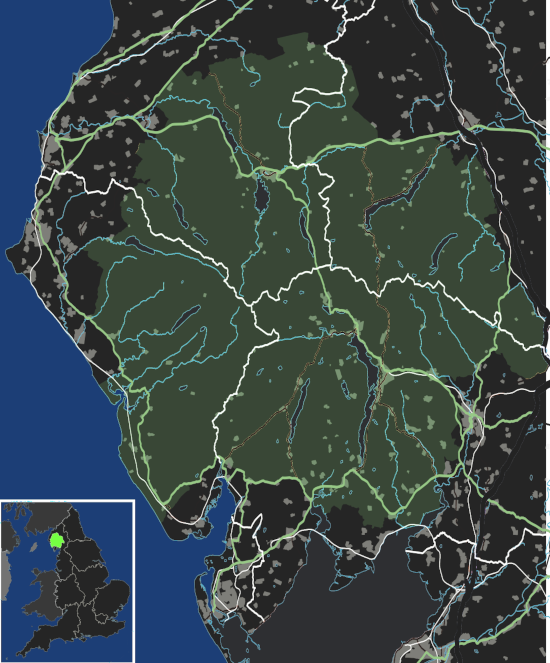

Emily of Wolkeld
Preface
I often peruse the mainly digital/AI artwork on the mainly amateur art
website DeviantArt.com. If I have the “safe filter” on, I can mostly
be assured not to get any spicy, gory disturbing macabre horrific
content. One thing I’ve noticed is how many of these mainly teen and
twenty-something artists are creating, with the help of AI, downright
angelic saintly, innocent, melancholic, old-soul portraits of young
women. It’s almost as if these are the ghosts of women past staring at
me with their forlorn looks. Here is an example of an AI-generated
girl who could be a model for my Emily Whitmore
Then of course, How could you, a sixty-eight year-old American man, possibly think you are qualified to write about an English earl’s and a German baron’s daughter both of nineteen years of age? That’s by far tougher for its directness. This question contains four problems,
- I’m not nineteen,
- I’m not female,
- I’m English and German but not by birth,
- and not since the 1500s have we been aristocrats.
Oh but I am forty percent English, forty percent German (the rest Celtic/Scottish) per AncestryDNA. And I might have a drop of German aristocracy left in me. My namesake ancestors were some sort of patrician family who as early adopters of Luther were chased about Europe by the Catholics for two centuries. And then in 1711 Queen Anne of Great Britain took pity on us and brought us over to the Colonies. And then from my years as a young man in Europe—Germany and Switzerland—I did have encounters with German aristocrats who impressed me with their noblesse oblige. As you can imagine, the whole topic of aristocracy was a complete terra incognita for an American; but over time my exposure to the Old World have fundamentally altered me. And so a deep Old World perspective is what I’m trying to put forth with EoW. I would also insist being an older male does not disqualify me from writing about young females of my species. After all, we have only male and female, and we study each other constantly incessantly. Good writers have often written believably when describing humans of both sexes.
Why I chose to forego traditional publishing is also a good question. The first and foremost reason is, quite simply, the gatekeepers of the trad publishing world apparently don’t want me around. Countless manuscripts I have sent—and received either nothing or rejections. I won’t (can’t) speculate as to why. The second reason is rendering EoW in this lovely Edward Tufte format web page is so much more natural, as it allows me to place sidenotes exactly beside a point in the text as needed—and yes, they are often needed with EoW.
I can guarantee you’ve never read anything even close to EoW. Many have written stories about aristocrats, but nothing ever like this. EoW is definitely an anti-Downton Abbey for sure. And I’ll just leave it at that. Please get started.
Part One: In Seasons of Thy Absence
… I have lifted up mine eyes unto the hills
Yes, feminine. But capable. One of her long frock dresses might cover the neoprene mucking boots she had brought back from America. But none were quite that long. The modern floral-icon pattern would still be visible. Nothing bold, nothing different, no colourful Wellingtons this morning, she thought to herself.
She laid out a dark-olive woollen tunic dress on the bed, then her soft Swedish woollen tights and a silk polo neck top. From under the bed came her old hiking boots to which she began applying waterproofing grease. Why go out in the sleet and rain? She simply would. She was nineteen years old and knew nothing of sheep, but she would go out all the same.
She set aside the boots and grease and went over to the window. Embedded deep in the stone wall, the casement window offered a view of North Hill and its ancient wood in the dim dawn light. No green yet on the stocky oak and beech, the outline of abandoned, derelict Wolkeld Hall just visible through the universe of black branches.
Things crossing, things parallel. Some meandering, some moving quickly forward. Much holding back. Here was Cumbria again, a place subtler than America where she had lived for the past seven years. Here was her childhood, like a dear old cat left behind, and upon returning found stiff and slow but still alive.
To step back from the hectic modern world. To play some part on this gloomy day in such a remote corner of the world. “Lambs and ewes,” she whispered, smiling. To go down to the inbye lambing pens, the tracts of various shapes and sizes separated by ancient dry stone walls all around tiny Wolkeld village. Or to make the long hike up to the fells, the high, treeless slopes launching skyward beyond North Hill where ewes were hefted or bonded to their hereditary spots on the slopes. She sighed and a smile became a smirk. Either place she would only be an observer—though ready to help. As would be her father, Stanley Whitmore, the Thirteenth Earl of Wolkeld. Despite having grown up here, he probably couldn’t tell a ewe from a ram.
The sheep and their Cumbrians, an age-old partnership, together since
the ancient Norsemen brought the hardy Herdwick breed to the high and
lonely Lake District.1
Lake District

(From Wikipedia.)
Wolkeld sheep farmers Thomas Sulley and Todd
Wilson carried two lifetimes of experience up to the slopes and down to
the lambing pens. And those young back-to-the-landers were quite eager
from what she had heard. And the soft-spoken veterinary couple doing
internships out of Penrith. They all spoke Northern. Polite as they
were, the flow always seemed broken whenever they had to include her or
her father. But she simply had to make a contribution. Noblesse
oblige.
{kind=link}
Emily was twelve when her father moved the family to Manhattan, Kansas, to take a professorship in the finance department of Kansas State University. Stanley Whitmore: the laissez-faire capitalist, the Thatcherite who admired America so much. Lady Catherine Whitmore, however, saw nothing in the hot, dry Midwestern plains but an alien land. In public Emily’s cultured mother, daughter of Baron Lucas Holde of Sussex, played the upbeat English noblewoman, but in private she was devastated and despondent. Their marriage already in estrangement, the isolation drove her into a deep and at times catatonic depression.
Through it all Emily remained her mother’s daughter. In those supposedly formative teen years she never acquired an accent, nor seemingly anything American. A small band of nerd kids from high school included the exotic girl in their circle; but her one true friend was Annette von der Surwitz, an exchange student from the Harz Mountains region of Saxony-Anhalt, Germany, who had come to Manhattan during her junior year. By amazing coincidence Annette was also a peer. Even more amazing, her parents, Baron Freiherr Herbert and Baroness Freifrau Sibylle von der Surwitz, had reacquired the family’s old estate in the former East Germany after reunification and were managing it as a modern version of an old-fashioned farming Landgut. Emily smiled. Annette was arriving from Germany the next day for a visit.
The sleet changed to rain and again the window became more transparent. She could just see her breath in the grey light. Start a fire, write a letter? No, time was wasting. Get dressed and go down to the kitchen, she told herself. The day always began in the ancient hall house’s rustic kitchen.
Her mother did not survive Kansas. The official cause of death was lymphoma. Lady Catherine had refused all treatment, even pain medication. A rush of intense, hot emotion as Emily thought of her mother’s suffering. Her father had taken the sensitive, intelligent, genteel woman from the things she loved and had tried to browbeat her into accepting a place, a life she could not abide.
Sleet, and again the window was more opaque than translucent. A tear, though in that moment a glimmer of insight: She knew her mother had sacrificed herself to keep the family together. She now realised how courageous she had been to simply be hurt and not turn injury into anger and retaliation. “Brilliant, Mother, brilliant,” she whispered, her tearing eyes wide with amazement.
Emily could hear her father shouting at her mother, calling her useless and pathetic, badgering her to eat because she had lost so much weight. She could see her delicate mother taking the abuse stoically. To be cornered and abused but not strike back was somehow courageous. She knew this with sudden certainty and clarity. Women like her mother guided the universe with their suffering.
Finally came Andrea Kliewer, the hospice chaplain. In the final weeks of Lady Catherine’s life, Andrea, with calm and certitude, made progress towards reconciling husband, wife, and daughter into a family again. And after Lady Catherine’s death, she remained an integral part of their lives. She and Emily met weekly for grief counselling, later including Lord Stanley as well.
Though the repentant Stanley Whitmore was too late for reconciliation with his father. Lord Henry Whitmore, Twelfth Earl of Wolkeld, had died just a fortnight before his daughter-in-law.
The new earl seemed desperate to make up all the wayward years of strife and alienation overnight. He pestered Sulley and Wilson, pumping them for information, trying to stamp a role for himself out of his ancestral ground. His daughter likewise wanted something to do, some role to play. Noblesse oblige, indeed.
Emily envied Annette. Her Freiin led the life of a young German noblewoman, dutifully following her father and mother to formal events, then pivoting to play the farmer’s daughter—working in the fields and gardens, running their raw milk dairy operation. But they were Germans, and Germans always seemed so logical.
Sleet to rain again, crystalline to fluid. Emily felt the cold and slipped into her Icelandic zip-up. What was out there? Cumbria was out there. A Cumbrian spring was typically wet and chill. Spring in Kansas, however, had been a warning of the intolerably hot summer to come. Emily hated the Kansas summers most of all. Too strange it was to escape the sweltering heat into artificially cooled spaces. For countless aeons her people had done just the opposite—escaped cold into heated spaces.
College? She had been a straight-A student at her Kansas high school and had done quite well on her SAT exam, but no, just be here for a time, just stay low and quiet for a while, allow the coolness of spring to pass and the inevitable warmth of summer to grow. Through all the newness, strangeness, and uncertainty, something of the land reached out and told her to simply watch and experience.
Her father was the new earl, but his mother, her grandmother, Lady Susanna Whitmore, still retained control of much of the properties. Unusual, done as Emily understood to keep the full inheritance tax from coming due all at once. Stanley wanted to take an active role, but Gran seemed to have a tin ear for most of his ideas. She was wary of the son who had stormed off to America after being so fiercely, so bitingly critical of his parents. Emily knew he had called their lives as farming gentry a sham and a farce.
The fact that small-scale sheep herding was not really competitive—or at least only for niche markets—hung over the valley like a curse. That Cumbrian farmers were dependent upon government subsidies, only kept up as many said for the tourists. Modern large-scale, large-holdings agriculture supplying the global commodities markets had long since overshadowed traditional English manorial system. Beyond a doubt the region’s main industry was tourism. Nevertheless, Stanley Whitmore had some vision of gentleman farming in his head and very much wanted to run with it.
Lord Stanley with eight middle names had returned home a believer in local, traditional farming, as well as other-century manorial monarchism in general. And he would bend any ear with how genial the whole thing had been all along—simply put, the best long-term management strategy for the limited resources of their chilly, rainy British Isles. But what about market-rewarded innovation and efficiency; what about global trade and economies of scale; what about the seemingly ceaseless science and technology revolution? When any astonished (bemused?) friend asked him what had happened to his pro-business Thatcherite conservatism, he would energetically explain his new and surely more true conservativism. He who once stood so firmly for free-market globalist dynamism had reinvented himself as a fundamentalist High Tory Luddite monarchist.
Emily listened closely to the rain on the window. Behind the delicate patter was silence, the old sort. Not just the chance absence of sound, narrowly localised in a normally noisy world; rather, a deep, dominant, timeless creature stretching for miles in all directions. She stood absolutely still and quiet in the dim light afforded by the two-foot-diagonal window. She breathed in deeply, took a step back, swept her gaze across the rough, uneven, lime plaster walls—then exhaled slow and deliberate.
Compared to their suburban Kansas Neo-eclectic “McMansion,” put up in a few weeks from tree-farm pine, Chinese plasterboard, and vinyl siding, their stone and timber-frame hall house, supposedly started during the reign of Edward VI, seemed the mass of a small planet. She felt completely at peace in this old place, an entirely new feeling after so many sad and stressful years. She drifted over to the old wooden table that served as her desk. Among the books and papers was her pocket edition of Emily Brontë’s poetry. She picked it up and, as she often did of a morn, read Stars
Ah! why, because the dazzling sun
Restored our earth to joy
Have you departed, every one,
And left a desert sky?
All through the night, your glorious eyes
Were gazing down in mine,
And with a full heart; thankful sighs
I blessed that watch divine!
I was at peace, and drank your beams
As they were life to me
And revelled in my changeful dreams
Like petrel on the sea.
Thought followed thought, star followed star
Through boundless regions on,
While one sweet influence, near and far,
Thrilled through and proved us one.
Why did the morning dawn to break
So great, so pure a spell,
And scorch with fire the tranquil cheek
Where your cool radiance fell?
Blood-red he rose, and arrow-straight
His fierce beams struck my brow:
The soul of Nature sprang elate,
But mine sank sad and low!
My lids closed down, yet through their veil
I saw him blazing still;
And steep in gold the misty dale
And flash upon the hill.
I turned me to the pillow then
To call back Night, and see
Your worlds of solemn light, again
Throb with my heart and me!
It would not do the pillow glowed
And glowed both roof and floor,
And birds sang loudly in the wood,
And fresh winds shook the door.
The curtains waved, the wakened flies
Were murmuring round my room,
Imprisoned there, till I should rise
And give them leave to roam.
O Stars and Dreams and Gentle Night;
O Night and Stars return!
And hide me from the hostile light
That does not warm, but burn
That drains the blood of suffering men;
Drinks tears, instead of dew:
Let me sleep through his blinding reign,
And only wake with you!
Indeed, to only wake with you, stars. She gazed out, letting the book go slack in her hands. Though very little risk of burning on this morn, she mused.
It was on a Sunday afternoon some three years ago that Annette had introduced Emily to Romantic Era poetry, to its Dark Romantic core. A warm glow bordering on euphoria welled up just thinking of the moment her Freiin had recited Stars from memory. The German baroness had befriended and comforted the earl’s daughter adrift in her sadness and loneliness, had brought her to a deeper understanding of what it was to be of noble birth.
Annette’s Dark Muse. Nothing evil, nothing to fear in darkness, she assured. While the day is dominated by the one single, overbearing star, the myriad nighttime stars would have us aware of a greater universe, a greater power. Stars invite long, high sight, while the sun presses down and blinds any who would look up, Annette’s words. Just remembering the sudden joy of their fateful meeting gave her a giddy feeling. Tomorrow she will be here!
During their short school year together, she and Annette had pored over the works of many Romantic poets, but their shared favourite was Emily Brontë whose poems read like devotional psalms to nature, to a determined young female will, so thoroughly and deeply honest and forthright. Early nineteenth-century Haworth, Yorkshire, on the remote, windswept heath moors … modern Emily could not begin to fathom such a life as her Christian namesake’s. She could not imagine her suffering and death. Tiny Haworth lay less than one hundred miles away, and yet so far away in the fourth dimension of time. To be sure, America had been a place of only three dimensions. And now she was back in her homeland, a place with the palpable fourth dimension of time, of history and, thus, true culture. Emily Jane Brontë—born in eighteen-eighteen, died in eighteen forty-eight—had known hardly more than rural Yorkshire in her short thirty years; and yet she expressed in her poems great subtlety and sublimity, emanating from, steeped in the wild nature of the treeless, windswept hills. Haworth Emily was Wolkeld Emily’s hero.
She went back to the window, set the pocketbook in the stone well, and read Stars again. How nutritionally deficient was her body when she wrote this? she wondered. How cold was the room? How hopeless were her suppressed needs? In general, how fraught was her life? Subdued things, things concurrent and parallel swirling all around supported well those lines, all glowing once more inside a young reader’s heart and mind so many years later. She had anticipated, looked for to such deeper, subtler feelings back home, and this morning was not disappointing her. A grace indeed, she thought.
She put on the silk polo neck top, the Swedish woollens, the thick woollen socks and old boots, the dress, finally her blue-and-white Icelandic again. Gran and Mrs Colby, the cook, would still be in the kitchen. They would know what her Saul-to-Paul father was up to.
On the face of it, all had become tourism of one sort or another—their ancestral conservation village, Wolkeld, inhabited mainly by well-off strangers, a large percentage foreigners from the United States, the Commonwealth, continental Europe, the Far East even. The Sulleys and the Wilsons, nearing retirement, their children grown and moved away, were the only full-time traditional herding families left in tiny Wolkeld. The manor’s properties below North Hill were rented out short-term to tourists; eight former tenant cottages of various sizes, once considered lowly and primitive, now modernised and commanding top rates.
Troubling, sad, unnatural how the tourists seemed not to matter, these supposedly fellow humans. Some made an effort to be more permanent, to put down roots; but Cumbria measured belonging in generations, centuries even, not just a few warm seasons. The old approach to relationships and place meant human connections were precious, timeless, often enough hard-won, resulting in the commitment to location, to land absolute. Surely tourists came from somewhere real, places serious, even grim and harsh perhaps, places where they had soldiered along and hamstered away enough to afford a piece of rustic Cumbrian bucolic theatre. Mostly middle-age and older, so many with blinkered urban eyes and hard-set mouths. And so they remained transitory in-betweens, a shadowy migratory species, mostly not letting go their cool, detached, impersonal urban ways.
The “lodge,” as they called it, stood at the foot of North Hill and its meniscus-shaped seventy-acre wood. Wolkeld Hall, however, had not seen inhabitants since the interbellum—though Lord Stanley was keen to renovate and re-inhabit. What he once sarcastically dismissed as “proto-Bauhaus” was indeed plain and boxy, like an old factory put together from rough, now smut- and lichen-encrusted limestone blocks, sprinkled with neo-Gothic details seemingly as an afterthought, the whole affair hidden behind a forbidding old forest. Gran, however, was not interested, “I’m too old for camping trips.” But as Emily understood, something had to be done since it was a listed historic building. Lord Stanley had inherited Wolkeld Hall, the surrounding grounds, as well as Wolkeld Wood, making him liable for potentially millions in taxes.
For repatriated Emily, walking the tree-canopied lane, exploring the wilded grounds and deteriorating mansion was like stepping into some surreal period film. Again, she felt herself unfolding and expanding out into the fourth dimension. So strange it had been to watch films of her homeland whilst in Kansas, knowing all along she was a part of that world and would eventually return. She and Annette had consumed period film after period film, Annette constantly complaining about all the “modernist triumphalist anachronisms,” as she called them. Her German bluntness ranged between droll and shocking, but eventually Emily learned to enjoy the German national sport of meckern, or serious, free-range, no-holding-back complaining.
Slowly some true daylight, though disproportionally little entering the room. The rain had changed to an insistent drizzle. Emily’s mood was an odd admixture of melancholy and expectation as she had never felt before. She could not take her eyes off the hill. After so many years smaller than she remembered, but for an expectant young adult all the more compelling, ominous for it. When her father had announced the previous Christmas to her and Andrea that he would return to England in the spring, she felt a strange but guarded relief. At last! After seven hard, bitter years of estrangement from family and land! It would be both a new life in a new place as well as a resumption of her old life in her true home.
London—where her father had been an investment banker, her mother a publisher, and she a student at the French immersion L’Ecole—had only ever been a backdrop to her epic, magical weekends and summers at Wolkeld. She so cherished her Wolkeld memories, the land, the people. The Sulleys and Wilsons had been the jolliest aunts and uncles, their children, their nieces and nephews like big cousins. Now the cousins were scattered, the aunts and uncles initially shy and quiet around her. Yes, they were showing respect in the age-old fashion—possible too they were nervous and cautious due to her father’s erratic behaviour. She would just have to take the initiative if she wanted them back as aunts and uncles.
Not yet, nothing just yet. Another Brontë. She sat down at the table, lit the curious three-candle camper’s lantern she had brought from America, adjusted the shiny metal rectangular sheet behind it to reflect as much light as possible onto her desk, and began reading from her copy of Poems by Currer, Ellis, and Acton Bell, Anne’s A Reminiscence:
Yes, thou art gone! and never more
Thy sunny smile shall gladden me;
But I may pass the old church door,
And pace the floor that covers thee.
May stand upon the cold, damp stone,
And think that, frozen, lies below
The lightest heart that I have known,
The kindest I shall ever know.
Yet though I cannot see thee more,
’Tis still a comfort to have seen;
And though thy transient life is o’er,
’Tis sweet to think that thou hast been;
To think a soul so near divine,
Within a form so angel fair,
United to a heart like thine,
Has gladdened once our humble sphere.
She might have meant her mother who died after her birth, or one of her older sisters, Maria or Elizabeth, they having died from deprivations suffered at their infamous boarding school for poor vicars’ daughters. But as with any elegy, Emily was reminded of her own mother, who had died from modern deprivations and was now finally interred in the parish graveyard. Another tear.
More light through the window. In less than two months, at the peak of the Cumbrian summer, dawn would arrive at four-thirty a.m.! Kansas to Cumbria: The ninety degree longitudinal change had brought her to the older hemisphere, but the seventeen-degree latitudinal change would take getting used to as well. She stared at the tongues of flame of the beeswax candles. She blew out each one and closed the book. The white, heavy, beeswax-perfumed smoke from the wicks took over the room.
She rose and went to the window once more, resting her elbows on the hard, bumpy plaster of the window well. Craning her neck, she could just see a small patch of blue sky. The wind had increased, whipping the branches of Wolkeld Wood about. Glimpses of the dark manor flashed in and out of sight.
Gazing intently at the hall, she again mused over all the British film and television she had consumed: the popular Downton Abbey, the very many period films. She had tried hard to balance staring with reading, but the screen versions were so alluring, so addictive. She and Annette had felt great affinity to Jane Campion’s 2009 Bright Star and especially the Cary Fukunaga version Jane Eyre from twenty-eleven. They were a new sort of British period depiction. Rather than inviting the modern viewer to feel superior---triumphalist as Annette called it—they drew the viewer in as an equal to the characters, subordinate to their thought patterns and mores. Still, the modern artistic liberties would have confused if not shocked any audience from those times. Of this Annette was grimly certain. Emily gave a small laugh.
Fantasy was another amazing offering of modern Britain: Rowling, Tolkien, Neil Gaiman, Susanna Clarke’s overwhelming Jonathan Strange & Mr Norrell. British fantasy writers enjoyed popularity worldwide. And yet from her colonial vantage point, these books and their film versions had made her home seem less real, more magical, her people like fairies, elves, and hobbits.
Now she was back in the real England—surely a relief after those long, confusing years—where she keenly sensed another topic she and Annette often discussed, namely, the tension between Old World stasis and New World dynamism. America, Americans were always about progress, change, dynamism. But what chance did any sort of traditionalism have even here? Emily’s father, now chasing his imaginary Retropia, was making a pest of himself. Gran and the local farmers were guarded and non-committal.
Whither dynamic America? Whither this mad modern rush? Except in the oldest places, the typical American town or city felt hardly more permanent than refugee settlements of tents and makeshift sheds. True enough, she had walled herself off mentally and emotionally and had never really unpacked, rarely explored her surroundings.
Though the New World did have some scraps of the Old World left. For their first Halloween, she and her mother visited Chris Coolidge, her mother’s old friend and Emily’s godmother, in Boston. Lady Catherine had known Chris from her time as a publisher living in London. The wealthy Brahmin heiress, Christine Florence Coolidge, was witty and direct, always ready with a pithy remark, and completely devoted to her goddaughter… Again, a wave of emotion as she remembered her mother in better times, happy and laughing with her best friend.
Chris’s townhouse in the Beacon Hill quarter had been like an Old World oasis in the middle of all the new and strange. They hit the streets of colonial Salem to witness a sort of Halloween Carnival. The Americans had definitely expanded the ancient Celtic new year’s celebration beyond what it was back in Scotland and Ireland. According to Chris, America’s Halloween was second only to Christmas commercially—apparently a significant measurement.
They also visited Chris’ farm in New Hampshire. Again, parts of the countryside looked and felt like the Old World, and yet always with such tasteless intrusions, as if no one could ever say “Stop! Don’t do that!” to someone making ugliness. The highlight, as Emily now believed, was their trip high up into the White Mountains. Here was something unique about America, namely, real wilds—the seemingly untouched New World forests, grand and expansive to all horizons. To be sure, the American wilderness felt primordial and mysterious to a girl from England.
She gazed once more at the broken outline of Wolkeld Hall through the trees, letting her concentration slip and her eyes glaze. She listened after that strange place in her mind where bits and pieces of scenes played beyond her comprehension, where shadows of thoughts never quite became clear … though at times some glimpse of something would suddenly flash by demanding her best attempt at a poetisation.
Since Kansas, since puberty, she would occasionally find herself slipping into some further space beyond the secret compartments. But again, she could only sense, partially comprehend this expansive, twilit region, fleeting, but long dominating her heart and mind. At first she considered such flights just intense day-dreaming, but over time they became less imagined, more a definite communion with a distinctly separate realm. It was a dusky world, steeped in sublime melancholic loneliness, often large and panoramic. At first she found it worrisome—not some clear and obvious religious transport of light and ecstasy. And yet she came to believe good was speaking, not evil, nor for that matter any sort of lurking mental illness. She wished it to be something of her soul’s true home, perhaps some special, deeper view of Cumbria—at least that was the place to which she always mapped it, for which she yearned immediately thereafter.
Her first distinct episode had been at a freshman class party held by one of her Kansas friends, Mary Schrag, at her family’s rural Flint Hills ranch. She remembered wandering up to the first storey of the old limestone house—ostensibly to escape the excitement and people—and being drawn into a north-facing bedroom. The entire ranch was like a museum to the Schrags’ nineteenth-century ancestors, hardly anything modern to be seen, and indeed in that room everything was antique. She recalled a powerful feeling of déjà vu, as if she had entered some ghost remembrance of the space on a past winter day of profound snowy isolation and loneliness. Later that night—after deciding it had not been just a fanciful impression—she wrote in her journal: A strange world opened up before me, inviting me to come explore. Initially frightened at its power. All the more curious now.
It was in her sophomore high school year that her mother had begun to seriously deteriorate, and the confused, frightened girl often found refuge on this mysterious plane. Sadness and anxiety would fade as the magic came on like a new facet of a gem turned slightly on its own. At first these reveries overlapped reality. But a year later on a hike in the Konza Prairie Reserve just outside of Manhattan, she experienced an episode that could only be called a true blackout. She had been with Mary, Annette, and another American friend, the tall, waifish Irene Neufeld—who so mysteriously seemed to be a fellow traveller. Emily recalled coming out of the vision and glancing over at the knowingly grinning, but, as was her habit, maddeningly Sphinx-like Irene. Annette had picked up on all this and fell in close beside her new friend for the remainder of the hike.
The next day Emily and Annette attended Sunday service at the Episcopal Church in Manhattan, and afterwards they sat outside the imposing stone structure in the garden grove under the giant elm trees. Emily shared a poem she had written the previous evening. She said it was an attempt to capture, to describe something of the place and the feeling of her visionspace
Burgundy roses, pallid lilies, cobalt irises
Delivered for the night’s performance,
To the theatre in the hollow, le théâtre de la combe.
Village-bound now, once a fairy circle,
Long since fairy dream haunted.
Down from the grove, now the square.
Recall the one attendance as a child:
Visions of darker, older nights since.
Escape to the countryside;
Great sunlight to dispel dark rumour,
Though pale blue sky the thinnest canopy,
Indigo veil waving, grey clouds and fog billowing.
Incessant winds to lift and shred the scrim
Till starless void revealed. . . .
Evening, and the chill wind rising up
The cobblestone ruelle from the hollow.
On this night of nights rapture,
Dark clouds streak a moon red-orange,
Now just above le théâtre de la combe.
Annette said nothing but stared ahead, her jaw tensed, her lips narrowed. She suddenly grabbed her old German school satchel took out a small pocket book of Emily Brontë poems, but then proceeded to recite most of Stars from memory.
Emily opened her eyes to see Annette once more digging through her satchel, finally producing a thick, squarish book. This she opened to a bookmarked page and began reading Anna Letitia Barbauld’s long and unrelenting A Summer Evening’s Meditation:
’Tis past! The sultry tyrant of the south
Has spent his short-liv’d rage; more grateful hours
Move silent on; the skies no more repel
The dazzled sight, but with mild maiden beams
Of temper’d lustre, court the cherish’d eye
To wander o’er their sphere; where hung aloft
Dian’s bright crescent, like a silver bow
New strung in heaven, lifts high its beamy horns
Impatient for the night, and seems to push
Her brother down the sky. Fair Venus shines
E’en in the eye of day; with sweetest beam
Propitious shines, and shakes a trembling flood
Of soften’d radiance from her dewy locks.
The shadows spread apace; while meeken’d Eve
Her cheek yet warm with blushes, slow retires
Thro’ the Hesperian gardens of the west,
And shuts the gates of day. ’Tis now the hour
When Contemplation, from her sunless haunts,
The cool damp grotto, or the lonely depth
Of unpierc’d woods, where wrapt in solid shade
She mused away the gaudy hours of noon,
And fed on thoughts unripen’d by the sun,
Moves forward; and with radiant finger points
To yon blue concave swell’d by breath divine,
Where, one by one, the living eyes of heaven
Awake, quick kindling o’er the face of ether
One boundless blaze; ten thousand trembling fires,
And dancing lustres, where th’ unsteady eye
Restless, and dazzled wanders unconfin’d
O’er all this field of glories: spacious field;
And worthy of the Master: he, whose hand
With hieroglyphics elder than the Nile,
Inscrib’d the mystic tablet; hung on high
To public gaze, and said, adore, O man!
The finger of thy God. From what pure wells
Of milky light, what soft o’erflowing urn,
Are all these lamps so fill’d? these friendly lamps,
For ever streaming o’er the azure deep
To point our path, and light us to our home.
How soft they slide along their lucid spheres!
And silent as the foot of time, fulfil
Their destin’d courses: Nature’s self is hush’d,
And, but a scatter’d leaf, which rustles thro’
The thick-wove foliage, not a sound is heard
To break the midnight air; tho’ the rais’d ear,
Intensely listening, drinks in every breath.
How deep the silence yet how loud the praise!
But are they silent all? or is there not
A tongue in every star that talks with man,
And wooes him to be wise; nor wooes in vain:
This dead of midnight is the noon of thought,
And wisdom mounts her zenith with the stars.
At this still hour the self-collected soul
Turns inward, and beholds a stranger there
Of high descent, and more than mortal rank;
An embryo God; a spark of fire divine,
Which must burn on for ages, when the sun,
(Fair transitory creature of a day!)
Has clos’d his golden eye, and wrap’d in shades
Forgets his wonted journey thro’ the east.
Ye citadels of light, and seats of Gods!
Perhaps my future home, from whence the soul
Revolving periods past, may oft look back
With recollected tenderness, on all
The various busy scenes she left below,
Its deep laid projects and its strange events,
As on some fond and doting tale that sooth’d
Her infant hours; O be it lawful now
To tread the hallow’d circle of your courts,
And with mute wonder and delighted awe
Approach your burning confines. Seiz’d in thought
On fancy’s wild and roving wing I sail,
From the green borders of the peopled earth,
And the pale moon, her duteous fair attendant;
From solitary Mars; from the vast orb
Of Jupiter, whose huge gigantic bulk
Dances in ether like the lightest leaf;
To the dim verge, the suburbs of the system,
Where cheerless Saturn ’midst his wat’ry moons
Girt with a lucid zone, in gloomy pomp,
Sits like an exil’d monarch: fearless thence
I launch into the trackless deeps of space,
Where, burning round, ten thousand suns appear,
Of elder beam; which ask no leave to shine
Of our terrestrial star, nor borrow light
From the proud regent of our scanty day;
Sons of the morning, first-born of creation,
And only less than Him who marks their track,
And guides their fiery wheels. Here must I stop,
Or is there aught beyond? What hand unseen
Impels me onward thro’ the glowing orbs
Of habitable nature, far remote,
To the dread confines of eternal night,
To solitudes of vast unpeopled space,
The deserts of creation, wide and wild;
Where embryo systems and unkindled suns
Sleep in the tomb of chaos? fancy droops,
And thought astonish’d stops her bold career.
But oh thou mighty mind! whose powerful word
Said, thus let all things be, and thus they were,
Where shall I seek thy presence? how unblam’d
Invoke thy dread persecution?
Have the broad eye-lids of the morn beheld thee?
Or does the beamy shoulder of Orion
Support thy throne? O look with pity down
On erring guilty man; not in thy names
Of terror clad; not with those thunders arm’d
That conscious Sinai felt, when fear appal’d
The scatter’d tribes; thou hast a gentler voice,
That whispers comfort to the swelling heart,
Abash’d, yet longing to behold her Maker.
But now my soul unus’d to stretch her powers
In flight so daring, drops her weary wing,
And seeks again the known accustom’d spot,
Drest up with sun, and shade, and lawns, and streams,
A mansion fair and spacious for its guest,
And full replete with wonders. Let me here
Content and grateful, wait th’ appointed time
And ripen for the skies: the hour will come
When all these splendours bursting on my sight
Shall stand unveil’d, and to my ravish’d sense
Unlock the glories of the world unknown.
Emily was entranced, transported, stunned—not just by the poem, but by her friend’s perfect accent, her sonorous diction, her overwhelming sincerity and intensity. After a long pause they took up each other’s gaze. “Many poets have noted this as an inspiration,” said Annette at last in a quiet, serious tone, her face grave and unsmiling. “I read it often.”
“Indeed,” replied a glowing Emily, rocking slowly back and forth.
They once more searched one another’s eyes until Annette broke to pull out another book, open it to a marked spot, and read from the German poet-philosopher Friedrich von Hardenberg, pen name Novalis, his Hymns to the Night
Silence as the girls looked down at the ground. Annette finally spoke: “They combined what I call the Dark Muse with their Christian beliefs—and these again with elements of nature and the pagan.” She spoke hardly above a whisper, strangely haltingly, glancing nervously over at Emily.
“Yes, yes, one would think they’re incompatible,” said Emily in a light tone meant to be supportive.
Emily could not help but notice how Annette was wringing her hands as she glared out across the garden—fearfully? In an almost harried, if not embarrassed tone the tall, blonde German finally replied, “Yes, I suppose they are.”
“It was such a completely different world back then,” offered Emily, searching Annette’s stern, dark face. The situation was unmistakeably raw and tense. “Annette, what is it? You seem troubled.”
Annette shot Emily an anxious look, staring down again. “Oh indeed it was.” This she tossed out matter-of-factly, nodding-jerking her head up and down. “A completely different take on life.”
Silence as they once again gazed out over the garden. Finally Annette spoke, again haltingly and full of emotion: “I—I’ve had this conversation before—and it was the end of a friendship.”
“Whatever do you mean?” countered Emily in a whisper.
“I’m saying I lost my dear friend when I tried to relate my penchant for the Dark Muse to her.”
“How then?”
Annette took a deep gulp of air, shrugged violently, and continued: “She—she would only equate dark with morbid, with evil. And there was nothing I could say to convince her otherwise!”
Emily moved closer and took Annette’s hand. “Dear girl, thank you so very much for sharing these beautiful poems. I feel honoured that you’ve trusted me. And now that I know about it, I’m all for this Dark Muse, as you call it! It’s all too wonderful for words! And it’s exactly what I’ve felt—recently, yesterday.”
Annette sat erect, her chin high, though tears were streaming down her face. Emily moved closer and took her forearm. Once her sobs had subsided, Annette told the story of her childhood best friend, a devout Catholic, who had adamantly rejected Annette’s advocacy of Dark Romantic and the Dark Muse.
“Oh, I just could not get her to understand!” Annette exclaimed, again sobbing. “And the more I tried, the more she pulled away aghast, repulsed, terrified, even.”
In just those few minutes Annette had lifted her out of a pit of fear, despair, and confusion and onto a high plateau, and yet at a great personal cost. Emily cried too—partly for Annette’s suffering, but again in a strange reaction to their shared language. Emily told her what a great relief it was to simply be with her and speak proper English. They finally laughed.
As she came to know, the studious German had since the fifth grade poured heart and soul into learning English, Oxford English, as the Germans sometimes called British English. And what Emily heard on that day was indeed such a lovely sounding language, so real and comforting. Indeed, her Anna Elisabeth Franziska Adolphine Wilhelmine Louise Maria Freiin von der Surwitz had stubbornly avoided anything but nineteenth-century English literature and poetry, learning countless passages and poems by heart until her elocution had become nineteenth-century erudite and dignified, her accent all but perfect. This was in stark contrast to her classmates who trained their ears and tongues by watching endless hours of American television, films, and internet videos. And so it was no wonder she sounded as though she had stepped out of a British period film.
“The darkness is a natural part of nature,” said Emily. They looked into each other’s eyes and Emily could now feel a great wave of relief lifting them. She smiled and looked up into the sky. “I do believe this life only makes sense with nature’s beauty as well.”
“Yes, yes,” replied Annette in a near-whisper, “Nature wondrous. And we must accept life when it is dark and terrible, too. The subtle and the sublime. We must remain faithful and reverent.”
Something had indeed shifted, and the girls again burst into merry laughter. They held onto each other’s hands tightly and leaned into each other.
Emily spoke: “The dark deeper than the light … odd that I can now see this so plainly.”
Annette laughed, drew breath and smiled meekly. “Oh, they knew back then.” She motioned with her head. “Life could be such a hard and bitter struggle, and they trusted in God. And they found solace in nature as well.” She paused and looked down, then continued, “God’s grace—always there for us if we’ll see it and take it.”
“Yes, it is,” whispered Emily. But then she shook her head.
“What is it?” asked Annette, dread and fear quickly returning to her face.
Emily squeezed Annette’s hand reassuringly. She bit her lip not to laugh. “It’s—it’s just how you speak, dear girl! Again, I’ve got to say I’m so happy to hear English properly spoken.” She looked admiringly into her eyes. “I’m just so happy we’ve finally had this conversation!”
Silence. Both girls studying the gravel below.
“Yes, at last,” whispered Annette, looking out, a calm smile breaking through.
“How are you adjusting?”
Annette gave soft, embarrassed laugh. “Well enough, I suppose. I must say, I don’t really know how to get on with the Americans. How do you do it?”
“Don’t ask me! I’m all at sea. My father’s been trying for years to Americanise Mother and I.”
“How dreadful!” replied Annette, now pulling an ironically stricken face.
Happy laughter.
“Oh, I’ll survive,” replied Emily, waving her free hand. “But back to what you were saying. No, we just can’t fathom their minds today. So much has been lost.”
A small sigh came from Freiin Annette. “We can only scavenge what they’ve left us. And pray. I scavenge and pray.”
“We mustn’t let go.”
“How much of the past can we really own? Only our own past as memories, I’m afraid. But there’s always nature—nature was the common thread back then,” said Annette, leaning forward. “They spent so much time in nature. They turned their reverence for the Creation into the most brilliant art and poetry. It was so special what they did.”
“Yes, yes,” replied Emily softly, almost shyly.
Silence. Just then they delighted in the birds singing lively all around them.
“I remember my mother and one of her friends talking about this,” continued Emily at last. She searched her mind for some of the conversation Chris and her mother had pursued. And then something completely non-intellectual struck her and she had to laugh: “Oh, Annette, I played endlessly outdoors—whenever we were in Cumbria, that is. They practically had to tie me to a chair to feed me meals!”
Annette laughed and clapped her hands. “The same with us! My brother Robert and I would barely come in to sleep. Mother and Father worried we were going feral.”
Laughter.
Annette continued: “And the Harz! You must see the Harz Mountains! We’d have the most magical adventures in those forests. They’re suffering from climate change, but you must see them!”
"Yes, well, we lived in London—dreary old. But Mother and I would always go up to Cumbria to be with my grandparents whenever we could, weekends, holidays, summer.
“I remember wanting to run away into the hills. I thought if I could just be out there long enough the grown-ups would understand that I really wasn’t a human girl and let me stay.”
Again laughter and then silence as they gazed into their wild childhoods.
Annette continued: “I was thinking about this just the other day: Back then, indoors was never all that in-doors. The homes, the buildings were really rather primitive. One never felt as separated as we do now in these modern buildings.”
“Oh, Annette, you must come see our old lodge. It’s millions of years old. I always felt like a little creature safe in my little creature den. But here—” She let her shoulders fall and made a sound somewhere between a whimper and a laugh. “Here it’s all so closed and cut off. It feels like being sealed up in a space station, or a quarantine or something.”
“Same where I am. Atrocious how these people live.”
Silence.
Annette continued: "Really though, back home being inside never felt as separate from outside as this does. I’ll quote you some of Barbauld’s Lessons for Children where she’s speaking as the moon:
“No, really though, today’s children are living in these, like you say, space station homes, and they’re not getting the pure moonbeams as they once did.”
The young noblewomen were quiet, finally glancing at one another, eyes again moist. “Oh, Annette, thank you so much,” exclaimed Emily.
“You’re saddened by something.”
“I am,” said Emily in a choked voice, tears welling up.
“I shan’t pry.”
“I should tell you my mother has cancer.”
“Oh, I’m so sorry!” At that she leaned over and put her arm around Emily’s shoulder.
“Thank you for your concern,” whispered Emily, tears falling.
“Do you pray?”
“Not enough, not nearly enough.”
“I read from the Bible every day. Shall we read together sometime?”
“Yes, let’s.”
Emily again worked over her memory of her Konza Prairie incident. Annette mentioned only that she had noticed her stumble for a few steps, looking pale and out of sorts. There was no telling how long she had been blacked-out. However, she remembered upon returning the feeling of vulnerability, and how Irene had made it spike, while Annette had made it subside.
Though she finally had to admit that Irene—whatever her level of awareness had been—did not mean her ill. No, the tall, beautiful, graceful, guileless, childlike, near-mute Irene Neufeld had not been teasing or mocking her, nor was she some sort of psychic intriguer. Irene had always been on some other plane. She had the distant look of an elf princess dropped into the mortals’ world, a Jane Eyre, had she truly been the elf Rochester accused her of being. Emily herself was a Jane Eyre dropped into modern America, a Jane who wondered and wondered about the people around her, puzzling over their alien behaviour, wanting so often to hide from everything, everyone, and yet still needing social contact.
Emily and her core group of misfits—Mary, Irene and her twin brother Peter—instinctively avoided the dominant teen society around them. And yet it troubled Emily greatly how her friends seemingly accepted this second-class citizen exile as the natural order of things. With certainty and honesty the earl’s daughter rejected any sort of lower caste designation and kept her chin high, despite the social-psychological pressure and, at times, barely veiled intimidation.
Besides Irene as an elf-maiden, Mary Schrag was a modern version of Virginia Woolf—aloof, emotionally unavailable, demonstratively walled-off against the opposite sex. Peter Neufeld was just as quiet and enigmatic and physically statuesque as his twin sister, though brooding and intense, an emotional black hole. Emily wondered what they would have been like had they not been so stigmatised and marginalized by the dominant lowbrow milieu. She hoped they might someday free themselves and take their rightful places amongst the best and brightest—somewhere other than Kansas.
Emily could never fathom the real purpose of the American high school, which should have been academics, but seemed to have few takers besides “nerds” like her. And even within the nerd subpopulation there seemed no real eagerness for or pride in gaining knowledge. Which meant anything resembling intellectual discussion stayed brief, cramped, tightly circumscribed. “Hanging out” with her friends, Emily often waited in vain for anything of interest to be said. She had gravitated to her little underground group because of their higher intellectual qualifications, as well as their relative calm and maturity; but even amongst these supposedly bright kids communication was strangely self-conscious bursty-telegraphish—as if the walls had ears, as if modern America weren’t a free society after all.
And yet in rare moments the glacier would move. Mary could be counted on for anything feminist, anything LGBTQ-plus. Once in Senior English during Women’s History Month, she had spoken out against the entertainment industry, saying it was no real platform for women, rather, overwhelmingly, a place for immature and not very bright cisgender men to go hog wild—as she put it. Emily remembered laughter, hoots of protest.
And there was the senior graduation party at the Shrag’s ranch where a tipsy Mary began shouting at her father over something supposedly sexist he had said. Mary’s leftist-progressive Mennonite parents—Doctors Royce Schrag and Bekah Kaufman-Schrag were mortified, their normally serene faces wearing noticeably pained expressions.
Mary May Schrag: Emily could never find the slightest scrap of gentleness or femininity in the girl who went about her young life with such an intense ferocity. Over the years, Emily had patiently waited to begin a friendship with the very bright, promising young woman; but that would have required warmth and trust the emotionally if not physically anorexic American found difficult to sustain. Emily did like Mary’s artwork; it was obvious she had talent. Having pored over her mother’s collection of coffee table art books all her childhood, she found Mary’s art reminiscent of Odilon Redon. Mary herself gave her Vermont Waldorf School days credit. Only the summer before Mary went off to college did they seem to make a breakthrough and begin something of a friendship.
Other than Annette’s short year, Emily’s middle and high school years had been awful. She remembered being in an almost constant state of defence, interrupted by moments of shock and repulsion. She found herself amongst American teens who, confronted with an English earl’s daughter, ran the spectrum of reactions from indifferent to intimidated out to incidents of open disdain and mocking. For her part, she had done the exact wrong thing by not wading cheerily into her new situation; instead, remaining distant and reserved, holding on to an innate dignity, thereby earning her the label stuck-up.
For seven long years she managed a heavy load of bad feelings about her life and her environment. But through it all she clung to the example of her mother’s dignity and unique femininity, something her father could never chip or dent, despite his attempts to change her. Emily came to understand and honour the courage she found coming to the fore in her mother as she slipped deeper into terminal illness. And yet the stark reality of such virtue being so seemingly irrelevant and so trampled under by her supposedly noble father burdened her greatly. Her mother had steadfastly refused to follow her husband as he went about trying to reinvent himself as an American, and he greatly resented her for it.
“No more,” she whispered through gritted teeth, and she willed her mind to stop brooding over Kansas. All in the past now, she mused and shook her head. But in the vacuum came a pang of vague, unidentifiable anxiousness … though it would not be followed by fear. She had learned through her struggles to guard diligently against fear grabbing the reins. Good. Very good. And gradually peace returned. Was bedeutet mir ein Schiffbruch, wenn Gott das Meer ist?2 What does a shipwreck mean to me if God is the sea? as Annette had taught her.
So far the cool, cloudy, mostly rainy spring had been a low-keyed getting reacquainted time. The novelty, the newness had worn off, and an old familiarity was very gradually re-establishing itself. Soon enough it would be summer and the bulk of the Lake District National Park’s annual tourist mob would descend—something she hadn’t really noticed during her idyllic childhood. Wolkeld was a popular destination, and that meant the tourists would take their hiking rights here, there, everywhere. Her father promised the devil, but Gran had long accommodated the Wainwrighters, as she called them, so many unable to see, read, or obey any sign containing the word private.
The bright sun of summer: too familiar was the light, too forward was the heat, as Emily’s given namesake had written. Of course a Lake District summer was unpredictable. It was said the Cumbrian spring never quite surrenders the seasonal keys to summer, always hanging around, ready to take over with a cool, damp wind, even the stray bit of sleet up on the highest fells. But since climate change, the English summer had become pushy, rude, apt to pull odd, disturbing pranks: days hot and dry or endlessly rainy. The North was supposed to be wet and soft. Mosses were its carpets, and wherever the emerald-green moss grew, all was good.
Not summer yet, still spring, and such fits and starts towards summer disguised whatever was sick with the world’s climate. Spring lambing had also become unpredictable for the ancient Herdwick breed, though it was supposedly going on right now.
Emily hurriedly ate a bowl of their cook Mrs Colby’s Scottish-cut oatmeal porridge, gulped down the remaining lukewarm tea in the pot, grabbed her waterproof shell, her not quite full-sized canvas messenger bag, and took off for the village, the uncomfortable feeling of tardiness buzzing in her head. She hardly noticed the land around her, the great grey sky above, the rugged old tree-and-hedge-lined lane as she quick-marched the near-mile.
She found neither father nor Thomas nor Todd at their appointed inbye pens; instead, strange people she did not know wrangling the bleating sheep—along with gaggles of tourists milling about and gawking on. She did finally track down the new veterinary interns, and with them was a dreadlocked young man who gave only his surname, Haggitt. They reported the others had gone to Penrith to speak with some official. Oh. About what? Testing reports. Very well then. Smiles.
Deflated, she could not think of anything else to say, and the trio did not relax their tight smiles or offer anything else. She took her leave and hiked back into the village. There on the main street she found herself going into the relatively new bookshop-café, a place she was trying to avoid. Why? Too cloyingly tourist. Built into the former village ironmongery, it tried to come off as long-established and other-century when it was not. She also wanted to avoid the proprietress, a tall, thin, middle-aged American woman. Hopefully her son was not around either, probably still in Maine at Bowdoin College, as she recalled. They seemed nice enough, very wealthy, but Emily was not up for cheeriness or any accounting of herself just then.
Good luck: No Americans in sight, just a smiling young woman behind the counter who welcomed her with an Eastern European accent and took her order. She proceeded to the classics section, pulling down an old leather-bound tome, and, opening it to where the ribbon had been left, found
She searched the text before and after the passage and found the name Heraclitus and assumed the quote was his.
She took her pot of tea, scones and fixings to a small table by the front window. She sipped and nibbled, finally deciding to copy the passage into her journal. She then attempted to write down in words what she had dreamt the night before, something about going up to Wolkeld Hall and seeing acres of bluebells, lilies, and daffodils in riotous full bloom, a blue sky above with fluffy white clouds racing by … all while the dream-manor itself was a ruin and seemed, paradoxically, of no interest or importance. She re-read the Heraclitus quote. Had dead ancestors brought her that scene?
Dreams.
A dream was like a smaller, more abstract type of consciousness happening at night. Night consciousness, indeed. But why then this second, seemingly lesser and far more abstract consciousness setting up shop when we sleep? Dreaming, as she had read somewhere, was the brain’s housecleaning, even a sort of nightly psychic bowel movement. And yet a dream always left her with a distinct feeling or “taste” in the morning—even if she could not piece together the plot or remember anything but the vaguest impressions. Her dreams and her visions were often enough seamless, merging one with the other. She finished her tea and returned the book to its shelf.
A rush of relief twined around her caffeine-and-sugar high once finally back out on the windy cobblestone street. She stopped in at the bakery and bought two fresh loaves of bread. Full of spirit, she paced out of the village, attacking the hill towards home on the narrow, winding lane, never its whole length wide enough for two cars, in a few spots barely wide enough for one—all of it smaller, shorter, closer than she remembered from childhood.
This time she carefully noted her surroundings; not having done so on the way down now vexed her. She inhaled the brisk air deeply and watched for the sun as it occasionally crept out of the diverse low grey and high white clouds. The small but swift Wolkeld River ran close by, eventually rushing under the ancient arched stone bridge and out into the dusky green meadow where she remembered playing as a child. The first third began with a short, fairytale-like bower-pergola of hornbeams, relieved by yew and beech hedges, through which she caught the occasional glimpse of an ancient stone cottage or byre. The next third began with the oval-shaped oak copse dissected asymmetrically by the lane, its arching limbs like a proper vaulted ceiling above. Directly following was an old orchard, long retired, now hosting alder, hawthorn, birch, and berry brambles. The final third opened into an upward-sweeping pastureland, veined and spotted with gorse, bracken fern, heather, runty alder and birch, criss-crossed by low drystone walls in varying states of repair, almost more random geologic than man-made geometric.
The whole way was a special experience each time. She recalled something from Emily Brontë and stopped to look it up in her pocket edition. She paged to Written in Aspin Castle
‘Tis calm and still and almost drear
So utter is the solitude;
But still I love to linger here
And form my mood to nature’s mood—
Nature owned her just then, her senses full up. She stared up into the great sky ranging above, finally starting off again, reaching a trot, becoming breathless, then slowing a bit. It was all so wonderful, this humble yet glorious stretch from village to lodge. Here was nature neither Amazonian-dense nor Alaskan-spectacular, rather, a subtler English wild. English nature had filled up her English soul.
Being Lake District National Park meant very little modern should confront the eye, more and rather an aged solitude. Since the early nineteen-fifties, the government had stood guard against what were now euphemistically called development and progress. To be sure, Beatrix Potter, the Park’s main instigator, would have noticed nothing anachronistic had she come along with Emily that morning, perhaps not even one of the Wordsworths before Potter who kicked off the Lake District tourist craze.
She moved observant through the alder and willow brakes of the increasingly wilder upland, at last arriving at the semi-domesticated park-like continuation of Wolkeld Wood with its giant, evenly-spaced mossy oaks. This was the proper start of their estate. Here the way levelled off, affording a spectacular view back south to the village and across to the dark Jorhead massif looming up on the vast southern horizon. She stopped to behold for a moment the postcard scene, her heart soaring for the majesty of it all.
Almost through the oak park was a small stone bridge arched over a narrow, swiftly-flowing beck. She lingered on the bridge, staring down into the clear water as it coursed through the moss-covered rocks and boulders on its way lower down and west. The cloud-and-sun drama was darkly mirrored in one small pool bounded by three flat boulders forming an oblique triangle. She remembered how as a child she had played all day in this same stream, wading, splashing about in that very same pool. And once again she was struck by how decidedly smaller and more humble it all seemed than she remembered. Still, a warm feeling grew in her chest and a peaceful mood came over her. Staring down unblinking, transfixed by the water, she savoured the etherealness of the present moment dancing with her memories. To be sure, moving water mesmerising was a keen pleasure, however humble.
She noticed movement out of the corner of her eye and turned to see her father coming down the way from the lodge. “Hey there, lovely!” called the Earl of Wolkeld waving.
“Where were you?” Emily called out. She was smiling, but her voice belied a hint of consternation. He bounded awkwardly the last few steps up onto the bridge in his black Wellingtons and joined her at looking down into the flow.
“Where was I? Where were you?”
“I was told you went into Penrith.”
“Yes, yes, bureaucrats—bureaucrats,” he muttered, warding off with a hand wave. “They watch us like vultures. Always afraid something bad is about to happen. And it’s always some clueless person we’ve never seen before. Do you know what a bureaucrat is?”
“Please tell me.”
“A bureaucrat is someone who bends a logical discussion heading for a positive conclusion into a senseless argument resulting in a state of paralysis and confusion.”
Emily smiled but still could not laugh in her father’s presence.
“Normal people have a natural abhorrence of confusion and mayhem. But not a bureaucrat. The bureaucrat positively revels in them. Can never get enough.”
“I didn’t know you’d be up so early,” said Emily.
“Ha! Much to do. Much to do.”
“I wanted to help, but I only found the veterinarians and a helper in the village.”
“My dear, just get in the mix, up the mountain, down to the pens. You don’t need anybody’s permission.”
“Yes, yes,” said Emily wistfully, if not impatiently.
“The two-leggeds and four-leggeds need to get a proper look at you, the new lady of the land.”
“Yes, of course,” she said in a half-whisper, blood rushing to her cheeks. Lady of the land had an odd, almost jarring ring to it. To her mind this was the first time he had brought up the issue of aristocracy since their return.
The splashing water seemed to hold both humans in its spell. Finally, her father spoke in a wistful, resigned tone, “Or not.”
“What do you mean?”
“Your grandmother thinks I’m mad for trying to be a farmer. Do you?”
She eyed him sharply for a time—and then he her. They silently called it a draw and looked down at the water again. “No, Father, you’re not mad.”
“And how is Lady Emily adjusting?”
She smiled and raised her eyebrows ironically. “I’m well, thank you.” She said this as lightly-voiced as she could. It was a normal enough question, but it surprised her nonetheless.
The rushing water again asserted itself in their conversation gap.
“Probably the biggest question,” began Lord Whitmore, but then hesitated a second or two, “is whether you feel at home.”
“I do, I do. I’m getting used to it again.”
“Good, good. But—but” And then he sighed loudly, “to have kept you away all those years. Then back we came with a casket.”
She eyed him once again askance.
“That chapter’s over,” he continued softly, “and if any place can give us peace, it’s here. She loved this place. Always had to bring you up here, even though—”
She waited for him to complete his though, but he remained silent. “Yes, Father,” she replied in a dry, flat voice.
The rushing water.
Men, she thought, and her father here an especially emotionally handicapped one.
“I do think we’re doing the right thing—being here.”
She again looked at him directly, but with calm, gentle eyes. “Yes, of course.”
“No, no, I mean it.”
“Of course, Father,” she repeated.
“Shall I tell you why?” he exclaimed, followed by two quick sidelong glances.
“I’m dying to hear,” she said ironically, half smiling.
He straightened to his full six-three, clapped his hands, and began: “All right then, here it is.” He paused dramatically, but then as an aside said, “You’d never guess. Not in a million years. Not in a million years could you guess why I’m finally sure we’re doing the right thing—”
“Then tell me!”
“Ready?”
“Yes!”
“The hippies,” he whispered conspiratorially.
“What? Who?” Emily exclaimed laughing.
“You know, the hippies. Those kids with the knotted-up hair. Deadlocks.”
“Dreadlocks, you mean.”
“Yes, whatever they’re called.”
“You’re right. I never would have guessed.”
“No, I mean the fact that they’ve come to us.”
“Father, you’re not making any sense.”
“Yes I am. Of course I am,” he exclaimed defensively.
“Then explain.”
“My dear, they’re looking for something. That’s obvious, isn’t it? They’re looking for something simpler, more basic. And that’s what I’m trying to do. I want to do something that can be explained in a simple sentence.”
Emily thought for a moment. “‘Hello, I’m a shepherd,’ or ‘Good day, I’m a farmer.’”
“Yes!”
Six gallons per second passing underneath.
“Investment banker is one word too many?” said Emily smiling wryly.
“Oh, whatever,” exclaimed Lord Whitmore, waving his hand. “I mean something with a solid tradition. I say those kids are following their genes. They’re trying to do what their ancestors did.”
A gust of wind.
“But we can’t really do what ours did,” said Emily slowly, cautiously.
“How do you mean?”
“Why, lording over and all. No one would stand for it.”
Her father laughed. “I still say we’re all following deeper instincts.” He clapped his hands again and gave a sharp nod. “And we should do our part—as much of it as we can.”
Water gurgling. Another gust.
“They’ve squatted the old Crowder place,” said Lord Whitmore almost conspiratorially. “Your grandmother won’t like that.”
“Who?”
“A hippie couple.”
“She wants it fixed up and rented out, doesn’t she?”
“Yes, indeed. Could be the prettiest thing she’s got. But then who’s to replace the Wilsons and the Sulleys once they’ve retired? These kids have come at exactly the right time.”
“Are they reliable?”
“They’ll settle in eventually,” replied Lord Whitmore after an uneasy pause.
“There’s no one else, no one local?”
“Good lord, there’s no money in it!” exclaimed Lord Whitmore with mock annoyance.
“You’ll pay them won’t you?”
“Something. It can’t be but a pittance, really. The government would make a mess of it.”
Water. Less wind.
“Can they stay in the Crowder place?”
The earl shrugged. “We could put some chickens, some livestock on it. They could grow a garden. They’ll get the hang of it.”
Water. No wind.
“But will Gran come round?” she asked at last.
“Your grandfather would’ve worked something out. I’ll try that on her. He was very much a kindred spirit in his younger days. There’s a lot you don’t know about him.”
“Yes,” said Emily softly out to the beck. She smiled wryly. “Do they call you Lord Whitmore?”
“I don’t recall,” drawled the Earl of Wolkeld.
A short but brief burst of brilliant sunlight. The humans seemed stunned, but then returned their attention to the flowing water.
Emily spoke: “There’s no downstairs anymore—like in the films.”
“Never was here on the fells.”
“Very well,” said Emily, wearing a wry grin. “Just so that’s been sorted out.”
“But you are Lady Whitmore,” said Lord Whitmore in a mood-changing upbeat tone.
“Gran’s Lady Whitmore. I’m just something blown in from America.”
Lord Stanley eyed his daughter keenly, then clapped his large hands together and exclaimed, “Come on, let’s get inside. Colby has a pease pudding waiting for us, God help us. I told her I want traditional food, but it’s been coming on rather severe of late.”
“I got bread in the village.” She showed him the loaves inside her bulging bag.
“Very nice, but next time ask. Colby can be touchy about her baking. She’s had a row with them over something.”
Emily felt pulled in to her father. One brief conversation had done much
to clear the air, which in the past month had grown steadily foggier.
And yet the sudden clarity was a tad overwhelming. Cheery airy breezy,
then suddenly calm and serious and concerned, she mused.
She spent the afternoon writing letters—to her Manhattan classmates, to Chris, as well as Andrea who always wrote back promptly. She had begun traditional letter writing using a steel nib pen, ink and rag stationary since coming home. Why she could not say, other than it fit the place and her mood. A recent letter from Mary said she would be starting a summer internship at Cranbrook in Michigan. Chris’ latest had given updates on her horses at her farm and, of course, asked again about when she wanted to visit. Yes, she meant to visit New England towards the end of summer or early autumn.
She also practised her recorder for a good hour—a nice wooden alto Annette had got her two Christmases ago—just in case Annette wanted to play. Back in Kansas they had become YouTube addicts, listening for hours at a time to the oddest Baroque, Mediaeval, the most obscure Euro-folk—basically, nothing they could share with their American classmates.
Though no longer. Since arriving last month she had not been online, nor had she procured a mobile. Not Annette either, who, in a recent letter, announced she would henceforth hear and play only live music. She also said she had moved into the old Landgut, as she referred to their ancestral manor house. As Emily learned from her visit that past Christmas, the property had been used by the local agriculture collective during the communist years as a barn, machine shop, general storage, even as a dump. The structure was basically sound and dry, but the damage from the decades of rough treatment, as well as the sub-code electrical wiring and plumbing, made improvements complex, drawn-out, and prohibitively expensive.
Dinner that night was Mrs Colby’s Dutch oven mutton stew, the meat originating from one of the community’s own Herdwick flock. Strong and gamy didn’t quite describe the taste for the until recently vegan Emily. She had decided to put away her karma-friendly diet upon coming home. Going localvore was somehow good karma in a Northern English way. Of course Lord Tolstoy was still right when he insisted there would always be battlefields as long as there were slaughterhouses. Meat was indeed bad, bad karma. How could enslaving and killing animals be good? Emily did not have the answer. Her father, however, was so pleased by his daughter finally being “sensible about food.”
The dinner table.
As usual, she made a special effort to be quietish.
Define quietish.
To her quietish meant a careful, studied, attentive passivity. Not mute, always on guard against sullen. But never, never lead or dominate a discussion. Never demand attention. Take part, yes—in a measured, steady, less-is-more way. But to be in any way needy or insistent? Heavens no. This behaviour she had refined in America. As if every social situation were a mine field through which one must tip-toe with the utmost caution.
Her father held to his out-of-character lower key as well. His typical table talk was to energetically storm through the list of the day’s activities. Tonight he was—calmer, less epic, seeming to want to coax conversation out of the womenfolk.
When Emily mentioned she had been to the bookshop-café, Gran asked with a knowing smile if the “proprietress” had been there.
“Just help.”
“No son?” said Lord Stanley, smirk and raised eyebrow.
“I didn’t see either of them,” replied Emily in a chopped, dry, let’s-leave-it-at-that tone.
“For your information, Stanley, the young man already has a lady friend,” said Gran in a hardly-masked ironic tone. “She’s a fashion model from the Baltic. Tall as the boy. They came to visit for Easter. She told me all about it at our last garden club meeting.”
“Outstanding,” mumbled the earl.
“We’re best of friends, Judith Franke and I,” Gran said with her barely measurable irony.
“Maybe you’ll see him again soon,” Lord Stanley said to his daughter also pretending.
When Gran glanced expectantly demandingly, Emily said with a touch of annoyance in her voice, “I’ve not heard.”
“Hmm, a model or a peer,” said Lord Stanley frowning. “What a tough decision they have.”
Mother and son wore exaggeratedly ponderous faces.
“Pity we don’t have coming-outs for young ladies any longer,” continued the earl. “We wouldn’t have to wait around for rich foreigners.”
“I’d never go,” replied Emily, staring down at her plate.
“Blair outlawed them, didn’t he?” said her father.
“Don’t be silly,” said Gran. “The Queen merely stopped receiving débutantes.” She gazed up into space. “I can’t remember what year. Before my time. There’s still the Season.”
“Really? I thought he’d shut it all down when he got rid of the House of Lords.” Then in a strained, nasal voice, “And you shall no longer breed. So stop it! This instance! Good old Tony. Always knew what was best for us.”
Gran and Emily remained silent. She felt uncomfortable at her father trying to be comedic. They all exchanged glances—and she perceived that he perceived that she wasn’t happy. Good.
Back in her room, candles lit, fire going in the small stove in the ancient fireplace nook, she finally reconnected with that wonderful peace from her outdoor walking. Notable was her new, mellower father. Except for his ribbing, things had drifted along rather smoothly, he not herding topics and their humans like a cattle drive. And he had not dragged out his latest burning idea of bringing the old mill in the village back into operation. As Gran had learned, someone on his recent trip had lit up his combustive imagination with that particular idea. She, however, was in contact with a buyer who wanted to convert it into a restaurant.
“Will you go back to fancy suits and trading stocks when you run out of money?” she had asked upon hearing his opposition to her perfectly sensible money-making plan.
Emily recalled how her father had given his mother the oddest look.
But now a poem. She opened her Christina Rossetti to The First Spring Day
I wonder if the sap is stirring yet,
If wintry birds are dreaming of a mate,
If frozen snowdrops feel as yet the sun
And crocus fires are kindling one by one:
Sing, robin, sing;
I still am sore in doubt concerning Spring.
I wonder if the springtide of this year
Will bring another Spring both lost and dear;
If heart and spirit will find out their Spring,
Or if the world alone will bud and sing:
Sing, hope, to me;
Sweet notes, my hope, soft notes for memory.
The sap will surely quicken soon or late,
The tardiest bird will twitter to a mate;
So Spring must dawn again with warmth and bloom,
Or in this world, or in the world to come:
Sing, voice of Spring,
Till I too blossom and rejoice and sing.
She sighed a good sigh. I’ve been made stupid by life, she thought, and Christina makes me a bit smarter again.
She marvelled at how much she had come under the spell of the nineteenth century. She marvelled at how it had slowly, gradually opened into an accompaniment to her vision spaces. She shuddered at the feel of it now parallel to her actual location. All of this had started with Annette opening the gate. And she was coming tomorrow!
But they had their differences. Annette was lukewarm on Jonathan Strange & Mr Norrell and only seemed to suffer through the BBC miniseries. Francophile Emily had tried to explain Paul Valéry’s Le Cimetière marin or The Graveyard by the Sea. Annette, a good reader in French, would only say it was too obscure. A poem should not be so vague, she had insisted. Emily, however, had taken Le Cimetière in its original French deep into her heart. The words created the choicest hints of something beyond—certainly innocent of any absurdism, always Annette’s big phobia about anything modern. O bitter, dark, and echoing reservoir speaking of depths always beyond my reach… To be sure, Le Cimetière had a recherché quality that she simply could not get across to Annette. Smiling, she repeated in her mind a section she had memorised
What peace I feel begotten at that source!
When sunlight rests upon a profound sea,
Time’s air is sparkling, dream is certainty—
Pure artifice both of an eternal Cause.
Emily recalled how her Freiin had resisted other French things, giving the impression the French simply weren’t invited to the party.
Annette was almost two inches taller than Emily’s five-eight; lithe-athletic from farm work, Harz Mountains jaunts, and dressage training. Her face was oval, her flaxen-blonde hair long, thin, and streaked; her blue eyes were heavily-lidded and wide-set, nose small and unobtrusive, mouth wide but lips thin. She was handsome in a non-contemporary way. Her expression was typically blank, unemotional, serious, leaving most to classify her as aloof and severe.
Emily felt an upwelling of admiration and pride as she spotted her Freiin on a bus stop bench before the train station. Despite Annette’s modern dress, despite the vulgarity of the town’s McDonald’s in the background, the scene lent itself to some classic portrait painting—the foreground subject dominating an incidental background. Flesh-and-blood Annette wore an ancient Fjällräven anorak open showing her equally old, nearing felt Icelandic sweater. Around her neck was a plush scarf of dark wine maroon. Below she wore maroon slacks and then her old, scuffed Birkenstock Londons.
Her response to sighting Emily was a knowing, private little smile that just barely escaped her serious aura, and yet her blue eyes sparkled as she rose to her feet slowly and dramatically. “O du liebe Emily!” she spoke-whispered. They embraced, tears of joy falling between them.
Emily loaded Annette’s ancient Swiss Army rucksack into the back seat of her father’s ancient black Citroën DS and away they sped out of Penrith westward and upward towards Wolkeld.
Emily’s German was very good thanks to Annette’s tutelage starting back in Kansas, but also due to her natural gift with languages. She already spoke French natively, thanks to her mother speaking French to her from birth, as well as at her école in London. She spoke German eagerly and excitedly with Annette for most of the trip home, but during the last mile up the lane, Annette insisted on English. “I must warm up before I meet your family!” she said.
“Oh, don’t be silly, Annette! Your English is better than ours.”
“If that were only true.”
“Teure Dame, it’s my German that’s hopeless. The needier gets the practice, you know.”
Happy laughter.
Dinner was ready when they arrived. Normally on a Friday night everyone picked through leftovers or made themselves sandwiches, Mrs Colby being off for the weekend; but on this occasion Gran had prepared a pork stew with dumplings, Lord Stanley providing a large smoked salmon hors d’oeuvre plate and a dry rosé. As usual, they ate around the ancient wooden trestle table in the big kitchen with its low ceiling and exposed mortise-and-tenon beams. A cluster of candles in the middle of the table provided the only light besides the dying fire in the wide, low-slung kitchen fireplace.
The Whitmores were eager to hear about Annette and the von der Surwitzes. Annette was finishing the last year at her Gymnasium and would be taking her finals later that summer. She had considered becoming a vet—among many other things. As Emily had discovered in Kansas, her best friend was an amazing polymath with an off-the-scale IQ. After a quick accounting of her family and all their doings, she insisted that any and all Whitmores were welcome, in fact, expected for a visit, and that any time could be arranged.
Back in Kansas, Emily had known Annette to be reserved around others, although at times almost explosively direct, even blunt, cutting right to the heart of the matter in her measured, controlled manner. She rarely indulged in sarcasm, although irony came and went with her odd little smile, sometimes her odd little suppressed giggle. She was an intense listener, and her responses were calm and well thought out, her sense of propriety and decorum from another age. She was, simply put, the most thoughtful, serious, and intelligent person Emily had ever known.
And yet German bluntness and directness could surprise a young Englishwoman. There was the incident during Emily’s Christmas trip to Bottrop where they had been invited to Baron von der Surwitz’s younger brother’s home, he the manager of a large chemical engineering site. During the Christmas Eve dinner, Baroness Sibylle, Annette’s mother, got into what sounded to Emily like a serious row with Brother-in-law Arnold over the chemical industry’s environmental sins. The baroness was highly agitated and minced no words of a detailed environmental damage report. Emily’s German was stretched to the limit trying to follow the rigidly civil, nonetheless quite heated argument, the frightfulness of raised-voice German spiking her adrenaline. Later, they all apologized profusely for the disturbance—but then wanted to know who had won.
Emily glowed with happiness and pride at the sight of Freiin Annette so instantly at ease with her family. Annette sat tall and erect, looking like a German queen in the soft candlelight.
They arose the next morning late and eventually made it down to the kitchen for Mrs Colby’s porridge. Annette had brought artisan honey from home, which they tried on their toast, a heather honey from the neighbouring heathland. Awake and fortified, they set off for the village on foot. The sky was banded grey clouds, the wind fitful, the Lake District air more of its typical spring damp and chill.
“Sell your milk? To the public?” said Emily. “You can do that without pasteurising it first?”
“We just got approved for a commercial license. It’ll be on a subscription basis to start.”
“That’s what we had during my visit?”
“It was indeed. We’ve been drinking it for years.”
“And me wondering how long there’ll be sheep here,” said Emily in a wistful voice.
Annette glanced over at her friend. “We’ve got a fairly good market—for heritage products, I think you say? Father’s always eager to expand. At least until he finds how much work it will take and how little money it will bring in.”
Silence—almost awkward if they hadn’t been such good friends.
“My father’s been in an odd mood of late,” said Emily at last. “I’m surprised he didn’t completely dominate the discussion last night.”
“I’d be more than pleased to share what—”
“Oh no!” cut in Emily. “He needs no encouragement.” She sighed. “He’s unsettled, to put it mildly. He’s casting about for a role.”
“You say he wants to be a farmer. Fine. All you do is get up very early in the morning and pitch in.”
Emily gave a sharp laugh. “That’s all very well and good where you come from, girl, but he has no experience and only the most romantic ideas about the whole process. There just isn’t such farming any longer as he keeps going on about it. And what farm? As far as I know we’ve rented all of our farmland to the locals, and, yes, well—”
A strong, sustained breeze suddenly swept over the open land, the bracken and heath, the odd bunches of alder and birch all shaken and bending to the east. The young women walked along without speaking for a time. The mood was suddenly subdued and heavy, and yet this made everything seem all the more magical to them. Annette smiled broadly as she looked out at the Jorhead, the top half underneath dark, mean clouds. Emily gazed up into the rolling sky wide-eyed, shaking her fists. “Oh, I’m so glad you’re here!” she cried out at last.
“And I’m so happy to be here.”
Annette took Emily’s hand in both of hers and squeezed. They continued along quickly, both drinking in the scenery and floating on the secret mood.
Annette spoke: “You say your grandparents farmed here.”
“They were sheep farmers for a time,” replied Emily.
“We’ve been farming for many generations. You recall, my parents and grandparents had the farm in Lower Saxony near Wolfenbüttel. That was before I was born.”
“I’m glad we stopped on the way to your aunt and uncle.”
“Yes, Schöningen is a quiet little corner.”
“Schöööningen,” said Emily, with an exaggerated pronunciation of the umlaut-O.
Laughter.
“Remember the Elm Forest?” said Annette.
“Yes.”
“Just a tiny bit of wood compared to the Harz, but I suppose that’s why I love it. Never a crowd. Not a soul in December. I get possessive about my Harz when the tourists are massing and swarming.”
Murmurs of agreement.
Emily spoke: “That place, Leben-something. Do you remember the little ghost town with the ruins?”
“Yes, Langeleben, and the Elmsburg ruins,” said Annette softly. “An odd little corner, to be sure. It had a mood on that day!”
“Yes, yes.”
“You or I—I can’t remember which of us—quoted Dickinson’s A certain slant of light.”
“When it comes the landscape listens—” quoted Emily, a thrill coming.
“And shadows hold their breath—” continued Annette.
Finally in ragged unison: "And when it goes, ‘tis like the distance on the look of death."
A contemplative silence as they stepped along.
“Oh this place!” Annette suddenly exclaimed. Gazing up into the sky, she skipped ahead a pace or two, lifting her arms high, pirouetting, then letting them fall hard to her sides with a clap.
Emily laughed gleefully at her friend’s unusual spirit, both young peers’ eyes moist as they jubilantly beheld each other.
They remained silent for a good ten minutes as they floated through the rewilded orchard, Annette studying random nooks and crannies. Only knowing it had once been an orchard would have kept the casual visitor from thinking it had not always been a fairy forest with its strangely twisted, stunted trees, tangles of wiry grasses and thorn bushes.
Annette finally spoke: “Farming. We had a fairly smooth transition, logistically at least. My parents were already farmers. They knew what needed to be done, and they just pitched in and did it. Mind you, we’re on less than half of what we had in Schöningen.”
Emily gave a short laugh. “We certainly no clue. Gran does. Father and I certainly don’t.”
“But like you heard last time, we’ve never really won over the locals. You don’t have that problem. They’re not hostile towards you, are they?”
Emily glanced quickly over. “No, a bit strange, but not hostile.”
“Good. That’s a blessing in these times.”
“I remember your father tried to explain to me the Junkerland in Bauernhand thing.”
“Yes, the Prussian Junker nobility weren’t all that popular. Hard on their tenants. And the whole Prussian militarism thing.”
“Didn’t you have that great-uncle in the German military?”
“Oh yes,” laughed Annette. “My father’s great-uncle, Otto. You remember us talking about him?”
“He seemed like quite the character, although I don’t think I was catching all of it.”
“Yes, he publicly stood up for a Jewish classmate. And that got him sent to the Eastern Front.” Annette sighed loudly. “One can’t have been a proper war hero in that war, not as a German. German soldiers got no medals after the war.”
“I suppose not,” replied Emily in a subdued tone.
They had just entered the oak collar, the wind making the many tons of limbs above them roll in mighty waves. They instinctively remained quiet, soaking up the luscious moodiness of the place. Silence as they drifted through the old yew and beech hedges as well, then down the short hornbeam tunnel, finally the river coming up on their right. Emily was something between relieved and delighted by how obviously enamoured of the lane Annette was, her eyes constantly wide and bright. “Oh my dear Emily, this is such a lovely place!” she said at last.
Wonderment as they floated on towards the village dead ahead.
“So tell me about Onkel Otto,” said Emily finally.
Annette laughed nervously and shot her friend a glance. “Really?”
“Of course!”
“Only where to begin?”
They had stopped on the ancient stone bridge and leaned over the wall, looking down at the swiftly flowing water. The Wolkeld River seemed a larger version of their own brook, much broader, but just as clear, just as swift and wild at that location.
“Yes, I got the part where he made a scene in a café because the waitress wouldn’t serve his Jewish chemistry tutor. But then you were talking about his military service, and that’s where I got lost.”
“Leading his men into a battle outside of Leningrad. Right. They were supposed to fight through some huge number of Russians and disrupt their artillery, he and his little rag-tag company. Nearly all were killed, but Uncle Otto and a few others escaped and fled into Karelia.”
“Finland?” asked Emily.
“Used to be. He was seriously wounded, and the story goes an old Karelian healer crone nursed him back to life.”
“Really.”
“Yes, the mysterious Karelians, deep in their mysterious forests. They helped him make it to friendly Finnish hands, then he got home.”
“He sounds like quite a man.”
“Yes, but like I said, no one considered them war heroes. He was doing his duty, I suppose.”
“Duty,” repeated Emily softly.
“Yes, duty. And here I am, a German in a new century still wondering what to think, what to do about it.”
“Mad, isn’t it?”
“Yes,” said Annette in her German upspeak.
“No, I mean for so many years we were so close—Germans and English.”
“Yes, yes,” said Annette in a sombre whisper, “we packed up Napoleon and co-founded the Romantic Movement together. But then the next century we were at each other’s throats like mad dogs.”
Emily hummed-sighed. “Such a terrible irony.”
The young women took turns glancing at one another, both wearing concern on their faces. Despite approaching the middle of the day, the light seemed at its weakest yet. The clouds were the logical reason, even deeper, lower, and heavier than when they had left the lodge, though still not producing rain.
“Men—men are far more reactive,” said Annette. “They lash out much quicker than women. No patience, no tolerance for suffering. And so oblivious to consequences.”
“What makes you say that?” said Emily surprised and smiling.
“Oh, just how we went so war-crazy. Women can be just as complicit as men. But certainly not the Second World War. That was an all-male affair, especially the fascism. I’m afraid the boys broke their leashes that time.”
Laughter.
“It’s been on my mind of late as well—how men overreact,” said Emily.
“Your mother suffered greatly. I’m so sorry for you,” said Annette softly, a look of concern on her face.
“Life goes on,” was all Emily could think of to say, regretting the banality immediately. Emily knew she was her mother’s principal memory bearer. Only Chris Coolidge knew and loved her as well as did her only daughter.
“Lady Catherine was always so gracious and kind to me. I always felt myself in the presence of a great lady, indeed.”
They linked arms and started off again, gliding down the gentle arch of the bridge.
“Oh, what are we to do about suffering?” said Annette in a resigned, windy tone. “Clearly, humans are not designed for it. We don’t suffer well.”
“No, we do not.”
“I can’t imagine your mother raising her voice in anger,” said Annette in a higher register betraying emotion.
“It never happened,” replied Emily, looking over at her friend. “No, she simply bore it—to the end.”
“Such a brave woman.”
Emily patted Annette’s arm vigorously. “Sometimes suffering in silence is the best and bravest thing to do. I can’t tell you how I know this, I just do.”
“But it’s a cruel paradox,” said Annette in a flat tone.
“How so?” said Emily in a gentle, inquiring voice.
“I mean how a wrong can be committed—and so often nothing corrects it, no justice, no closure, no compensation for the victims.”
Emily thought for a moment. “And the world moves on as if nothing’s happened.”
“Like a Kansas tornado sweeping through, doing all sorts of damage and killing people. And the very next day the sun comes up and the birds are singing and—”
“Mockery,” broke in Emily. “It’s a sort of a mockery, isn’t it though? Of the victims, I mean.”
Annette gave her friend a serious glance, “Of us all. Of the human condition.”
“Oh, forgive me, girl,” said Emily. “I’m sounding like a nihilist—as if there’s no God in all of this.”
Soft laughter.
The hooked-together young women walked on in silence.
“How are things now?” said Annette.
“Good. Things are good. Like I said, Father just yesterday seemed to be unwinding a bit.”
The Wolkeld River, still very swift and clear, split away to the west after making a contribution to a mill race. They walked along the walled channel, the interior stones covered in fine emerald moss just above waterline, below in algae and thicker, darker water mosses. Colonies of tiny black freshwater mussels clung to the submerged green. Which led into the old mill, a hulking, three-story stone structure, long since out of use. Gradually the way widened into a proper cobblestone street, stone and plastered terraced houses rising on both sides, the vernacular architecture for that spot on the planet.
“Our lane was important once,” said Emily, glancing back. “Now it’s hardly used. They don’t come to us as much as we to them.”
“They can’t avoid us. We’re the old Schloß3 castle, manor, palace on the main square. And we’re now maintaining the church just across from us, if you remember.”
“What are you going to do with the inner courtyard?”
“Yes, well, we want to convert that bit into kitchen gardens and fruit trees. It was for grand ceremonies and the like. None of that these days.”
“Do you mean to keep the fountain?”
“Still there, but doesn’t work. Too expensive to fix.”
They had come to the only slightly wider main street, lined with shops and businesses, some obviously for tourists, others village businesses plain and simple. They passed a dark tea shop on the right. As Emily recalled it kept irregular, limited hours in the off-season.
“Ready for human contact of the American sort?” said Emily in a conspiratorially hushed voice.
“How do you mean?” replied Annette laughing.
“The bookshop. It’s owned by an American woman. She might be there.”
“Very well. Ready.”
“You see,” began Emily in an ironically proper tone, “I am very much Lady Emily to her.”
“I don’t suppose a German would be on her radar. Nobody knew what to make of me back in Kansas.”
“In any case, chin up. Ohren steif.”
Giggling.
The shop was again sparsely peopled. But just as they stepped up to the café counter, one Mrs Judith Franke burst out of her rear office and all but sprinted up to them. She was tall and thin with deep-set green eyes. Her hair was dark and cut in a long, sharp pageboy. She wore a dusky-puce retro ruched dress, a low-hanging pearl necklace around her long neck. The air seemed to rush out of the space as she stared intensely at the two noblewomen.
True to her billing, she greeted Emily somewhere between cheery and grave. Emily introduced Annette—leaving off any title—and, as suspected, Judith Franke was courteous, but quick to return her laser attention to Emily. “I’m so sorry I missed you before.”
“Oh, no trouble, Mrs Franke.”
“Please call me Judith.”
“Yes, yes, Judith. Indeed.” Emily was half-intimidated, half-amused by the older woman’s unrelenting concrete smile.
“Now, Emily, dear, I want to know if that son of mine has written you. Someone told me you’re anti-internet and looking for pen pals. Quite a daring thing to do!”
“That’s true, ah, no internet, but he’ll be here soon enough this summer, won’t he?”
“Yes, next month. He finishes his semester at Bowdoin and then he’ll see his father on Long Island. Certainly before June I expect him here.”
“Yes, well, lovely then. I’ll be looking forward,” said Emily as enthusiastically as she dared.
“Wonderful. So let me know if you need anything!” The intensity of the proprietress seemed to glitch like a circuit interruption. “Well, things to do!” And she abruptly turned and left.
They stepped up to the counter and were greeted by a young woman, local from the sound of her accent.
“Let me get you a latte or something,” said Emily.
“Oh, I’d rather tea if you don’t mind,” said Annette somewhat sheepishly.
“Good,”—and then to the young woman—“We’ll have a pot of tea, Assam. And could we have a couple of scones?”
The centuries-old building sat on the north-east corner of a street intersection. Exposed beams, creaky wooden floor, the mottled plaster walls were densely populated with old lithographs. For English country standards it was expansive; however, the bookshelves—tall, heterogeneous, and oddly dispersed—effectively broke up the space into smaller cave-like enclaves. Emily and Annette took a small table in the far corner overlooking the main and side streets.
“This is quite lovely,” said Annette.
“Yes, instant ambience,” replied Emily flatly.
Something about the glass on two sides made it feel like a greenhouse or a fish bowl. And that particular corner was raised up and cantilever from the intersection making for an odd suspended feeling as well. At last the girl brought over the service and set it down on their table.
“About the tea,” began Annette, looking demure, “I was visiting friends on Rügen and I’m afraid they brainwashed me once and for all about tea. To drink tea is to drink liquefied flowers! they always said.” She stared off into space, pouting contemplatively.
Something arrested Emily’s response, and all she could do was gaze at her friend. The oddest feeling of beholding a very special fellow human from a geometry-defying distance came upon her. Annette looked over at the side street and exhaled demonstratively. Time stood still and the Universe whispered something wordlessly to the young English hostess. The spell was gone in an instant and she said in a low voice, “You know our history with tea, don’t you?”
“If you mean the Opium Wars, yes,” replied Annette conspiratorially.
“So there we have our tornado, then the sunny morning, and everything, everyone getting on with it completely oblivious.”
“So much is lost in the past,” said Annette with a sigh. “Though the past is beguiling no matter how bad it has been. We readily romanticise it.”
Silence.
Emily poured the tea, and they attended to their scones.
“She mentioned a son?” said Annette, eyebrows raised.
Emily’s brow furrowed. “That would be handsome Stephan. I’ve been shown photos of him almost every time I’ve come in. Now I hear he’s with an Estonian fashion model. He wears one of those enormous beards like they’re all wearing over there.”
“Beard? What about his beard?” said Annette, smiling inquisitively.
Emily looked out across the main street, then the narrower yet side street, a mysterious feeling rushing up. “Sorry, sorry.”
Annette smiled inquisitively, biting her lower lip.
Slightly self-conscious, Emily continued: “I suppose I have my list of pet peeves about Americans. I should think you have a completely different list.”
“We should merge our lists.”
Laughter, and then silence and they took sips and bites. Again, a strange mood wanted to creep in thought Emily.
“Kansas,” said Annette at last with a heavy tone and an ironic blank stare forward.
“Kansas,” repeated Emily just as heavily, looking just as ironically tragic.
“Do we talk about it?”
Emily groaned. “Let’s get it over with.”
Laughter.
“It still takes my breath away how fiercely crude they could be,” said Annette, followed by a sharp inhalation. “Such a burning hatred of culture. As if they wanted to pull every bit of it down and trample it.”
“And Europe hasn’t been doing the same for nearly two hundred years?” countered Emily.
Grim laughter. Silence. Tea and scones.
Emily stared ahead. A familiar feeling of gloomy anxiety, something she had carried like a low-level virus in Kansas, reintroduced itself. But then one quick glance at her friend and it left, leaving a strange awkwardness. Again, she searched the streets out the small-paned windows.
“Do you hear from Mary or any of the others? Peter? Irene?”
Emily luxuriated for a second or two in the resonance of her dearest friend’s voice. “What? Oh, yes, once a little card from Irene, nothing from Peter, twice from Mary. I’m afraid I’ve become a pariah since insisting on snail mail.”
“What’s Mary doing? Is she going to college?”
“Mary May’s going to a place called Hamilton College in New York. She’ll be at an art academy in Michigan this summer. Cranbrook.”
“Well then, I should write her—if she’s answering your letters,” said Annette business-laconic.
“I’ll give you her address. She came down a notch or two that last year.”
“I recall a very intense, self-absorbed young woman. Whatever about, I could never fathom. I wonder if she’d even remember me,” said Annette.
“Oh, don’t be silly,” said Emily, and then patting the edge of the table. “You leave an impression wherever you go. This wood will never forget you.”
“We did have that argument about music.” Annette looked glumly into her tea cup. “I feel ashamed of myself.”
Emily gave a wistful sigh-hum for the memory. “You mean that outdoor music festival they took us to. It was Win-something.”
“Right. The heat, the humidity. I was dying. I’m just not built for that kind of weather.”
They paused to play scenes of the Winfield, Kansas, Walnut Valley Festival in their heads.
“Bluegrass,” stated Annette, again in a flat, resigned tone, staring off towards Kansas.
“They’d play it to Mozart.”
“You realise, of course, we’re just snobs,” said Annette in a tone of mock resignation.
They gave each other smirks and then were quiet for a time, partaking of tea and scones, as well as the odd spatial feeling. Emily continued: “But then Irene and Peter took us to hear that folk singer in Lawrence. Remember?”
“Oh, yes. Meg—Meg and something with a B. Blair, perhaps? Yes, yes, she was a pleasant surprise. She had that American mystique, you said.”
“Yes, mystique,” said Emily, suddenly absorbed in the memory.
More scones and tea.
“Oh!” exclaimed Annette, “I told you in my last letter I went to the Wave Goth Treffen in Leipzig.” She sat up grinning, her eyes big.
“Yes!” replied Emily, wrinkling her nose. “That shocked me just a bit.”
“With Robert and some of his crazy friends from school. For the Victorian Picnic, mainly.”
“Goth. I thought we’d dismissed them. Explain yourself, girl,” said Emily giggling.
“Just a spur of the moment. That leaves me with just one more in life. I’ll save for a husband.” Annette gazed off, her face resolute—her nose in the air.
Emily giggled more, then fixed her friend in a mock-serious gaze. “I’m finding it hard to imagine you as a Goth. Did you actually dress up?”
“Indeed, I did! Nineteenth-century funerary. Got it all there. Tons of vendors. You would have liked it.”
Annette reported this so matter-of-factly that Emily had to laugh outright. Annette finally joined her.
“Black lipstick, nail polish?”
“I thought about it. But no, none of the serious bits. Robert did though. Our parents mustn’t ever see any of the pictures.”
Laughter.
Annette continued: “I will say the picnic was grand. All—well, most of the people dressed Victorian out in this big park with their old-fashioned picnic baskets, drinking champagne, eating finger food. Our little ensemble performed.”
“I wish I’d been there,” said Emily, smiling at her friend.
“I’m glad I did it. Probably won’t again,” said Annette wistful-airy.
Laughter as they beheld one another warmly for a moment. Emily broke the silence: “Annette, dear, you always show up just when I need you.”
“I show up because I need a dose of you, girl! And I needed to make sure you’re settling in proper.” Annette then stared intently out of both window. “And this is a good place, from what I’m seeing.”
“Yes, it is.”
Scone bites and tea sips.
“So what’s going on with your brother. Robert’s still at the Mozarteum in Salzburg?”
“I suppose he’s doing well enough. He’s wanted to be a composer or a conductor. But then he talks of doing music pedagogy. The boy can’t decide. He plays so many instruments—none at a profession level. I think his real love is just music itself. He’ll eventually wind up in a music history program somewhere I guessing. Lately he’s shown an interest in electronic music.”
"Really, like, synthesizers?
“Yes! The most awful noise! But he has this fiendish look when he’s playing. I suppose that sort of stuff is as much theatre as it is musicianship.” At that she pretended to play a keyboard in ultra-slow-motion, with her chin protruding high, eyebrows arched, eyes closed as if in deep prayer.
Laughter, followed by silence.
“And your parents are doing well?” said Emily at last.
“Nothing much to add to what I said last night.”
“You were talking about a watchtower trumpeter last night. That sounds like fun. I can’t understand why the town would be against it.”
Annette grunted-laughed. “Like I said, some people are trying to block it. They don’t want someone playing a horn up in the church tower—even once in a while.”
“But I don’t see how that—”
“Oh, they’re just being contrary,” Annette cut in. “It’s too strange for them. Believe it or not, there were grumblings when my parents got involved with the church.”
“That’s a shame.”
“We also tried to have gas lights installed around the square—and they’re blocking that as well.”
“Why, then?”
“Oh, some nonsense about needing a certain Kerzenstärke—sorry, I don’t know the English, candlepower?—over a certain area for safety reasons. Utter bunk. We got the idea because there’d been an energy cutback due to the gas shortages or net-zero or something—and we looked up and could see the stars! Wouldn’t it be nice to see more of the stars? we said. But no, if the Wessi Junker want to see stars, then we don’t!”
Grim murmurs.
Annette resumed: “I’m afraid we’re not very popular. Father says we’re no closer to the locals today than those first days after the reunification. The East Germans have no great respect for peers.” She gave Emily a wide-eyed smirk.
“You’re just farmers running your farm. Why is that such a problem?”
“But then we put on concerts, Lieder and Baroque ensembles and such. And they see the fine people formally dressed. It makes them suspicious. It doesn’t matter that everyone’s invited, no charge. Father calls it reverse snobbery.”
“That’s ridiculous.”
“You’re lucky. You don’t have that to deal with here.”
Emily sighed and made a glum face. “I suppose we’re respected enough. Mind you, this is Cumbria, traditionally very independent. My grandfather was well-liked. He played down his title—too much, as I’ve just recently heard my father say. Apparently, he always tried to fit in with the farmers.” She paused and shook her head. “I suppose there is a certain formality and distance when I’m around them.” Emily looked down into her tea cup, then out the window. “But you have the same language barrier as we do here.”
“How so?”
“High German versus the local dialect?”
“Oh yes, true enough,” replied Annette. “But dialects are dying out in Germany. A shame, really.”
Emily frowned in contemplation. “I liked hearing the American accents.”
“Yes, I suppose they were interesting,” said Annette half-heartedly. “Although I’d really heard enough of like in every sentence ten times. Like we went there, and, like, everything was so, like, cool, and, like, I could, like, really, totally, like, you just had to, like, be there, like… Aaagh!”
Grinning then laughter.
Tea.
“Everything was just so confusing in America,” said Emily.
Annette shrugged. “A place completely sans culture, sans history.”
“Where is there any culture left?”
“Maybe an echo or two here and there. We’re the Kulturträger.” Annette pointed at herself, then Emily. “Always have been. Always will be.”
“But this feels right,” replied Emily in a pleading voice, “my land, your farm, the things your family’s doing. Strong winds make trees grow stronger.”
They locked eyes and Annette said, “But a tree will not grow very straight or tall in strong wind.” Her lips were hard and pursed. “It’s all totally under their control now, our lessers. They’ve created all these cultural and intellectual slums, and we have to sneak and duck and stoop to get around them.”
They finished their tea and wandered the labyrinth of aisles, gravitating finally to the poetry section. The books were a mix of old and new: some antiques, some crisp and crackling from the press. Emily had found a crumbling old leather-bound copy of Shelly here. She thought of sending it to a book binder to have it redone.
“Speaking of Rilke,” said Emily with an ironic smirk, showing Annette a slick, new paperback publication.
“Translation?” said Annette in a flat tone.
“Probably.” She opened it and discovered it was a dual-language edition. “No, German as well.”
“I can’t take much Rilke.”
“Right,” said Emily mock ominously. She was not disappointed in Annette, rather, she recalled how back in Kansas their friends might rave about Rilke, Cummings, Frost, Mary Oliver, the Nobel laureate Louise Glück, and other hazily impressionistic out to obscurant modernist poets—but would not give the Romantic Era a chance.
Back out on the street the greyness of the day had not lessened, and yet the girls’ spirits soared. As before, they locked arms and started back up the empty street. “Annette,” began Emily, “do you remember the first day we met?”
“How could I ever forget? Mr Donahue’s English class. The Hun almost getting tossed out for brawling with the teacher.”
“I wanted to genuflect before you and kiss your feet!” exclaimed Emily. “I must say, I knew you were unique the minute I laid eyes on you.”
“I’d been told there was an English peer in the class. I suppose I was out to impress.”
The young women laughed and tugged at each other’s interlocked arms.
“Oh God, Donahue’s class!” said Annette. “Those wretched poems he made us read!” She waved her free hand in dismissal.
“You mean from the New Yorker, from Harper’s,” replied Emily.
“All of them! And he made us read them aloud and lead discussions. What was I supposed to say about such drivel?”
“You had a really dreadful one that very first day,” said Emily, pulling an exaggerated frown.
“I could barely get through it! Such nonsense! And I told you all exactly what I thought of it. Big mistake.”
“I remember it was something about a man who dreamt he met Jesus, and Jesus offered him cookies,” said Emily. “And the way you read it. Each line with more disgust. You had the whole class laughing.”
“Well, I shouldn’t have made such a scene. I should have played stupid and simply read it and then kept my big mouth shut.”
“It wasn’t your fault, girl. He kept baiting you.”
“Yes, well, I suppose it’s all very funny now.”
Annette’s exaggerated frown broke into a short laugh.
“The whole time I thought I was dreaming—that anyone would dare speak up.”
“I wasn’t feeling very brave,” said Annette in a rueful tone. “But it was just such an instant effrontery!”
“The way he patronized. And you sounding so English with your RP. And the way they all laughed.”
“But did I learn my lesson? No!” added Annette quickly.
“Really? You were a seventeen-year-old exchange student and he was a grown man! Remember how Mary stormed off to the principal that one time?”
“Yes,” mumbled Annette.
“I would have been in tears after those encounters with him.”
They relived the scenes in their minds.
“Oh and then the great compromise, remember?” said Annette. “He let me bring in my own selections. Do you remember?”
“Of course. That first time you read Siddal, Elizabeth Siddal’s Lord May I Come?”
“Yes, Siddal. How is it in the unknown land? Do the dead wander hand in hand?”
“So lovely. And you told a little bit about her and showed some of her art.”
“God, give me trust in thee,” Annette continued. “And all of them sneering at me.”
“Was that the day he read that thing from—from whatshisname?”
“How could I forget?!” exclaimed Annette, “It was probably the most vile thing I’ve ever heard! I told myself never to forget his name—but now I have. Ed something—Sanders, perhaps?”
“But don’t you think you had some class support?”
“No, of course not. Are you kidding? They were too flipped out over the teacher, no less, reading such a filthy thing.”
“Really though, a few of the better ones knew,” insisted Emily.
“I disagree.”
“Not the point, girl! The point was, I’d found a real comrade. You were there for me—in my darkest hour.”
“As you me,” said Annette softly. “Providence.”
“Die Fügung Gottes.”4 The providence of God
“Genau.”5 Exactly
Silence.
“But isn’t that what we peers do for one another?” said Annette in a soft but serious voice. “We’ve got each other’s back, as they say. We’ve done it for centuries.”
“I’ve never known what to do in return for Annette Freiin von der Surwitz.”
“Oh, God, grant me the wit to tell you what you’ve already done!”
Laughter. Tugging of arms.
“We’ve learned each other’s languages—you perfectly,” said Emily. “You are remarkable, you know.”
“Thank you. Your German is quite good as well. You have a feel for languages.”
“I spoke only French with Mother.” Emily sighed. “Father’s French is atrocious. He must have resented it.”
Emily made a whimpering sound at the recollection of this wrong. A rush of emotion hit Emily from the recalling, almost as if she must burst into tears. “We survived the madhouse,” she said as she shut her eyes tightly and shook her head. “You saved me in a very dark time.”
Silence, except for the starting up once more of the wind.
“Klapsmühle,” said Annette at last.
The irony of having just passed the old mill was not lost on them and they both laughed.
They drifted on in silence to the soft musical roll of the fast-flowing race. The cobblestone had turned back to gravelly scraps of compacted cinders and ancient tarmac, and the grade steepened a few more degrees.
“Annette, dear, Shall Earth no more inspire thee?”6 Poem by Emily Brontë.
“Yes, yes,” said Annette, laughing softly, “Let me see … Thy mind is ever moving in regions dark to thee; recall its useless roving—come back and dwell with me.”
Emily continued: “Then let my winds caress thee; thy comrade let me be—since nought beside can bless thee, return and dwell with me. And here I am! At last! Here we are!”
At that Emily unhooked her arm, skipped forward, and twirled around, her arms raised beseechingly to the sky. Annette laughed for Emily’s joy, and they walked on in silence for a time.
Annette finally continued: “You were the first true friend I’d ever had.”
“And you mine. And I shouldn’t have complained about all the things you had me memorise auf Deutsch.”7 in German
Laughter.
“Hey now! As did our ancestors!” replied Annette defensively. “Memorising Bible verses, Latin, hymns, poems—it was quite a hobby back then. And really, there’s no better way to learn a language.”
Emily mused for a moment and then asked, “You’re not using the internet, are you?”
“Not at all—except when I have to at school. I’m in the Gutshof proper now. No electricity in my room. I heat with a little wood stove. I’ve thrown myself into Latin, German classics and such by candlelight. Sometimes I feel restless and all mewed up, but then I get into a zone and, yes, it just feels timeless, I must say.”
“Timeless—” murmured Emily.
“Yes, and lately I think about German culture, and how the Nazis, as well as modernism have disrupted it.”
“Explain.”
“Yes, well, Mother had me read a long article by the Der Spiegel founder Rudolf Augstein. He goes on and on about the Nazi Era, but then he says at the end that the Nazis also gravely disrupted, damaged German culture. So, yes, we had a very wonderful culture, the envy of the world before modernism began corrupting it. Then the horrible attempt by the Nazis to stamp out modernism just made everything worse. I feel I must thoroughly investigate German culture up to the derailment, and then perhaps try to figure out how it might be revived.”
“Epic!” quipped Emily.
Laughter.
“No, really, that sounds fantastic!” said Emily. “I wish you success. And now that you mention it, I should do the same for English Romanticism.”
Silence.
“Any restoration since my visit?” spoke up Emily finally.
“Oh, some on the kitchen. We’d like to do more events, and having a functioning kitchen would be nice.” Annette sucked her teeth. “After all these years there’s still only the one wing. And it might be the only one, the way we’re going. We get quotes—and we simply don’t have the funds. Farming always has first claim to any spare income.”
“That’s daring—no electricity, I mean.”
“The kitchen has an old-fashioned phone. You’re free to call me. Mind you, I might never hear it ring.”
“No, really, that’s simply brilliant, girl,” said Emily. “Keep it that way.”
“Internet detox, and I’m happy to say I’m doing quite fine. School’s winding down, so I can almost avoid it there as well.”
Silence as they crossed the river.
Emily sucked her teeth in consternation. “There was a time in Kansas when all I seemed to do was stare at screens.”
“Didn’t we both. And I with my online courses.”
“But we’re home now, and we’re living our lives. I for one don’t need it. I don’t need any of it!” Emily pushed out and swept back with her hands.
“Nor I,” said Annette resolutely. “I don’t need the little dopamine rushes—or whatever that is when I can’t tear myself away from that miserable YouTube! Luckily I never went in for the social media.”
Emily gave a short, rueful laugh. “I always told myself I was staying connected and informed.”
“Unnaturally,” barked Annette. “We were unnaturally connected to an unnatural world.”
Emily continued after thinking for a moment: “It felt like I wasn’t on this planet.” She then looked up and laughed gleefully, waving her hand dismissively at all the technology in the world. “I don’t need any of it!”
“Nor do I!” chimed in Annette, laughing along.
Silence.
“Trick question: Do you still have all your CDs, all your medieval, all your Hildegard recordings?”
“On my laptop. Which is at school,” replied Annette sharply. “But I shan’t hear her artificially again. C’est tout dans le passé.”8 It’s all in the past.
Emily laughed softly. A quiet joy carried her along, her feet almost off the ground. Swept along by this feeling of happy quietude, she spoke slowly and deliberately, “This is the Old World, our world. This is home. This is family. This is history. This is the culture and the place where I belong. And I have the basics of life. I have what I need to—” She paused for a moment, continuing in an even softer, more deliberate voice, “to live an adequate life, I should say.”
Annette gave a quick, hard growl. “Well, I’ll say it again, it’s not that simple for me. All right, true enough, I don’t feel as beleaguered as I did in America, but I’m not as hopeful as you. I harbour no illusions about our Fortress Europe.”
“Seriously?”
“Quite.”
“Tell me why,” said Emily with concern and a tinge of frustration in her voice.
“Simple enough: Germany is a modern society patterned on the failing American model— slavishly. My father once said, We’ll run out of pearls long before they run out of swine.”
Laughter.
“Then it’s our personal noblesse oblige to avoid this fate, to the bitter end!” exclaimed Emily.
“Resurgam!” replied Annette, shaking her fist.
Laughter.
“Remember Mrs Miller?” said Emily.
“You mean the librarian?” replied Annette in a more serious tone.
“Yes. Do you remember our big conversation about Downton Abbey. It was the only time I remember having an intelligent conversation with anyone about what peerage really was.”
“Awkward.”
“Really? I found her sympathetic.”
“I suppose she was at that,” drawled Annette.
Emily hummed-sighed. “Downton Abbey explains nothing. It’s just the glamorous, the ostentatious bits. People trying to maintain a front after real monarchism was gone. Pathetic, really.”
“What else but the showy, shiny bits would they want?” replied Annette ironically. “What else would they understand?”
Silence.
Annette suddenly laughed brightly. “Does it occur to anyone that Downton, Yorkshire, was beautiful and idyllic? And that every soul there, be they high-born or low-born, had a decent life? They all had a role in a functioning whole that made some modicum of sense. Doesn’t anyone get that?”
“Subconsciously, perhaps,” said Emily wistfully. “I suppose parts of it move under the radar.”
Annette counted off with her fingers: “The low-born in quaint little tenant cottages—now going for at least a quarter-million euros; the middle-born in finer homes going for a million on up; and the Crawleys in their great manor house—basically priceless. And the town and countryside an Arcadian dream. Flowers growing everywhere. Quaintness all round from any vantage point. Think about it. Just think about it. Everything our ancestors touched is now like a holy shrine.” Annette stomped her feet. “But now it’s Chesterton’s Fence. Rip it out! Throw it out!”
Silence. The wild Cumbrian surroundings closing quickly around them.
Annette spoke: “Sorry, where were we? Doris Miller? Was that her first name?”
“Yes, yes, Doris, dear Doris.” Emily laughed. “She said to me once, ‘You English have this big Englishness about you. But there’s no longer a world for your Englishness.’”
Annette gave an acknowledging grunt-laugh, and again Cumbria enveloped them, accented by the wind whispering softly through the branches of the ancient yew and beech.
Annette suddenly stopped and said in a grave tone, “Would you ever go back there?”
Emily stopped. It suddenly occurred to her they’d been charging along almost at a run. They held each other’s gaze and caught their breath. “To America?”
“Yes, to America.”
“To see Mary or Irene if they invited me. Andrea Kliewer definitely. Or, yes, to see Doris. She retired last year, by the way.”
“But don’t you remember? Every decent conversation we had with her we seemed to be whispering—as if we were afraid somebody might hear.”
“But we were in the library,” said Emily. “You’re supposed to whisper.”
Grim laughter.
They began walking again, albeit at a slower pace.
“I recall you weren’t very fond of your host family,” said Emily.
“Not really, no,” replied Annette flatly. “We never really connected, as they say. They were always deer-in-headlights around me, so I just kept things minimal.”
“That’s harsh of you.” Emily laughed, and Annette joined in.
“Well, it’s true! The woman was a friend of my mother’s from Rutgers. That’s why I came to Manhattan. But the husband was— whatever. I can’t describe how dull that man was. He always had this look on his face like he’d just lost his puppy.”
Quick laughter.
“Really though, don’t you think we have a chance here?” pleaded Emily with a hint of impatience. “I think we do. We must. We simply must. And the world can just go on without us.”
“Where else, then?” replied Annette. “Where else but here?”
Silence as they walked on, the grade now demanding an effort just short of a trudge. They swung their arms freely as they laboured uphill.
“We can’t stop them,” said Annette waving to the distance. “But I suppose they’ve been good enough to ignore us and leave us alone. We’re irrelevant, completely irrelevant—never more so than now. And that gives us a small niche to work with. We must give ourselves satisfied in our little corners.”
Emily laughed. “As these funny little ornaments rolled into the dusty corners.”
“Not hopeless then?”
“Never!” exclaimed Emily, with a shake of her fist.
“Contra mundum?”
“Contra mundum!”
At that moment a blast of wind came down the way, and the greyness of the day seemed to assert itself even more. The road had again narrowed and soon they entered the long tunnel of large oaks with their massive overarching limbs.
Annette spoke: “Perhaps we should just let the martyr thing go. It’s not very dignified of us to take such keen pleasure in running down the modern world and feeling sorry for ourselves.”
“I suppose you’re right,” replied Emily, sighing. “Shall we talk about the good things in Kansas?”
“Let’s. You go first.”
“No, dearest, you. I insist!”
Laughter.
“Our weekly outings to the Konza Prairie,” said Emily relenting.
“True, I always looked forward to those walks,” said Annette soberly. “And you and your wonderful reveries.”
“Hardly! Frightening is more like it.”
They fell silent again as the wind gusts made the branches above them dance ominously.
Emily spoke: “The good was heartening when we found it.”
“True enough.” Annette nodded and sucked her teeth. “Doesn’t really lend itself to words, does it then.”
“That surprises. Even for your big, analytical German brain?”
“I suppose it was good for my brain to be confronted with just such a challenging situation. After all that, ma vie en Allemagne est si prévisible.”9 My life in Germany is so predictable.
“Anything else positive you’d like to say, eure gnädige Freiin?”10 your gracious Baroness said Emily in an upbeat tone.
“About Kansas? I suppose it was nice to be around people doing normal, everyday, non-tourist things. That was a welcome change. You’ve got your hands full here I’m sure,” said Annette, glancing over at her friend.
“Tourists?”
“Yes.”
“Well, Gran says this lane can get quite crowded in the summer—signs or no. She says they’ve come right up to the house, peered in the windows. Last year someone even opened the door and walked in. And he said to Gran, ‘Ma’am, can you show me the loo?’”
Laughter.
Emily continued: “I suppose it’s not very clear what’s public and what’s private in a conservation area.”
“Tourism has spun completely out of control. It’s just too easy for people to flitz11 to dash, whizz about about these days,” said Annette. “They do their online scheming, then they pile into their motorised ships and set sail to where the foxes say good night. I just hate it! Tourism is—”
Emily waited and then finally completed: “Tourism is a peculiar human habit. It is though.”
“Ultimately, yes. But back to Kansas.”
“Back to Kansas. Good things about Kansas.”
“Yes, nice things,” repeated Annette, sweeping ahead with her hands. “And yes, we shouldn’t fall into complaining like this. Negative never fixes a negative.”
“We just have to pray for our friends over there, that they’ll all fare well.”
“They will,” said Annette. “Irene was a perfect example of that American mystique.”
“She was an odd sort of a mystic, wasn’t she though.”
“Gleichmut, Gelassenheit,” added Annette.12 equanimity, serenity “Such an unearthly quietude to her. The look of another world.”
“I don’t think she was simple-minded. She had a an understanding of things.”
“No. No, it was a serenity for certain. As did you, my dear, with that old English soul of yours.”
Emily gave a short laugh. “You are kidding. More like clinical depression. I was in such a wretched state when you met me.”
Annette gave her friend a concerned look, but said nothing.
Rain, sporadic but vigorous, began to strike them at a near-horizontal angle. Both humans looked up and around as if they’d been shouted at or jostled by someone remaining invisible. But then just as suddenly the rain lessened, though the wind held steady.
Emily spoke: “I was thinking of Dickens the other day.”
“Our big argument?”
Emily laughed. “Not about that.”
Annette gave a loud sigh. “I’m still not a fan. Long depressing, nihilist slogs, and then, Oh look, some contrived happy ending bolted on the end.”
“You’re just too critical. Really, you see no difference between him and—do you remember that dreadful Camus thing Donahue made us read? Camus is no better in French, by the way.”
“French nihilism irks me to no end. Go on, girl.”
“No, Dickens is not a hopeless nihilist. I think he means to accuse, to indict the reader. In the end England holds up. We’re not to give up on the homeland. No, I want to try harder. England calls to me to try harder.”
“I suppose you’re right,” replied Annette. “I suppose a real place won’t necessarily be a welcoming place, but as you say, it calls you, it obligates you.”
Emily laughed grimly. “I don’t feel in the least welcomed back. But I do feel a dedication to this place. It’s really surging. I suppose that’s how any life must be—high- or low-born.”
“Emily, dear,” said the taller girl gazing over at her friend with wide eyes until she returned the look, “I felt so guilty abandoning you, but I was so very glad to leave Kansas.”
“No, none of that, girl. After Mother’s death we managed to turn things around. It was a miracle, Mother’s final gift. She set me up perfectly. And you figured right in.”
“She was a true noblewoman,” said Annette softly.
“Yes, yes, and now it’s my turn.”
Buffeting winds.
Emily continued: “Oh, and I visited Chris again, by myself, last autumn.”
“Never saw that part of the country. My host family dragged me along on their holiday out West. Tell me about New England.”
“Well, it certainly has more in common with here than Kansas. Bits and pieces of the colonial era still remain.”
Thoughts, visualising as they walked on.
“No, I could feel something special in America,” continued Emily, “mostly a brightness.”
“The nature, the land you mean?”
“Yes, the land. It felt—different that here. Time seemed to move different there.”
Annette looked up and all around. “This feels old and dark. There’s a deliberateness here. More cycles and less arrow-of-time.”
“Yes, very true.”
“I know what you’re saying. We visited Colorado, and I could feel something powerful enough. But as you say, there was always something bright about it. Everything was spectacular, everything big and exciting. It overwhelmed.” Annette waved her hands and chopped at the air to indicate frenetic. “Home feels older—and that’s better for me. The Harz is dark. If it’s not an absolutely bright, sunny day—very rare—the mood is dark and moody.”
“Cumbria too. It’s a very deep feeling. Like right now.”
“We’ve drifted back to Europe again.”
“Sorry!” said Emily with a laugh. “Right. Just the other day I was thinking how I would meet some Americans who simply impressed me in a way I couldn’t describe if I had to. I don’t know what it was about them, but they had a présence, that American mystique or whatever it was.”
“Old souls like you, dear. We find them everywhere.”
“Well, there’s the America we see in the media twenty-four-seven. But there were people not like any of that, off in their strange little secret corners. Old souls, indeed.”
“Right, but I’m not some explorer who can trek about indefinitely spying out all these corners. I could never call it home,” said Annette solemnly. Do you remember what I said about von Humboldt?"
“Yes.”
Silence.
“Oh, say, do you remember the English artist John Grimshaw?” said Emily.
“Grimshaw. Didn’t you show me one of your mother’s books of his works? The moody twilight scenes. A bit like Caspar David Friedrich or Carus or Oehme, as I recall.”
“Well, New England could be that way—with that New England wild mixed in. I think Chris got it. She’s a very insightful person, I must say. She’s very into the Hudson River School. She took me around to museums to see all her favourites.”
“Not familiar. Tell me about it.”
“Hudson River School was a Romantic Era style, mainly landscapes, mainly the New York wilds. Oh, and I’ll never forget this one painting: A huge canvas—they’re all huge canvases—with a broad view of a forest valley and then dark, sinister clouds above. The forest was dark and dusky—except for a small patch in the middle where the clouds had let through a ray of light. And exactly there, right where the sun hit were the most gorgeous greens and purples and yellows and oranges. It pulled me in. Oh, I get goosebumps just thinking about it!”
“I’ll have to investigate,” said Annette.
“Annette, mon petit chou,13 my little darling is it a crime to want just this?” Emily gestured grandly to the land around her.
“No, my dearest Emily, certainly not.”
“But then knowing we might never be able to fully express ourselves—I my Englishness or you your Ggermanity—anywhere in this modern world?”
Annette laughed. “Yes, Germanity. They really are trying to kill off Englishness and Germanity. Sometimes they even say so openly. Unlimited swine, indeed.”
“And we’ll not stop them.”
“But we have to stop them from getting in here.” Annette tapped her temple with her index finger. “Stay off screens. Stay clear of the internet. That’s my plan,” she continued in an even tone.
“Yes, I remember your letter, that first one after you got back home.”
“But hasn’t it really hit home of late? Computers are what separate us. Not space, computers, screens. Nature conducts my spirit, computers run it round circuits and wires until it dies.”
“No worries here,” said Emily soberly, and then smiling and looking all around her, studying the verges, “I’m being flooded by nature! This is so much deeper than I remember.”
“The Dark Muse.” Annette glanced over at her host, smiling, but offered nothing further. They walked on in silence, the wind gusts again driving rain.
A sort of verbal intercourse protocol had evolved between the two allowing for quick reaction to any shift in mood or temperament. They meant a conversation to be a canvas whereby both shared the brush—in stark contrast to the noisy, insistent parallel hammering that so often passed for contemporary conversation. Annette remained silent, sensing with Emily’s non sequitur a need for a change or break.
More so Emily worried about their tendency to talk a subject to death—or what seemed to her the inability to get to the root of a thing with words. She preferred garnishing moods, feelings, impressions with choice insights, while Annette’s tendency was to lay siege to a subject with exhaustive depth-and-breadth recursive intellectual deep dives. Annette, who with German efficiency, had trained herself to turn on a sixpence, waited patiently for Emily to speak.
“Say, girl,” said Emily at last, “do you remember Jane Eyre describing her road between the village and Rochester’s estate?”
“I should,” said Annette, giving her friend an inquiring look.
Emily continued: “Let’s find that passage tonight. I’m getting the most marvellous ‘Jane on her lane’ feeling right now. There’s her description of the moorland around the Rivers’ house as well. I’ve got it bookmarked. It’s Chapter Thirty, second paragraph. I read it over and over. If anyone were to ask me where my Dark Muse resides, I’d make them read that passage. And they would either understand—or they would not.”
Annette gave a sharp laugh.
“What then?” said Emily smiling expectantly.
“But will anyone ask?”
Emily remained silent.
Annette continued: “All right, just one more bad Kansas bit. Remember how they wouldn’t listen to you read them Brontë?”
“We did try. And they always said it was too dreary.”
“Dreary! Good lord!” exclaimed Annette almost angrily.
“Blessed dreary!” said Emily in a dramatic stage whisper. “What’s dreary to them is dreamy to us.”
Laughter.
“Drear doesn’t trouble, it transfixes, motivates,” said Annette. “Thanks be to God.”
Silence.
Emily continued: “I’ve one for you: But your lands are not wild enough—”
"Nor savage enough any longer," completed Annette, knowingly.
Laughter.
“Right. Jane Eyre twenty-eleven. Rochester accusing Jane of being a fairy,” said Annette.
“So odd how just that one quick exchange opened up an entirely new angle on the whole story. It’s as if we’re surely in the mystical fairy world, but now we will hear the simple tale about Jane and Edward inside their Christian civilisation tent.” Emily skipped for a couple of steps, then waited for Annette to catch up. “How many times did we watch Jane Eyre two thousand eleven?”
Laughter, then a thoughtful silence.
“But isn’t it odd how we’re still on about fairies?” said Annette. “I suppose we shouldn’t go looking too closely for fairies or gingerbread houses with their Knusperhexen14 Play on words to describe the wicked witch from Hänsel and Gretel. Knusperig means crunchy, crispy, i.e., like the witch’s gingerbread house. lest we find them.”
“Lest we find them,” repeated Emily mock ominous.
The young women fell silent again, and the lane’s myriad delicate sounds and sights flooded their senses.
And the tent is an ugly patched thing, the dirt floor filthy, Emily wanted to say but didn’t. “We call ourselves Christian,” she said at last.
“Yes, yes, and we talk of pagan fairies and such. Very odd indeed.” Annette breathed in deep and exhaled like a big sigh. “I suppose they shouldn’t be together—but there they are all the same. I certainly consider myself Christian. It’s just on a different shelf from the other parts.”
“Yes, yes, more than one shelf,” replied Emily in a wistful tone, then a suppressed giggle. “Then three shelves it is! One for Christianity, one for the fairies out in nature in the woods, one for the Dark Muse.”
“Yes, three strands braided together, three poles, and us dangling between them,” said Annette.
Just then more serious rain began to follow the wind, and they quickened their pace.
After the evening meal, during which they heard more stories about the von der Surwitzes and all their crazy difficulties with the locals, the three women—Lord Stanley was visiting friends—gathered in the relatively small but lofty main hall. They brought along the wine.
“We’re about the Dark Muse,” said Annette trying to explain to Lady Susanna why they were swooning so over their cloudy, stormy there-and-back walks on Jane Lane. “Emily writes the most excellent poetry on the Dark Muse.”
“Then let’s hear it!” exclaimed Gran.
Emily glared long and hard at her best friend—who finally burst out laughing.
“Must I?” said Emily in an annoyed tone landing between mock and serious.
“Yes! Read the one you just sent me, please. The one about the lady on the dune.”
“No!”
“Yes! Yes, yes,” pleaded Annette, shaking her praying hands with anxiousness and impatience at her friend.
“All right, all right. I’m just tipsy enough to do it.” Emily blew out a sigh, picked up her journal from the coffee table, and paged over to The Fifth Room. She wiggled, cleared her throat dramatically, and began in a quiet, even voice
Curtains fall on stormy dreams and
There stands her ghost at the foot of my bed.
Moonlight through rattling windows shining,
I rise and follow.
As a child I was told of her beauty and grace.
The merest six-and-twenty years,
Her life measured short.
Through the first room, to the second, then the third,
On through the fourth—narrow, darkest yet—
Antechamber to the fifth, the fifth.
This night she stands by letters and diary kept,
In her flowing round hand.
Gladness expressed so tenderly,
Melancholy resolutely noted,
In flowing but faded lines.
“Oh, how I cherish this day,”
“Oh, but I thank the Lord,”
Again and again throughout the diary
Open on the cherry-wood desk.
Fifth room, iciest of all,
Lit by silvery moon,
Now to see her…
…on a high seaside dune
Charged moment by moment
By the pulsing iron-blue æther far above
How it glints on her dress of blue-black silk.
One high-buttoned black boot shown,
Hair swept under wide-brimmed hat,
Bouquet of wild flowers in her lap.
She in her deepest nature:
Face pale and calm, eyes shining and keen,
Gazing o’er the roiling blue-black sea… .
Along the cobblestone ice pellets bounce,
Wind-sped off the cold, dark, northern sea.
Called out of my dreams so early,
Tasked to save a life with
Methods painful and crude,
I face the chill, grey morning
For to gather the blood and gore
Of another night’s dream overture.
My shoulders fall.
The pellets do not thaw.
The chill cannot come out,
Nor the sick pain in my heart.
Oft the sin of envy: I her grave.
Nightly stations beside her—grace.
Lost on the dim waking hour—hope.
Emily was instantly flooded with the sinking feeling of regret. She looked up and gave her audience a self-conscious smirk.
Lady Susanna stirred at last and muttered, “Well, I doubt Wolkeld has heard that sort of thing since your great-great-grandmother, Lady Jane, held salon up the hill. I’m told she was a fan of such things.”
The two Whitmores stared at one another. Emily’s stomach flipped and her slight bit of tipsy evaporated. There had been just the slightest passive-aggressive edge to many things the senior woman had said since her return, but now she saw her grandmother from some new angle—and oddly enough pity for this stranger filled her heart.
“What was your motivation?” asked Annette, picking up on the sudden oddness.
Emily started slightly. “Motivation? Oh, something from my last trip to New England, Cape Cod,” she replied in a pensive tone. She smiled at the memory drifting about her mind’s eye. “A few strange ideas growing in me ever since.” She looked into the fire and took deliberate breaths.
Gran shifted in her chair. Her daytime costume was lady gardener; this night she wore a dark blue skirt, blouse, and vest, which rustled with any sudden arm movements. “But my dear, even our Victorian ancestors would have flinched at that ending. A tad grim, is it not?”
Emily wanted to immediately strike back, but didn’t. The voice was so obviously patronising. “Yes, I suppose so,” she muttered half-heartedly.
Nervous laughter.
Again, Annette intervened, “Where did you find the woman?”
At first Emily seemed not to hear the question. Finally she glance over and said, “I’ll tell you later.”
“She in her deepest nature, indeed,” said Annette, looking down at her folded hands.
Silence. Emily stared resolutely into the fire.
“But dear, all the Stygian gloom,” exclaimed Gran again in a patronisingly beseeching tone. “I’m afraid it spoils this evening’s—what’s that Danish word you two were using?—coorie, no, hoogie?”
“Hygge,” said Annette with a more exact pronunciation.
“Please forgive me for being raised in better-lit times,” replied Gran, a lilt of sarcasm in her voice.
Emily took a small sip of wine and put her glass down in slow motion. In fact, she was still tipsy. But at the same time she felt light and passive and insubstantial.
“Oh, never mind,” said Gran, waving finally.
Laughter, albeit confused.
Emily gave Annette a smirk—who gave her back a diagonal nod, eyebrows raised. Obvious to the visitor was the strange tension between grandmother and granddaughter. Annette sat up in her chair, inhaled deeply, and spoke in a most comically articulate and pedantic voice: “Emily’s poem does not idealize darkness and death, no, it merely wallows in them.”
Nervous laugher and a brief respite from the tension. Though Emily looked over at her best friend, incredulous at her odd stab at humour.
“You don’t think they really meant it back then, do you?” asked Gran of the girls in a dismissive tone. “Wasn’t it just a gimmick, all that gloom-and-doom stuff?”
“No, I don’t think so,” answered Annette quickly. “Life was much harsher. And death was a relentless fact of life. It must have always in their thoughts. We can’t begin to know what that was like.”
“Oh indeed it was,” said Gran relaxing her interrogator’s mien. “They died and died, and died some more.”
“Media vita in morte sumus,” said Annette.
“Translation?” said Emily softly.
“In the midst of life, we are in death,” replied Annette eyeing her hosts closely.
“No guaranteed fourscore years like we all expect today,” continued Gran. “That’s for certain.” She took a drink of wine. “Often enough they weren’t given fourscore minutes. Infant mortality was appallingly high, young mothers dying in childbirth. They say Queen Anne had seventeen pregnancies—and none of them lived.” She shrugged demonstratively and continued: “I don’t know why anyone would want to dwell on such times. Grim endings were common back then. Now they’re not. Be glad of that.”
The two Whitmores eyed one another, and the fire in the hearth popped and fizzed.
“Why do you want to reminisce about that era?” continued Gran to her granddaughter, again in interrogator’s mode. “Here we are safe and sound almost two centuries later.”
Emily and Annette glanced at one another.
“I don’t really have an answer,” said Emily in a soft but resolute voice. She stared into the fire. “It’s just a place I need to be, I suppose, where there was more of a balance.”
“Balance!” exclaimed Gran.
“If death was more real, then maybe life was more real,” interjected Annette, leaning forward.
Gran made an ironic face and the group fell silent.
“They were so vulnerable,” said Annette at last in a long, wistful voice, glancing over at Emily. “Life floated on a sea of death—with very little clearance. It could lap over the sides at any time. It still does. We just pretend it doesn’t.”
Murmurs of approval.
Annette continued: “The poet Novalis—Friedrich von Hardenberg was his real name—was just twenty-eight when he died of tuberculosis. His mother lost ten of her eleven children during her lifetime, including Friedrich. Acceptance and faith was their only choice. I want to imagine it kept them reverent. We’ve lost that basic reverence.”
Emily nodded and murmured her approval. And they all stared intensely into the fire.
Gran cleared her throat and, speaking in a disaffected tone, said, “Well anyway, many of the ladies of my grandmother’s and especially of my great-grandmother’s generation were fans of this dark stuff. My mother’s generation was the first to give it a rest. Thank God I was spared.” She wheezed out a big, obviously impatient sigh and waved a dismissive hand. “All of that was well out of fashion by the time I was born.” She paused then continued: “So we were talking about Emily’s rather triste15 archaic for sad, sorrowful, melancholy poem.”
“Yes, and you were after my artistic licence,” said Emily, again in a softer, and yet still serious tone. “You needn’t worry about me, Gran. I’m not being morbid.”
The two Whitmores shot glances at each other.
Silence. Fire sounds.
“So be it,” said Gran, nodding slowly, “I can’t say I understand the appeal of dark, but it’s made a lasting impression. Like a bad penny, always turning up.” She gave a sharp laugh and clasped her hands in her lap. “How they were always trying to whip up the mists and call in the ghosts. And what you just read, my dear, came directly from that time. They’d have adored you. They’d have hoisted you up on their shoulders and paraded you around the church graveyard in the moonlight!”
Silence as the humour did not take. The fire sounds.
“It’s not a gimmick and I’m not being morbid,” said Emily at last to her grandmother in a slack voice hinting of impatience.
“If you insist,” replied Gran, pulling an ironic face. “Morbid is not healthy. Dwelling on the dead and all that.”
Silence. Worried Annette searched the clearly sullen faces of her hosts.
“They cherished so many things we take for granted today,” said Emily to the fire in a soft, low tone of voice. “Yes, they were reverent. They were honest and natural in their grieving. They never pushed the grieving away. That’s all it was, really. And now that’s gone.”
The group entered yet another awkward silence. Again, the fire’s crackling, hissing, and popping held everyone’s attention.
Emily finally continued to the fire: “I saw an old lithograph in an antique shop in Boston—a Victorian lady sitting on a sand dune overlooking the sea. I almost bought it. But she seemed to be saying, ‘Leave me, I’m for someone else, but don’t forget me.’”
“Read something from Rossetti,” said Annette in a gentle voice.
Silence.
“Very well,” said Emily at last in a lighter voice. At that Emily picked up her hefty Penguin Complete Rossetti from the coffee table and opened it to one of many bookmarked pages. “A Hope Carol,” she announced. “It’s an advent poem, but it’s very hopeful.”
“Oh, lovely,” said Gran a tad too loud. “My grandmother liked her.”
Emily cleared her throat and began
A night was near, a day was near;
Between a day and night
I heard sweet voices calling clear,
Calling me:
I heard a whirr of wing on wing,
But could not see the sight;
I long to see my birds that sing,—
I long to see.
Below the stars, beyond the moon,
Between the night and day,
I heard a rising falling tune
Calling me:
I long to see the pipes and strings
Whereon such minstrels play;
I long to see each face that sings,—
I long to see.
To-day or may be not to-day,
To-night or not to-night;
All voices that command or pray,
Calling me,
Shall kindle in my soul such fire,
And in my eyes such light,
That I shall see that heart’s desire
I long to see.
The audience silently digested the words. Annette finally spoke: “Quite lovely. Full of yearning for a higher plane. Read that last line again, please.”
Emily complied.
“We don’t speak openly of such things any more,” said Gran. “But we speak quite openly about the most ghastly things, things that would’ve burnt the ears off my poor grandmother’s head.”
Laughter. The mood lightened.
“Rossetti was a devout Christian,” said Annette.
“Indeed she was,” replied Gran. “As were most people back then.” She sighed, letting her shoulders fall. “And look what’s become of that.”
The two younger women glanced at one another.
“I consider myself a Christian,” said Annette. “We attend church.”
“Good for you, young lady,” said Gran. “As do I.” She then eyed Emily, frowning. “I’d like to roust this one out of her pagan bed on Sunday.”
“I would come, but—”
“But what?” cut in Gran, with real or mock consternation.
“I don’t know,” replied Emily, sighing loudly in frustration. “I just need something—smaller, simpler.”
“Really now,” exclaimed Gran not disguising her disdainful tone. “Smaller, humbler that the Wolkeld church?”
“Yes, yes,” said Emily barely audibly.
“Well then, what kind of church do you want?”
Emily looked out across the dim room, her chin jutting out, her eyebrows raised. “All right, I’ll tell you. I want a small church—primitive even—and the people all local, and the vicar thoughtful and serious.”
“Ours isn’t simple and primitive enough?” shot back Gran. “It’s a listed historic building. It’s freezing in the winter!”
Laughter, albeit nervous.
Gran continued: “And I suppose Vicar Morley isn’t serious enough?”
“No comment,” replied Emily resolutely.
“Dear me!” exclaimed Gran. “You’re being too critical, young lady.”
“If it’s anything like ours, it’s mainly tourists,” Annette threw out.
Gran pressed on: “Are you looking for a fundamentalist church? Maybe you were in Kansas too long.”
“No, I simply want something not so—”
“You think he’s weak tea,” interrupted Gran in a weary tone, “You think the congregation’s too come-and-go transient.”
Emily crossed her arms and squirmed on the sofa. “I’m not accusing anyone of anything. I simply want a bit more—”
“Less happy-clappy. Fewer dazed and grinning strangers,” cut in Gran knowingly. “Am I right?”
“I suppose.”
“Well, that’s what we got,” replied the senior woman, again with obvious bile. “You’ll just have to climb down off your high horse.”
Annette again stepped into the breach. “Really, it’s no different with us. Most of our Sunday worshippers are tourists. We’re glad to have anyone in the pews. But you can’t build a congregation when you’re catering to come-and-go site-seers.”
“So you don’t think our church is the one for you,” said Gran to her granddaughter in a hardly veiled accusatory tone.
“I don’t know,” continued Emily, shrugging her shoulders and wringing her hands. “It doesn’t ask anything of me. I can just think whatever I want, do whatever I please. Nothing seems to matter to anyone.”
“You’re not saying anything new to me,” said Gran, falling back in her chair, followed by a long, sardonic laugh. “They’ve watered it down to almost nothing, so worried about driving folks off.” She paused, then continued: “They won’t tug on the leash, afraid it’ll break. And that’s no way to run a church.”
“You want more spiritual leadership, more certitude,” said Annette to Emily.
“Perhaps.”
“But look at your generation,” snapped Gran. “You’re not the least bit obedient and submissive.”
“I’m not just generally submissive,” Emily replied. “But I’m ready to receive.” She frowned petulantly and jerked her shoulders up and down. “From God, from any church, I only want the strength to go the peaceful path. My mother”—Emily’s throat clenched—“I admire her sacrifice greatly. She brought a higher spirit into my life. I need to follow her, I need to honour her example somehow.”
Silence, again filled by the fireplace noises.
“Sorry if things got a bit emotional last night,” said Emily. “The earl’s daughter is not used to wine.”
Laughter at the borrowed Brideshead Revisited line.
Emily and Annette were drifting up the oak-lined lane to Wolkeld Hall. The afternoon was again overcast, the air cool clammy with the occasional blast from the west. Chance raindrops fell mostly straight down from the mossy spanning branches.
“Please don’t apologize. That last bit was quite inspirational.”
“Oh, I shouldn’t stoop to fighting with her,” said Emily dolefully.
“I think the wine invited the devil to the conversation.”
“Yes, yes,” muttered Emily.
“But you meant what you said about your mother.”
“I did.” Emily groaned and shook her fists in frustration. “I know it sounds mad, but I want that life back then—”
“You mean back in Brontëan times, the first half of the nineteenth.”
“Yes! For one, my mother would have been properly grieved, formally by all. Andrea was wonderful, but I could never get past the feeling we were processing grief. Death and grief process you, not you them!”
“Grief is a low-level virus that never goes away,” said Annette. “In some paradoxical way it’s a gift from God.”
“Acceptance of everything as God’s will. Reverence to our master,” said Emily wistfully. “It’s certainly the Reformed way.”
Soft whispering of wind through the massive overhead branches spanning the lane.
“What sort of life would you want from back then?” started Annette again.
“Oh, Jane Eyre’s I suppose. As I was saying, what she had with the Rivers family in Moor House.” Emily stopped and looked up into the oak limbs. “I know it’s daft, but just give me her life.”
Annette jumped a few steps ahead, stopped, wheeled around, and, shaking her index finger admonishingly, exclaimed, “But you can’t have it! You have to stay here with me!”
Emily laughed brightly at her friend’s petulance theatrics.
“What?!” exclaimed Annette, joining in the laughter. “Is it my accent?”
“No, Annette, no, it’s just how you said it.”
Emily straightened up, took a breath, and began walking again. “You saw it last night.”
“What then?” said Annette falling in beside her.
“The tension. Between Gran and I. My being here is, shall I say, fraught. It wasn’t just the wine.”
“Even I, a German, picked up on that.”
“We’re in some codependency rut.”
“Alas. How to proceed?” said Annette after a pause.
“I’ll never drink around her again. That’s a start.”
Rueful laughter.
“No, back to the past,” said Emily. “I’m not just being nostalgic. Life would be harsh, even desperate. Imagine being in Jane’s country parish school, earning a pittance, living in a stone cottage, and all around you is just the Yorkshire semi-wilderness. And nowhere, no place at all on the planet is anything even vaguely modern. You could die from an infected---toe.”
“Harsh,” said Annette, “but I suppose thrilling and rewarding for it.”
“But what if it was just terrifying?” countered Emily. “Would we have enough courage?”
“Indeed,” replied Annette quickly. “But really, the harshness, the boundaries and limits back then, they really would have created a keen sense of life. Back when humans were the underdogs.”
“Yes, underdogs.”
“I just love that word. We don’t have anything like it in German.”
“Gosh, underdog,” mused Emily. “We’re no longer anything of the sort!”
“No, we’re not. We’re a usurper, an ingrate usurper.”
“Yes.”
“But then what are we usurping?”
“Our own past, our own accomplishments of the past,” replied Emily.
Wind flowing around them. Sounds subtle and layered.
Emily suddenly laughed brightly. “And what about the Baroness Annette von der Surwitz, would she go back?” she asked, then stopping. “If there were a time machine, would you go back, meine liebe Freiin?”16 my dear baroness
The tall German took a long step ahead, stopped, and turned to her friend. She inflated her chest and replied, “I would go back. I would go back because, yes, I’m a baron’s daughter, and I’d have a definite place, a definite role to play.”
“Even if it meant an earlier death? Or something debilitating, disfiguring, like your namesake Droste-Hülshoff with her eye condition?”
Just then a burst of wind brought down a shower from the branches above, and Emily suddenly felt strangely vulnerable. They walked on, Annette leading the silence. Emily wondered if she had pushed her suddenly gone silent friend too hard. Annette finally spoke: “Yes, even if it meant an early death, or a debilitation or disfigurement. No, my true self would be growing in proper soil. I would trust my life, even if I suffered. Because suffering back then really was a community project. It was proper shared. From reading their letters we know they supported one another so much more than we do today. And my death—yes, I would trust my death, whenever it came.”
“Really? You would accept an early death?”
“Irrelevant.”
“Irrelevant? How can you say that?”
“Because our lives and deaths are in God’s hands. Death is not something to finesse, let alone reject. Our acceptance or rejection is irrelevant. We cannot blame anyone. That’s what’s so wrong today. If a loved-one dies—and typically you think it’s too soon—you blame the doctors, the medications. That’s what modern medicine has done to us. So much false hope floating around these days.”
“Of course, of course you’re right,” murmured Emily. And to her surprise this struck deep in her heart. She took quick breaths, slightly amazed at how Annette’s logic meshed so perfectly with her own.
“Really though,” spoke up Annette, “It all comes down to suffering, agony, how we handle pain. In a time of suffering do we turn to or away from God?”
“Then what of despondency, despair, grief?” muttered Emily half-consciously.
“Oh indeed!” replied Annette solemnly. “Whither rage and anger and bitterness? How do we proceed when our hearts and minds are thrown into the chaos of disaster? It must be to God. We have to go on hoping for transcendence, God’s grace—even if only pain and nothing of reward be known in our lifetime.”
“Very well,” replied Emily solemnly. “Then let there be reverence and faith and obedience to the bitter end. Because I’ll never really know, I can never understand the will of God.” She waved at the distance with her hand. “I’m only a fool when I think I have any notion of who or what God is.”
Annette sighed audibly and said in a whisper, “He cannot be known—least of all to any earthly advantage.”
“No,” muttered Emily. “It’s the container theory, remember?”
“Yes,” replied Annette. “We are inside a container, and it’s no use trying to climb the walls—or, like scientists, try to figure out how the walls are made. It only gets more confusing.”
“I’m always floored by Emily Dickinson’s paradox—how trivial a life, but how vast a destiny. Remember that?”
“Yes, yes,” replied Annette solemnly.
They turned to each other, stopped, and embraced, then continued on arm-in-arm.
They came upon a large branch lying in the middle of the way. Without speaking Emily took one end, Annette the other, and they carried it off to the side. They rubbed their hands clean and fell in alongside one another silent, each waiting for the other to speak. Emily spoke at last: “Annette, I’m sorry about last night. And I’m sorry I brought this whole time machine thing up. I’m—”
“But there it is,” Annette interjected, “our whole problem. We talk ourselves into resignation. And that justifies reclusion. We’re fatalists. We’re simply not in this world properly, not properly committed to it.”
“Meanwhile, the modern world rages on all around us, completely oblivious to us as peers.”
“True enough.”
“You’re different, girl,” said Emily with an insistent tone. “You’re part of a family that knows what they’re doing. You can see I’m not.”
Annette gave a rueful laugh. “I suppose it looks that way. But like I’ve been trying to tell you, it’s not that simple. It’s as if we’re criminals who’ve been released from prison—too early, the consensus. We may be free, supposedly safe to be around and all, but no one will look us in the eye. At least that’s what it feels like. We’re not just from the capitalist West Germany, we’re from the aristocratic past. We’re everything the Marxists, everything the modern world says is bad and wrong.”
“Crazy, isn’t it?”
“Yes. No, what, me?”
Emily laughed and patted her friend’s arm. “Why, our dilemma of course. You’re brilliant, girl. And I’m so happy you’re with me right now.”
Self-conscious laughter.
The hostess ordered her thoughts before speaking: “It’s just so odd to wish to be in some other time. I’m a young person with my whole life ahead of me.”
“We take our modern materialist world too much for granted,” countered Annette.
“Yes, well, I can’t imagine how vulnerable and exposed I’d feel if I suddenly found myself back in Jane’s world. Like I’m saying, would my idealism evaporate and leave me in—”
“Yes, in utter and complete terror,” cut in Annette, waving theatrically.
“Mir wäre Himmelangst?”17 I’d be deathly afraid said Emily, testing a German phrase she had recently learned.
“Himmelangst ohne Unterlass,18 deathly afraid without end indeed!” replied Annette. “It wouldn’t be a game, that’s for sure. We couldn’t just step out whenever something went wrong. Like you said, a small cut could turn into an amputation—or worse. They didn’t even know what germs were until Koch and Pasteur.”
“We do. We supposedly know so much now. On paper at least we’re supposedly so far ahead. But then why do we have such doubts about modern life? Why are we so desperately looking for alternatives?” Emily shook her hands and rubbed them together. “Are we being irrational, irresponsible?”
Annette suddenly laughed. “Do you remember that Brecht I once quoted you?”
“Ah, maybe? Bertolt Brecht?”
“Yes, about the motorist waiting on the side of the road for his tyre to be fixed?”
“Yes!” exclaimed Emily remembering. “He hates where he came from, and he dreads where he’s going to. So why then is he so impatient for his tyre to be fixed?”
Laughter.
Emily continued: “Since I met you, since you exposed me to Dark Romanticism, I feel I must reach out to the past, somehow connect with it.”
“Noblesse oblige as a form of mortui viventes obligant.”
“Something about death and obligation? I’m afraid my autodidact Latin is failing me again.”
“The dead obligate the living.”
“Right,” drawled Emily. “But we moderns don’t do well with duty, with obligations, do we now? Everything is rushing and changing too fast to hold onto any one thing.” She shook her hands. “Tell me where we’re going? No one can say. But here we go, headlong!”
“No patience for obligatio,” said Annette. “Father says the modern leftist sees the past as the graveyard of our mistakes. So by that logic we’re now enjoying the least mistaken times ever!”
Laughter, bright but rueful.
“And what of all the good things of the past?” said Emily. “Leave them buried and forgotten?”
Annette gave a quick laugh. “You and I digging the past back up. Or I could say we’re rushing about, gathering up the babies they’ve thrown out with the bathwater.”
Emily’s mind was suddenly pulled into a painting of a house by the sea in bright moonlight—a chalk-white Carpenter Gothic surrounded by ragged, overgrown grasses. Taking up an inordinately large amount of the foreground was a broad, low cherry tree in the last stage of bloom. This was, in fact, a small Naïve oil painting she had brought back from America.
She first saw the painting behind the sales counter of a used bookshop in Manhattan’s Aggieville the summer after graduation. It spoke to her, pulling her into a brief, gentle visionspace. To be sure, she had come to trust these quick, tiny, revolving-door fragments of her “visionary.” She asked the manager about the piece—to which he promptly asked if she wanted it—free. Surprised, she said yes, and he gave it to her on the spot, along with contact information for the artist. She contacted the woman and was enthusiastically invited to her house.
The artist turned out to be a middle-aged woman of Norman French Canadian descent, frail with advanced multiple sclerosis, angelic childlike in her frailty. At first the similarity in physical condition and the passing resemblance to her recently deceased mother overwhelmed her, but like her mother, the woman’s holy aura of patient suffering overcame any misgivings. They enjoyed speaking French, Thérèse’s mother tongue … although Thérèse’s caregiver nurse always seemed to hover. At the end the second visit, the caregiver took her aside and explained that Thérèse was too frail and Emily’s visits were proving to be too taxing. Emily’s heart went out to her unlikely new friend, but she understood and agreed not to come again.
What had struck Emily was the woman’s innate affinity for the Dark Muse. All of the paintings and watercolours she had shown Emily contained a melancholic element, sometimes amateurish, but often enough depicting a strange and magical expressive genius—as did Gothic by the Sea, as she came to call the painting. Later, the bookshop owner explained how Thérèse wanted the first person who expressed interest to have it. He was not openly disdainful, but it was obvious he saw only an amateur in Thérèse, pitiable in her illness, thus, his willingness to display her work.
“Off somewhere?” asked Annette with a hint of concern in her voice.
Emily put away her thoughts and smiled. “I was just thinking of a baby I might have rescued.”
“Oh, before I forget, I’ve been meaning to ask you about that psychology lecture you mentioned in one of your recent letters.”
“Yes, the AP Psychology my last year. Right. We went to hear a psychologist speak at K-State.”
“Elaborate, please. You didn’t agree with his conclusion that we should all be happy and thriving. That’s rather daring!”
Nervous laughter.
“It is, I know,” mumbled Emily.
“Elaborate, my dear.”
“All right. Yes, he was saying it’s instinctual to seek out environments and situations where we can thrive.”
“And you disagree with thriving,” said Annette expectantly.
“I didn’t dare say anything in class. I came home and wrote some things down. And I thought I’d mention it to you.”
After a thoughtful pause Annette said, “So you described his example of bats and how they choose human buildings over natural places like caves or trees or rock overhangs.”
“Right. He said research has shown they do better when they can get into human structures and buildings. They conserve energy better, less infant mortality, less threat from predators, and so on.”
“But—” interjected Annette.
“His theory says they instinctively seek out better conditions—and that’s what we should do as well. We shouldn’t suffer any sort of oppression, sacrifice, drudgery, be it for a good cause or no. We should always take the initiative to go where we can be happier, more independent and prosperous.”
“But then what if just a handful of species were able to keep expanding and increasing their thriving?”
“Exactly. There’d be chaos. Because thriving is really a cheat, isn’t it though. It’s basically gaming the system, going to the front of the line, cheating the others.”
“I totally agree,” replied Annette almost gravely. “And just surviving, just eking along would be, a balanced niche, stasis situation.”
“Yes,” said Emily. “So isn’t nearly every problem we humans have today due to our unnatural success, ourthriving? We’re running the planet into the ground with this relentlessly expanding thriving of ours. More and more people consuming more and more resources and energy. How can that end well?”
“Our success at the expense of all the rest of the world,” said Annette. “No, it can’t end well.”
“Obviously.”
Annette continued: “So before human buildings, bats were in tight harmony with nature, completely integrated with everything around them. But now they’re in a sort of trans-bat state. They’ve gone beyond their naturally circumscribed boundaries. They’re cheating, they’re gaming the system, as you say. Schwindel.”19 swindle, con game
“In any event, causing imbalances,” said Emily. “Suddenly one species is doing so much better and enjoying more dominance. I suppose nature can adapt to some degree. She must. But if one species keeps grabbing more and more while jumping over anything containing it—no, that can’t be good.”
“Consequences, always consequences,” countered Annette quickly. “But then what is benign—and what is not? I wanted to discuss this with you because you did this amazing thing of tying bats to Emily Brontë and how she certainly never thrived. Your conclusion was her hard life allowed her to write what she did. Brilliant, girl.”
Laughter.
“That was my whole point,” said Emily—and then she laughed again. “It came to me, this picture of her as a hard-pressed little bat out in wild nature, no colony, huddled in a hollow tree, barely, yes, eking out a marginal life.”
Annette hummed affirmative. “And this beset-ness, this physical and psychic deprivation, this hard-pressed-ness lifted her up into the aether to pull down a few stars for us.” Then she quoted,
She inhaled and exhaled audibly. “That’s from Hildegard von Bingen.”
“Indeed,” muttered Emily.
Silence.
“No, no, I completely agree!” exclaimed Annette. “And this isn’t really new. Yes, Hildegard the medieval abbess. Asceticism as a door to transcendence.” Annette paused and gave a rueful little laugh. “It touches on my greatest fear, that I’ll lead a stupid, spoiled, pampered, dissipative, facile life in this modern world. I’ll chase after meaningless rewards and wind up accomplishing very little for all my supposedly great gifts. And even if I do live as a highly-disciplined ascète, is that really the same as being truly hard-pressed? Oh this is so confusing!”
“You mentioned re-wilding in a letter,” said Emily. “I believe it was in response to my trans-battiness.”
Annette laughed and waved. “It was a half-thought at the time. I wondered if it’s at all possible to truly re-wild—and not be just another nun in her modern convent. Intentional asceticism versus truly being wild again.”
“You think it’s no good trying?” said Emily. “I mean the ascetic route?”
Annette sighed audibly. “Doesn’t the elephant remain in the middle of the room? How can we forget we’ve made a conscious choice to go to a convent? So there I am in seclusion wearing a hair shirt, sitting in the lotus position. And all the while I’m fully aware that I don’t have to do this, that I can quit whenever I want—not to mention that I’m never in any real danger, nothing is really a threat.”
“You’re saying it’s just pretend,” said Emily.
“Yes, I’m never really threatened, no matter how severe this contrived asceticism may be. That’s a very Buddhist thing, by the way. It spills over into their nihilism.”
“Not sure I follow,” said Emily quickly.
“Buddhism. According to them, you’re not supposed to admit you’re choosing. You’re just doing one thing over the other, completely apathetic and detached somehow. You’ve got your thumb on the scale, but pretending you don’t.”
Bright laughter.
“Oh gosh, what a mess!” exclaimed Annette. She lifted her hands and let them fall dramatically. “Do the bats someday realise they’re out of whack with nature and stop hanging out in human buildings? Then they start bat monasteries out in the wilds again?”
Laughing, Emily continued: “Bat monasteries where they consciously, every single moment of every single day, choose to stay clear of our buildings and suffer the consequences. No, I doubt it. When we accept a boon, a leg up in life—we’re stuck with it. We can’t really turn away from it, except in artificial, contrived ways. It’s all just theatre now, isn’t it, all this taking a boon and then pretending to rue it?”
Annette swung her arms and fluttered her hands. “Bats with perfect Buddhist nihilist disassociation floating blissfully above the temptation to get their offspring into safer conditions. A mad theatre indeed.”
Laughter.
“Buddhism is nonsense,” growled Emily at last.
“Yes, yes,” mumbled Annette. “My Dark Muse keeps me safe from it.”
“It’s always struck me as elitist,” said Emily.
“Buddhism? How so?”
“Well, imagine medical science has discovered an operation on your brain that will make you a higher being, a demi-angelic being. But it’s super-expensive.”
“All right,” drawled Annette in anticipation.
“Then only the rich can afford it, right? Isn’t Buddhist enlightenment elitist just like that?”
“In a way it is,” replied Annette wistfully, “in that very, very few ever get there. And where exactly are they enlightened? I suppose enlightenment is what Dostoevsky called the ‘presence of eternal harmony,’ but I’m just not interested in the Buddhism, Eastern stuff.”
Emily remembered Annette’s letter reference to Dostoevsky’s idea of that rare and momentary feeling of elation, of arriving on some higher spiritual plane, of communing with God. Soft acknowledging laughter.
“Really though,” continued Annette and shook her fists. “If you can get into this Buddhist cosmic bliss of theirs, and do it right in the middle of our destructive modern materialist world, then somehow it’s pointless. There is no making modern urban extra-nature life good. I won’t accept it.”
“The Brontës weren’t cheating,” said Emily. “And they paid dearly. That’s why we’re so enamoured of them.” But then she followed with an audible sigh. “Choices. I remember you said something in a letter about how making your next decision in life seemed so, yes, staged, unnatural, that in the olden days you had a fated role—and you just did it, fulfilled it. That’s really affected me, you know.”
Annette quickly replied: “In this age I must consciously choose one from many paths, then I must bring forth discipline to stick to it. I make a decision, a choice, then I have to gather the Herculean discipline to stay the course. The whole process is unnatural. Oh, girl, you’ve hit upon a great conundrum indeed, this whole thriving thing outside of nature.”
“It was so obvious back in America when I’d see all these fat, stupid people driving huge pickup trucks hauling RVs and ATVs and jet skis and whatnot—”
“I know. And just a few generations before, their ancestors were peasants in hovels surviving on a milk cow and a patch of cabbage and turnips.”
“Right,” muttered Emily. “Now they’re prosperous, thriving. It’s not thriving, it’s really just decadence.”
“Where is God in all this?” muttered Annette. “Gaining the world, losing our souls, we are. But then it still requires discipline, strangely enough. We still need discipline to keep it from completely flying apart.”
“I don’t think you knew him, the plumber and his family next door to us.”
“No,” muttered Annette.
“My father just adored them! He ran a big plumbing and heating business. And they had this huge house and all these cars and trucks and campers and boats and whatnot. He worked very hard, but then turned right around and did the complete American hedonist thing. The old vestigial Protestant work ethic with slobbery tacked on the back. Father was always singing their praises. They always had us over—father and I—to picnics and parties. They had two boys and a girl. I couldn’t stand them! One day I asked my father, Do you really want me to be like them?!”
“What did he say?”
“He just looked at me funny. And I never went over again.”
Grim laughter.
“Crazy, isn’t it?” began Annette. “It’s such a crazy balancing act between all this modern freedom and materialism, then the control, the discipline we’ve got to muster to not have it completely overwhelm us.”
“It’s not really working,” replied Emily. “That’s the worst thing about all this!”
“It can’t work,” replied Annette. "My father says it’s rather hopeless when politicians of all stripes are forever promising the voters more freedom and liberty and prosperity. He says democracy cannot come to terms with this paradox of discipline and freedom. They never speak of the discipline and austerity parts to the voters.
“But Emily dear, don’t you think our distant ancestors just lived life? Yes, of course they had to rouse themselves out of bed in the morning. But they weren’t confronted with all this artificiality, all of these excesses, so many confusing options. They didn’t have all these pitfalls, traps, addictions.”
“Freedom! Options! Choices!” exclaimed Emily.
“I remember your letter where you said, the bigger the dance floor, the crazier the dancing.”
Grim laughter.
“I don’t remember what it was about, do you?”
“What are we ever talking about?!” exclaimed Annette.
Emily grunted-laughed. She groaned loudly and shook her fists. “Annette, dearest Annette, what is all this stuff bouncing around in our heads? Can we trust any of this—this churn? We’re so far out of nature, so deep in this churning human echo chamber! Can we trust anything we’re thinking, seeing, hearing? You and I are in a constant state of resistance. And now we’re criticising thriving, of all things!”
Annette gave a laugh then clapped her hands and swung her arms in a broad gesture. “But is anyone really thriving? Isn’t it obvious that so many people aren’t really winning at this thriving game? Why else is a psychologist writing a book encouraging it and going on a speaking tour?”
Grim laugher, then silence, their surroundings seeming to hold its breath.
“I give up! So back to Haworth Emily,” stated hostess Emily gravely.
Laughter.
“Yes, please!” exclaimed Annette. “I’m totally lost!”
Again laughter.
Emily continued: “I say she extricated herself just enough from the echo chamber, all the unnatural thriving of her day to reach out and touch something of the sublime.”
“She was definitely on the margins, even for back then. I’m certain of that,” said Annette. “She was a loner, alienated, isolated.”
“She seems so vulnerable to us today,” said Emily. “But I don’t think she saw herself that way. She might have sensed vulnerability as some overarching doom.”
“No coward soul was hers, of course not,” replied Annette. “I say that to myself, that I’ve no coward’s soul.” She looked over at her friend. “It helps, it does.”
Silence as they paced on. Annette continued: “At the very least she didn’t dwell on her own frailty or whinge over her doom. Nor was she intentionally scourging herself, or wearing a hair blouse, or going barefoot in the snow. She wasn’t like a Hemingway always trying to prove himself out in the African bush—or bullfighting or catching monster fish, or whatever that fool of a man did. No, she really threaded a needle. Amazing, really, how superior we women really are.”
Laughter, then Emily stopped—and Annette instantly stopped too. Emily pulled out her pocket E.B., paged to Plead for me, and read
Why I have persevered to shun
The common paths that others run;
And on a strange road journeyed on
Heedless alike of Wealth and Power—
Of Glory’s wreath and Pleasure’s flower.
These once indeed seemed Beings divine,
And they perchance heard vows of mine
And saw my offerings on their shrine—
But, careless gifts are seldom prized,
And mine were worthily despised;
“Oh yes,” muttered Annette. “Oh yes, indeed.”
Emily read further—
My Darling Pain that wounds and sears
And wrings a blessing out from tears
By deadening me to real cares;
And yet, a king—though prudence well
Have taught thy subject to rebel.
And am I wrong to worship where
Faith cannot doubt nor Hope despair,
Since my own soul can grant my prayer?
Speak, God of Visions, plead for me
And tell why I have chosen thee!
The two peers stared at one another as if stricken, then fell into each other’s arms. After a time they continued down the way, rubbing shoulders together like drunken comrades.
“Well then,” began Emily in a hoarse, soft voice, “we conclude she became just enough of a pre-buildings bat to get outside of the echo chamber of her day and onto a higher plane.”
Soft, almost embarrassed laughter.
Emily continued: “She was driven—and that’s something else entirely. Possessed, relentless—indeed, driven. In my mind’s eye I can only see her as driven across the moorland. They say she was very single-minded.”
“I must believe it was the Holy Spirit leading her,” replied Annette in a solemn voice.
Silence as they thought.
“But then—but then she was out in nature, pagan nature,” said Emily. “She would be out in the wind and rain on the moors and—and, yes, Hildegard’s rain upon her soul. Something subtle would enter her—her subterranean being, her visionary as I call it. And she would take it and work it into a poem. Expository, really, her poems.”
“And now here we are,” spoke up Annette as if in waiting, “you and I, going crazy trying to understand this mysterious woman. And we think we must have something of those circumstances, but that nothing in the present can deliver us or avail us.”
Emily sighed audibly. “Even with a time machine I don’t know if I’d find any clearer purpose than I have now—knowing what I know.”
“Trapped again!” began Annette. “We would go back knowing, but then that would ruin it, would it not?”
“To not know why we had gone back—that certainly wouldn’t work either.”
Grim laughter.
Annette continued: “Really now, I should take back my big words about knowing who I was as a baron’s daughter and trusting my death. No, dearest Emily girl, it wouldn’t be any better—knowing or not knowing of this modern world.”
“Meanwhile, the Brontës,” said Emily, “and their simple, modest English Christianity floating above the wild, pagan landscape. Were they not just in a ‘lifestyle’ bubble out in the pagan wilds of Yorkshire?”
“Lifestyle,” repeated Annette in a stage whisper.
Silence as they marched along.
Annette finally continued: “No, they didn’t have these swappable lifestyles back then like we do now. And the gradient between indoors and outdoors was so much shallower than now.”
“We can’t really imagine it,” said Emily resolutely. “Indoors wasn’t indoors like it is today. I’m sure nature lapped over the gunwales quite regularly.”
“Can you imagine all the insects and creatures coming and going?” said Annette.
Gleeful laughter.
Emily continued: “Oh, do you remember that grist mill in Kansas? Remember how the director interrupted his conversation with us, went over to a box trap that had caught a mouse—and proceeded to stomp it with his heel! Blood everywhere!”
“Yes!” cried Annette. “And then he came back and continued talking like nothing had happened.”
Laughter. The pair stumbled along, reaching for one another, propping each other up.
“We always talk ourselves into knots!” exclaimed Emily.
“And we shouldn’t laugh at the death of a mouse,” replied Annette.
Soft, self-conscious laughter.
“Time machine, time machine,” mumbled Emily. “So I go back—and I find it so incredibly daunting and scary that, poof! all my big idealism instantly evaporates. Then I’m just a cowardly little wretch huddled in a corner.”
Annette laughed grimly. “No girl, you’d be different.”
“Different?” interjected Emily.
“Girl, you’d be an instant addition to the Brontës,” stated the German in a serious voice. “I’m sure of it.”
“Oh really?” snapped back Emily followed with a bright, sardonic laugh.
“Of course you would be!” replied Annette. “Why do you think I’m here? I can sense this about you. You’re one of them, child.” She sighed loudly. “Yes, I suppose I could go back and slog through somehow. But you would soar, my dearest Emily, you would soar! And no bigodd nonsense about it!”
Bright laughter at the Little Dorrit reference.
Emily continued: “I can’t imagine facing what the Brontës faced and—and not just wind up being packed off to an insane asylum.”
“This is all pointless,” said Annette in a strained tone of voice. “We can only guess what they were dealing with. Emily dying at thirty from bad water or tuberculosis or anorexia. No really, I think we’ve stretched this too far. There’s no point idealising their trials and tribulations. Think about it—is not God with us even today? And is it not our duty to bring this spirit forth in our lives? We must ask as our Emily asked, Speak, God of Visions, plead for me and tell why I have chosen thee!”
They walked on a few steps in contemplation. Tears welling, Emily was again amazed at Annette’s treasure chest of memorised verses.
“I have no idea, none whatsoever,” said Emily at last, snuffing. “Christianity is the most opaque, the most difficult thing about all this. At least to me. And I know it shouldn’t be—because it’s my foolish pride blocking everything. I suppose I can sort of imagine their serious, real grimness back then.”
“Opaque indeed. We can’t begin to guess what belief really meant to them,” shot back Annette. “But don’t let’s despair. They could not, we cannot understand God’s will. We can only live with reverence and faith—and perhaps Christ’s caring as a comfort.”
“I know, I know,” replied Emily.
Annette hummed and sucked her teeth. “In any event, we must choose a harder, more selfless path. And yes, yes, God will certainly find a way through our foolishness and pride. Somehow He will. And what more can He ask of us than to try? We’ll never escape feelings of unworthiness, just like all our heroes of the past never could.”
“Isn’t that the hardest thing of all?” said Emily. “Never may we expect God’s blessings—at least as we understand blessings. No, if anything only greater trials. We must—stay the path.”
Silence as they thought.
Annette continued: “Well, at least we’ve figure out that we can never really thrive. Nobody’s really winning at this modern thriving game. We get that.”
Emily shook her hands with impatience. But then suddenly the face of Emily Dickinson popped into her head. “Say girl, what about Amherst Emily? What would Amherst Emily do?”
Annette laughed brightly. “She certainly had her unique take on life.”
“No really, if either Emily were here right now, I doubt they’d understand all this big, fat martyr talk of ours.”
Annette patted her friend reassuringly on the arm. “Lest interview annul a want that image satisfies.” Annette softly giggled. “Oh, how I envy you poets! You flitting around on your higher plane!”
Laughter.
“Not this one. I plod.”
At these words Emily’s tears burst forth and streamed down her face, tears beyond joy or pain though. The girls again stopped and embraced. Gripping hands, they continued on.
They had just come over a rise and out of the mossy, shadowy forest to stand before Wolkeld Hall’s high, ornate Victorian wrought iron gates. The manor at this distance did resemble a boxy old factory were it done in a Jacobethan Revival style with simple small-paned rectangular windows and dressed flat limestone plates. At least a dozen chimneys, dark and slender, rose from the flat roof like pegs stuck randomly into a board. Around the base grew stunted, flattened yew and holly, thick and shaggy, creating a dark-green felt-like ruff.
The girls instinctively paused and allowed the start eeriness of the scene to wash over them. The spell was broken when a pair of rooks sitting on the nearest chimney croaked mournfully at the human trespassers. They flew off continuing to call out in their raspy dialect the natural world’s universal disdain for humans.
Once inside the gates, narrow brick paths struck out to the left and right of the cobblestone lane every ten yards. Emily remembered from her childhood play how they formed the grid pattern of what were once garden plots. Now only brambles, saplings, and wilded perennials filled the geometry, their roots buckling, if not in places completely rolling up the brick edges. The women made one quick circuit of a section on the left—surprising what might have been a fox around one corner—then continued up the mossy, mouldy, wavy lane to the steps of the front door.
The main entrance at the top of the dark-grey granite stairs was modest in size, but well detailed: The frame was built from chiselled convex blocks. Left and right hung stained-glass lanterns in the hands of very solemn robed and helmeted statues, each sheltered by a corbelled half-cylinder turret. The carved oak doors reminded of cathedral doors with wrought iron door knockers and door handles. Directly above the lintel was a bas-relief arch of large fitted pieces, and across this was a darkened copper plate on which the Latin phrase Ad Montes Oculos Levavi was in relief.
The visitors had spoken barely above a whisper since entering the gates. Emily’s large skeleton key unlocked the door with a loud, peace-shattering metal grind and clank. She pushed hard on the right door, which swung open with a booming, echoing groan on its old hinges.
They ventured a few steps into the large and expansive main hall, peering into the gloom, as if housebreakers on the lookout for some ghost butler. The dead-still air seemed even colder and damper than outside, and a mildewy smell was unmistakeable. Ranging above was the thirty-foot ceiling from which four large crystal chandeliers hung. Against the right wall was a wide set of stairs climbing to a three-sided library-gallery mezzanine. Emily looked down and noticed what seemed like a discolouring film coating the herringbone-patterned wood floor. They took a few more tentative steps, but she could feel the sandpaper texture of some gritty residue.
“Let’s go up and I’ll show you the library,” said Emily in a soft voice, which echoed ominously throughout the great space.
The stairs were decked with beautiful dark-burgundy oriental runners, but to Emily’s dismay, each step made a soft crunching sound under foot. She bent forward and ran her hand along the rug. It felt rough and stiff, as if it had been wet and improperly dried. Inspecting a baluster, she saw signs of water damage. Odd, she thought, as if the stairs had once been a waterfall.
More shocking was the state of the mezzanine library. In many places the ceiling showed obvious signs of water damage, if not outright dripping, mildewy dampness. The half-measure of plastic sheets draped over the bookcases indicated reaction rather than proper preventative measures. To be sure, the sight of scores of old leather-bound tomes piled up on the floor, too many swollen and warped, told the tale. Depressing too were the portraits—Lady Jane on the north wall—barely recognisable behind a translucent sheet of plastic. Emily went over to the giant oil of her great-great-gran and lifted the plastic for Annette to see. Annette made a quick curtsey.
Every room they visited on the second floor showed water damage across ceiling and walls. Canvas and plastic tarpaulins had been thrown over the furnishings, most of which showed water spots and other signs of having been wet. More than not, the stained carpets crunched under foot.
Annette’s forlorn face indicated her sympathy. “Ours was dry enough. Our roof was good. But there was so much damage from all the rough use. The main part across from the gate was completely blown open and used as a barn.” She looked about and sighed. “And we’re at least a hundred years older—if not more. When was this built?”
“Completed in the early eighteen-hundreds. There was something smaller here before, as I understand.”
“We’ve finished a large chamber room and a few other rooms—my little room. As I said, we’re trying to put the kitchen in working order. And that much, that little bit has taken all my life. I expect another wing will take the rest of my life,” said Annette in a sad tone.
Emily nodded and said, “Well, I’ve heard them talking---arguing about it, I should say. It sounds as if it would take far more money than we have. The roof will cost a fortune—it’s lead and copper. Then another fortune to repair all the water damage. Then another to replace all the outdated lead-cased wiring. Another for plumbing. Another for new furnishings. And even if we use just the fireplaces and stoves, we’ll have to refurbish all the chimneys. And we’d have to do something about getting power up here again.”
“Sounds like millions of pounds.”
Emily laughed ruefully. “When he’s manic, he talks about doing it all at once, taking out loans. But Gran pulls him down to earth quickly enough. They’re strangely at odds about all this.”
“Yes, well, ours won’t cost nearly as much, because it never was this---palatial.” Annette closed her eyes, spread out her arms.
Outside again, a drizzly rain had begun. They braced themselves and started off down the lane. The eerie heaviness had passed and a soft, quiet mood of vague relief settled upon them. They walked along in silence until the manor’s gate was well behind them. Emily suddenly laughed. “Did you know we have a couple of volunteer helpers?”
“Really?” Annette laughed.
“I met one of them the other day.”
“Nothing like that back home I can assure you.”
“Father thinks they’re some sort of genetic memory movement. He insists they’re being instinctual in coming to us.”
“No doubt. But not like the bats.”
Laughter.
“Well, I doubt they’d fathom our minds,” said Emily.
“Nobody can share our noblesse oblige,” said Annette in a forlorn tone.
“But they must be some sort of idealists. You’re right though, we couldn’t expect them to follow what we’re on about.”
“Hope for the best. They might just surprise you,” said Annette.
“Why don’t we go see them? This is your last day. Let’s keep it interesting, shall we?”
“Really? You mean to just show up?”
“Yes I do. I’d like to know what sort of arrangement they have with us.”
“Shouldn’t you ask your father or grandmother first?”
“No, I will not,” said Emily resolutely. “No, I want to meet them. Today.”
“Very well. I’m with you.”
“Right. Now I am curious.”
“We’ll just go up to the window and shout in, ‘Who’s your favourite poet?’” said Annette.
Laughter.
Emily continued: “I’m told there were more of them before. We’re down to just this couple.”
They walked on in silence, falling into the stillness around them. Finally Emily spoke: “Poetry, indeed. Oh Annette, is poetry enough to carry us through?”
“Through this modern life, you mean.”
“Yes!”
“Perhaps not. Perhaps nothing can lessen our doom. But in any case, I need it.” The taller peer said this in a small but resolute voice.
“Yes, as I do,” said Emily.
“Oh, hi there! Welcome!” said the tall young woman with an American accent at the door of the rubble stone cottage. Her head barely cleared the threshold frame of the weathered wooden door.
Emily and Annette introduced themselves, and the young woman introduced herself as Alice. She was handsome, square-jawed, with straight dark hair parted on the side. Her eyes were a soft, light brown. There was a definite vigour and présence about her, an instant simpatico as well. She wore a fluffy shawl over a long coat-sweater, woollen tights, thick ankle-warmers, and felted house slippers. She was soon joined by the tall, lanky young man known by his surname, Haggitt. He wore a dark poncho-cloak, woollen trousers, and house slippers as well. His face was long and thin. His eyes were dark, deep-set, and intense. In the dim light his hair appeared dun, cascading from his head in many long, felted cables. Emily was taken aback for a second as a darkness seemed to rush out at her. “I don’t want to take up too much of your time,” she said, recovering, “but I thought I’d come by and say hello.”
The modern-day crofter-tenants enthusiastically showed their guests into the single-room space dominated by a kitchen-dining room. Everything was clean and tidy—and notably sparse: The small living room area featured a sooty inglenook fireplace, while in the kitchen was a large wooden table, stick chairs, and a massive wood-burning oven-stove. A steep staircase against the opposite wall led up to a loft space.
In the centre of the smooth flagstone floor Emily noted a newish oval-shaped braided rug, possibly of local wool. Her eyes were next drawn to the many Victorian-style botanical prints in worn-looking black frames lined up on the dull cream walls.
Emily nodded to Annette. “So Annette’s visiting us from Germany.”
Haggitt shook Annette’s hand.
“And she’s a peer too,” he said.
“Yes,” replied Emily. “We’ve know each other since Kansas.”
The visitors glanced at each other smiling.
Haggitt continued: “So let’s figure out proper addressing. Should I say milady, old-fashioned-like?”
“Aha!” said Emily, nonplussed, “the moment of truth is upon us!”
Laugher filled the small space.
Alice offered the guests chairs at the table on which a large beeswax candle burned, casting a modest yellow light on the interior gloom.
“We can be old-fashioned,” said Haggitt, as he took a set in his stick-backed chair. “We wouldn’t be here if we weren’t.” He smiled at Emily, but his unblinking eyes seemed to bore into her.
Emily experienced a huge upwelling of self-consciousness, which seemed to need venting through some act of self-deprecation; however, she let it pass and continued smiling peacefully. “Shall we then?” she said calmly if not just a tad firmly. Her pulse slowed and a warm feeling spread out in her chest, finally reaching her face.
“Right then, milady,” said Haggitt. He suddenly rocked forward in his chair and planted his elbows on the table, but then just as suddenly leaned back again into his previous posture. “Right. I don’t mind, really. We’d be calling a boss at work ma’am or sir just the same.”
Nervous laughter. The visitors glanced at one another. Emily wasn’t sure if he was serious or mocking her.
“I do appreciate your effort,” said Emily as lightly as she could. “That’s partly why we’re here today, to get your opinions on a few matters.”
“Right you are then,” replied Haggitt. “Let’s put on the kettle.”
At that both Alice and Haggitt popped out of their chairs and rushed to the sink. The tension seemed to break, their hosts’ body language now fluid and natural.
To the side of the ancient porcelain sink was a small hand pump Haggitt used to fill a copper kettle. Alice dug the previous tea leaves out of a large teapot, then taking her turn at the pump, rinsed it out. Haggitt set the kettle on the stove and made sure the fire was still adequate in the box. The visitors took in this impromptu tea ceremony silently.
“So,” began Emily after the hosts had returned to their chairs, “tell us about yourself. Where is everybody from?” her gaze settled on Haggitt.
Haggitt smiled knowingly. “Maybe you don’t recognize me, but Tom Sulley’s me uncle. Anna, me mum, would be his sister.”
“Oh, really! Well, I haven’t really had a proper chat with him since I’ve arrived.”
“I’m from Canada,” said Alice, laughing shyly, “as you can probably hear from my accent.”
Soft laughter.
“We met in British Columbia,” added Haggitt. “We were—” they simultaneously looked over at each other, smiling big, “---activists, let’s call it.” At that the couple laughed, although with a knowing undertone.
“More like troublemakers,” exclaimed Alice, to which they both laughed again.
“That sounds interesting,” said Emily. “And your uncle has you helping out?”
“Yes, we’re starting to,” said Alice. “We just got here in March. Still getting used to everything.”
“Oh, that recent. I didn’t realize. I thought you’d been here longer.”
“Been here a lot, actually.” Again, Haggitt wore a wry smile. “You might not remember me, but I remember you.”
Again, Emily felt uneasy under his direct gaze. “Well, perhaps,” she began. “If you’re a nephew I must have seen you. I called him Uncle Thomas, as well. I played with the local children when I was here.” Emily’s brow furrowed as she tried to remember, and then she laughed. “Oh yes!” Her hands flew to her mouth. “You’re Timmy! Of course you’re Timmy! So why are you Haggitt now, may I ask?”
Haggitt wore an exaggerated pained expression, his shoulders bouncing. “Timmy sounds a bit twee, don’t it?”
“Then Haggitt it is,” replied Emily. “So you don’t want to be Timmy, and I must now call Uncle Thomas and Auntie Jodie Mr and Mrs Sulley.”
Laughter, and then an awkward silence. Emily finally said, “I suppose you’ve heard of my mother’s passing in America.”
“Right, we heard about Lady Catherine,” he said solemnly, looking down, but then looking up again with his intense gaze. “Sorry ‘bout your loss.”
Emily nodded. “I remember the card from the Sulleys. And I must thank them for the photograph. Were you in it?”
“That I was. And you and your mum were too.”
“Yes, yes. Those were happy times.”
“I think we’re only four years apart, us.”
“Well, I’m glad we’re clearing all this up. And it’s good to see you again—ah, Haggitt.” Then turning to Alice, “So, tell me about yourself, Alice.”
“Okay,” replied Alice in a soft, controlled voice, bouncing in her chair. “Originally from Winnipeg. My maiden name is Peters. My family came over from Russia right after World War Two.”
“But you’re ethnic German, correct?” asked Annette.
“Yes we are,” she replied, nodding vigorously.
“I know about the Volga Germans,” continued Annette. “My grandparents had a Volga German family helping on our old farm. They eventually migrated to Canada as well.”
“So you’re not Russian?” Emily asked Alice.
“No, no, we’re German,” answered Alice, beaming.
“Germans who settled in Russia,” said Annette.
“We’re originally from Hesse, and we spoke a Hessian dialect,” said Alice.
“Do you speak any dialect?” asked Emily.
“No, I’m afraid it’s dying out,” said Alice. “My grandparents could speak it, but we never learned it. I speak Hochdeutsch.20 High German I was in an immersion school in Winnipeg, aber, wissen Sie, hier habe ich so gut wie keine Gelegenheit zu üben.”21 but you know I have almost no opportunity to practice [my German].
“Ja, dann müßen wir uns mal treffen,” said Emily.22 Yes, then we must meet now and again.
“Ja, machen wir das. Gut, gut.”23 Yes, let’s. Good.
Soft laughter, then silence, awkward.
Emily realised she would have to keep driving the discussion. “So, I’ve heard you want to be farmers.”
The hosts laughed brightly, glancing at one another.
“That we are!” exclaimed Haggitt. “No, seriously, I mean to learn as much as I can from my uncle and from Todd, er, Mr Wilson.”
“I’m just curious about your status. My father didn’t tell me much. Everything seems—informal.”
Again, the hosts glanced quickly at each other. Haggitt spoke: “It’s all sixes and sevens, as my granddad used to say. The others we came with moved on. I expect we’re on probation. We’re supposed to be subcontractors. We need to fill out some paperwork—tax stuff—but we haven’t seen wages yet.”
“Oh my! So how are you making ends meet?”
He shifted in his chair before replying. “Right, well, we’ve got some savings. Alice’s parents help. And we take a meal sometimes with me aunt and uncle. But we’re keen on getting set up here,” He looked around at the cottage space, “and being proper farmers and all.”
“Has anyone said what your duties will be?”
The couple again looked at one another wearing ironic smirks. “No,” said Haggitt, “not exactly. We’ll be helping out where we can. They’ve brought down the sheep now and we’ve been watching how they do the sorting and all.”
“Please don’t take this the wrong way, I’m just curious. I’m trying to figure out where I fit in as well, and I certainly don’t want to encroach.”
“No worries there,” replied Haggitt, waving his hands in dismissal.
“But you’d like to do what your uncle does, eventually.”
Haggitt gave a sharp laugh and glanced over at Alice. “I’m happy to hear this question directly stated, and I’d like to answer it.” He rubbed his nose sniffing, leaned forward, and continued: “Nothing’s really been said—definite, that is. I suppose everyone wants to see how we do, whether we’ll keep at it and all. But yes, I could see myself doing what Uncle and Todd Wilson do some day, say, five years on when they’ll be wanting to retire.”
“Well, I must apologise for the confusion. As I suspected, no one on our end has sorted things out properly.”
Again, the couple glanced at one another, their smiles, however, strained. Haggitt continued: “It’s more my fault. Truth is, we came on our own. We weren’t really expected. But no one’s asked us to leave, so we’ll stay until somebody does.” He shrugged demonstratively, and the company laughed softly.
“I see,” said Emily evenly, holding her smile. “They put you here in the Crowder cottage?”—which she tried to soften with a smile.
The hosts laughed nervously. “Yes and no,” replied Haggitt. “So I asked your father one day if we could use the place—and he seemed all right with it. Seems a proper crofter bothy, something people like us could get going again.” He grinned and shrugged his shoulders again, his eyes looking about the cottage interior. “Needs a lot of work. But it seemed to have our names on it.”
Alice stood and began pouring the thoroughly steeped tea. Silence. Haggitt jumped up—startlingly quickly—and tended to the fire. Emily discreetly shot a glance at Annette. The unclear picture had suddenly become much clearer, at least for her. She could just see her father in his scatter-brained, self-absorbed way being maddeningly cryptic and non-committal with these young people. And, in turn, she could imagine Uncle Thomas not pressing him on the matter, not sure what the new earl was really about, or whether Lady Susanna was in agreement. Sixes and sevens indeed.
During the previous month Lord Stanley had been on a “fact-finding tour” of small-scale agriculture, visiting “gentlemen farmers” in Yorkshire, Shropshire, and, just the previous week, the late Roger Scruton’s Wiltshire farm. All of that on top of reading books and watching videos, such as the BBC historical series on farming in the nineteenth and early twentieth century periods. His comments about the “hippies” meant he probably did expect them to be involved—at least theoretically.
Emily took a sip of the strong tea, put down her cup slowly, and tried to order her thoughts. “As you may know, my father, the Earl, wants to revive some of the old ways. Are you okay with stepping back into the past a bit? I’m saying you won’t get much modern agriculture training here.”
“He wants things to be manorial, the way I heard it,” said Haggitt in a low, even tone. His stare was again direct, his voice, however, calm and even.
Emily smiled, but instinctively knew not to drop his gaze. “Yes, that’s the plan. Are you all right with that?”
Haggitt leaned back slightly and replied, “I’ll be straight with you, Lady Emily, as long as I see you and your family up there”—he pointed out the window—“pulling your weight, we’ll be down here pulling ours. Not to be disrespectful, you understand.” His voice was at its softest yet, but there was a tinge of menace in it as well.
“No, I want to be honest as well,” said Emily, deflecting the steel in his manner. “I’m glad to hear what you really want and what you really expect this to be. It’s good we’re talking about it.”
Haggitt shifted back into an open body language, but without smiling. “Yes, milady, I know you’ve got two hats to wear, the lands and such, and you’ve got to see to the, yeah, well, to the aristocrat stuff. But if you give us the feeling we’re not on the same side pulling for the land—and by that I mean being respectful, thankful for what she provides—we’ll be saddened, let’s say, and we’ll probably have to move on.” With that he again stared openly aggressively, leaning forward, his hands on his thighs, his lanky arms hoop-like.
“I understand that perfectly,” said Emily, matching his soft, exact voice.
Haggitt finally looked over at Alice, and she looked back at him—with an obviously fretful expression. Annette and Alice traded glances as well.
Haggitt continued, surprisingly, in an almost pleading tone: “Really now, think about it. We’ll be dependent on you—for our lives. We’ll be the poorest of the poor. But we don’t mind as long as we can do things the traditional way. We want to trust you. We know the money-grubbers,” He flung a hand outward, “and we don’t want that shit. That’s why we’re here. We’ll have a heart if you have a heart.”
These last words were spoken with emotion and even vulnerability. Emily sensed some sort of a breakthrough and took a deep breath and smiled at her hands. To be sure, this was a jarring reintroduction to her old playmate. She recalled something she’d read in an old Gothic novel about conversations being either smooth or ragged, that ragged discussions were to be avoided at all costs. Ironically, this was both. “That’s very good to hear, Haggitt. I’ll try not to let you down. But I must admit, it is odd to find such willing souls like you these days.”
“This is who we are, who we really are.”
“What do you mean?”
“It’s like I’m from this place. I grew up just outside of Penrith, and we came here all my childhood. And after getting a good look at the American way, the modern way”—the couple shot each other a quick glance, smirking—“let’s just say we don’t want any part of it.”
“I’m curious,” spoke up Annette, “why do you say that? Can you explain?”
Haggitt’s intense gaze fell on Annette, then to Emily, then back to Annette. “I’ll give you an example.” He blinked and looked out the small kitchen window before again riveting Annette with his gaze. "Image you’re an actor, a real actor, a Shakespeare actor. If you’re a Shakespearean actor you want to be the best Shakespearean actor you can be. Right? Because it’s not about you, it’s about Shakespeare, and you’ll always be knowing that. You’re living up to something, but you’re not going past it. You’re never bigger than it.
“Now, in America it’s totally different. In America it’s the actor what’s important. He’s the big attraction, and the films are built around selling him. That’s the main difference. In our world, it’s about old traditions and playing our roles. In America, it’s about the individual, and him getting bigger and bigger. See what I mean?”
“Yes,” said both Emily and Annette almost as one, then glancing over at one another.
“Very well, miladies,” said Haggitt, nodding-bowing his head triumphantly.
“Curious,” said Emily, “we see it similarly.” She and Annette again traded glances. “So what did you do in Canada, if may ask? How did you meet?”
Haggitt and Alice laughed in unison and bid the other to answer. Alice responded: “We farm hands, mainly. And we were environmental activists. We got involved with trying to save some of the coastal rain forests.”
“That’s wonderful,” said Emily.
“Yeah, well, that went totally south,” drawled Alice.
“I got arrested,” said Haggitt, suddenly grim. “They treated us like—like terrorists. Threatened me with a long jail sentence. Had problems getting back into the country. We’re legally married, but we had trouble at the airport. They detained us for hours.”
“Nothing to do with Covid,” added Alice. “Separated us, asked the same questions over and over. They wouldn’t let us call anyone. They really searched our stuff—”
“Didn’t get all of it back,” interjected Haggitt.
“I’m sorry to hear that,” said Emily.
“We don’t have any great love for the modern world,” said Haggitt, looking askance at the visitors.
Emily’s opinion of the young couple had grown, despite the animal side shifting back and forth between hot and cold. The pattern she noticed was Alice strong but calm, while Haggitt was clearly mercurial.
“We’re Terry Pratchett fans,” said Alice, suddenly cheery. “Have you read his Tiffany Aching books?”
“I’m afraid I’m not familiar with them,” said Emily, surprised by the sudden change of subject.
“Go on, love,” said Haggitt to his wife, “you tell the ladies.”
“Okay,” said Alice. “So, yeah, it has something to do with why we’re doing this.”
“Yes it does,” said Haggitt with enthusiasm, “a whole lot to do with it.”
“You mean being here at Wolkeld?” said Emily.
“Yes,” exclaimed Alice grinning broadly.
“Please explain,” said Emily.
Alice and Haggitt exchanged glances and Alice began: “All right, so Tiffany Aching is a teen witch. I know that sounds bad, but it’s a very good story. It’s set in some mediaeval time. So there’s the peasants, and the baron and his family, and the witches—”
“Good witches doing medicine and staying up with the sick and dead and all,” interjected Haggitt with an odd gleam in his eye.
Alice, nodding vigorously, continued: “So basically, there’s an understanding—between the groups. Each group does their part. They all have their roles to play.”
“And nobody acts like they’re better than anyone,” added Haggitt, “because they all know they’re better than the others.”
Alice and Haggitt laughed, followed by the guests.
Haggitt continued: “The peasants know they do all the work and have the most common sense.”
More laughter, the visitors joining in on cue.
Alice continued: “The witches are needed to do medicine and keep the spirit side good. And the baron and his family, they’re management. They’re high-born and educated, and they’re supposed to maintain the culture and all.”
“But they all need each other,” cut in Haggitt, “that’s what’s important. Nobody acts superior—or if they do think they are, they don’t show it.” He pointed to his temple.
Emily and Annette laughed, but when they saw their hosts confused faces they quickly ceased.
“Everybody’s super-courteous,” said Alice, “and, yeah, everyone has their role to play to make it work.”
“Main thing is it’s a classic old story,” added Haggitt.
“Now I’m curious. I’ll have to read it,” said Emily.
“Are you Tolkien fans?” asked Annette.
The couple laughed sharply in unison. “Just the biggest fans ever,” said Haggitt.
At that, Haggitt jumped up and retrieved a notebook from the drawer of a small desk. He pawed through the tattered pages until he found what he wanted. He cleared his throat and read: "That nature would hold her wards to the same laws but man should always find exception.
Emily and Annette gave each other a quick glance.
“”That’s a quote I found somewhere. And yeah, we don’t want to always be finding exceptions. We want to fit in—to nature, the land, to a classic story."
“Very good,” murmured Emily as she and Annette traded glances.
“Your wood is magical, you know,” said Haggitt, again, suddenly edgy, with a strange glint in his eye.
“Yes indeed,” replied Emily, again feeling the darkness rush in.
“Oh indeed it is,” he drawled, looking down his nose at her.
The wind was intermittent and the damp air carried a distinctly sharp chill as they headed back eastward on the narrow way through Wolkeld Wood. Though vaguely fitting to Emily was how a very dismal twilight had crept in upon the valley. They kept a brisk pace, both young women unconsciously anxious to get back indoors again. The irony of going out in it—just to feel the strain, the buffeting—but then to experience the age-old instinct to come back indoors again occurred to her.
“You did fine,” said Annette at last.
Surprised, Emily gave her friend a quick glance. “How do you mean?”
“You were gracious and just a fraction cool and reserved, perhaps even a bit aloof.”
“Oh, I didn’t mean to be.”
“But that’s the role, isn’t it? You heard what they said. We’re all playing these roles our of their favourite book.”
Emily hummed-groaned. “Right, right, I do remember Timmy—Haggitt. I remember him being very shy and quiet, always so happy to come here and play with us. It’s a bit of a shock to see that all gone. I wonder what happened to him?”
“I don’t like him,” said Annette in a low tone of voice.
“Well, for a second when we first came in, it seemed like we, Haggitt and I, were suddenly millions of miles away, standing facing one another. But then I was back.”
“That sounds ominous.”
“Yes, unheilvoll—meaning ominous, portentous, right?”
"More like bedrohlich—threatening.
Silence.
“What do you think of Alice?” asked Annette at last.
“She seems like a nice person. Why? What’s your impression?”
Annette laughed, but with a self-conscious lilt. “She’s exactly the schwarzbraun type.”
“Not familiar.”
“It’s an old thing from back home. Schwarzbraun means her hair. But it’s also a type. A Schwarzbraun is simple, honest, direct, down-to-earth.”
“Yes,” replied Emily, “I can see that.”
“I’d be seen as the spröde mürrisch helle type.”
“Really?” said Emily with a laugh. “You’re saying she’s earthy and honest and straightforward, and you’re nervous and sullen and uptight?”
“Crudely put, yes,” answered Annette, laughing along.
“German class distinctions.”
Annette gave a German affirmative hum. “Oh indeed, we still have a class system. Unspoken, perhaps. And it comes out in odd ways. You’ll hear someone say, ‘He looks like a peasant.’”
“That must happen here as well.”
“I’ll receive deference—or just the opposite—when I least expect it. Some people hear the von, and they act like it still means everything it ever did. But for most it’s a red flag, quasi I’m the enemy, quasi I owe them something for all my past sins.”
“I suppose things here are a bit easier—as you’ve been trying to convince me. After all, we still have a king, although the press has dragged him through the mud for decades. And that whole Not my king thing at the coronation! Yes, you fools, he is your king, and you should damned well be thankful!” Emily shook her fists.
Annette growled in support. “Oh but the Schadenfreude when one of us slips up!” She punctuated this statement with a sardonic laugh. “We’ve got a princess in Bavaria who’s fallen into a real codependency rut with the press, spouting all sorts of right-wing nonsense just to play the Trotzkopf24 figurative for a contrarian. around them. I suppose I pity her. That could be me one day dangling off the end of their knives. Daß der Trotzkopf nicht wegrollt.”25 [be careful] that your contrarian head doesn’t [get detached and] roll away. Annette pointed to her head.
Grim laughter.
Emily paused, then said, "Trotzkopf as in contrarian, right?
“Yes.”
Emily sighed. “Although I must say I’m a bit confused over how our new friends want us to play our old roles.”
Annette looked over at her friend quizzically, but remained silent.
“You have to admit we certainly went beyond any modern sort of employer-employee relations,” continued Emily.
“Oh, believe me,” said Annette, “what just took place would never have happened back home. Or if it did, you’d feel a creeping doom. We mentioned the Reichsbürger when you were with us last, didn’t we? They’re a fringe movement that wants a German monarchy again.”
“Yes, I remember. Gosh.”
Annette laughed sardonically. “Gosh is right. Some of us have played up to them, and it’s really set us all back, made us look terrible.”
“Sie blamieren sich.26 They embarrass themselves. Is that right?” said Emily testing her German.
“Oh yes, they’re embarrassing us all right. A Jacobite uprising in the twenty-first century, indeed.”
Emily suddenly laughed brightly. “That we still get any respect or recognition at all. It’s truly amazing, isn’t it?”
“I suppose so,” said Annette, laughing. “They haven’t killed us outright like they did in Russia.” She laughed and swung her arms. “Perhaps they’re keeping us around for a rainy day. Perhaps some day they’ll trot us out and say, You’re back in charge again! Get cracking you lot!”
Emily laughed affirmingly at Annette’s choice of words. She knew Annette was testing her own English. Long ago they promised ruthlessness in correcting bold attempts at each other’s languages.
“We can internalise noblesse oblige all we want,” said Emily, “but I wouldn’t have a clue how to externalise it—in this era.” She held her hands over the ground in front of her.
“Que sais-je?” said Annette, quickly followed by, “Montaigne.”27 What do I know? Famous quote from French philosopher Montaigne.
“Exactement,” replied Emily.
“You did well with our new friends, you did,” said Annette in a soft, earnest tone after a slight pause.
“Really? You think so?” said Emily plaintively.
“Oh yes you did. That Haggitt fellow put an edge on it, and you handled him well.”
“You noticed that?”
“Of course! Quite obvious. I see an agenda with him.”
“It’s an odd version of loyalty.”
“Loyalty? To whom? You? Your father? Or to something of his own imagining?”
“I suppose you’re right. I’m glad you were along.”
“Ever heard of this Pratchett?” asked Annette.
“Yes, but not what they were referring to.”
They walked on in silence. Just then the otherworldly howl of a fox came down from the deeps north of the narrow lane. The weak, short twilight was fading fast, the shadows breaking down into full darkness. It was spring, a time of freshening and renewal, but Emily felt immersed in a timeless gothic twilight for all its brimming with wonderfully dark and strange foreboding. The young women quickened their pace again.
“Tell me,” spoke up Annette, “what is it about Christianity that bothers you most?”
Nervous laughter.
“Christianity bothers me? Dare I say? What brought this on?” replied Emily grinning with incredulity.
“If we can’t be brutally honest about what we really think about it, then how do we keep checking the Christian box?”
“All right then, I suppose something does bother me about it. But I don’t really know how to describe it.” Emily gave a short laugh. “I suppose it bothers me how it always tries to be so certain, so insistent about everything. Does that make sense?”
“It does,” spoke-whispered Annette. “That it wants to be everything to everyone. No, really, the way your grandmother attacked you. It irks me.”
“Yes, yes,” drawled Emily.
“I have this feeling about Christianity,” said Annette. “I can’t explain Christianity to anyone, but I relate most when I’m reading the Brontës or Christina Rossetti.”
“It was a curious sort of witnessing what they wrote,” replied Emily.
Silence.
Annette spoke up: “We read the Brontës, and they speak to us directly. We read, then go out and walk on the blessed Earth, then read again, reflect some more, walk some more. We do this over and over. And then belief fits, it fits perfectly.”
Emily gave a short laugh of relief and said, “Really though, when I read Rossetti— In the bleak midwinter a stable place sufficed the Lord God Almighty, Jesus Christ—I’m so taken, so pulled in! But during the Sunday service I feel—”
“Turned off,” broke in Annette. “On Sunday it all seems so forced, contrived, patronising. Indeed.” She paused, then in a reverent tone of voice continued:
What can I give Him,
Poor as I am? —
If I were a Shepherd
I would bring a lamb;
If I were a Wise Man
I would do my part, —
Yet what I can I give Him, —
Give my heart.
“Really though, it’s that sort of simple, modest reverence we’re after. Poor as I am, indeed! And the Bible’s best bits are poetic, aren’t they?”
“Oh, totally,” quipped Emily.
“So why do we rue the Sunday morning oration? Why does the preacher often as not sound like a braying ass?”
“Girl!” stage-whispered Emily.
Laughter.
“Really!” exclaimed Annette. “Sometimes a church service can’t end soon enough!”
Laughter.
“I’ve always blamed myself,” said Emily in a wispy voice.
“Don’t any longer,” barked back Annette.
“I’m—I’m flawed. I’m a sinner. I’m impatient and doubting. And the Dickinson lines: As Lightning to the Children eased with explanation kind, the Truth must dazzle gradually or every man be blind. I’m just a child that may not comprehend the great things of God. I’m not studied enough. I’ll never be wise enough.”
Annette made a grumbling sound. "And some stuffed-shirt pastor is? No, my dear, let’s leave off the false modesty. Let’s not always blame ourselves. Let’s just trust the gut this time. Just for one minute let’s step out of the modern world’s echoing house of mirrors.
“Really, it’s like we’re trying to put together a jigsaw puzzle with only half the pieces—and none of them fit—into a picture we can’t really see or imagine.”
“All right, I shall, they’ve stopped. No ramblings. No more jigsaw puzzling. Please proceed.”
Bright laughter.
“So yes, I’ve come to an interim conclusion,” started Annette, “that on its own Christianity is wont to extend its lines, connect its dots, make its logical conclusions out—out into some abstract place where it all just winds up silly and absurd. I know this sounds like a complete blasphemy, but Christianity cannot promise me anything! Even if God is merciful and forgiving, we cannot assume so without first being completely reverent and faithful to Him. There is no quid pro quo with God, none whatsoever!”
“None!” exclaimed Emily, poking at the air with her index finger. Then in a softer voice she added, “But can we ever have a true relationship with God free of quid pro quo?”
Nervous laughter.
“Fraught, very fraught,” replied Annette.
“No, I agree,” said Emily soberly. “I think the Brontës understood this—this deep sense of doom. Life is harsh and desperate. But we’ve lost this understanding, and now we make up a lot of silliness in its stead.”
Just then Emily felt an odd revulsion, then insecurity course through her. An expectancy like a vibrating shell surrounded her and something like a buzzing set up in her ears. Was this a warning that God was about to smote her with a lightning bolt? Indeed, how could God not require her unquestioning devotion? she wondered.
Annette waited for her friend to continue, but then exclaimed, “Oh, just tie me to a stake and burn me! Let’s get it over with!”
Rueful laughter.
Emily continued: “We always come back to this simpler reverence and faith. That part is still here.” She clasped her hand to her chest. “It’s basic, is it not? Like I was trying to explain to Gran, trying to explain why I want a simpler Christianity. When Jane Eyre had her simple little life out on the moor with the Rivers family—”
“Yes, and why did it end?” interjected Annette. “Because St John insisted on being a missionary in India, of all places.”
“Charlotte is against,” said Emily. “Charlotte is for a simpler sort of faith.”
“Most assuredly!” said Annette. “Very in favour of him just remaining the local vicar, staying plugged in locally.”
“Moor House it was called. Oh that place, that setting!” exclaimed Emily. “And how she described that lonely moor. She put it into one huge long paragraph at the start of the thirtieth chapter, and I read it over and over again. Just a humble little place to carry on the quiet little life of a humble little believer! Really! That’s all! That’s all I want!”
“A modest Christian life floating on the dark and heathen heath,” added Annette.
“Can’t I find that sort of belief here? It’s probably why I cling to Wolkeld so. I can’t imagine finding it anywhere else.”
“But only—” started Annette, struggling to collect her thoughts, “but, yes, only if we keep belief at this country level.”
“Unsupposing, unlearned, yes, indeed, rural” replied Emily.
“At the emotional, feeling level,” said Annette. “Rossetti creates emotional attachment. That’s how it becomes personal and wirksam.”
“Wirksam as in—in something that works on us?”
“Yes,” replied Annette, “as in it has a deeper effect on us.”
“Yes, yes,” said Emily. “We should feel a thing more than puzzle it out with logic. Really, my dear Nette, faith must be felt. And somehow it must be around wildness, God’s setting. And darkness is a catalyst as well.”
Expectant silence.
“Very well then, we have Christianity felt in a wild, dark setting,” said Annette at last. “Good. Now, what else is wrong?”
“About Christianity?” replied Emily feigning surprise.
“We’re not done, are we? I have one more bone to pick—and it’s an important one.”
“Better you pick than I,” said Emily.
Soft laughter.
“All right,” said Annette and then sighed, “I just can’t accept the so-called ‘good news’—she made hooks with her index fingers to signify quotations—”of Christ’s salvation."
“No, no, neither can I,” whisper-spoke Emily without thinking or hesitation.
“But why not?” countered Annette quizzingly. “Why can we not accept the good news of Christ come to save us, to free us from sin? Why does this ring so trite and cliché in our ears?”
“But this is the deepest, darkest corner!”
“Oh, it is!” shot back Annette.
“I think a lot about Job,” said Emily flatly, “Job with no happy ending.”
“Exactement,” replied Annette. “Better me not saved, better my sins not forgiven. Better to trudge down the road full of regret and shame. Better this misery than to think for one second I’ve been blessed by God. We’re too much fools to think God favours us.”
“I agree, but why?” said Emily. “Why not assume forgiveness? But yes, yes indeed, I’m just too much of a fool to handle any direct boon from God.”
“Encore exactement!” exclaimed Annette immediately.
“What then is relevant about Christ?”
Annette seemed to dodge this question, but then quoted, “My influence o’er thee stealing, grief deepening, joy congealing, shall bear thy soul away.”
“Haworth Emily,” said Emily. “Yes, brilliant. Just a few poetic words say so much more than tomes of sermons.”
Annette hummed and sighed. “It’s what she drives home to me—above all else. To be sure, that I may beseech but daren’t expect. That I, mortal, must on that day, the awful time for thee, experience grief deepening, joy congealing as my breaths on earth count down. Really, that reverence and faith was really ever my sole recourse, that bearing sin and its subsequent deep regret was my lot.”
“Doom is our inescapable lot in life,” muttered Emily.
“It keeps it real,” replied Annette solemnly.
“Salvation only redeemable after our demise and death.”
Wind.
Emily felt her skin prickling at some odd spike of fright.
“Doom,” spoke up Annette. “Like a soldier in battle—his duty demanded. Safety, let alone thriving, as you say, completely off the table. I am a servant, a soldier of God. Meaning I am expendable on this earthly battlefield. And only in some better world might I realise this supposed salvation. But not here, not here.”
“You’ve just laid bare my subconscious, you know,” said Emily. “I’m—I’m amazed.”
“And you mine, girl!”
Laughter.
“So what’s left of Christ, as you ask?” spoke Annette half to the world, half to her friend. “What can we come up with?”
“Compassion? His caring?”
“Only his compassion and caring? Certainly not his powers. Just one of his disciples got out of the boat—and fell in after just a step.”
Soft, self-conscious laughter.
“Christ’s compassion,” began Emily again, “allowing God’s influence through the Holy Spirit to be, as Haworth Emily said, e’er over us stealing, stealing only because we are such fools so much of the time.”
“I’m a fool,” said Annette. “Which renders me mostly incapable of God’s subtle grace. Let me quote that whole bit after The night is darkening round me. It’s really the centre of everything these days.” She breathed in and began
I’ll come when thou art saddest,
Laid alone in the darkened room;
When the mad day’s mirth has vanished,
And the smile of joy is banished
From evening’s chilly gloom
I’ll come when the heart’s real feeling
Has entire unbiased sway,
And my influence o’er thee stealing,
Grief deepening joy congealing,
Shall bear thy soul away
Listen ’tis just the hour,
The awful time for thee;
Dost thou not feel upon thy soul
A flood of strange sensations roll,
Forerunners of a sterner power,
Heralds of me?
Emily sighed loudly. “Not the stuff of Sunday sermons, is it then? And—and I simply must wait for this awful time for me. And when that time, when that moment finally arrives, and the flood of strange sensations roll … then may begin sanctification.”
“Fürwahr, fürwahr,” replied Annette quickly.28 (archaic) truly “He waits patiently and steals in only when my grief is deepening, my joy congealing. He’ll not come until my heart’s real feeling has entire unbiased sway. Yes, once again, our Brontë has it figured out.”
“But let’s not leave Amherst Emily out.”
“No, indeed!” exclaimed Annette. “What do you have of hers to this?”
Emily stopped, got out her headlamp, her Emily Dickinson, and paged along until she found
Let down the bars, O Death!
The tired flocks come in
Whose bleating ceases to repeat,
Whose wandering is done.
Thine is the stillest night,
Thine the securest fold;
Too near thou art for seeking thee,
Too tender to be told.
Charged air. Crackling silence. Emily put away book and light and the peers paced on.
Annette finally gave an anguished cry and exclaimed, “Death too near, too tender to doubt, to beseech—to seek, to even tell. Though I’ll tell God everything and seek Him all my life!”
“As will I!” replied Emily. “He that comes when my bleating ceases to repeat, my wandering is done. Just as Haworth Emily says. Good lord! In just a few bounds Amherst Emily’s caught up with Haworth Emily!”
Laughter.
“Of course, of course Christ’s compassion and righteousness,” said Annette at last. “But I’ll wander ichbezogen,29 egocentric, (literally, me-referring) wrapped up in myself until those last moments. I can’t help myself. This Ichbezogenheit30 egocentrism is a rot I’ll never root out. Really, I can’t.”
“But then—”
“What?” inquired Annette.
“Novalis.”
Annette laughed ruefully brightly. “Yes, death and night. Precious balm drips from thy hand out of its bundle of poppies. Thou upliftest the heavy-laden wings of the soul. That would be night he’s on about, not God.” She then turned her face to the darkening sky and cried out, “You are the same! Somehow you’re all the same!”
“They must be!” cried back Emily.
“If we only had the wit to understand it all,” replied Annette softer. “God, darkness, and of course the wildness of nature.”
Emily moaned again with impatience. “I can see her, Jane Eyre, out on the moor, twilight approaching. The night is darkening round me, the wild winds coldly blow. But a tyrant spell has bound me and I cannot, cannot go. What is this beguiling tyrant spell out on the moor at darkness, the spell always lurking, entrancing us—before death finally comes?”
Silence. Wind. Creaking, rubbing branches.
“Agents? God uses sub-contractors?” offered Annette at last.
Laughter.
Emily felt a chill roll through her body, though beads of sweat had formed on her brow. “Your Christian namesake Annette von Droste and her Knabe im Moor. I remember you had me read it back in Kansas.”
“Yes, but we never discussed it,” said Annette windily. “Let me try a translation of the first stanza: How ominous it is to cross the moor … when its haze, its mists writhing like phantoms … bind and weave through the low growth … and up comes a springlet beneath every step … a hissing singing from the ground … How eerie it is to cross the moor when the reeds rustle in the breezes…”
Silence and listening for the German fen.
“A place perfectly forsaken,” spoke-whispered Emily.
“So ominously forsaken, frighteningly forsaken!” shot back Annette. “Void of anything human. It’s the old idea of wilds as wastes, as pagan and sinister. And then along comes the errant peasant boy who falls into a panic so far away from his village. The moorlands just past twilight—the dark and the wild.”
“So we have a simple boy caught out on the heathen heath at twilight,” said Emily wistfully.
“Yes,” muttered Annette softly. “Droste kept it childlike simple,” said Annette. “No, the boy is not transfixed or enchanted by a Dark Muse agent. He does not linger to thrill to some dark aesthetic. He’s a terrified country boy.”
“I remember she alludes to his guardian angel guiding him through.”
“Yes, the warp is the darkness and the pagan wilds. Christianity is then the weft. And the cloth stays tight and smooth and simple, doesn’t it just.”
Emily again felt the buzzing surge, but pushed on. “Yes, good, the weave must be tight and flat and simple—for so many of them. Simple people, indeed.”
“So must our weave as well,” said Annette. “Are we so much better than a peasant boy from two centuries ago?” At that she grasped her English friend’s arm and squeezed.
“No better,” concurred Emily. “And the country boy grows to weave his simple God into the pagan wilds warp.” She laughed and exclaimed, “Ach, my doomed heretic baroness, what are we to do?”
Laughter.
Gusts.
“The threat, the terrible fear will keep his Bible at his night stand,” said Annette finally. “But us? We’re obligated to live more than just simple peasant life.”
“I think there’s a fear in Haworth Emily as well,” replied Emily. “Fear—or at least the grimness of a starving bat out on the twilight, even if she for just a moment can gaze out transfixed and muse soberly over what her final hours will be like. Wir sind schließlich alle gleich ausgesetzt. We’re all in the same boat.”
Silent humans. Crackling, buzzing surroundings in Emily’s ears.
Annette finally spoke: “I got such a depressing feeling at the Goth Wave.”
“Really?” quickly replied Emily.
“Oh, it’s just so strange how modern goth attracts me and repels me. Why then? The simple answer is I don’t think they fully grasp the Dark Muse. I suppose they’re not out on the heath enough.”
Laughter.
“They must sense something, they must,” said Emily. “But they don’t know what to do with it. They scratch the itch, but they don’t know where the itch comes from.”
“It winds up just being a game,” said Annette. “I suppose they’re too much into the gothic horror. Always toying with morbidity! That’s one part I can’t stand at all!”
Silence for thought.
“Robert dragged me to a band at the Wave Goth. Furchtbar! The singer started by saying in a big, ominous voice, die Nächte, die Alpträume, o weh, o weh!”
“The nights, the nightmares, woe, woe!” translated Emily.
Laughter.
“Really though,” continued Annette, “would you make a song out of Haworth Emily’s And childhood’s flower must waste its bloom beneath the shadow of the tomb?”
“That’s from I saw thee, child, one summer day?”
“Yes, she being gloomy doomy,” replied Annette. “But for heaven’s sake it’s not a game!”
Emily hummed affirmingly. “It can’t be a mob scene. The night darkening round thee, singular. You can’t sell tickets to it, the Dark Muse. It’s cheerless, it’s doom, it’s a tyrant, and it begs some Christian counterweight. It’s personal. And certainly not to be trifled with.”
“I wouldn’t myself,” replied Annette.
Laughter.
Emily continued: “Well, I once tried reading a book supposedly about modern goth—and it just got more annoying the more I read. It completely missed the Dark Muse and kept listing out all sorts of petty, silly, peripheral nonsense. The author was insisting it all started as an offshoot of the punk movement. He spent a paragraph or two on Walpole and Radcliff and gothic fiction and all that, but then he just went on and on about all the bands and fashion.”
“Sometimes I swear it’s almost conspiratorial how they’re missing, avoiding the Dark Muse,” said Annette. “Why, why then do you like this dark stuff? I just want to shake them!”
“They’re trying it on as another modern lifestyle,” said Emily in a forlorn tone. “They’ll move on to something else soon enough.”
Annette sighed. “I’m sure some of them sense it somehow. Why are they doing it at all if they don’t feel something of it? But the Dark Muse is so much more nuanced, so much deeper that they’re going. The mournful, and maybe the gruesome, yes. But it has a meaning and purpose. It’s not a game!”
Emily murmured affirming, then the pair trudged along quiet in their thoughts.
“And all the black!” began Annette again. “Wearing black meant something completely different back in the day. It meant you were opposing worldly fashions and cleaving to Christian piety. It was anti-ostentatious. It wasn’t cheek. It wasn’t rebellion. It wasn’t, ‘Look at me, aren’t I outrageous?’”
“It was a protest of sorts, wasn’t it?” countered Emily. “I read about the dissenters, as they were called. They believed the contemporary Church of England too liberal and permissive. Black was their uniform.”
“We had them too, the Pietist Lutherans,” said Annette. “You’re right, dark was an expression of a pious take on life.”
“Black meant sorrow,” said Emily. “From Albert’s death till her death at the turn of the century, some forty years, Queen Victoria wore mourning black.”
“In any case,” said Annette, “black was not pomp or camp. And certainly not decadence.”
Silence as they moved along in the penultimate darkness.
“Do you remember Anne’s poem Confidence?” asked Annette.
“I’m sure I’ve read it.”
“Far as this earth may be from yonder starry skies; remoter still am I from Thee. Yet Thou wilt not despise. She’s speaking to God.”
“Girl, I never cease to be amazed at how much you’ve memorised!”
“It’s usually just one standout line or two,” replied Annette.
“Anne’s showing her dark, fatalistic reverence and faith,” resumed Emily. “It’s the Brontëan take on things.”
“I would say so,” replied Annette. “She spoke so directly.”
“Indeed,” replied Emily. “And I can’t picture Anne wearing anything but black when she wrote that.”
Laughter.
“But would anyone at the Wave Goth get it?” said Annette. “Some perhaps, but most would lack the patience. No my dear, it was mostly just silly revelry. Like a dark Carnival. I suppose it’s better than nothing, but I need more than just the trappings of dark.”
Silence.
Once more the odd call of a fox. But then Annette quoted Emily Brontë by heart
Fall, leaves, fall; die, flowers, away;
Lengthen night and shorten day;
Every leaf speaks bliss to me
Fluttering from the autumn tree.
I shall smile when wreaths of snow
Blossom where the rose should grow;
I shall sing when night’s decay
Ushers in a drearier day.
Soft murmuring.
“My oh my, this dark thing!” exclaimed Annette. “It’s so mysteriously attractive! Why then, why?!”
“Because it’s—mysteriously attractive!” exclaimed Emily.
Laughter.
“We’re stuck with the three shelves,” said Emily at last. “I can’t just go to church, I can’t just do goth. And I can’t run around in the woods as a Tolkien elf, either.”
Annette gave a sardonic guffaw. “Like when I’m in the Harz. Sometimes I just want to be a Tolkien elf and never come back.” And then in a theatrically serious baritone: “‘Welcome to the fairy forest, mortal child. The Queen with speak to you presently.’”
Bright laughter.
“No, really, I get that sometimes,” continued Annette. “I suddenly get these bursts of energy and start sprinting up and down the trails. I just want to be a Tolkien elf in Lothlorien! And the whole farming life seems so crude and stupid. But at some point I feel fat and muscle-bound and thick-boned—like a troll. Then I slink off back home. And Trübach, the manor, the farm, it all looks like a prison.”
“I know what you’re saying,” said Emily. "But girl, you fat and thick?
Annette muttered an inaudible protest and continued: “But when I come back to the farm I’m immediately back in the manorial world again, and after a while it makes sense again. It’s so uncanny how that flip-flop happens!”
“I know what you mean. The three shelves shift around in our pantry.” At this she pointed at her head.
“Really, the whole fairy pagan nature thing is probably the most ludicrous of all. To think we can jump out of our modern world, and go off in the forest, and dance in circles, then come back and do a video blog on how magical it was.”
Emily spoke after a pause: “Oh, do you remember those YouTube channels we followed where they were supposedly out in nature and off the grid and—”
“But somehow making state-of-the-art videos about how primitive and back-to-nature they were?” completed Annette. “The whole Cottagecore thing.”
Laughter.
“But where are we when we go into the wilds?” said Emily. “And what are we doing when we’re there? And where are we coming back to when we come out again? It’s this going in and out, in and out that drives me crazy!”
“I know, I know!” replied Annette breathlessly. “One time out in the Harz I came across a woman in these long, flowing robes doing some sort of tai chi or whatever with her boyfriend filming her.”
Laughter.
“And you joined her, right?”
“I gave them wide berth!”
“You’re not condemning her, are you?”
“No, but like we’re saying, it just like the Wave Goth Treffen. It’s thin and reaching and missing something deeper. That’s why this Haggitt fellow seems dangerous to me. He’s trying too hard to make his modern pagan-fairy-nature thing work.”
“I suppose he is,” replied Emily softly.
“Oh he is. Now, my wiccan earth mother goddess in her robes from Etsy is harmless. But not Haggitt.” She paused, then continued: “All these people out there trying to hammer square pegs into round holes. And when they don’t fit, they just hit harder.”
“And so we’re back to the Brontës,” said Emily and then laughed softly. “We have our three poles spanned perfectly in the west of Yorkshire at the dawn of the Victorian by three doomed vicar’s daughters. So let’s just feed those coordinates into the time machine!”
Laughter.
“Sure, why not then?” said Annette. “Changed my mind again. I’ll go despite what I said. To lay eyes on them just once, even from a distance!”
“I’m going. Especially if I’m trying out for the Brontë team like you say.”
Laughter.
“So what was going on in West Yorkshire in the early-nineteenth when the Brontës came along and suddenly crystallised everything?”
The question remained unanswered as peers walked along in silence for a while. The earlier tension, the foreboding had evaporated and Emily revelled in a feeling of lightness, her blood flowing.
“And in the name of the bee, and of the butterfly, and of the breeze, amen!” proclaimed Emily. “Amherst Emily.”
Joyful laughter.
“Oh, girl, don’t we always go around in circles every time we meet?” said Emily at last. “Where does it get us?”
“My father said it best,” replied Annette. “First, admit that you don’t have a clue. But then—and much more important—promise to be gentle with those have even less of a clue.”
Laughter.
“So no,” Annette continued, “I don’t have a clue about what we’re supposed to be doing as peers. But I’m so thankful that I’ve got someone to talk to about it.”
“Though whence our drive to be noble?” said Emily softly.
“Whence, indeed,” answered Annette, “We—you and I—are about as far from Downton Abbey as an aristocrat can get. We can’t really explain anything about ourselves.”
Rueful laughter.
Silence, the wind relatively calmer.
“Dearest Annette, you go tomorrow,” spoke up Emily, “and when do I see you again?”
“Anytime you want. I’m through for good at the end of June. But I don’t I have much left to do till then anyway. If these exams have gone well, I shouldn’t have to do orals. Your turn to come to me!”
“Can’t wait!”
“But wait for my letter so we don’t get crossed up, all right?”
“Good, very well,” replied Emily.
“But promise you’ll visit me,” said Annette in almost a whisper. “Promise me you will.”
“Oh, I shall indeed!”
After tearful farewells at the Penrith station the next day Emily came back to the lodge, packed a lunch, and hiked all through the rest of the day. It was surely fifteen miles, starting by wandering the high, windy fells to the north-west. She observed a few sheep farmers driving the last of their sheep out of their hefts, their specific grazing ranges, down to the lambing inbye pens. She did not recognise anyone, and she knew to stay clear of the complex, highly coordinated round-up. Trying to lean into her father’s “let them see the new lady of the land” advice seemed ill-advised. She then ghosted about the trails and lanes nearer the village, criss-crossing in and out of Wolkeld Wood in the afternoon.
The dread of her dearest friend leaving was partly the selfish fear of the intense emptiness that would invariably follow … which it certainly did. And yet the emotional and intellectual flogging they gave one another at every meeting could be exhausting, necessitating—at least for Emily—a period of recovery. Less female-bonding banter with Annette, more so a bucket of heavy brass tacks riveted directly into the brain. Now came the days of contemplating all that had been so hastily unearthed and scattered before them.
Surrounding the village were cottages, fields, copses networked with lonely, as of yet mostly deserted lanes and paths. Oh but this winding, twisting foot-and-cart-scale landscape was such a blessed relief from the alien mile-grid chessboard of roads overlaying the largely monoculture Kansas countryside, she thought. Her ancestral home kept delivering these subtle joys and reliefs.
Mists and fog had arrived that morning and lingered in the lower elevations, seemingly more dense in their ancient oak forest. Dampness, coolness, stillness. Emily had put on her wool frock dress, and over it she went with the Loden wool cape she had bought in Germany that previous Christmas. Her rain shell was guaranteed dryness, but she wanted to face the elements like someone from the nineteenth century would have. And besides, it just looked cool.
The following day she stopped in at the bookshop-café, which did have a name, Parnassus, supposedly after a bookshop from Judith Franke’s Cape Cod home town. The proprietress was not there, a relief, as she did not need any special attention. In fact she was confused and upset after waking and hearing the news from Gran that her father had taken off for London in the early hours. She felt slighted that no one ever told her of his comings and goings. Gran, however, insisted she herself had been told only that morning. He had taken his BMW SUV and had packed for a long stay. Business, pleasure? Apparently business. Gran said he was talking with an investment firm. About what? A job. A job? Yes, a job.
She received a card from Annette two days following. The front picture depicted a section of Philipp Otto Runge’s Genien: three chubby, mesmerised cherubs hovering around a mysterious point of light. Included was a letter, along with a Scherenschnitt, paper cutting art of a currant branch that she said was after a Runge original. Their agreement was for each person to write in their mother tongue. Emily was proud that she had not needed to look up one single word.
Annette reported their church was putting the Türmer, the watchtower trumpeter, on hold. She also said another peer family had visited them, including a son, who was just a year older. He was nice looking, but a crashing bore and a hopeless Spießer, by which Annette meant he was a clueless and tedious philistine. She complained about the whole “breeding” overtones of their encounter, the unspoken pressure to seriously consider each other for a peer match. Her parents, whom she always praised as enlightened on the subject, swore they meant nothing by it. Otherwise, the animals were all good, including her horse, although it had shown its displeasure of her absence by biting her finger as she offered it a carrot on the first day back. She also mentioned her brother had been in attendance—and had actually hit it off with the visiting family’s daughter. Robert, Marta, and Annette had given a recorder concert on their final evening together. The weather had been unseasonably sunny and warm, the Harz far too dry…
The first thing Emily did upon returning home that evening was to start
a letter to Annette. At dinner she was finally able to extract more
details from her grandmother about her father’s mission to London.
Apparently he was to receive a full partnership in a big investment
firm, including a large bonus. And yes, this was mainly to offset the
looming expenses.
Dearest Annette,
As I write this I don’t know whether to be angry and start smashing things or to simply fall into uppgivenshetssyndrom and remain in bed staring blankly at the ceiling for the rest of my days. Are you seated? If not, sit. Father has apparently decided to chuck the whole gentleman farmer idea and crawl back to the business world. He’s run off to London—in the wee morning hours without so much as a goodbye, return date unknown. Gran apparently didn’t oppose, rationalising he was a disaster as farmer but had always looked smart in a suit. The main excuse being to pay the inheritance tax and raise funds for the hall. Even as a derelict Gran says we would have to spend buckets of money to improve it, something to do with English Heritage or National Trust or Park rules. It’s not Grade I, but there is still pressure to “bring it back online,” no doubt as another money-making theme park for the Downton Abbey tourists. So there it is: A fortune must be raised. Ad astra per aspera indeed.
I know I shouldn’t read so much into this, but I can’t help but writhe in anguish. Now I wonder how far he will sink back into his old persona. What is to become of the whole “manorial revival” we had all hoped for? What can I tell Alice and Haggitt? They won’t be pleased. Maybe Uncle Thomas and Gran can sort something out for them.
Please don’t worry about me. I only mean to inform. I’m probably overreacting, i.e., Germans aren’t the only ones who verzeissen all their problems. Good luck with school. I’ll close with a poem that popped out of one really solid Jane-on-her-lane walk:
Dark purple sky, early Spring evening descends.
Flashing orange sparks, feathery white ash, glowing blue coals.
Lay down, fall into a deep slumber
Under the oak beside the cold, dark brook.
Wake to blowing rain.
Grey and keen, this Spring morn.
Low clouds rolling ragged before the front.
Twisted pear trees of the forgotten orchard.
Wet overgrown grasses, brambles
Conceal worm-hole fruit.
Forth along the lonely home-lane
Crooked and narrow, rent deep into the land.
Barely sight ahead, none past thicket border of
Gnarled beech, leaning oak, ancient yew.
As the darkening sky falls
At the end of the day,
To know what is ahead
By what was along the way.
Et in Arcadia ego,
Greatest love and affection, your Emily
The impatient Emily wanted answers to the big question—whether this meant the end of their farming plans—but something told her not to push and pry, not yet. If I’m confused, Gran can’t be any less, she reasoned. Better to starve a need, a want, to leave a burning question unanswered at a time like this. In other words, patience. What would Annette say? No, no phone calls.
What would her namesake Emily Brontë do? After all, they had managed wayward Brother Branwell. So why not go and ask her?! Of course! A trip to Haworth! Two sharp laughs: one for how splendid the idea was, second at the sheer amazement that she had never, not once ever, been there before…
…where she would finally meet Emily Brontë. Though little hope of a pleasant chat with a charming nineteenth-century hôtesse de salon. More and rather a tense stand-off with an emotionally troubled, physically done-in wretch. Scrawny: crude but accurate. Yes, Haworth Emily would be charging along her moorland path with Wolkeld Emily struggling to keep up. At last Wolkeld Emily would grab Haworth Emily’s scrawny arm, turn her around, grab both of her cold, bony hands in her strong, warm ones—and what? What could she say, what would she do in that moment? Hug her? Not hardly. Haworth Emily would not understand the whole modern hugging thing. No frivolous hugging back then. Nothing about Haworth Emily was frivolous. What then?!
Back then.
To be sure, there was a harshness to Brontëan life, to Brontëan love back then. Remote, pre-modern Yorkshire moorlands and the repressed pastor’s daughters tracking with it. Nothing came from wish or whim, rather, from great patience and long suffering. Only after long abstinence, denial, and outright suffering might wending affinities and passions intertwine—but always at great risk of knee-jerk opprobrium instantly closing back in. Back when the grey interpersonal spaces were entered carefully, with every guard up, mindful of every convention, ready in a split-second to retreat, that a nerve had been struck, mores, conventions offended, parties overwhelmed.
In March, just before leaving America, Chris had taken her to Northampton, Massachusetts, first to her alma mater, Smith College, where she gave a talk, then up to see the Connecticut River oxbow that Hudson River School’s Thomas Cole had painted, then over to Amherst, to the home-now-museum of Emily Dickinson. She shuddered at the memory—mostly with glee—but also at how downright ethereal it had all been. After so much emotional turmoil in Kansas, Chris’ New England seemed like a half-way house before the return to England, and yet a liminal, almost creepy one at that.
Throughout her stay she experienced strong, confusing, exhilarating bursts of emotion and mystery in the oddest locations. Something downright dream-mystical had gripped her during the Dickinson visit. The museum had been closed, and yet they were allowed entry to the old house, to the very room of the poetess’ decades-long seclusion. As she later found out, Chris had arranged for a special private visit.
The Dark Muse.
To be sure, there was no planning or plotting a Dark Muse moment. She could not simply show up in Haworth and expect total connection, instant sublimity. She mulled over Annette’s comments about the Wave Goth Treffen, how the fleeting, delicate graces of the Dark Muse could never be scheduled for a place and time, especially not with such a grace-deadening mass audience milling about. How was Novalis’ balm, the melancholy at greyness and twilight to emerge, this great space found rarely except alone? Again she considered the cluelessness of the throngs as Annette had reported, how so many were only vaguely aware of any Dark Muse behind their goth costumes and music.
The Dark Muse.
No takers in Kansas. She recalled one reading of the Brontës’ poetry to Mary and her extended family while on a Thanksgiving retreat to the Schrag’s ranch. Emily Brontë’s No coward soul is mine elicited polite, but clearly patronizing smiles—from adolescents, as well as adults. She had tried once again at a Schrag get-together in Manhattan. Irene’s reaction had been particularly galling. The tall, angular ingénue had given it her daft little smile, then fell immediately back into one of her space-outs. Peter was worse, showing obvious annoyance. Irene’s twin brother, with his anxious self-absorption, “wasn’t into poetry.” She remembered having been completely deflated.
Perhaps not knowing the full history of her audience, their trials and traumata, kept outsiders like her from a full understanding of their tastes and proclivities. No, the rhythm, the soul of a community could not be picked up without deep and long personal involvement with its people and history. Something had put them off stilted, flowery, old-fashioned poetry. What could it have been? Apparently, all the world is not a stage; for if it were, the scripts, going back generations, could be found, all the lines of all the parts for all the previous acts could be read, the full plot at last puzzled out.
Emily Whitmore, late of Wolkeld, would often close her eyes and take slow, diaphragm-deep breaths through her nose, exhaling slowly. As on this evening up in her room, her candles glowing, wind bursts sounding in the dark outside. Script or no, America seemed positively allergic to the past. Missing was the concept of doom, how mistakes—however initially small—might grow, snowballing as time marched on. To Americans, lines were breakable, fresh starts not just possible but desirable, routinely prescribed, unquestioned, even expected.
Modernism and its lurking nihilism, where relativism confused the present and killed the past outright. And yet her instincts told her just the opposite, that time’s dimension engendered doom, that no reset button could be spliced in per whim.
She and Annette hated the New Age phrase “live in the moment,” which seemed like graffiti scrawled on every wall. Her gut told her there can be no escaping the doom of one’s past, that we must all weave as best we can our lives from the strands stretching back into history, that our hands are just the latest to work the shuttle.
The weaving analogy had come from Annette. She had once said we cannot be separated from the time-locked weaving of our ancestors, that we carry over the threads from the past and must “weave down” any mistakes in our own lives as best we can. Emily had to smile at Annette’s inventive German term herunterweben; Germans made a sport of inventing new words. And it was only from this “weaving down” that we may come to some sense of fulfilment and completion, although with the inevitable imperfection, our own, as well as inherited sins reaching back into the past, sins never excised, only woven down. And with that tiny bit of something resolved, she put pen to paper for her own In Remembrance:
And from bygone generations I have surely more than blood.
The loom, the wrapped bolt a shared past, holds me taunt.
And try though I may, little hope there is finding out,
Capturing this force of past souls and blood.
For no sooner is some design of
Art, music, words offered than opens
A far greater twilit space echoing the past.
Alas, that these modern conceits must all fail us;
For the Muses range far above, behind, and beyond—
From the heart out to the eternal sea, sky, land,
And everywhere and forever between,
Subtle to mystical to rapturous.
Woe, the tarried songbird whose weakening wings
In late November portend death’s evening hour,
Life’s requisite warmth finally dissipated,
Her once vast blue space closing dark,
The mysterious frontiers setting up,
The shadowy boundary closing… .
That we humans may touch,
Stroke the dark velvet curtains
Long before we slip the concealed gaps.
Death would have all such anticipation quiet—
All suppositions. vain assurances flashing then quit,
All expectations rattling, echoing lastly towards stillness
Leaving friends to carry on in dutiful remembrance,
That those, at graveside, must as best they can
Face the darkness and resolutely reach out
Beyond the day’s anguish and sadness
To God and the blessed everlasting.
… as it always has been—and shall be again, once we are finally beyond this crudded-up modern age! But no more. Sign, fold letter and lines together. Address and affix stamp and wax seal. Done. Feeling better now … until her mother’s face—perhaps from the Christmas card—came to her mind’s eye. Fresh anguish from the thought of her mother lying much too soon in the ground. “Cold in the ground.” She spoke the words aloud. Time as a cure? No, it had not yet weakened her grief, the low-level virus for the duration. Of course there is no chivvying, indeed, no processing grief. How utterly cheap to intentionally process grief! Grief and anguish woven down into life, tightly wrapped onto the necessarily bumpy bolt. Trust and balm that no unquiet sleepers slumbered in His quiet earth.
What of Heraclitus’ dead touching upon the living sleeping? Cannot the waking living directly touch one another? She pushed out a hard groan. It seemed so little good and pure transpires between the living nowadays. Not to wonder the Victorian séances begging the counsel of the dead, who at last were supposedly good, wise, purified, exalted … the dead walking hand-in-hand, able to bless us with the merest ghostly glance or expression. And our own purest inner thoughts? Why are they so rarely brought forth and shared these days? If humanity survives these times, this seemingly intentional cancelling and debasement of culture and soul, future generations will look back and wonder what was wrong with us! Another sigh.
Living, breathing Annette would be very happy to hear about a trip to
Haworth. Annette! Gad! No more heavy letters until the poor girl’s
school year is over once and for all!
The motor of her father’s black 1967 Citroën DS hummed reassuring, the handling eerily floating-smooth. For decades their mechanic in Carlyle had kept that most French of vehicles in perfect condition as a labour of love, often enough not billing them for work, all for the privilege of showing it at classic car events around the country. Emily had needed a lesson to learn how to shift and brake, as well as controlling the suspension settings.
Everything was in French butter as she sailed down M6, the sky above ragged cloudy, though a reassuring glaucous-blue in her southerly direction. The temperature was surprisingly warm, even slightly summer humid. The elevation steadily decreased, though remaining hilly. Coming to a very lonely roundabout, she turned on to A65, continuing south-east into the rolling North Yorkshire countryside.
This was her first serious motor trip as a driver since coming home, and the narrow lanes, as well as the whole new experience of driving on the left side, kept her nerves on edge. To say the least, English roads were tight compared to the wide, broad highways of Kansas. As she was experiencing, the verges were barely a yard or two back, with potentially death-dealing trees almost touchable from the window. In contrast, modern Kansas highway verges usually extended at least ten yards back to a property fence; not atypically, wide ditches on both sides, never a tree in any of that. American interstate highways were even more land-profligate, a typical interstate width—tarmac, verges, and media—the length of a football pitch. She recalled the large mowing tractors that kept it all lawn-neat. How many millions of idle acres does America have tied up in its interstates? she wondered. But then America’s fetish for gigantic kept lawns was unique in the world.
She never let her gaze wander for very long, much as she wanted to, but her peripheral vision and the quick glance did tell her generally good things … not something she could say about a drive through the American countryside. Especially in Kansas, the expansive landscape was routinely spoiled by tasteless billboards, ugly buildings, abandoned, decaying commercial and industrial sites, and, of course, the seemingly endless sprawl of bland, monotone suburbs, as well as all the “big-box” stores and chains that served them. In just those seven years she had noticed the relentless expansion of suburbs, and now ex-urbs, taking over more and more of the countryside—rolling out in all directions from every population node across the starkly picturesque but apparently champion-less Flint Hills. It was so nice to not see any of that mess here. Her only complaint, however, was the amount of time she spent down in gorges of hedge vegetation, not able to see out across the land properly.
She had borrowed Gran’s mobile and kept the map app running, though with the insistent Miss Moneypenny barking directions muzzled. The map often showed areas of dark green hugging the road, no doubt indicating protected land of some sort. She mused over the difference between protected land in Britain and America. The American concept nearly always meant little or no human occupation or activity, that is, all but primordial wilds. Here it typically meant humans and land together in a much more complex relationship.
She recalled hearing about her great-grandfather, the Eleventh Earl of Wolkeld, Charles Whitmore, and how he had fought hard to maintain the centuries-, if not millennia-old farming traditions of the Lake District when the national park was being created. Apparently, some had wanted the American model, even suggesting a core of the land should be depopulated and allowed to return to its prehistoric wilderness state. Her great-grandfather and his supporters prevailed, as they were following the wishes of Beatrix Potter who had donated a large portion of the land. Total protection or no, it was a relief to sail along mile after mile and not see anything shocking, disturbing, so obviously ugly that any normal person would wonder what sort of degenerates would create, allow such ugliness. Her Yorkshire motorway ambled through countryside and villages as narrow-economical as possible, more a guest than a master of the land—at least relative to what she had seen in America.
She also noted how the Yorkshire villages mainly conformed to a simple vernacular rubble stone architecture. This was really no different than Cumbria, although Cumbrian structures might seem older and rougher, more often than not wearing bright-white lime. In any event, the English landscape appeared so much more harmonious than the architectural cacophony she saw in America where it was proven over and over that contractors are not architects.
She was now on A629, a proper four-laner, and still the landscape hardly matched her media-formed expectations—the hills, for one, being low-slung and often enough wooded. Where had all those films supposedly set in Yorkshire been shot? She was heading due south now and just entering a place called Keighley. Certainly nothing period-filmy here, she thought. After a few minutes of twisting and turning, she finally arrived at Haworth.
The app declared the trip over in the middle of Bridgehouse Lane. She parked the car near a restaurant and set out on foot up the pavement alongside a stately, green park. The street began to angle to the north, and there on the opposite side she saw a narrow cobblestone way climbing directly uphill. This hinted at just the sort of English village charm a tourist would want. She crossed over and, indeed, found Main Street where touristy Haworth commenced.
She marched up the narrow gauntlet of quaint shops, wending through the ragged platoons of tourists, arriving finally up on what seemed like the centre square. There she found a tiny post office, an historic old pub, and there on the south shoulder, Saint Michael and All Angels Church. A few more paces and she was at another old pub, and beside it was Church Lane leading off left to the Brontë Museum, as a sign indicated.
Having skipped breakfast she was hungry and considered the pub. A placard on the tawny stone building advertised Brontë Beers: one for Charlotte, one for Emily, one for Branwell, and one for Anne. The sheer commercialism made her freeze like a stalked rabbit. She read the bill of fare: good hardy English food, indeed. Her stomach growled. But wasn’t that an organic grocer just the way she had come?
Not heeding the little voice telling her to turn back, she went inside the pub—to be hit with a wall of raucous voices and loud Celtic music on the audio system. It was noon and the place was relatively full, and from the look and feel, not one local soul in the place. She glanced demurely about—no one took notice of her—then up to see written on a wooden beam a Jane Eyre quote: I am a free human being with an independent will. Indeed. She turned and left immediately, water welling in her eyes. So far, Haworth was literature tourism at its cloying, appropriating worst.
She stepped back out on to narrow Church Street and started west, but then had to quickly pin herself against a building not to be trampled by a great shaggy-footed horse pulling an open carriage swiftly rounding the sharp turn. The driver, a stocky, red-faced man dressed in other-age garb, grinned and tipped his bowler—apologetically, mockingly?
Coming out at last to the side of Saint Michael, she paused before a wooded park. Here she could see a corner of the infamous graveyard where, back in the day, improperly buried bodies had contaminated the local water wells thus fetching more corpses in a viscous feedback loop. Expectancy was surging. She felt an urge to go down and inspect the graves, but again she stopped. She pulled her pocket E.B. out of her messenger bag and paged to Start not upon the minster wall, noting the last stanza:
What though our path be o’er the dead
They slumber soundly in the tomb
And why should mortals fear to tread
The pathway to their future home?
No, no, one does not tread the pathway to one’s future home on a sunny day in a place overrun with gawking, nattering tourists. Any contemplation of the grave must be in a quiet, reverent setting. Oh but here they are, legion, she mused bitterly, the so-called living, shambling between the graves, loud and brazen as they could be, taking pictures, selfies, videos with their phones. Was reverence in any of their hearts? Was a prayer on any of their lips?
So far so very bad. A rush of disdain, anger even, came so swiftly that her cheeks flushed and her eyes again brimmed with water. What could these tourists know of her Brontës? At her mind’s feet appeared Plato’s observation that the lessers have no “vibrant patterns” in their souls. And yet were they any less legitimate, less worthy Haworth visitors than she? Indeed, less. How so? … and there her thoughts broke down. A small shame began to grow in her chest, followed by more of a vague, nagging feeling of despair. She unwittingly overcompensated by smiling and nodding to a young tourist couple coming the other way. The woman, surprised, nodded back, but with a condescending expression betraying her amusement at such droll, provincial social behaviour.
She could see the parsonage museum directly ahead. However, she stopped, turned around, and headed back towards Main Street again. No good visiting the Brontë’s hallowed home on an empty, growling stomach. Almost running, she rounded the corner and headed briskly down Main to Haworth Wholefoods.
The shop was English village tight and dense, nothing like the expansive retail spaces she had known in America. And that meant warm and cosy, a sort of English hygge or coorie. She was greeted by a statuesque young woman of Nordic heritage standing behind the counter. Ah yes, ready-made vegan pasties. Smallish, she gathered up three, along with a bottle of kombucha, and drifted back to the counter where again she basked in the glow of the regal young woman’s smile as she scanned the perfect food. And yet neither started a conversation. Prejudiced perhaps, but Emily could not imagine such an obviously modern New Age person being a Brontë fan nor any sort of nostalgia turnip like herself. Something besides Dark Romanticism had brought this elven maiden robed in her pastel fairy silks to Haworth. But enough cynicism and disdain. Surely such a light-being could sense negative energy. She quickly exited and merged out into tourist foot traffic again.
She unwrapped one of the rice-quinoa-tofu pasties and took a bite. Strong curry and ginger lit up her mouth and sinuses and sweat beaded on her face. In Kansas this would have been part of the fun, the uniqueness of a foreign culture. However, on this day, in the bosom of her homeland, such aggressive, exotic spiciness was alien and off-putting. She landed on a Church Street bench and opened the kombucha bottle, quickly taking a drink. It too seemed sharp and aggressive, half of it jumping up her nostrils and making her choke. She slowed down and worked through the pasties, chewing carefully, trying to space out the spice burn. Veganism, karma-correct as it was, now seemed like a cliché holdover from America’s invented lifestyle mill. But was a pub selling Brontë beer any better? Was the jolly old pub fare in this day and age any less contrived and cliché?
Aaagh! She wanted to scream! Not a full hour in Haworth and she had been completely knocked off stride, all her bright expectancies rudely roughed up. But then what did she expect? How could modern Haworth not have been a scripted, self-conscious, self-promoting theme park? Deep in her heart glowed a pilgrim’s reverence for the Brontës, and just the sight of these day-trippers ticking off their tourist’s bucket lists angered her greatly. Alas, she was a hopeless toff snob, and that’s all there was to it.
She finished the pasties and then a small chocolate bar she had brought from home, but another crooked gulp of kombucha threw her into a violent coughing fit. A passing middle-aged couple stared, their expressions sympathetic, but also disapproving for whatever youthful indiscretion had caused such a disturbance in their theme park. She felt embarrassment, then consternation, then back to the day’s mean ennui. Though her stomach was politically-correct-full, even glowing from its foreign, exotic contents. Laying next to her on the bench was a small pile of furry ginger slices.
She wondered anew what Emily Brontë would have thought had she walked by at that moment. Modern Emily would have stared beseechingly at original Emily—and no doubt original Emily would have been duly affronted.
“Miss, are you going out to the falls this day? May I come along? I do not wish to be alone in the countryside,” modern Emily might call after her hero.
Fitting the heaviness of the air, the blankness of the thinly clouded, washed-out blue sky above, classic Emily would flatly reply, “Yes, I am going there, but I can suffer no strange company. Good day.”
Modern Emily had to smile at her broad thoughts. Oh why had she not come with Annette? To sit on this very bench and meckern in German with Annette would have been heavenly, she thought. Her shoulders sagged and she sighed. The horse and cart suddenly reappeared, now hauling a sporty young couple in matching football jerseys. Both passenger faces exuded an intense earnestness and sincerity, both pairs of deep-set eyes staring ahead. She pulled in her feet just in case.
And then came a memory of America—of a late autumn bicycle trip with Annette, Mary, and Irene on Missouri’s Katy Trail. She leaned back and stared up… .
For all its blare and bustle, America could surprise with such lonely, forgotten places as that converted train bed now bicycle trail along the Missouri River. The trip had started out from the tiny river hamlet of Rocheport, Missouri, a very deserted hollow in the centre of the state. Yellow limestone bluffs towered above the broad, dark, malevolent-looking river, while the bordering woods, as she vividly recalled, had made an especially hard-bitten impression. Such thick, twisted trunks and branches, with an understory of dense thorny brambles, she recalled how the scene spoke of an intense struggle for life in that otherwise temperate environment. Every bole stood strangled by thick vines: the three-leafed poison ivy, but also the five-leafed, grape-like Virginia creeper, and on that particular weekend showing off its bright, distinctive autumnal reds. Cool, clear, and calm as the cobalt-blue Missouri sky had been, the border copses inserted heavy, melancholic overtones, especially in the cavernous vaulted spaces created by their overarching branches above the trail. The dense woodiness of those copses, their foliage all but depressed, seemed like a built-up scarring and scabbing on the land. A feeling of emptiness pervaded—even a hint of malice. For the whole trip eastward to the German-immigrant settlement of Hermann, Missouri, they saw only one other biker.
Undiscovered? Forgotten? If New World civilization was jarring and disturbing, its nowheres, bereft of frenetic people and jangling logistics, made an even starker impression upon her. It was as if the trail had appeared out of thin air, having completely slipped the notice of busy, busy America. Indeed, she remembered how the all-female group felt unsettled, exposed. Nothing specific brought them to verbalizing these feelings (until the car ride back home); nonetheless, the place controlled its transient occupiers’ spirits and emotions.
The trip had ended at Irene’s aunt and uncle, Jake and Elizabeth Neufeld, in their nineteenth-century brick Italianate farmhouse just west of Hermann. They and their five children—three girls and two boys: Rachael, Ruth, Rebecca, Simon, and Mark—were followers of a plain-dressing, conservative Mennonite sect. To be sure, the Missouri Neufelds were uniquely calm and quiet, the most anti-stereotypical Americans Emily had met to date.
After a day in the Neufeld’s home, she could better understand the tall, soft-featured, near-mute Irene. It was clearly something genetic with these Dutch-Northern German Mennonites. Rachael, almost a twin of Irene, was fifteen and had the calm, serene bearing of a young princess. She recalled how measured and intentional their meal conversations were, how carefully meted out their softly spoken words seemed. To everyone’s relief, social justice warrior Mary had the common sense not to interfere.
Enchantingly authentic-original was the Italianate. The ceilings were at least twelve feet high. The floors were hardwood, scarred and marked in various Kandinskian geometric pattern. The completely bare walls—their sect followed a very strict interpretation of “graven images”—showed the most intricate networks of cracks and bruises in the greyish-cream plaster, a faux marble of sorts. Emily could not stop staring at the walls. It was as if elite European clay plaster restorers had balanced classic and modern on a knife edge, masterfully leaving no trace of such intent. The original sash windows were tall and narrow with upper and lower panes of the original wavy-translucent glass. The transom windows over the doors were a medicine-bottle blue glass. Heating was by wood stoves, a huge wood-burning stove in the kitchen for cooking. Electric lights and a refrigerator were their only noticeable concessions to modernity. Having once visited Florence, Italy, with her mother, Emily felt as if she had walked into a surreal, dreamlike, anti-Florentine casa. To be sure, it was bygone American life as in situ31 (Latin) situated in the original place as it could be.
She sighed, pulled her journal out of her bag and put her Mont Blanc
Meisterstück (a graduation gift from Chris) to work:
Dear 21st-century Haworth:
1. The forlorn, gloomy, pallid, lonely, bleak, morose, melancholic Dark
Romantic once distilled by the Brontës from their tiny Haworth and
the surrounding desolate, misty, windswept Yorkshire
semi-wilderness cannot be packaged and sold in the modern age, not
to this Emily at least. Your intentionality is antithetical to the
subtleties that once moved pastor’s daughters to write such grand
works…
2. or I am jealous and don’t want to share…
The great irony of her Missouri trip welling up so clear and strong just then struck her as more than just droll. As she sat on a bench in the very place where her heroes had turned their lonesome solitude and seclusion into vast sublimities, a new wave of disappointment struck her. Her whole body ached as if suddenly overcome by a fever. She felt chilled, exposed in spite of the warm, humid air. It was all she could do to not burst into tears. She took deep diaphragm breaths through her nose and forced herself to her feet. A few more breaths and she was off west again at a fast pace.
She was definitely not in the mood to share the Parsonage Museum with anyone; sullen anger kept her moving past it and its teeming tourists westward. She eventually reached Cemetery Road leading her into a rising valley flanked by low-slung, entirely treeless hills.
The severest disappointment passed, the open space an effective distraction. She smiled and again took deep, relaxed breaths, marvelling at the land, the sky above—but then she frowned, pouted even. No doubt spoiled on the Lake District’s highlands, the real Yorkshire seemed too modest, too low. But no, no, films, modern films had no right to tell her what this should be. How preposterous! This was the real Haworth moor. And if here wasn’t windswept moorlandish enough, well, too bad! She laughed at her silliness, but then another negative thought considered itself welcome. Oh, what was her crazy father doing? she wondered. “Get out!” she shouted aloud, followed by a long, low growl … and he, along with her Yorkshire ingratitude, slunk off. She quickened her pace, now concerned by the sight of dark clouds coming directly from the north-west.
And then she spotted it: heather, real heather in force! It covered almost the entire slope to her left. Not so much of it on that last stretch of her Jane Lane (and supposedly planted, not native?), but here, here it was proper wide and thick, though a mottled brown and green, not expected to bloom for months. Out came her E.B. and to The Sun Has Set:
… In all the lonely landscape round
I see no sight and hear no sound
Except the wind that far away
Comes sighing o’er the heathy sea
Finally something real, the myriad stalks like connective tissue back to her heroes. But again a lingering tinge of irony and disappointment lapped in, there being no such blessed solitude on this modern Haworth moor today: straggles of tourists ahead and now coming up behind her as well. And although they were distant enough, their chirpy voices almost Doppler distorted, they nonetheless wanted into her senses.
Cemetery Road ended at an intersection with a proper two-lane road, which apparently led down to a reservoir, of all things. Crossing, she saw the trail sign to “Brontë Falls” pointing up a narrow single-lane way of loose stone and broken tarmac. This became a rocky path less than a mile later.
Any sort of nature and remoteness was a tonic for her heart, as it suppressed and obviated the whirring, logic-mongering side of her mind. A burgeoning wonderment did gently unfold as the heather held for whole stretches, indeed, like thick sea foam floating along beside her on the treeless slopes. She stepped off the the trail to touch the rough, wiry growth, and in that moment Elation entered her. Look up! said Elation, and she did, directly up into the vast sky above. Had Elation been saving this? In any case, she seemed to be lifted off the ground … or the loss of her peripheral sight of the ground had been enough to bring on a brief instance of weightlessness. And for a brief moment she felt the emptiness and endlessness, a being there and not being anywhere, something surely her Haworth Emily must have experienced. She stumbled on a rock and her visionspace closed back down.
The blue of this sky was not like any blue she had seen in Kansas—a place, after all, with no shortage of sky. She decided to call it Yorkshire Blue. But again she marked the dark clouds in great long trains rolling in from the north-west as the breeze suddenly rose to powerful gusts, racing confused in many directions. Rapid was the change! After just a few minutes the monstrous clouds had become a dark and menacing blackness, frighteningly low and directly overhead. This was Yorkshire Black, a dominant colour capable of clearing any shallow tourist commotion.
She recalled her Le théâtre de le vallon: the country sky, their clouds only layered gauze, the pulsing winds rending it all apart to reveal—what then? Annette had once used a truly magical German expression: Eigengrau. Roughly translated it meant “self-grey,” or that singular, anti-depth, not-really-darkness one sees behind closed eyelids. No, the void behind the tattered gauze should not be the reassuring astronomical blackness of outer space, free and open to scientific probing, or worse, science fiction; rather, the indescribable, sightless, strangely glowing-vibrating Eigengrau. Again, here was an example of science and its fiction so utterly inadequate. Just then she was buffeted by a strong blast of wind. She increased her pace, her heart and mind at last empty and free of the day’s consternations, reset to this wild location. Yes, finally, she mused, good Brontëan conditions!
Just coming over a rise, she encountered a large group of chattering Asians making an excited scurry back to Haworth. Hurry now! she did not say. After yielding the path nodding courteously to each and every courteously nodding individual, she put her head down and strode on, determined to get to the falls.
She finally arrived at the so-called Brontë Bridge—a stone slab across the South Dean Beck—to find another large convention of Asians, this one conducting photography rituals. Eastern Asians again. What was it about the Brontës they liked so much? Annette had once postulated that to some degree all peoples of the northern latitudes know and appreciate the Dark Muse. But so did many not necessarily of northern latitudes. Dark Muse über alles perhaps.
She drifted over to the falls—a modest but clear cascade of water set back into the side of the green, shaggy hill. Lovely flowing water, she mused. But then she realised she was staring straight at a man, a non-Asian to be sure, wrapped in a blanket, fast asleep in the thick grass beside the water.
She edged closer to him and intentionally away from the tourists. For some strange reason she considered him her responsibility. In any case, the Asians avoided that corner of the site, none even glancing over at her. No doubt they had noticed this spectacle of a sleeping man in the wilds and assumed he was some derelict or drunk. A large thunderclap brought squeals and pronouncements in the majority’s tongue, sending them off back down the trail, leaving her and the stranger alone. And just as she squatted down to rouse him, she felt and saw big drops of rain.
“Sir, hello, sir?” she exclaimed loudly. “It’s starting to rain, sir.”
The man’s eyes fluttered open and he instantly popped up like a jack-in-the-box into a sitting position, staring ahead wide-eyed. This struck her as a purposefully comical exaggeration and she laughed. He, however, gave her a look of almost clownish confusion, which made her laugh again.
She guessed him to be at least three inches taller than her five-eight and seemingly well-built. Underneath a scraggly beard was a handsome, youngish face, his nose hawk-beaked, his eyes a light brown, brown too his hair, past his ears with a gradual wave. However, it was his dress under the black cloak (not a blanket after all) that was most appealing: nineteenth-century black coat-frock and trousers, a white, high-collar shirt, a wrapped white cravat around his neck. He rubbed his eyes and face, put on his black floppy-brimmed hat, pulled the large black leather satchel which had served as a pillow to his side, and rose smoothly to his full height. But then like a soldier he snapped to attention and bowed low. “Madam!” he proclaimed like a Shakespearean actor, “I shall withdraw straight away if you require solitude. Shall I then?”
“No, no,” Emily muttered, somewhere between bedazzled and amused, her curiosity dominating any fear of the man.
“Well then gracious and patient lady,” he exclaimed almost breathlessly, standing ramrod straight, “I shall introduce myself by telling you by what name you should address me, namely, John ap Harry. I am a baron’s son. However, due to my circumstances, I shall not reveal my true name, my true identity at this time, for that would bring a degree of embarrassment upon my family.”
“Very well,” said Emily, suppressing a laugh. Emily Whitmore was out of her mouth before she could stop it. “Ah, are you from here?”
“This is, in fact, my first trip north of my Herefordshire, Miss Whitmore. On other occasions I’ve travelled south, but mostly west into Wales. And I must say my family and I are often at odds. Truth be told, I shouldn’t have wandered so far. Understand I have sufficient funds”—he pulled a large fold of pound notes out of his coat’s inside pocket—“but I must be wary of those who might report me. The local sheriff has surely identified me, and so I mean to leg it over to the next village. I’m told Burnley is the next place to the west.”
“Are you by any chance an actor?”
The young man did not smile, but glanced at her, then bowed his head and stared at his feet contritely.
She felt the momentum rapidly falling off. “So you’re not an actor, ah, Mr John ap Harry?”
He smiled shyly and glancing up said, “Nothing of the sort, Miss Whitmore. I am a baron’s son, a baron’s son doing a bunk, shall we say.”
“Very well, Mr ap Harry.” She smiled, amused, relieved to be amused, glad as well to find a fellow human so obviously not a bucket-list day-tripper. “But can you tell me why you’re in this sort of dress, out here sleeping rough?”
At first he looked at her confused-askance, also seeming to notice the rain for the first time, but then he laughed, “Oh, this? Yes, well, the whole idea is to escape modern life, and I mean to do so as thoroughly as possible.” This he said in a more confiding, less Shakespearean way.
Emily struggled hard not to laugh. To have gone all day and not seen one remotely common soul, then to find this particular unicorn wandered off from a period film set—she could not help but grin. “Yes, all right then.”
The drops of rain were rapidly becoming a deluge. The wind attacked hard and the clouds roared once more with thunder. John ap Harry wrapped himself in his cape and Emily got her waterproof shell out of her bag and put it on. “So, may I call you John?” she shouted above the natural percussive noise.
“Certainly, Miss Whitmore.”
“And please call me Emily.”
“Very well, Miss Whitmore, ah, Miss Emily.”
Emily laughed in mock frustration, but did not correct him. “So, Lord John, I suggest you don’t attempt Burnley. We should return to Haworth—ah, straight away.”
John ap Harry seemed to struggle with this idea, brow knitted, his broad mouth in a pout—as if told by some invisible theatre director to look very obviously perplexed. He finally bowed low and said in a voice just audible above the deluge, “Let us be on our way.” But then he paused took what looked like a bottle of prescription medicine out of his coat pocket, carefully chivvied out a large white tablet, placed it in his teeth, bent over the stream and scooped out handfuls of water to drink. At last he gave Emily a nod and motioned for her to lead the way.
They ran as much of the way as their legs and lungs would manage, but the worst of the storm was much faster, passing over them, leaving at last only drizzle from the low, formless clouds. They slowed to a fast walk and eventually reached the abandoned village square just as a patch of blue and sunlight appeared above. The storm had freshened and cooled the air, the wind noticeably chillier. This period film’s next scene was in the Brontë-beer pub. Bowing, Lord John held the door open for Miss Emily.
Inside, the atmosphere was more inviting than her last visit—the crowds were gone and the sound system played a talk show relatively softly. “Got caught out in it?” exclaimed a portly man with jet-black hair and a big bushy black beard from behind the bar. Grinning broadly, he added, “Set yourselves at the stove, why don’t you. Just through there.” He pointed into a corridor on the far side of the main room. “Would you like something hot to drink, a coffee or tea? Mulled wine, cider?”
“Oh, yes, I’ll have a cider,” replied Emily.
“Tea, if you please,” said John in a breathlessly gracious voice.
“Move the chairs to suit,” he said, obviously bemused by at least one of his guests.
Alone in the smaller space, they pulled two dark-brown leather cosy chairs away from their small table and pushed them close to the wood-burning stove. Very welcome heat countering the room’s clamminess poured off the black modern stove, recessed into a niche that no doubt had once been a fireplace. The pub had obviously been recently renovated, the new mood, however, awkwardly hanging between modern and old, not doing either justice.
The heavy-set man returned with a mug for John and Emily each. “So this is how it stands” he began, “my cook’s stepped out, but I can heat up some beans and fry you some eggs if you’d like. I can show you the menu, but like I say, the cook’s off for a while.”
The guests agreed to the beans and eggs, and the man left, beaming with his publican’s sense of worth.
After a few sips of their hot drinks, it was obvious both were feeling shy. Emily finally took the initiative and spoke: “How did you get here? You didn’t come all this way on foot, did you?”
John seemed wakened from a trance and snapped to full attention. “I’m sorry, Miss Emily, you’re certainly due more of my story, and you shall have it.” This he said with a flourish, using his index finger like a wand.
Emily laughed nervously. “I am curious.”
“Where to begin is the only question.” Painfully gracious John ap Harry said this in a distant, almost sad voice. He sat up even more erect, but kept his eyes riveted on the blurred flames in the stove’s blackened window. He let out a short laugh and continued: “I was sleeping at that spot because that’s literally where I’d fallen. Good lord! As best as I can recall, I’ve been up for days, wandering straight through.” Now the Shakespearean was gone and he sounded modern-confiding.
Emily remained silent, looking over the rim of her mug.
“You see, I’m susceptible mentally. Set me off in an entirely new direction this time. Never before have I come so far north. But I took one of my horse pills last night—another, as you saw, at the falls just now—and I’m come back down to earth … I hope I’m not frightening you with all this strange talk.”
Emily and John’s hesitant eyes locked, but she felt nothing aggressive or malicious in his gaze.
“No, not really,” she said.
Soft laughter.
Emily had to marvel at how at ease she felt sitting before the fire, next to this character. It was as if she had been searching all day for something but had found a far more interesting substitute.
“I do mean what I said,” continued John with a wry, confiding smile, “about escaping the modern.”
“Please explain.”
“I shall, but you must understand, it’s not my idea. I got it from this brilliant Canadian chap. He believes all modern mental illness comes from the complexities of modern life, and we’re not really to blame. So much is beyond our control. The pressure builds up and up, and it seems nothing can ever be sorted out. And that’s when a person’s predilections, or susceptibilities come to the fore. It’s like a balloon overfilled with air, until some slight imperfection on the surface gives way.”
“That makes sense.”
“They argue over me.” He waved his hand in a dismissive gesture. “They can’t decide whether I’m bipolar or schizophrenic. Lately, they’ve got me taking these anti-psychotic pills. Horrid, horrid. It’s like a steel band is squeezing my brain. I hate them, but”—and then he sighed with his whole body—“I do need to come in and tidy up a bit. I must apologise, I’m a bit smelly and greasy right now.”
“You’ve come this whole way on foot?” asked Emily in a quiet tone.
“I’m not sure. Some, most of it for certain.”
“Shouldn’t you just report in? Someone must be worried.”
He made a pained expression. “Not yet.” He again waved his hand. “I’m not ready to face them quite yet—my family, that is.”
“I see,” drawled Emily. And she did half-understand. She realised in just those short minutes that John might not be so very far from her on the scale of “modern-beleaguered,” that she too might fancy wearing nineteenth-century garb and moving on foot through the land.
They fell silent, sipping their beverages and staring at the flames.
Soon the proprietor reappeared carrying a tray with beans, eggs, and a basket of toast. He sat it down on the small round table, which he carefully dragged in front of the stove between them. They thanked him and then helped themselves to the food, John falling on the meal like a starving man.
“Can you explain a little more about your dress?” said Emily, smiling at his display. “I might just try it myself.”
“Oh, by all means, do so, Miss Emily,” he mumbled through rapid chewing. “But to explain why this helps me—hmm.” He chewed and thought.
Silence. Small sounds from the stove.
“You don’t have to answer,” said Emily.
John laughed in amusement. “No, no, I should first tell you about the snow. This time it was quite different. You see, I fell into a trance walking in the snow. Those millions of falling flakes seemed to get shinier and glittier—until I was, yes, on another plane. I packed some things and walked all that night in the snow. I headed northwards following it—like the Andersen fairy tale.”
“The Snow Queen?”
He glanced over at her and smiled. “Indeed, like Kai with a sliver of madness caught in my eye. Ha! Very good!” He then wiggled his nose and cast his eyes around the room. “No, no, I mustn’t always blame others, although I can’t imagine myself thriving in these times. No idea whatsoever how to do that.”
“Nor I,” Emily said softly.
“Confusing times. Especially if one is a baron’s son.”
“Yes, you mentioned that before.”
“Yes indeed, that I am,” he replied laconically.
“And I should say I’m an earl’s daughter.”
“Really?” His eyes opened widely.
“Yes,” replied Emily demurely.
“Brilliant!”
Laughter.
“So what brings an earl’s daughter to Haworth, if I may ask?”
“A pilgrimage, I suppose,” she said in a flat voice glancing down at her hands.
“For the Brontës. Yes, I’m a Brontëan as well.”
“What’s your favourite?” she said more energetically.
“Oh, I love every bit of them. I love how—” But just then voices floated in from the main room and John ap Harry jumped out of his chair. Crouching, he rubbed his face with his hands and stared wide-eyed at Emily. “I’ve got to go!” he stage-whispered. “The sheriff!” At that he grabbed his cloak and satchel and bounded for the back of the pub. But then he stopped and wheeled around. “Did you drive?”
“Yes,” said Emily, rising from her chair.
“Where are you parked?”
“Ah, ah, just below the big park, by a restaurant, Lindesfarne, I believe—”
John ap Harry smiled, nodded, and dashed off down the narrow hallway. Emily heard the back door open and then slam shut just as a nondescript middle-age couple entered the room. Confused, she studied the couple. They too were drenched and, initially at least, seemed to be heading for her and the stove. Her confused staring, however, seemed to ward them off. Embarrassed at this unintended effect, she invited them to take her place. She made some small talk with them about the weather, then set off for the front of the pub.
As she entered the main room the proprietor called to her from the bar, “Will you be wanting anything else, Miss?” He spoke in an almost sing-song way, smiling knowingly.
“Oh, no, I’ll pay now.”
“Not necessary,” he replied in a pat tone.
“How so?”
“Your friend just paid.” He said this in a low, conspiratorial tone, then chuckled softly.
“Yes, but I just saw him leave out the—” started Emily.
“Right, and he’s just come round and settled with me.” The rotund man was now grinning ear-to-ear.
“I see. Very well then.”
John ap Harry was sitting on the tarmac, leaning against the low stone wall of the park. “This great beast?” he said, pointing at the DS, grinning broadly.
She involuntarily started, but then smiled. And why not? He was supposedly a peer with whom she might actually have something in common. And to shake things up a bit? Here was the perfect solution, a perfect counterweight to her father’s craziness—and whatever her grumpy grandmother was about. But was he carrying a weapon?
“Gran, this is, ah, John ap Harry. We met in Haworth today. John’s a Brontë fan, and he’s made a proper pilgrimage: He walked all the way from Herefordshire—in his, ah, special attire.”
“Hello, Mr ap Harry,” sang-spoke Lady Susanna in a cool, soft, guarded voice. She offered her hand, albeit in slow motion, glancing back and forth between granddaughter and visitor with a plastered-on smile.
“Glad to meet you, ma’am!” gushed John, taking and then shaking Gran’s hand too vigorously.
When the senior Whitmore got her hand back it immediately flew up to defend her throat. “Well, this is quite a surprise!” she said struggling to maintain her composure. “Could we invite you to supper?”
“I—I should find the local inn, really.”
“Nonsense,” said Gran smoothly, regaining her matronly dominance, “nonsense.”
Emily shot her grandmother a beseeching look. Gran, however, shot back a severe look.
John ap Harry consumed the ham-and-potato soup placed before him just as rapidly as he had the pub food. He tore up chunks of the brown bread, throwing them in his mouth and chewing like a starved man. Gran and Emily pretended not to notice. But then John ap Harry noticed their discreet noticing and, swallowing hard, said, “Good lord, I’ve completely forgotten my manners! I’m ravenous, you see, and, well, I—”
“Nothing wrong with a good appetite, young man,” cut in Gran. “So tell me, Mr ap Harry, where is your family?”
The guest looked up at Gran with big eyes. “Yes, well, ma’am, I’d really rather not say. You see, this is rather far out for me.” He punctuated this with a short, embarrassed laugh.
“Oh?”
“No, really, I’m a bit far afield.”
“You mean from Herefordshire.”
“Yes, ma’am.”
“Well, I know the name ap Harry comes from long ago. It makes me wonder what you and your family might be called nowadays.”
“Ma’am, I shouldn’t involve my family. As I say, I shouldn’t be so far away.”
“Yes, you said that. But you’re a grown man.”
“That I am.” The guest smirked and looked off into space, as if this fact were a painful topic.
Suddenly John ap Harry sat up straight in his chair, placed his napkin on the table, and in a calm, even tone said, “Madam, I’m clearly an imposition. Just point me to the nearest inn, and I’ll be on my way.”
Grandmother and granddaughter traded hard glances. But from Emily’s blank, wide-eyed expression, Gran knew she was asking her to show compliance. Which only elicited a more annoyed look.
Emily broke eye contact and stared down at her bowl, a sense of dread stealing upon her. This was quickly deteriorating, she thought.
“Well, John—may I call you John?” said Gran.
“Yes, yes, of course.”
“We need to figure this out, John. I’m afraid I must insist that we contact your family.”
John ap Harry gave a quick choke-cough and sat up at attention again. “I should take my leave, ma’am. I’ll find my way down your lane.” At that he rose from the table, bowed deeply, and headed for the door.
“Now just a minute, John, let’s be reasonable adults,” said Gran in an insistent tone. She stood, came around the table, and stepped in front of the guest. “Your family’s worried to death about you. Let me call them. I’ll say you’re here at our invitation and that all is well. Wouldn’t that be the best thing to do?”
Lady Susanna Whitmore’s commanding as well as motherly presence was slowly bending the guest to her will. He glanced up to meet her eyes once, twice, and on the third time he smiled shyly and nodded.
The lodge’s land line phone, an ancient GPO model, was on a stand beside the main entrance. Gran led John out of the kitchen and to the door. She picked up the receiver and stared the young man down until he gave her the number. After many rings, a male voice on the other end reported “Westnor Castle… .”
A wide-eyed, grinning, Gran returned to the kitchen with the Honourable James Ingals-Conthurst, an “oak-bottomed peer,” as described by Westnor’s agent, one Mr Caleb Rees. Baron and Lady Ingals-Conthurst were out for the evening, but Mr Rees said he would pass on the news that the heir was safe in Cumbria and the guest of an earl.
According to Rees, the heir went on a “march” every now and then, and it was nothing to be alarmed about, though he admitted to being surprised by the distance and duration. As for care and maintenance, he said to ring if he was no longer welcome. “Put him to work, Lady Whitmore! He’s a good worker, that one. And send any bills to my attention.” He then gave the castle’s address. Gran gave him their address and number as well. Rees promised to send along some of James’ “unique” clothing.
Back in the kitchen, the company took their seats again. Gran spoke: “Well now, should we call you John or James?”
“James,” said their guest wearing a smirk. His posture and demeanour was that of a contrite boy before the schoolmaster.
“Mr Rees told me you’ve had other—hikes?”
“Yes, yes,” mumbled James, wearing a bigger smirk.
“How often?”
James’ smirk turned into a smile. “Oh, every now and then.”
“May I ask how old you are, James?”
“I’m twenty-five as of last January.”
“I see,” said Gran. “Do you have a profession?”
This question had him snap to full attention. “Not a proper one. I studied maths at the university. But I didn’t go on with it. Now I’m a builder mainly. Right. I’m something of a specialist with the old timber and stone methods. So yes, call me a builder first. And I help in the stables. Oh, and we have sheep. We have Ryelands and some crosses. I know my way around them. Things were late this spring, the lambing, that is. We all pitch in—the team and I.”
This was a different persona and a more serious, if not sonorous voice reporting. Reassuring, but what sort of chameleon is this? wondered Emily.
“Very well, then,” said Gran softly. She shot Emily a glance, and Emily gave her back another blank expression. “Do you intend to return to Herefordshire soon?”
“I suppose that depends,” said James continuing to sound mature. “I’ll just find accommodations somewhere and, yes, take a short holiday! I’ve never seen this part of the world before. Further up in the air than home.”
He had said this in such a happy, sporty way that the women laughed.
“I’m sure we can put you up somewhere,” said Gran finally.
“Oh, I don’t want to be any trouble.”
“None at all!” barked Gran. “If you’d like to stay longer we’ll put you in one of the cottages. I’ll ring Thomas straight away.” At that she got up and headed for the phone again.
“Have you had enough to eat?” said Emily.
“Oh, I’m stuffed!” replied James.
The guest spent the night in the adjacent carriage house. The next
morning James and Emily enjoyed a late but solid brunch of eggs, ham,
toast, and coffee, although Mrs Colby’s staring unnerved Emily slightly.
After the pot of tea, he and Emily set off for the village.
The weather was cooler relative to the previous day’s warmth and humidity. The swiftly crossing clouds afforded spells of blue sky and bright light. It had rained briefly but heavily during the night and the lane was still puddles here and there. The fresh, cool air was electric, and the millions of water droplets everywhere refracted like jewels in the stray beams of sunlight.
Emily was pleasantly surprised to see the upland stretch showing the first budding of spring. The periwinkle tight on the verges seemed a more vibrant green, and daffodils were coming up, hardy survivors from a bygone era when the lane had seen proper care. Amazing was how only one warm day could make the sap run so quickly.
James remained silent. They were at least ten minutes underway, side-by-side, but not a peep had been uttered between them. Emily searched her mind for a topic, but could not budge the heavy mental block. She finally gave up and decided not to speak. But after another minute or so of pretending to be keenly observing the surroundings, the silence became unbearable, not to mention not very hostess-like. “How long would you like to stay? You’re more than welcome to stay as long as you like.”
“However long I stay, I insist on paying my way,” replied James in a soft, gently insistent voice. “Let me do some work for you.”
“Nonsense,” shot back Emily, but then remembered the German word Sachleistung, their word for payment-in-kind.
Silence, finally broken by James: “I’ve never just me been so far north—except on holidays—and I’d like to get a good look at everything. It feels like parts of Wales. Not as many trees, maybe.”
“You do quite a bit of travelling on foot?”
He gave a short, embarrassed laugh. “Yes, I suppose I do—but not always so spontaneously.”
“Spontaneously,” she repeated. “Well, I’m still curious how setting off on a trek will lessen the—the complexities you spoke of.”
“I wasn’t making much sense yesterday, was I?” James held to soft and gracious, but then seemed to shove the silence barrier between them again. Her glance revealed that he was frowning, his brow knitted. “I needed to get away is all,” he said finally. “Westnor is just too much.” After a nervous laugh he added, “I don’t suppose I can say it any better without unpacking the whole trunk for hours on end, and that would bore you to tears.”
“I’m afraid life as a peer is full of complexities.”
“Yes, and I admit I’m not always up to the mark.”
Another awkward silence set in. Again she searched her mind for a way to restart the conversation. Only a complete change of topic would not seem like prying. Nothing for it: “So what about Westnor makes it so unbearable for you?”
James gave a sharp laugh and a quick incredulous glance over at his interrogator. For a moment she was certain she had gone too far and he would refuse to answer, but then he said, “As I say, this will take hours, days!”
“Please! Begin!”
James laughed in what seemed a genuinely happy way. “Very well then. It’s mainly about the commercialisation. My parents are all for Westnor being a great visitor attraction. But I can’t stand it. I’ve no wish to be, nor any talent as an entertainer. And that makes the heir quite a problem.”
His voice was completely free of the stilted breathlessness from before, rather, it now carried a bereft tone. She glanced over to once again see him frowning, intently studying the way in front of him.
“I sympathise, but you’ll see tourists here as well. You’ve come to the Lake District. We have millions of visitors every year. Mind you, they’ve come to see the lands, not us. They look straight through us, as if we weren’t even there.”
He gave a short laugh. “No getting away from it then, is there?”
“I’d like us to be more traditional—more farming like an old-fashioned manor,” she said in a wistful voice. “But not for show, not for entertainment.”
“That’s exactly how I feel,” he replied sincerely. “We do a fair bit of farming—but it’s definitely all part of the show.” He made a sound between a grunt and guffaw. “I’ve done my best to stay on the practical side—and that’s our bone of contention.”
Emily mulled over his words remaining silent. They had made a breakthrough. To be sure, James was gracious to a fault, maintaining complete decorum. And as the previous evening after the phone call and his outing, he was holding to normal adult mature. She suddenly realised she had never been alone, one-on-one before with a man her age—but this was very pleasant, she thought. something to which she might grow accustomed.
Whenever she had gone out in public in America she had half-consciously, half-subconsciously braced herself for curtness, passive-aggressive barbs, disaffected poses, micro-aggressions, outright being ignored. But with James she could luxuriate in his old-fashioned gentlemanliness. Annette certainly shone in her exacting German version, but it wasn’t English decorum—and Annette was female.
And so there she was, walking down her Jane Lane with a male peer, one dressed period to boot, and she could almost feel her womanliness growing, as if this man were some sort of woman-whisperer coaxing her femininity out—all by simply being a gentleman. They had stepped into that grey male-female interpersonal zone—a first for her—and begun a minuet. She marvelled at how uplifting such ladylike and gentlemanly behaviour could be and how well a man and woman practising such behaviour complemented one another. Indeed, his forthrightness, graciousness, and, now suddenly, his masculinity were something new to her.
Again her mind jumped—to memories of Annette and their poring over period films and playing film critics. With Annette a film was never just watched and enjoyed, rather, often stopped and replayed for critique and commentary, even to look up a scene in the original text for authenticity. Indeed, authenticity. Was there any true authentic in this modern world, and to what extremes would she, the modern protagonist, chase after it? Put on period clothing and hike across the land, indeed.
With a small but audible sigh she broke off her daydreaming. James immediately glanced over at her. “Oh, sorry,” she muttered.
James laughed and said, “Whatever for, Miss Emily?”
“For my absence.”
“You’re quite here with me, you know. No escape.” This he said with a confident, facetious lilt.
“No, I’ve been away and have just returned.”
“From where, may I ask?”
“I don’t really know. From the past?”
“Yes, the past. Don’t we always seem to be going back and rummaging around?”
“Or just to see if it’s still where they left it,” replied Emily.
Soft laughter.
“Tell me, then,” said James in an insistent voice.
“Tell you what?”
“Then don’t.”
She swatted at him playfully, and he dodged too late.
“Steady!”
“If you must know I’m thinking of a friend and all the things we go on about.” She then proceeded to give James a quick biography of Annette.
“My, my,” he said finally, “I’d love to meet her—if, for nothing else, to cut through some of the prejudices about them.”
“What, Germans?” Emily’s voice sounded perturbed—which she immediately regretted.
“Mind you, I’ve never met one. Never seen the place,” said James in soft, apologetic tone of voice.
“I’ve only known Annette and her family,” she said quietly, still self-conscious at having been cross.
Silence, now slightly awkward.
At last, James said, “We are a contemplative, introverted race, we English. We distorted ourselves greatly puffing ourselves up into imperialists. Oh indeed. It took two world wars, but Germany whittled us down to size. And we were considerate enough to return the favour. And now we can both get back to being our true selves.”
Emily did not reply immediately as amazed as she was. Eventually, she said, “I’m enjoying this conversation.”
“As am I,” James added quickly.
They walked on in silence.
“I’m proud to show you my home,” stated Emily at last. “And I suppose being post-empire helps to really see this land, to have the focus returned home.”
“Not always worrying about other things, other places,” replied James. “Oh, this is quite grand!” He looked up into the sky, then out across the visible slice of the valley and the highlands to the south. “The Lake District! Now I know what all the fuss is about.”
Silence—perhaps a bit awkward, but now a soft, even shy holding back, she thought. Another pang of shame came and went for getting defensive over Germans. Though she quickly returned to a warm gladness. It was simply nice to speak in a civil, intelligent, gracious way with another human being—one English soul to another.
“Well, James, what would you like to talk about now?” said Emily, but then had to marvel at her own boldness.
He immediately laughed and said, “Oh, cars, sports, football—the usual.”
“Really?” she replied with a sharp tone.
Laughter.
“You started to tell me on the drive how you’d got to Haworth. But then you fell asleep.”
“Oh, did I say something? I don’t recall. Yes, I did just crash. Sorry, quite rude of me. I hope I didn’t snore. I don’t believe I’d slept in days.”
Emily laughed. “Understandable. But you’re not sure how you got to Haworth?”
“Not really. Mysterious that part.”
“When I first spotted you by the falls, I wasn’t quite sure you were real. I was looking straight at you, and you didn’t seem to materialize right away. It was like you were on the other side of a curtain.”
“My dress. It does have the oddest effect on people. Amuses some. But others find it tedious—my parents for one.”
“Not for me!”
Soft laughter.
He then raised his hand as if to say something, but remained mute. At last he said, “Yes, well, as far as what to talk about, I’m really no good at conversation. It takes me forever to find my way into a discussion. I suppose I take things too literally. I’m no good at trying to be clever. It always seems like people are just imitating what’s on the telly and films.”
“I don’t watch television,” said Emily.
“Rather gruesome fare. Mind you, I’m not seeing real murders and mayhem, but a part of my brain doesn’t know this, and, yes, well, I can get terribly upset. Some expert said the logical side is telling you it’s just a story, but it’s having to constantly override a deeper part that can’t tell it’s not real.”
“But then that explains why it all comes across as so compelling.”
“Too compelling for me!” said James. “All that horribly realistic violence and murder. I just can’t ever be desensitised enough.”
“I certainly don’t need that going on in any part of my brain,” she said. “Yes, I’m very susceptible, depression and all.”
“I don’t like the term depression.”
“How do you mean?”
“I’ve come to despise the word,” he replied in a pained tone. “Sad. We are at times sad.” He paused, then added, “It sounds so much more honest and organic—as if something’s actually the cause.”
Just as with Annette, they had created a bubble in which to criticise their own century. But then she pulled up at the realisation that despite the lovely time they were having he was some manner of damaged, a psychological fugitive of this age. He was just as gracious and kindly as Arthur Clennam from Little Dorrit, or perhaps a Tom Pinch from Martin Chuzzlewit. And yet he—as well as she—were captives of a modern world that seemed to have no place for them.
But in that moment a braver side rallied, and she resolved to help him in any way possible, hopeless or even inappropriate as it may become. Indeed, a peer supporting a peer. A new feeling of purpose surged and she asked pointedly, “Tell me though, James, what do you hope to accomplish—by dressing like this, by wandering? I simply must know.”
James gave a nervous laugh and said, “Well, I suppose I’m rebelling. That’s what my examiners say.” He waved a hand to the side. “Which to them is a manifestation of my ‘emotional immaturities’ and ‘personality disorder.’ Ghastly!”
“Really? Your attire is a mental disorder?” She glanced over at him. “They can’t accept you might be enamoured of the era?”
“Lady Emily, I’m a problem to solve, not a conversation partner. You and I are conversation partners. We exchange ideas, thoughts, opinions. But to them I’m just a cupboard with missing cups. There’s a wall up between us. I’m interesting only insofar as what deficiencies they can find, not what new ideas they might discover from a fellow thinker.”
They walked along in silence for a few seconds. Finally, a broad, knowing smile came to his face, “Lady Emily, you’re a genius!”
“As are you, dear sir, for noticing.”
Laughter.
“I’ve been to many witchdoctors, and, like I’m saying, not a one of them has ever been interested in finding out anything other than which abnormality pigeonhole to shove me into.”
Silence.
“Not a single one wants any real discussion!” he continued. “They all see my wandering as the thing needs curing—certainly not explored.”
“The wandering, the clothes. They’re not interested in why?”
“No! Actually, come to think of it, one did ask. But when I tried to give her my reasons, she got all whinging and dismissive. As I’m saying, they see me as emotionally arrested, emotionally immature. I’m just a boy who’s trying to stow away on a ship because he saw a pirate film.”
“That’s dreadful.”
“Isn’t it though. They always start by beating the bushes for childhood trauma, Freud’s mummy-daddy humbug. Do you know what it’s like dealing with a Freudian?”
“Very tricky, I suppose,” replied Emily, suppressing a laugh, not sure if he was trying to be funny or not. “James, I hope I’m not upsetting you. I don’t mean to pry.”
“Oh, but they do. That is, they don’t—they don’t ever ask me about me, no, they simply must see everything I do as—as a manifestation of some emotional immaturity. They simply must have me in their personality disorder boxes. You, on the other hand, are a fellow being and obviously able to hear and understand. I always have to prevaricate to get through. It’s a cat-and-mouse game with them.”
“What a nightmare. No one to really talk with.”
"Not at all. I have my builder and farmer mates, but we’re not really fluent with each other. Indeed.
“No one from your family, either?”
“No a soul.”
“Then the psychologists trying to change you.”
“Oh how I hate psychology! I’ve a question for you.”
“Yes?”
“Do you see yourself at the centre of normalcy?”
“Certainly not!” barked back Emily with a short laugh.
“Oh but they do. And so here’s what I’ve come up with about modern psychology: We’re all on a lost cruise ship going the wrong way. And more and more people are sensing this and jumping overboard. And the psychs, the shrinks jet around the ship in their little speedboats, pulling us out of the water, drying us off, and shoving us back on board. They don’t care about the ship being lost and the captain mad. That’s not their concern. They just want you back on board, chop-chop.”
Emily laughed, but then said in a low voice, “We’re all too wild at heart.” But then sotto voce she added, “I don’t know why I said that.”
James laughed merrily and Emily followed. “No, Emily, you’re simply marvellous!” he exclaimed, and then laughed even harder.
“What then? What do you mean?”
“You’re bloody marvellous because you’re the first person who’ll listen. There is indeed a very simple—wonderful, actually—reason why I’m tramping about in costume. Indeed, I’m copying an Anglican vicar who wanted to be like Saint Francis, wandering about and begging and all. He’s like a medieval itinerant monk right in his own parish, in his own county. Clever, eh?”
“I’m afraid I’ve not heard of him.”
“I can’t think of his name right now. It was a few years past. But he showed me a very simple way we might all escape the sordid modern. Only we must truly leave off as much technology as possible—even when it gets damned inconvenient and uncomfortable.”
Emily was silent. James, however, became nervous at her lack of response. “Oh, Lady Emily, I didn’t mean to overwhelm you. I’m always overwhelming people. It’s my worst fault.”
“James, just wait, I’m thinking,” she replied calmly and gently raising her hand.
“Very well, very well.” He chuckled at his apparent overreaction.
A more comfortable silence.
“And you’ve really never told anyone this? Not to your parents?” she asked at last.
“Not bloody likely! They’re completely hostile.”
“Really.”
“Oh, Emily, you can’t believe how they’ve monetised everything. It’s positively crackers! Whatever fiendish way they can imagine for milking money out of the tourists, they’re all in. Tours the year round, weddings, promotional this, promotional that. Literally the entire estate is for rent. No intrusion is too great. No stunt is too base. I’m surprised they haven’t put live webcams in their bedroom.”
Laughter.
“And when I don’t join in the fun—”
“You’re gaslighted,” cut in Emily.
“Gaslighted,” he muttered, almost in an ominous voice.
Silence. Again, Emily worried that things had turned a bit too ragged and emotional.
“Oh, it’s definitely gaslighting,” said James at last.
“No doubt you’re a complete mystery to them. You said you studied maths?”
“Yes, yes,” he replied in a forlorn tone. “That’s one escape tunnel collapsed.”
“Mathematics is very—technical,” said Emily cautiously.
“I’d say more philosophical.”
“Explain, please.”
“Pure mathematics, at least. Pure mathematics is timeless, like an endlessly flowing river one dips one’s cup into. The best thing about it, really. To be at Cambridge and simply study, far from the madding madding … it was quite blissful really.” But then James glanced over at her with a pained expression.
Emily looked back wearing as kindly an expression as she could and said, “Well, I’m afraid my tunnel’s collapsed as well. My father has just gone back London to be an investment banker—again. He wanted to be a farmer, to do things traditional. And I was keen to join in. As I told you, we’ve just returned from America earlier this spring. Seven long years. He came back all excited to be a gentleman farmer, and, right, I was just as hopeful. But now he’s chucked it again. And now I don’t know what I’ll do. Go to college, perhaps.”
“Yes, I do recall that bit from the car. My, my. I must say, I have no idea what Kansas is like. I suppose I could name most of their states, but I haven’t the foggiest what any of it’s about.”
At that Emily gave a few more vignettes of her Kansas history. Glancing over now and again, she noticed his deep concentration, then deep concern when she told of her mother. Again, she marvelled at the change—in him, in herself. By the time they had reached the village, James had gone from a potentially troublesome oddball to newest best friend—all of it along her semi-wild Jane Lane.
She risked Parnassus—the tiny tea shop was still ghostly dark—and ran smack into the proprietress who must have been waiting at the door. (Did she employ lookouts, hidden surveillance cameras?) After introductions she insisted on being called Judy. Later Emily couldn’t recall how, but Judy Franke pried it out that James was a baron’s son. Again, the encounter ended with her signature abrupt departure. James looked over at her in amazement, to which Emily nodded and smiled-smirked reassuringly.
She carried their loaded tea tray to same small corner window table she and Annette had taken days earlier. But as they sat down, some deep moodiness suddenly gripped her. The cobblestone front street was deserted in what now seemed an almost ominous way, and the side street seemed to lead back into a waking dream—all while the light flashed on and off jarringly from the ever-changing cloud cover. The town seemed eerily deserted. As they attended to their tea, Emily had the odd sensation of their little corner detaching itself from reality and riding the similarly floating cobblestone street corner up into some---Eigengrau was the only thing that came to mind.
James’ voice pulled her back. “No, really, I was completely oblivious to literature, poetry and the like,” he said, picking up their last thread as they had waited for their order to be filled.
“Yes?” she said, embarrassed, hoping her unplanned absence hadn’t been too obvious.
“Completely. But one day I pulled a Browning off the shelf, opened it to a random page—and I recognized myself in the lines. Or better, I recognised my mind, how it works.” He spoke in the softest voice she had heard from him. It was a low, mature, indescribably grand voice. She followed his warm brown eyes following his spoon stirring his tea.
“Really? How so?” said Emily, struggling under multiple spells.
“Well, this gets a bit complicated, but my latest psychic wants me schizophrenic, but a lesser sort. At least I don’t seem to have any of the typical characteristics of a happy, normal schizophrenic.”
She laughed at his choice of words. “I wasn’t aware of the differences.” But she was fully aware of this calm, manly James.
“No, apparently it’s a spectrum thing. Supposedly, I shouldn’t be needing to—how should I say?—take flight.”
“I understand.” Emily couldn’t believe the transition in James. He was full-on manly—in his posture, in his air. Gone entirely was his shy, breathless, wide-eyed manner from the day before. Tom Pinch on the lane was gone as well. She had to grin. She was thrilled.
And then a sort of stirring wind picked up in her mind and began spreading out to the rest of her body. She knew it was attraction, but the physical seemed to smoothly flow into some other space, some higher plane of love. Now she felt excitement, but in control, a sort of calm even. She cleared her throat and folded her arms over her chest. “But what happened this last time? You were walking in the snow and—”
“I lost it,” he broke in. “I’d been sleeping poorly, stressed out. Then I got all worked up over some nonsense. And then I saw the snow—and I knew I had to go. So I packed my bag and I just went out into it. I headed north, hopefully where it was going.” He looked up at her with calm eyes and gave a quick ironic smile, raising his eyebrows. Once more, a physical surge, which again dutifully parked itself on their higher altar.
“Browning.”
“Yes.”
“What did you see in him?” This she asked with kindness and sincerity.
He changed his posture, wiggled his nose—in a delightful way to her—and studied something over on the narrow side lane before answering: “I see it in all good poetry. To have a poem awaken something that can’t really be described. Portents of things much deeper and mysterious. It’s a sort of mediation of the unknown. Am I making sense?”
“Yes, completely.”
“Well, I’ve come to crave it.”
“As do I.”
“And I honestly believe it’s helped settle me, ground me of late. The therapists all seem to be about defeating the unruly child. They want the adult to leave the bad boy behind. But really truly, I now believe my life is linked to my ability to absorb poetry. My best shot is grasping Browning and the rest of them. Poetry raises my emotional IQ when the words sink in and stir me.”
“Very well said, sir.” At that she grabbed her backpack and pulled out her leather-bound journal. She rapidly paged through the front until she found the Keats’ quote from the film Bright Star. She read aloud, A poem needs understanding through the senses. The point of diving in a lake is not immediately to swim to the shore, but to be in the lake, to luxuriate in the sensation of water. You do not work the lake out. It is an experience beyond thought. Poetry soothes and emboldens the soul to accept mystery.
James smiled knowingly. He had been looking down, but then he looked over at her and their eyes met and locked. And yet she remained her calmest. “Have you seen the film Bright Star?” she asked.
“No, I’m afraid I haven’t.”
Again, the voice! smoother, calmer, and deeper than before! “It’s about Keats. There’s a scene with that bit in it.”
“Quite lovely. Did Keats actually say it? I know how these films create their own version of things.”
She gave a knowing laugh. “For once I don’t care. It’s simply beautiful.” She hummed and shifted in her chair. “It comes after Fanny Brawne is asking how to analyse, work out a poem.”
“No, no, you can’t work out a poem as if it were a maths problem.”
“It’s the most magical thing when I read a poem and it moves me,” said Emily.
“I couldn’t agree more! Ironic though.”
“How so?”
“Oh, just that we probably didn’t know we were lacking something before the poem’s lovely bit of magic lands in our lap. We’re like miners, and the poets having spread precious gems about for us. And then you discover a dazzling gem.”
She sighed, but then made it a proper ironic laugh. “I didn’t know much about the Romantic Era before Annette exposed me. Now I don’t know how I could survive without it.”
“We’re supposed to be purveyors of culture, you and I.”
“True. But I must say I’ve not heard of many mathematicians being poetry fans.”
Soft, warm laughter, as they glanced more steadily at each other.
“No, you’re quite right,” he said sighing, “the whole C.P. Snow thing. Well, perhaps I never was a mathematician. I did well enough at it, finished my degree and all. But I knew I didn’t have the concentration to make a proper career of it. Sometimes I’d amaze my professors. But just as often they’d be amazed at my thickness over the simplest things. Towards the end my mind was running off in all directions. I’d have a hundred things going on in my head besides what I was supposed to be learning. They tried all the attention-deficit poisons on me. All for naught. Had a rather nasty reaction to Adderall.” He seemed to be watching the side street expectantly, his eye following a scrap of paper bouncing along onto the main street as if it were a grave portent.
Emily sipped her tea, not wanting to press him or the moment, an odd sense of satisfaction floating in the pit of her stomach. She settled into a marvelling contentedness gazing into this new sense of elation. She breathed in and out, intentionally and slow, basking in the feelings, the emotions, the current running between them. Oh but there was something arrived about the moment—from even just a few minutes ago!
But then James convulsed with a shudder. He muttered something in a low, almost menacing tone, now glaring out the window. Emily was jarred out of her peace and sat up.
“What’s the matter?” was out of her mouth before she could stop it. She could almost physically feel a chill descending.
He laughed in an animated, although chill way, again so completely unlike the previous day’s boyish persona. “This world, dear Emily! These times!” He glared forward into space, his jaw muscle tense. “It’s such a awful mess out there!” he half-whispered through gritted teeth. “It’s not human.”
“Yes,” she muttered—and then she left… .
Some mysterious wave had just come crashing down. It was as if that already partially detached corner had suddenly broken off completely and was being washed out into a dark sea. She felt taunt as well as limp—in any case, not in full control of her body. Fear was strangely absent, irrelevant, kept out of sight, up on a shelf, out of reach. Whispers, sounds buzzed in her ears, barely heard, incomprehensible. She stifled a groan as she was carried through the rapid stages of vision formation. She had entered some other plane.
James seemed to know where she was and sat in quiet attendance. He smiled very warmly when Emily’s attention returned—seconds, minutes later? He seemed to follow a secret code of conduct not to openly acknowledge or discuss such things. He only raised his eyebrows and smiled as a signal of his awareness.
She was back. The swoon, the narcoleptic trance had passed, and, behold! her new guide was right before her. Then oddly enough she caught his body odour, surprisingly pleasant in its naturalness, mixed with perhaps wood smoke. Had he huddled over a fire on his trek up to Haworth? Somehow his presence and his scent worked symbiotically. Kiss me, please—was a fleeting thought—which again took its place before their spiritual altar. James seemed to notice this process and smiled. “Do you keep it up every day?” he asked, his eyes turning to the journal out and open before her.
“Oh, this? Mostly,” she mumbled, smiling demurely.
“Got a publisher?”
“Heavens, no!” she replied, as she gave a nervous laugh and rearranged herself in her chair.
“Care to read something to me?”
She frowned and shrugged, but then a seriousness entered her heart. Yes, she thought, take the next step, and be brave about it. Read him one of your poems.
James leaned forward, elbows on thighs. He clasped his hands as in prayer, giving his best mimic of contriteness. She glanced over at him, once, twice with a giggle. He looked on in mock seriousness. She laughed. He laughed.
“All right then, you shall hear my latest poem.”
Bluest stained glass—
Silver shield before kneeling knight.
Bluest sky deep and empty—
Above grey stone chapel,
Above moorland lonely.
Sun long set,
Candles guttering,
Chill evening descended,
Deep blue to empty black.
Knight floating in darkened glass,
Starry expanse over desolate moorland.
She looked up to meet his eyes.
“Very lovely, very lovely indeed,” he said in a soft, sober tone.
She closed her journal and put it back in her bag. “I must warn you, I’m very poor at explaining what I’ve written. I’m like a reptile mother—I lay my eggs and leave them to fend for themselves.”
“We’ll see this egg hatched.”
Laughter.
James continued: “The setting, the chapel.” He suddenly sat up and waved a hand dismissively. “But it doesn’t matter that it’s a chapel. It could be a pagan henge.”
“Pagan,” she repeated softly, shrugging her shoulders.
“Pagan. Christian. We’re not with Christ nor the fairies anymore.” James smirked, eyebrows raised. “Perhaps they’ll come back again. Perhaps together.”
Laughter.
“Are you C-of-E?” said James.
“When asked.”
Gentle laughter.
“As I.”
They studied the tea set together. Finally Emily spoke: “Annette once said Christianity is European the same way tea is English—they are but they aren’t.”
James laughed heartily. Then he seemed to listen for something. At last he smiled and said, “Your setting was moors.”
“Yes.”
“I know something about moorland. Most of it was originally forest—pre-Bronze Age, that is.”
“Really.”
“But once they were cut, they took the insult hard and didn’t come back.”
“Serves us right.”
“So when we see a moor, we’re seeing a ghost landscape. We’ve forced the land from one form to another.”
“Yes, we oppress the English landscape.”
“We certainly smother it,” he said gesturing with both hands palms down, “by our sheer dumb numbers.”
“But does she get back at us?”
James head jerked sharply toward the window. “No, she simply shuns us … and the worst of it is we haven’t the wit to realise what we’ve lost.”
Silence.
“All I know is I belong here,” said Emily at last.
James sat back in his chair, his posture relaxed. “How do you know that?” he inquired earnestly.
“I can’t describe it,” she answered, rubbing her hands together in he lap. “I have my special moments. And they’re only about here.” She looked up, as if seeing the highlands about them.
“I’m a country boy,” said James raising his eyebrows. “I could never manage a city. I just—just start bouncing off all the concrete with all the crazy people. I never calm down.”
Soft laughter.
“Cities are interesting in small doses,” said Emily. “Yes, seeing all the fellow humans bustling about.”
James smiled and shrugged his shoulders. “I should tell you about the tree I once met in a city park. He told me his dream was to run with the wild tree packs in Canada. I said I would help him. But then he wouldn’t come. He was afraid of crossing streets. Scared stiff of cars he was.”
Laughter.
Emily spoke: “Trees have roots. We should follow their example.”
Soft laughter as they again met and locked eyes.
“And if I stayed anywhere else for long, I suppose I’d be a traitor to my land, my Herefordshire,” said James in his soft, melodious baritone.
“I suppose so.”
“You have such beautiful mountains! But beauty isn’t everything.”
“No?” retorted Emily, with a mock pout.
“No! Now, Herefordshire, she’s the steady, durable sort. She’ll be right where I left her. Won’t fuss over a dalliance. And she’s got pretty Welsh sisters all round her to remind me what good stock she’s from. Doesn’t mind me looking over at them.”
Laughter.
“Good, at least I’ve made you laugh once or twice,” said James. “That’s the number two requirement of a man after being a good provider.”
“Really?”
“Seriously though, what completely opposite skills!” he exclaimed with animation. “What if I were the executioner? What sort of humour could I come up with after lopping heads off all day?”
Laughter.
“Would you like to hear my theory?” said Emily.
“On the death penalty?”
“No, silly! why women like men who make them laugh.”
“By all means,” James replied with a welcoming hand gesture.
“It speaks to his mental stability. He goes out into the cruel world to earn a living. She then wants to see he can come back out of the fracas and laugh it off.”
“And not drag funk into her pretty little nest. I can see that. Go on.” He wore an exaggeratedly serious face.
Laughter.
“That’s all there is to it, really. Everything we females do is selfish and instinctual, you know.”
He rocked back in his chair and waved his hands in dismissal. “Well, I’ve never understood women or courtship rituals. Going on all around me, I’m told, and there I am completely oblivious.”
Emily sighed. “Why can’t a man and a woman converse honestly?”
“Oh, that’s simple. Because people are deathly afraid of honest conversation. They know exactly what honesty is and where it can lead—and they’re terrified of it.”
“Aren’t we having an honest conversation? Aren’t you more yourself now?”
“Oh, that I am,” he said in his smooth, manly voice, his chest out.
“Your trekking lets the real you out, doesn’t it?”
“Simple answer is yes. Mind you, sometimes it’s bloody uncomfortable—being cold and wet and tired and all. But it can be a joy. Indescribable, really. I have these lovely moments when I’m completely free and full of joy.”
“And you can’t bring any of that back home?”
“For a day?” James sighed loudly. “Westnor’s like a spiderweb—my parents, Rees, and all their minions running about. Yes, gaslighting. Brilliant term.”
“So you need to get away—occasionally.”
He grunted in frustration. “I’m the heir. Two brothers and a sister after me, and they’re all for the circus.” He sighed and pursed his lips into a pout. “In my own way I love the place, the land. Tell me woman, could you separate yourself from Wolkeld?”
“Probably not.”
“Of course not,” he said with a grunt. He sucked his teeth and continued: “When I’m with my family my real self has nowhere to go, nothing to connect to. So where is my real self? What even is my real self? I’ve gravitated to the locals and manual labour—but that’s not a permanent solution, either. It’s modern times and all, but we’re deeper in class differences than ever.”
Silence as the clouds switched from dark to light, and back to dark again. Their eyes met and held. But then she broke off his gaze and reached in her bag and pulled out her E.B., thumbing quickly to A Sudden Chasm of Ghastly Light. She picked up towards the end:
An undefined, an awful dream,
A dream of what had been before;
A memory whose blighting beam
Was flitting o’er me ever more.
A frightful feeling frenzy born—
I hurried down the dark oak stair;
I reached the door whose hinges torn
Flung streaks of moonshine here and there.
I pondered not, I drew the bar,
An icy glory caught mine eye,
From that wide heaven where every star
Stared like a dying memory.
And there the great Cathedral rose,
Discrowned but most majestic so,
It looked down in serene repose
On its own realm of buried woe.
“Emily Brontë,” she said with a sigh.
James guffawed and slapped his thigh. “Good lord, Emily Brontë, you stagger me! But what does it mean, dear Emily of Wolkeld? You must be my Brontë whisperer.”
“I like to imagine I have the barest inkling,” she replied to the table with a half-smile. “Though she makes me think about my station as a peer. I’m to know, I’m to familiarise myself with majesty and greatness. I’m to bear all their costs. I’m to take on the ‘realm of buried woe.’”
His brow was knitted, but then he smiled, inhaled deeply, and reached for her hand. She twined her fingers around his twining fingers and whispered, “Shall we walk a bit more?”
Outside the wind had picked up, sporadic rain falling during the cloud-overs. Emily, however, seemed fully porous, as if wind and rain coursed right through her. She wanted him to touch her again.
They followed the main street out of the village, finally turning onto a small lane following the river out to the west of town. This led over the river and into sloping drystone-fenced fields. Eventually they came to a low copse on the left lined with ancient coppiced willow and hazel, the river, flat and broad, holding on their right. At some point they were holding hands, and just before the copse ended, just after a group of starlings in the nearby trees had noisily taken flight, they fell into one another’s arms and kissed.
Her body and mind were united in one glowing unit. There was nothing to say and nothing to think but to float alongside her new love, their arms around each other’s waists. She luxuriated in his scent, and regretted she had little to give back to him.
There would not be another kiss—at least for the foreseeable future. So much had yet to be arranged in both the spiritual and earthly planes for the two thread sources to begin twining together as one.
The changing sky above now favoured more cloud, finally bringing a steady misting rain. The land all around them was on the tipping point of spring green—in general, a “not yet” time.
They retraced their steps, now intent on heading back up to the lodge. Everything seemed different, alive, exciting as they re-entered the village. Afternoon and the street was finally peopled. Did the citizenry know, had they heard the lady of the land was in love? Sound the trumpets! Throw a feast! No, around them were only strangers, tourists who didn’t know James and Emily from Adam and Eve.
Just past the bakery they heard a raw, angry voice from behind them calling out, “Hey there! Wait!” They both turned around and Emily’s heart sank: Haggitt was loping towards them, an especially grim expression on his already grim face.
When he caught up he seemed abnormally winded, but bolt upright and glaring intensely at Emily. Despite the initial shock, she remained calm. “What is it, Haggitt?” she said in a firm, even, but challenging tone. James had stepped forward, taking Emily’s forearm and elbow.
“What is it?!” he bellowed in a loud voice that echoed up and down the narrow cobblestone street. “I’ll tell you what it is! My uncle is turning Alice and me out of the bothy. Says it’s for this—this bloke.” He glanced at James, but turned his glare back on Emily.
“Haggitt, there’s been some mistake,” began Emily as calmly as she could. “James is staying with us at the lodge. He’s just visiting.”
Haggitt was now visibly shaking. “Not what I was told!” His voice was strangely high-pitched, his fists balled, his stance ready to attack.
“She’s telling the truth!” exclaimed James in his commanding baritone. “And I’ll have no part in turning you out of your home.”
It was as if Haggitt had not really seen James until that moment. He leaned back and raked his eyes up and down the nineteenth-century figure, his mouth in an exaggerated frown.
A tense stand-off ensued. At last Emily said in her most earnest voice, “Haggitt, don’t do anything. Just go—go and I’ll sort this out with my grandmother. They can’t have meant to put you out. I’m sure of it.”
“You remember what I told you?” he growled menacingly. “We’ll do our part if you do yours?”
“Yes, yes, for God’s sake!” shouted Emily, stepping forward. “So let me sort it out! Haggitt, please!”
The tall man-boy blinked violently took a deep breath, snapped his head to the side, and in a flash took off running back down the street.
“Are you all right?” asked James beseechingly. He stood before her and carefully placed his hands on her shoulders. They embraced, James cradling her head on his shoulder. Emily trembled in his arms, furtively glancing at the onlooking passers-by.
When they separated again, James exclaimed, “What in God’s name was that about?!” They turned back north and walked swiftly up the street, James with his arm around Emily’s shoulder, her arm around his waist. Emily proceeded to describe her one and only encounter with Haggitt and Alice as the frozen world around them began to stir again. “Very well, but he seemed intent on violence. And what was he on about— remember what I told you? I don’t like the sound of that.”
Emily took a few deep breaths and willed herself back down to earth. “I spoke with them about what they might do here, he and his wife. But like I told you, I had Annette with me then. She’s related to Prussian generals, you know.”
Nervous but relieving laughter.
“I don’t wish the fellow ill, but I say, I was just about to light into him.” He glanced back to the south as he hurried Emily along.
“Yes, I know,” replied Gran in a low, serious voice. She had met the couple at the door and Emily started to tell her of their encounter with Haggitt. “Thomas just called. And then I had to call the authorities in Penrith to keep Timmy from being arrested. Many nine-nine-nine calls.” This she said in a serious, low tone to Emily, avoiding eye-contact with James. “Come in the kitchen, dear.” Her protective body language told James that he was to stay outside.
“I want James with me,” insisted Emily. “I want him to hear whatever you have to say. He’s obviously involved.”
The dowager now fixed their visitor in her hard gaze. “All right then. I had some other matters to discuss, but I suppose it doesn’t matter.”
“Oh, by all means, I’ll stay out here,” said James, peering into the main hall.
“No, James, I want you with me,” said Emily, stepping over to stand shoulder-to-shoulder beside him, their arms reaching around one another’s backs.
The young pair looked lovingly into each other’s eyes—and it was obvious to Gran that they now shared something. “Very well, then,” she said in a slow, suspicious drawl.
In the kitchen Mrs Colby was bustling about preparing the evening meal. Her occasional serious glance betrayed her knowledge of the state of affairs. The three peers took seats in the high-backed Windsor chairs just as Colby swept over. “Should I be leaving, ma’am?”
“Oh, no, the more the merrier!” Gran replied in a mock-jolly tone.
“Very well, ma’am,” she replied and returned to her work.
Gran again fixed her eyes on James, then Emily. “Like I said, Thomas gave me the gist of it—just in time.”
“Yes,” mumbled Emily, finally looking up and meeting her grandmother’s eyes. She had an impulse to hold the floor, but she waited, guessing her grandmother had more to say.
“I wish you girls hadn’t gone to see him. They’re not supposed to be in the Crowder place.”
“I thought my father—”
“Yes,” interrupted Gran with a wave of her hand, “I know what that son of mine said. Emily, dear, we need to clear that up as well.”
“How do you mean?”
“I mean your father’s not a farmer, nor will he ever be.”
“Yes, yes,” whispered Emily, eyes downcast.
“We own places, like the Crowder cottage. But the Sulleys and the Wilsons—as well as the Prices and the Baileys and the rest of the farming folk round here—have long-term contracts and agreements, what amounts to ownership of lands and properties. Which means they do the farming, and we mind our own business.”
“Didn’t you and Grandfather—”
“Yes, yes, Hank and I did farm. We were in sheep through my father. That’s when Stanley was a boy. But when you were growing up in London, the last of it was turned over to the Sulleys and the Wilsons and the others. Your father doesn’t seem to understand the state of things.”
“So he can’t really hire Timmy and Alice or let them have the cottage. That’s what you’re saying.”
“That is exactly what I’m saying. It is ours, or I should say mine—your father only owns Wolkeld Hall outright—and Thomas and Jodie are investors. We mean to refurbish it, and they’ll manage it as a rental.”
“So Timmy was squatting.”
“Oh, that he was! He had nobody’s permission, and he’s had quite a few warnings not to push his luck!”
“But it wasn’t being used. And they want to be farmers—at least that’s what we talked about.”
Gran inhaled sharply. She dropped her head and folded her arms across her chest. Lady Susanna wasn’t a small woman; just under six-foot-tall—big-boned might have been a euphemistic description. She wore her daily uniform of sturdy gaberdine gardening slacks, short Wellingtons, a pastel knit top, and a her favourite multi-pocketed waxed cotton drill vest. The Dowager Countess was an avid gardener of both flowers and produce, performed basic maintenance on her old Land Rover Defender, and could talk any part of sheep farming with the locals. Strangers had to be told she was a peer.
Lady Susanna Whitmore née Vernon had grown up on a large working farm in Derbyshire. It was on one of her frequent trips up to Cumbria with her gentleman farmer father buying stock that she had met Henry Whitmore. They were both agrarian-minded—albeit from different ends of the idealism spectrum—and only begrudgingly put down their work to be aristocrats. She and the Twelfth Earl eventually took over her father’s breeding and brokering business, eventually shifting over to the management of their Wolkeld properties, with only the occasional sheep business. She was well-known and respected by the locals who appreciated her folksy, matriarchal style.
Lady Susanna watched Emily until she again looked up. “Timmy’s a bad penny. Got a temper, that one. He’s been giving his aunt and uncle fits for weeks now. He knew not to move in to the Crowder place—and he did it anyway. We’ve been able to clear out his deadbeat friends. It was leave immediately or see a prison for a couple of them. Very unpleasant. But Timmy is family, and we’ve not wanted to call the authorities on him.”
“Yes, I see,” mumbled Emily.
“And he’s been in trouble with the law in Canada as I hear. He’s burnt all his bridges with family. And what with this being a very tight-knit community, and he not respecting the way things work. Right. And that’s where it stands, I’m afraid. He’s come a cropper all right, and he’s no one to blame but himself.”
Emily and James traded glances.
“Gran, I don’t mean to argue, but why now? I saw the place, and you can’t mean to rent it out in its current state.”
“We’ll start renovations soon. And I telephoned Mr Rees at Westnor again. We’ve agreed to have James help with the work, in exchange for room and board and compensation. Mr Rees says James is just the man, knows about the older buildings.”
“With all due respect, ma’am, I wish someone had talked to me first,” exclaimed James in his commanding, sonorous voice. Gran seemed taken aback, and Emily had to smile, realising she hadn’t been updated on James’ current state of mental health. “Really, ma’am, Rees shouldn’t have been so—”
“It’s all right, young man,” said Gran, cutting in. “This is a situation that’s needed attention for quite a while now. Your presence is entirely beside the point. Of course, you’re free to refuse the offer. But we’re willing to pay well to see it done right.”
Emily and James looked at one another again, this time holding one another’s gaze. Without realising it, they had also reached out and taken the other’s hand. James inhaled and fixed the dowager countess in his gaze. “Lady Whitmore,” said James, “this poor chap thinks I’m the cause of his eviction. That’s not how I want things.”
“Where will they stay?” asked Emily quickly, wanting to break up their staring contest.
“With his aunt and uncle till some other arrangements can be made,” said Gran evenly, finally looking over at her granddaughter. “We’ll talk more about this tomorrow. We’ve had enough excitement for today.”
“Yes, yes,” said Emily in a forlorn voice.
The meal was at first quiet and sombre, but eventually Gran fell into all but openly interrogating James—in a not-too-veiled patronizing, talking-down tone. Her questions drove hard at his past life. For his part, James remained his new, robust self, again gracious to a fault, as he did not notice or pretended not to notice the harshness of the interrogation. His enthusiasm was tinged with modesty and self-effacement when she drew him out on his varied occupations. Between hard glares at her grandmother, Emily smiled at James as he mixed pride and humility perfectly while describing his work with local preservation craftsmen. As they learned, he was part of a regional timber-framing post-and-beam restoration team keeping the craft alive. They had actually been to France to help with the restoration of Notre-Dame de Paris.
“One of our finest efforts was building a cruck-frame barn from scratch
based on a very old Worcestershire barn. And then I moved in. That’s
where I hang my hat.” He smiled broadly, head held high.
“We need to talk,” said Gran who was waiting for her at the door.
Emily had just returned from taking James to the Penrith station. They had decided it would be best for him to return home. She still glowed from their two parting kisses. The first kiss came when they got to the platform, the second when they broke their tight embrace after the final whistle had blown. Contra mundum? Contra mundum.
She took a deep breath and nodded. “Yes, we do,” she replied forcefully, upping the severity ante.
All the trip back she told herself to expect Gran to attack, even forbid, but she promised herself not to rush to the barricades. The former was a certainty, while the latter would be a feat of self-restraint.
As it was, she dreamed her way through the interrogation. To “How can you know you’re in love?” and, “You’ve no experience with men,” she could only say that love should never be a function of logic or experience. Gran kept after her, but she remained placid-unflappable. In fact, she felt more like Gran’s equal than ever before. Perhaps she didn’t feel quite like a woman, but she was no longer a teenage girl. Gran finally relented. “I suppose you’ll be wanting to meet his family.”
“Yes, tomorrow. That’s what we decided. I’ll take the train if you can’t spare the car.”
“Oh my! Why so soon?”
“He needs my support. His people are simply terrible to him.”
“So you’ll just show up swords flashing, canons roaring, and—”
“I’ll ‘show up’ and he and I will answer the exact kinds of questions you’ve just asked me.”
Their eyes locked, and after what seemed to Emily a very long time, Gran slowly smirked. “Well then, I’ll call them and figure out some way to explain your visit.”
“Thank you, Gran, thank you very much.”
Awkward silence.
“I could never get your mother to listen to me, either,” said Gran in a half-tired, half-angry voice.
Emily’s heart skipped a beat. “How—how do you mean?” she finally muttered.
The older woman looked beyond her granddaughter. “You need to know your grandfather and I were all against your going to America. Oh, that we were.”
Emily was confused. “Oh,” she whispered.
“But your mother insisted he needed indulging. He’d always grumble, always blame her if she didn’t, she said. Yes, and they were already estranged.”
Emily felt the blood drain from her face.
“Emily, your father’s just a boy,” Gran continued. “He only toys at being a man. He needs a firm hand, but your mother didn’t manage. We even wanted her to leave him. We would have set you up—here or somewhere nearby. But she refused to leave him, even when she started failing, physically, in Kansas. She insisted on being a martyr. No, I can’t say she was my first choice—because I knew she couldn’t handle him—but we loved her as a daughter. You must believe that.”
Emily said nothing, eyes downcast, heart swelling.
“Dear, I don’t want you going off on a martyrdom for this character. He’s not all there.” To this last point, she tapped her temple with her index finger.
“Were they ever in love?” came out of Emily’s mouth before she could stop it.
"Love? Your parents? Oh, at the start they seemed starry-eyed enough. Your mother was a lovely young woman. She had culture, bona fide. And your father had no truck with what your grandfather and I were doing here in the wilderness. I can’t blame him. We really never had much to show for all our time and effort.
“No dear, your mother and father were from completely different worlds. She was a cultured, educated lady. Her people were patrons of the arts, sat on museum boards and such. Your father thought he’d found his ticket out of Wolkeld. But he’s no man of culture. Alienated them rather quickly, he did. I didn’t do much better myself.”
Having never heard her grandmother speak about her mother, she desperately wanted to hear more. And yet she instinctively knew not to push.
“You favour your mother, you do,” said Gran in a lower, softer voice. “She had such a—a purity in her pursuits. A magnetic personality. But we never got on.”
Gran stared out into the room again, her face blank, then she told more. As others had said, Emily’s grandfather, Henry, the Twelfth Earl of Wolkeld, had adored her mother from the start and had fought bitterly with his son over his treatment of her. She also described the deep rift between her and Emily’s other grandmother, the Baroness Allison Holde. From the start Lady Allison had been condescending about Gran’s middle-class background.
Despite the weight being dropped on her, Emily felt at peace. Granddaughter and grandmother eyed one another and held the other’s gaze.
“He’ll be here next Friday, so you’ll need to be back before then.”
“Very well then,” said Emily.
“He’s bringing a ‘very good friend,’ as he calls her.”
“What? Who?”
“Her name is also Catherine, Catherine Deruthyn. Wealthy family, the father’s a for-lifer. She’s been through two husbands since your father first dated her older sister back in college.” Gran rolled her eyes.
“Oh.”
Dearest Annette,
I am a beachcomber on a night-tide shore. Above me is a close, starry
dome—now joined by a new twinkling gem, lowest, nearest: my love
ascended. Around me formless void, though no fear, no woe, only needs
glance up at my twinkling star. I pick through the flotsam of ghost
shipwrecks, those sailed out of those past times; such are these
salt-bleached tokens pressed into the sand, now glinting slightly
brighter for the new star’s ray. Habit this stooped labour. Dare I
stand, turn, and face my star? I needn’t. Let the starlight on my back
suffice for now. Here in this dark place Death’s eternal long gaze, I
clasp my hands in voiceless, wordless and sincerest prayer, so quick to
settle me, and for a time I am indeed settled.
Right. If love has inspired so much poetry, why am I sitting here
lyric-less? I can only think of night and all the better lines from long
ago. I suppose love has made me sanguine about Death. Novalis inspired
by the death of Sophie von Kühn to praise the Night:
Wears not everything
That inspires us
The colour of the Night?
She sustains thee mother-like,
And to her thou owest
All thy glory.
Then the new cut rose: Initially beautiful, thereafter dried and
desiccated, lost forever its initial beauty and fragrance. Once
affording a glimpse of perfection, only reminiscent thereafter. Beauty
always some fleeting illusion or madness? Moreover its eclipse, joining,
leading the shadows of our relentless doom, our march to the grave. And
though I live in this momentary brilliance, I still search my night
shore; for until now I have known only of beauty’s haunting rumour, of
love’s promise, those slightest quickenings of things necessarily rare
and formerly peripheral. Yes, in this moment I may have some of love’s
bliss, of roses’ beauty, but I know I will cherish with a larger, more
mature heart memories thereof, echoes sent down life’s long, clouded
memory hall as the true and lasting blessings.
There again! So fatalistic to anticipate love’s bloom faded—and muse
like an old laudanum-tipping spinster its memory! I’m just frightened of
love is all. Though some real resignation: James and his love may take
me where they will; but within me is this brief wholeness fresh in the
moment’s focus, inevitably to fade out to time’s surrounding
horizon—come what may with the man. Truly with all things sublime, the
bright crystallisation now before me will necessarily dissolve back into
grey solution later.
I gave you a quick rundown of what happened in my last letter. I hope it
made sense. I was rushing to prepare for the drive. And drive I
did—thanks, as Gran says, to the Beech Cuts, i.e., when they gutted
the British rail system, i.i.e.e., it would have taken forever per
train, ergo, I got the car. Yes, we drove in Kansas, but that was a walk
in the park compared to these roads! I hate what the horseless carriage
has done to us, the next worst consumer technology after the interneted
devices.
It’s now four days later and I’ve returned from Westnor, having met his
family. I told you their relations were strained and how they’ve
commercialised their properties—to James’ great sadness and mental
stress. For example, on that first night we ate dinner in the kitchen,
yes, cosy enough. Only because the castle’s main dining room had been
rented to a party of Americans who had paid some exorbitant amount to
play cravate noire Downton Abbey din-dins, waited on by servants and
all! Though in such bizarre circumstances it was much easier for James
to explain how things would be from then on. Believe me when I say I had
been nervous! But in the end his parents were like lap-cats—all
bullies being cowards underneath. To be sure, something about seeing us
together changed them. I think they were happy for us!
I wouldn’t be troubling you so close to your orals, but as you said
before, the written portion went so well. Take your time responding.
Can’t wait to visit you. Would James be welcome? He wants to see
Germany, meet Germans to, and I quote, “reduce prejudices.”
Greatest love and affection, your Emily
“Sorry, Lady Em—about the paddy the other day,” announced Haggitt, looking at her askance from the table.
Upon returning from Herefordshire, she had phoned the Sulleys and spoken to Haggitt, requesting a meeting. They agreed to meet for tea at Parnassus.
Despite Gran discouraging words, she still felt a responsibility, having made a promise to do something on his behalf. Whatever her role would be in her new old home, she would be a responsible person, not someone who bent with the breezes. At least that was the plan. This was noblesse oblige territory for her. Haggitt had wanted involvement in some version of manorial monarchism—as did she—and she would not simply fade into the background and leave him stranded. Modern life was already marginalising enough.
Although not as chill, the weather was blustery, driving a fine, horizontal drizzle. They had taken a small window table north of the door, and for a few moments both were captivated by the lashing mist on the window panes as they took off their wet wraps. Emily attended to the tea, filling first his, then her cup. “Whatever possessed you to shout at us like that?” she finally said in a soft but direct tone.
Haggitt glanced around, obviously struggling for an answer, as well as with his pride. At last he gave his questioner a crooked smile, gazed back out the window again and said, “We’re both being fools, Lady Em. We’re both chasing after a fairy tale, aren’t we?” He then turned to stare at her. “Shouldn’t’ve gone on about all that Terry Pratchett stuff. Got caught up in the moment, we did.”
Emily stared back hard. “I’m here with you today, Haggitt, because you said you wanted to be a farmer.”
He gave a guffaw and fixed his eyes on the window again. She gave back a loud, frustration sigh and proceeded to tell him what she had gleaned from Gran; about the state of Wolkeld farming, about her father’s flip-flop.
“Bloody hell,” he whispered under his breath. “And what does her ladyship mean to do about all this?”
At first Emily thought he meant Gran. Finally cottoning on, she said, “The situation is fluid.”
“Bloody hell!” he snapped back full of sarcasm.
Silence. She was beginning to think meeting him had been a mistake when he spoke up: “Do you realise what you and I are doing to this planet?”
“Living as best we can?” she shot back.
He tsk-tsked her and drove on in a low, intense voice: “We’re using up resources like there’s no tomorrow, that’s what we’re doing. We’re using many, many times what one of our ancestors did just two hundred years ago. And who gave us permission to do this? Where is it getting us? What’s there to show for it?”
Ancestor guilt again, she thought. “Don’t we have a lot to worry about ourselves?” she retorted.
“Begging milady’s pardon,” he replied with obvious sarcasm.
Emily stared out the window. “Where is Alice? I invited her as well.”
“Lurgy.”
“Sorry to hear that.”
Silence, strained.
“So tell me, Haggitt, how does she see this?”
He shot her a sideways glance. “She’s a game lass.”
No doubt she was, thought Emily, but how to explain to a radical hot-head like Haggitt that most wives want to see a date on the calendar when some form of stability will commence, if not when they can start building a nest and having babies. She decided to stall for time: “What happened to these friends of yours I keep hearing about? Who were they?”
Again his askance look turned into a staring contest—which Emily refused to lose. Eventually, he looked away and sighed loudly. “Like I said before, they got ploughed.”
Barely five seconds were off the clock and it was again Emily’s move. This was indeed a chess match—that much she had expected—a match with someone who had the habit of flipping the board when the game wasn’t going his way.
She felt the hard downward draft of a codependency vortex at work. His tendency to lash out angrily on a hair trigger proved arguing was his favoured mode of communication, and so far she was playing his game. No doubt he imagined himself a world-saver and strove after men and women who had made great names for themselves as firebrand radicals. And yet his options had narrowed and she would just have to push him to some workable compromise. He took a sip of his tea and adjusted his chair quasi in preparation for a long watch of the street.
“Haggitt, I should like to hear something about them.” This she said with some steel in her voice.
“They were my friends,” he replied in a surprisingly soft voice. “A good lot they were, Jim, Fred, Laura, Karen.”
“But what—”
“They were camping in your woods,” cut in Haggitt, now speaking in an intense whisper, “and your granny called the cops on ’em, that’s what!”
“I see,” she said in a soft voice. “But isn’t that against the national park rules in general?”
“Don’t know, don’t care.”
“Well, I’ll speak to her—”
“Needn’t. They’re long gone.”
“Very well then, they’re gone and we’re still here,” retorted Emily.
“We were holding ceremonies,” added Haggitt. His tone was sardonic, but then he went into a lengthy description of what they were doing and why. “In Canada I was the first white person ever invited into the sweat lodge of the First Nation people we knew. You can’t possibly understand how much they’ve suffered because of us.”
“Would you like to hear something of what I believe?”
Silence. Haggitt was put on the spot to actually listen to something someone else had to say. Begrudgingly, impatiently, he replied, “Yeah, sure, go on then.” Emily had to laugh at his latest rude bomb—which he seemed to find amusing, also laughing. “No, go on, milady, I’m listening.”
Amazingly, he was smiling, though again intent on watching the street. Pretending not to notice, she proceeded to read a quote from Jonathan Strange & Mr Norrell she had copied into her journal:
“Raven King?” he said with clear and obvious sarcasm. She watched him—until he looked back at her. “Yeah, so what do you want me to say?”
“Nothing, I suppose. I just thought you’d relate is all. You claim to understand the solemnity of your native friends’ ceremonies. I just thought you’d understand the solemnity some of us have for English nature as well.”
“Fine.”
“Haggitt, I want to help you.”
“That’s very good of you,” he said after a long pause, though in a tired, resigned voice.
“What will you and Alice do now?”
He cast a sharp eye at her and refolded his arms over his chest, seemingly refusing to answer.
“Haggitt, are we through?” she said with unmistakeable impatience in her voice.
He sighed and muttered, “I don’t really know.”
“What?”
“What we’re doing, me and Alice. She’s pregnant.”
“Oh, I see.” She felt the colour drain from her face.
“All we can do is go on the dole. I’ll try to find some work.”
“And what about Canada? You were married there, weren’t you?”
“Where I nearly got lagged!”
“How so?”
“Felony trespassing, vandalism, obstruction—which was a plea down from some sort of terrorism charges.”
“Good lord.”
“We were trying to block a logging operation in British Columbia. We dragged branches and such into the road to stop the trucks. That’s terrorism these days.”
“Well, I’d call it protesting.”
“Not how they saw it. We were arrested rough and charged with terrorist acts.”
“You had to leave Canada?”
“Oh indeed! Deported I was. Not much of the ol’ Commonwealth spirit left over there, is there, no.”
Silence. Haggitt took a big gulp of his tea.
Finally Emily spoke: “So Haggitt, we still have the same issue, how to keep your wish to stay here alive. You still want to stay, don’t you?”
“Aye, that I would,” he said dryly after a dramatic pause.
“Can you make peace with your family?”
At first he seemed to glare, but after a quick inhale-exhale he said, “Like I say, I can try.”
“Can I come visit you and Alice?”
“Anytime you please, milady,” he said with a broad grin—or sneer.
“Let me also say this, Haggitt, you should just call me Emily if you can’t use titles properly.”
He shot her an odd look, eyebrows raised.
They left Parnassus together. After a moment of wondering how to part she simply offered her hand, and he took it and gave it a sharp snap. He then turned abruptly and loped off down the street, his poncho-cape flapping in the wind and drizzle. She turned and headed up the street towards home. But after a few steps the weight of the matter seemed to fall directly upon her all at once, almost physically staggering her. She was exhausted, emotionally drained by the experience.
She trudged on in a daze past the mill with its quickly flowing race on her left. Here the unimpeded wind blew the fine drizzle directly into her face. She fumbled with the hood on her jacket, bringing it at last up and over her head. But then she thought better, throwing it back again, perhaps due to the fact that the sun had just peeked out from under the clouds on the horizon. The fine droplets soon coated her face, causing her to blink repeatedly. It was a pleasantly cool, gently misting spring rain, and this seemingly small thing catapulted her mood to a great height. Here she was again alone with her spring-emergent land and suddenly, surprisingly eager to imbibe its deep, rich presence. She turned in a circle, eyes in and out of focus, breathing deep and slow. Everywhere seemingly was the subtle but profound spirit of burgeoning spring green.
This unexpected joy buoyed her up Jane Lane. At first she tried to formulate how she would argue Haggitt’s case to Gran, but soon enough Jane Lane diverted her full attention to its subtleties, the rain even finer, the chance sunlight shimmering. Nearly every day for almost two months she had communed with this almost-mile, it awakening in her nuanced impressions and emotions every time. And now it seemed to speak even deeper as the pulsing rain sprayed her face.
She floated through the hornbeam tunnel, then the dense hedges, coming at last to the oak collar copse where even less wind was able to enter. The drizzly rain collected on mossy branches of the vaulted archway, growing to full raindrop size, then falling upon her as would normal, unimpeded rain, albeit slow, deliberate, hypnotic. She kept her hood off and allowed her head become progressively wetter, the cool, pure water trickling down the back of her neck.
She halted before a ragged line of daffodils growing energetically on a mossy curb-like rise. None were quite in bloom, though seeming all the more vibrant and succulent for it. She squatted down and caressed the squeaky green buds still tightly bundling their pale yellow blooms. She resisted an urge to pick a handful: That they might refuse to bloom—even if placed in one of Gran’s magic vases—was simply too great of a risk. Stillborn blooms? The thought brought a sharp note of dread to her heart. She stood again and beheld the wind wandering along the copse’s fresh green understory growth like hands mussing up an already unruly head of hair. She studied the patterns, the textures, the shades and could only marvel in silence at the great depths of her personal path-tunnel. Everything man-made, everything indoors seemed in comparison a mean, obvious counterfeit void of Seligkeit. Yes, she thought, Seligkeit: the catch-all German word for bliss, happiness, salvation, beatitude, rapture all at once.
Coming to where the shaggy old orchard rose up on either side, she revelled in the sight of the gusty winds swirling the long grasses grown up between the stunted, once domesticated trees. Wherever the berry brambles and competing birch and willow weren’t, there billowed the slender, tall grasses coming back to life, the dull browns tinged with new, soft greenness.
For its part, the open final third mile could only lay yet deep in muted colours, including the dark heather, its dusky green snapping stiffly in the wind and spray. No, not until late summer would the purple of the tiny bell-shaped blooms appear across this upland. Seligkeit, indeed.
She recalled how as a child she would simply stop and stare out into the branches, up into the sky, completely empty-headed for what seemed to her forever and ever. Here was the fairy kingdom where a child was at home. No trance or vision this time, simply her selige Kindheit memories.
“Your father will be back tomorrow—late, I expect,” said Gran in a matter-of-fact tone. “He’s bringing Catherine,” she added with a sarcastic lilt.
A jolt of pain, then the realisation that Gran obviously meant the new woman. “I see.”—was all Emily could think to say to it.
“Also, I talked with Thomas.”
She looked sharply at her grandmother, but waited for her to continue.
“There’s a new addition to the family on the way.”
“Yes, Haggitt told me.”
Silence.
“You met Timmy today.”
“Yes.”
Silence.
Supper was goulash stew, a cheese plate, and Mrs Colby’s hearty but sticky-doughy buns. The candles were not lit, rather, a naked compact fluorescent bulb hanging over the long, dull-grey stainless steel sink threw its weak light out into the low-ceilinged room. Even so, the natural hygge of the space could not be lessened; the soft silvery shimmer creating its own odd little charm.
“Dear, you must understand the Sulleys aren’t wealthy people. They can’t support Timmy and Alice.”
“I know.”
“They’ve bought a share of the Crowder place. It’s to be a part of their retirement income when the time comes.”
“Do you want Timmy and Alice and their baby to simply move on?”
Gran straightened in her chair and spoke: “We can get them set up somewhere. Perhaps Penrith or Carlisle.”
“Seriously? You know this?”
“We’ll do our best.”
“Public housing?”
“We’ll manage something. This is Britain, not those barbarian colonies of yours where the homeless wander the streets.”
Barbarian or Utopian, it would be stressful. And they’d be unhappy. And there would be an open wound in the family. She paused and drew a deep breath. “And who is to replace the Sulleys when they retire?”
Gran looked sharply at her granddaughter then away, but did not speak.
The two women ate in silence. Emily regretted her aggression and wondered how she might get the conversation restarted. But as she stared at one of the buns, she was suddenly reminded of a school trip she, Annette, and their history class had made to an historic Kansas grist mill.
The mill had been built by the area’s first white settlers in the 1850’s and was still operational, grinding many different types of grains with the original stone wheels. She remembered how proud the miller-director was as he spoke at length of the history, as well as technical aspects of water-powered stone grinding.
As their classmates stared into their mobiles and wandered bored and disinterested through the timber frame building, the effusive man opined to his remaining attentive audience—just Emily and Annette—over the mill’s future. According to him, his superiors were not very interested in keeping the mill running, wanting to shift the considerable upkeep monies to other outdoor recreation-oriented projects. According to him, the demographics of American tourism were shifting away from historical tourism and toward outdoor recreation, as well as hedonist tourism, by which he meant fancy resorts aiming to spoil the visitor—Las Vegas, Disney World and the like.
When he discovered his audience was English and German, he recited a long list of grist mills in both lands he had visited as an officer of the American Society for the Preservation of Old Mills. She and Annette bought two-pound sacks of freshly-ground Einkorn wheat… .
“You don’t see the Sulleys being replaced when they retire,” said Emily, breaking the silence.
“Dear, as I said the other day, we have no management relationships with the farmers. And as far as Timmy’s concerned, if Thomas—and especially the other farmers on the grazing committee—don’t want him around, then he’ll have to move on. The farmers have their own way of dealing with things.”
Silence.
“But what if—”
“Emily, you must understand it’s all hanging by a thread. The sheep are only in demand for their meat, and that’s tenuous—just the restaurants and markets catering to the urban connoisseurs. And a fickle lot, they are. Timmy and his gang caused quite a ruckus, you know. To put it plainly, they want him to chuff off as well.”
“It’s up to Thomas—and the other farmers?”
“To some degree, yes.”
“Well then, I shall have a talk with them. Who are these people besides Thomas and Jodie, and Todd and Jenny? What do Timmy’s parents say?”
“Clive and Anna? Ha! He’s burnt that bridge down and pissed on the ashes. Excusing my language, your ladyship.”
“Right…” She sighed loudly.
“You know some of the others round here were new just like Timmy and Alice. They came here full of idealistic notions as well. The difference was they showed a sight more maturity and discretion. One of our best farming families, the Dobbses, came here as hippies in the seventies. Middle-class kids from Kent, uni graduates. It worked out for them because they didn’t try to tell the natives their business. And your grandfather was certainly a dreamer in his own way. Do you remember that picture of us, Henry with his long hair and beard? Had the press all excited. The ‘hippie earl’ they called him.”
“Yes,” said Emily softly, smiling at the memory of the picture.
“There’s a few like that here in the area, and, right or not, they’ll be even harder on Timmy than the older families.”
“Yes,” muttered Emily.
“You have to understand, dear, this is a very tight-knit community, and our ways aren’t to be trifled with. In just this short time since you came back your father’s burnt through most of our reputation. Like I’m saying, he never understood the situation, always acting as if he were lord and master from some past age. Didn’t understand we’d transferred our stints and animals to the other farmers. They played along—mainly as a courtesy to me—but we were all embarrassed for him. You don’t want to be tarred with that brush.”
Emily nibbled untasting on a piece of normally wonderful Wigmore cheese. Oh how embarrassing, she thought. She had suspected her father was just spinning his wheels, and by guilty association she too. But then she noticed how Gran was staring at her. She met her eyes and said, “Don’t worry, I won’t be.”
“Dear, we’re oversized as an earldom in these parts. Like your grandfather used to say, We’re still living down the Norman invasion, the Tutors, the enclosures—and a hundred other slights and sins. They didn’t teach you much about that in Kansas, did they?”
“No they didn’t.”
“Timmy’s not welcome here any longer.” said Thomas flatly in answer to Emily’s inquiry of why Haggitt hadn’t come. The stocky middle-aged man’s jaw was set hard.
Emily had telephoned the Sulleys the night before and they agreed to meet for lunch the next day at the Wolkeld Arms, the local pub. She had not been in the place since returning, partly because she was a single woman, partly because she was the earl’s daughter. The W.A. was very old-fashioned rustic, rumoured to date back to when the first sire established Wolkeld village in the sixteenth century. It was a busy noon, full of locals, as well as people she guessed were tourists due to their dress, as well as their bright, expectant “We’re on holiday!” expressions. The party had taken a cosy booth by the front window that had just been vacated.
“Why, then?” she asked, upbeat, smiling, but dreading the answer.
“Just that he tried to start a fight with someone,” replied Thomas in a lower tone of voice. “You see, there’s only one opinion, never somebody else’s.”
“Oh,” said Emily half-smiling.
Thomas continued in a lower, more serious voice: “He got a bad break in Canada, that’s for sure. It were only some sticks across a road I’m told. Mischief-making, just a typical weekend in Brixton, and they going on like it was nine-eleven all over again. I suppose they were nervous after all the trouble in the U.S., all the climate activists sticking themselves to the roads and throwing paint in the museums. But none of that’s an excuse for him storming around in a mardy all the time. We’re all heart-sick over him.”
“He used to be such a happy boy,” said Jodie wearily.
“I feel a bit responsible. I went to see them, and I suppose I encouraged him.”
“You didn’t know the whole story, dear,” said Jodie.
The waitress came and set three pints of dark-reddish ale in front of them. Emily was intimidated by the size of her glass and how serious its contents looked. The local-sounding woman then took their orders: the daily special was a mutton pie, which they all ordered. In some ways it was a relief to no longer be vegan, as launching into a tedious investigation of the bill of fare for possible vegan combinations would have been an unwanted distraction.
“Cheers,” said Thomas and Jodie.
“Cheers,” answered Emily, albeit quietly.
Thomas and Jodie took nice, big sips and Emily tried to follow suit.
“He’s put us all in a hard place, Timmy has,” continued Thomas after putting his glass down. “He’s a world-changer come to a place that doesn’t stand for much changing.” He nodded frowning.
“We want to help,” followed Jodie after a pause, “but he always has to argue over this and that.” She took another big sip of her ale, set it down, and continued, “Oh, enough about Timmy, how are you doing Emily dear? We haven’t spoken proper since you’ve come back.”
“Quite well actually,” replied Emily, smiling warmly. “I’m home. I’m truly home.” She held her hands in her lap and leaned forward, shoulders down and relaxed. She could feel her cheeks blushing. Indeed, she felt in that moment the warm embrace of her home.
“It was so much fun when you were coming up here,” said Jodie in an emotional voice, her eyes moist. “And we’re so glad to have you back.”
“So how are your children doing?” said Emily at last to clear the space of the memory of her mother who had not returned alive.
“Oh, quite well,” replied Jodie, beaming. “Beth’s in Leeds at a brand-new neonatal station. She’s enough experience to be an advanced nurse practitioner, and that’s a nice pay rise. Loves her work, she says. Her Robert’s been trying to get more schooling to advance at his bank. Jimmy’s still over in Whitehaven. His shop’s doing quite well. Betsy’s still a farmer’s wife; her Nigel’s still farming. They’re over in Edenhall. Everybody’s survived the plague.”
Nervous laughter.
“We both had it,” chimed in Thomas, pointing at his and his wife’s midriff. “Didn’t need to tell anyone. Nursed ourselves back—just.”
“My, but it lingered!” exclaimed Jodie, eyes wide. “It wouldn’t go away!”
“Took us the better part of two months to get back properly on our feet,” said Thomas. “But that’s the farmer’s lot, working alone and sick to death.”
Nervous laughter and head nodding.
“We’re grandparents five times over!” said Thomas proudly.
“That’s wonderful to hear,” said Emily, smiling broadly.
“They all babysat you, you know,” said Jodie. “I don’t think you’d remember Lizzie though. She was already off to training when you were a toddler.”
“Oh, I remember all right. I had the best childhood here.” She smiled and looked off to the side, recalling her sitters.
“Lady Susanna doing well?” said Jodie.
“Yes, yes.”
“She’s stays plenty busy for sure. Best gardens in the valley.”
Silence at their table. Thomas and Jodie began discreetly looking about, noting who they recognised as locals. It struck Emily as amusing how they acted like spies behind enemy lines. They all took sips of beer, each wondering what should happen next. The bustle and noise was just at the level of innervating. She glanced about and realised she felt good about the genuine oldness of the place. Then she wondered why she liked this pub, but had balked at the Haworth pub, supposedly just as old and authentic. It had to be her local prejudice.
In the middle of a fretful weather forecast from Thomas, the waitress came with their food. Emily, who was beginning to feel the effects of the half glass she had consumed, was glad to have something for her stomach besides strong English ale.
A real pie lay steaming before her, and although the crust seemed a bit greasy, the inside was hearty and filling. Now the beer tasted good. She couldn’t help but notice Thomas eyeing her hearty appetite. No doubt they had heard she was a vegetarian. She swallowed a mouthful and restarted the conversation: “So how has farming been while I was away?”
The Sulleys glanced at one another and chuckled. “Could be better,” said Thomas. “Things get tougher, and we get older.” He shot his wife a glance.
“Tell me then,” said Emily upbeat, grinning, cheeks feeling very hot.
“Oh, the older I get the less patience I have for being a zoo animal—”
“—that watches the other zoo animals: the sheep,” completed Jodie. “That’s our way of describing it.”
Emily laughed at the image this created in her mind. “For the tourists, you mean?”
“Oh aye,” said Thomas. “You’ve got to have the patience of Job these days.”
“And the environmentalists!” exclaimed Jodie. “The latest thing they’re on about is carbon storage. Now, what on earth does that mean, a person might ask?”
“I’m not familiar,” said Emily.
“It means they’re wanting more forests and less farming,” continued Jodie, eyes-wide-open ironical. “That’s what it means.”
“They’d like woods where’s sheep and pasture,” said Thomas. “They’ve always complained about the water quality, the run-off from our fields.”
“And it can’t be any of the native trees, mind you,” said Jodie. “No, it’s more of those Christmas tree farms as they grow faster and capture more stuff out the air.”
“Then there’s farmers wanting beef cattle,” added Thomas, waving his hand.
“Oh but then the tree-huggers are on our side, because they don’t want the continental cattle on account of their carbon footprint,” said Jodie, waving her hand. “We go round and round.”
Laughter.
Jodie continued: “We’re too old to start worrying about carbon or these American beef cattle.” she shook her head chuckling.
Thomas continued: “This land and these Herdwicks have been together for over a thousand of years. The Park was supposed to honour that fact.”
“They’re not serious about starting forests, are they?” said Emily.
“Who can say?” replied the stocky, chestnut-brown-haired woman. “The tiny little bit of carbon some extra trees would remove is nothing compared to places like India and China where they’re digging up and burning coal like mad. Here we are going out of our way to make Greta Thunberg happy, and the rest of the world does what it jolly well pleases!”
“I suppose so,” said Emily.
The party was silent as they ate.
“Oh, it’s just talk for now,” continued Thomas. “But it’s like them to come up with such nonsense. On the one hand, they want us around for the show. We get this and that payment, mind. But then they take as well. And in the end we’re barely making a living. It’s down to just us and the Wilsons farming full-time hereabouts. Loads of part-timers I suppose.”
He and his wife gave one another looks. Emily realised time was slipping away and she needed to get Haggitt and Alice’s case back on the table. “So what does Timmy say to all this? I imagine he’s on your side,” she said as cheerily as she could.
“On our side? Oh, he’s his own side, that one!” exclaimed Thomas.
Emily grinned to be encouraging. “What might that be?”
The couple laughed in unison. “Nothing too strange,” began Thomas, “just that we should all go back to Viking times, wearing sheepskins and living in dug-out holes up in the fells.”
“Reading tea leaves and chicken bones, and listening for what the ravens are squawking about,” added Jodie. “Can’t say I’m too interested. Set in my ways I am.”
Again, the couple laughed heartily, Emily lightly and late.
“When I saw it, the Crowder cottage seemed very primitive,” said Emily.
“Oh aye, primitive like at least a hundred years back,” said Jodie. “Cooking in an inglenook’s a real trick.”
“It’s got the stove in the kitchen, dear, remember?” said Thomas to his wife. But then he turned to Emily and with big eyes whispered, “They were pinching wood off your land, they were.”
“Against the rules?” she whispered back.
“Oh aye!” said Thomas. “That and their friends camping like gypsies. Police finally came in. Almost got violent.”
Silence. Thomas continued, however, in a more serious tone: "The farm incomes round here are pitiful. We can laugh about Timmy’s notions and all, but really now, if you’re not for living very poor, you cannot make a go of it here just as a farmer.
“Think what a new family would have to pay for just a small little place: at the very least a quarter-million! They’d never come close to paying off that size of mortgage just farming. They’d have to go to city and find jobs. Then what’s the point?”
“Renting’s no better,” added Jodie. “Back when I was a girl lots of farmers rented. But now rents are just too high on account of the tourists taking everything. And the markets too unpredictable as well.”
Just then Emily remembered Annette mentioning a holiday she and her family had taken in Austria. The Surwitzes had stayed at an alpine homestead high up in the Alps, a real working farm managed by the on-site farmer family. “Now tell me,” said Emily, sitting up, “do you mean to renovate the cottage, have it like my grandmother’s cottages?”
“Oh aye,” said Jodie. “We’ll have a fifty percent stake in Crowder.”
“But you mean to bring it up to modern standards like hers.”
The couple laughed. “That we do,” said Thomas. “Tourists want hot water, indoor bathroom, dependable heat and such.”
“What if it could be a working farm, and the tourists were guests? A sort of farmer’s bed-and-breakfast?”
“What? All of them in that tiny space?” exclaimed Jodie, leaning back, eyes wide.
Emily felt her chest tightening. She knew she was on thin ice. “No, the tourists would be in the cottage, and the farmer would be in, say, an outbuilding or even off-site. But it would be a full working farm with animals and garden and such. Timmy and Alice could manage it for you.”
Thomas did not make eye-contact, looking down at his food. He finally glanced over at Jodie, who glanced back, likewise avoiding Emily’s eyes. Her heart sank. She knew she’d gone too far and had ruined everything, burning through her social capital with her dear old friends.
“You’re still trying to find a way for Timmy and Alice,” said Thomas at last, looking at his beer. “That’s very kind of you, Emily, dear, it truly is. And they dreaming about some sort of crofter life up in the Scottish hills like before the war and all.” He and his wife traded smirks.
“Yes, I suppose I am,” said Emily softly and sincerely. “I feel responsible in part.”
“It’d be a serious gamble,” said Thomas.
“Timmy’s not the host type,” said Jodie, frowning. “I expect Alice might be good at it,” she added. “Yes, I’ve heard of farmer B-and-Bs. And it’s a pretty little place down in that dip, there on the beck, the big old trees all round.”
Again, the couple glanced quickly at one another.
“Gran said James—my friend James from Herefordshire, that is—might help with the stonework.”
“Aye, it’s an old one all right. Needs someone who knows their old structures it does. Would cost as much to renovate it as knock it down and build something completely new. But if this young man can help … well, that was one idea.”
Emily was still amazed by how James’ name had got in the mix. But if the cost of renovations were truly so high, that explained why it had gone unoccupied for so long. Still, the negotiations seemed to balance on a knife edge. Was putting James on the job somehow back on the table? “Wasn’t there a barn on the property?”
“Aye, an old barn, but I expect it needs more work than the cottage. It’s an old stone thing as well.”
“I wonder if it could be made for someone to live in?”
“I suppose it could,” said Thomas, “although it’d need to be approved as a proper dwelling. Loads of rules and regulations on that sort of thing.” He made a face like he had bitten into a lemon.
“I’m only trying to make this work for Timmy and Alice.”
Jodie took a bite. She swallowed and shook her head, smiling. “I know you are. Hearing she’s expecting has changed things. Timmy’s gone quieter, that’s for sure. You talked some sense into him, you know.”
They attended to their food, and the sounds of the pub rushed back in. The merry society all around them seemed jolting after such a serious discussion.
“We better not have another rainy summer,” said Thomas, upbeat. “Had to buy hay last winter.”
“Oh, we had a storm that knocked the locks off the sheep, it did!” said Jodie.
“One? We had three!” insisted Thomas. “Park compensated us some. Not sure the money will be there again. Tourism’s definitely bounced back from the lockdown.”
“Never really stopped,” added Jodie. “You should have seen the hoards during the plague!”
“Right. But now we’re back on global warming full-time,” said Thomas with an ironic expression.
“Do you think this weather is due to global warming?” said Emily.
“That’s what they keep saying,” said Thomas. “A wet pattern stalls over us, and it just won’t stop raining! Then the wind! But I still don’t like how others get to put out the carbon non-stop while we’re expected to stay on the straight and narrow. And turning English farmland into Christmas tree farms won’t fix it. We’re not termites! We can’t eat trees!”
They parted in a heightened mood, though in Emily’s case this was due in large part to her newness to strong English ale. Indeed, she felt flushed—and inexplicably vulnerable. But then it occurred to her why: The Wolkeld Arms was on a diagonal across the narrow main street from Parnassus. She turned immediately and set off back to the west along the side street shared by both the pub and the bookshop. After a few dwellings, the cobblestone gave way to the packed dirt and rock of a narrow country lane bordered by drystone-fenced meadows. The sky above was overcast, although the clouds were high and mainly undifferentiated. The temperate was cooler than short sleeves would allow, though the wind was minimal.
As she walked along, thoughts of James came to her lighter-than-usual mind. She took a big breath of air as the image of them kissing at the train station suddenly appeared. As then, she experienced the definite flush of arousal. She had to stop and laugh to the sky, because she now knew why so many babies had been conceived whilst their parents were tipsy. Oh yes, she thought, I’ve only one beer in me and … and … and… . She skipped a few yards, then jumped like a fawn.
The meadows eventually ended and a rougher, wilder, unfenced territory began. Here were patches of the colour-mute heather, sections of flattened brown bracken, although elsewhere the green-up was definitely in full swing. Not quite a mile later the lane bowed to the south and a small beck joined its right shoulder. The spot seemed relatively flat, while all around, like the sides of a bowl, the landscape rose rather steeply.
After perhaps a mile the lane came to a conifer forest, no doubt the kind of “Christmas tree farm” Jodie had meant, although these particular trees, spruce and pine, seemed mature and tall. Odd, but she could not remember this forest. Was it one of the protected “temperate rainforests” she had heard about. She had read about the King’s Series of National Nature Reserves, where five nature reserves would be set aside each year for the next five years to celebrate the coronation of King Charles III. To be sure, it seemed plenty wild and even primeval, not just some tree farm where the exact same tree had been planted like row crops in a field, something she had seen often in America. Still, nothing compared to her Wolkeld Wood, an original Atlantic oakwood, protected as a “Site of Special Scientific Interest,” as such, doted over by scientists and foresters. Exactly what had Haggitt and his friends done in there? she wondered.
The beck continued alongside the lane, though growing swifter as the grade increased. The light was subdued across a forest floor covered mainly in ferns and mosses. Many of the trees were an embrace in circumference, all covered in moss and lichen. The wind, hardly noticeable before, sounded like a strange orchestra as the air played the countless needles and branches.
Soon she came to a fork in the road, the way to the left heading directly up the side of the hill, while the way to the right bent back to the north. She went right and was soon confronted with the beck crossing a low spot of the lane, there being no bridge. Could she make it across without getting her feet completely soaked? As she drew near, she saw a set of stepping stones like a row of giant’s teeth spaced across the stream’s width. Cars would have to roll through, but pedestrians could hop across on these protruding flat giant’s molars.
Halfway across, she stopped and dipped her hand into the swift flow, which met the intrusion by slamming cold water molecules against her skin. But just as she rose up again she heard the windy whine of a car coming at a high speed. Before she could move, a late-model silver Mercedes sedan had hit the water and splashed her thoroughly. And just as it passed she saw the faces of two young men sneering at her from the front and back windows.
A panic gripped her. She suddenly realised how alone and vulnerable she was. And to her horror the car came to a sudden halt on the other side of the stream. Her heart began to thump wildly in her chest when the front driver’s window lowered and a young man shouted “You’re welcome, stupid cunt!” after which she heard the other passengers’ muffled laughter. A beer bottle flew out in her general direction, accompanied by the sound of a loud raspberry and more raucous laughter. The bottle spun as it skidded down to the stream’s edge, blowing out its contents in a spray of foam. “Have a beer, cunt!” The vehicle sped off, tires throwing dirt and gravel.
It had all happened so quickly that she had not memorised the plate number. And yet searching her memory for a second or two she did recall the L just after the GB insignia, meaning a London code. Silver, late-model Mercedes with a London plate would hopefully be enough.
“Move!” she whispered through gritted teeth. She was definitely in fight-or-flight mode, the hair on the back of her neck standing, her limbs shaking. But where? Off to hide in the forest in case they came back? Backward or forward on the lane? Yes, hiding in the forest seemed the best way to avoid them if they were just now talking themselves into something truly diabolical.
In an instant she was across the stream and heading off to the right into the forest. If they did come back—there being at least three of them—they might guess her plan and set off looking for her. No indeed, the forest was not a good place to be caught by a pack of men. She halted and listened. Nonetheless, the lane was probably no safer, being so deserted. Out on the road they might grab her and drag her into their vehicle. Total darkness wouldn’t be for hours, but the light was already noticeably dimmer than when she had left the pub.
Her tiny bit of inebriation was a distant memory now, every cell of her body in a state of high alert, although her mind was strangely muddled. She set off into the forest at a dead run, aiming for what she hoped was the north-east. Being in a ravine, she had to work to get to the higher ground, but her adrenaline made it seem like a downhill run.
Some two hundred yards later she finally stopped. She got behind a tree and squatted down, peering round in the direction from which she had just come. Silence. She tried her best to quiet her breathing while straining to hear. One minute, two minutes, five minutes went by. Her heart and lungs were just getting back to normal when she heard voices from directly behind. Her skin prickled and her heart raced anew. She crawled back around the giant spruce and tried to make herself as flat as possible.
Multiple male voices. Definitely male and many of them. But they were normal-toned and—friendly-sounding. Crawling forward to a large downed branch, she looked out and saw one, two, three, and then many people, both young men and women, all apparently doing something purposeful, if not project-like, some carrying tablet computers.
She decided to reveal herself and rose slowly to her feet. “Oh, hello!” called a young man some twenty yards away.
Soon the whole group had seen her and a senior-looking man came over. He was dressed outdoor-technical with hiking boots, hiking knickers, and a rain shell. He was middle-aged with a soft, intelligent-looking face. “Hello Miss,” he said with a friendly but inquiring lilt, but his smile flattened when he noticed Emily’s expression. “Are you lost, Miss?”
Emily inhaled quickly and replied, “Ahh, yes, yes, I believe I am.” She tried to laugh, but only a strange squeaking sound came out.
“Where did you just come from, if I might ask?”
By now at least six of his younger colleges—all roughly Emily’s age, all friendly and wholesome-looking enough—had joined him. Emily felt self-conscious. She attempted to smooth down her hair with her fingers; however, she could tell from their stares they had noticed how dishevelled she looked. And just then she noticed her right side was dirty. She brushed off the forest duff, recalling how, yes, she had taken at least one tumble. “Ah, from the village, Wolkeld,” she said, although her voice was strangely high-pitched.
Now a middle-age woman appeared, also dressed outdoor-technical. She immediately came up to Emily and peered into her face. “Ted, she’s in shock,” she whispered to the senior man, then to Emily: “What’s your name, dear?”
“Emily.”
“Emily, where do you live?” said the woman. Her tone was plain and direct, like an adult speaking to a lost and frightened child.
“Wolkeld. Just up from Wolkeld.”
“Very well, Emily, I’ll drive you home.” She then turned to a younger female, “Ellen, will you come with us?”
“Yes, Professor,” said a petite young woman with short, dark-blond hair.
“Emily, I’m Nancy, Professor Nancy Walford. We’re from the University of Cumbria, the School of Forestry.”
The two women now stood to either side of Emily. Professor Walford took her forearm and led her over to a forest track slightly wider than a trail. “Our car’s just on a bit,” she said in her motherly tone.
Emily was completely disoriented and looked all about, which no doubt made her seem all the more disturbed. Eventually they came to a proper forest road and then to an SUV with University of Cumbria markings. Professor Walford helped her into the front passenger seat. The two women then climbed in, Professor Walford driving, and they started off.
A few minutes later they emerged from the forest and continued north-east on a narrow lane. Emily studied the landscape, finally guessing they were about four miles or so south-west of Wolkeld. Once they crossed the Wolkeld River, she knew where she was: less than a mile from the village.
“Emily, dear, would you like to tell me what happened?” inquired Professor Walford.
Emily wrung her hands, then squeezed the straps of her bag on the floor between her legs. “I went out into the woods—and—and I guess I got lost and panicked.”
“Why did you go into the forest, dear?”
Emily gave a short, embarrassed laugh and said, “Oh, well, ah, before I’d got splashed by a car as I was crossing the stream, and—”
“Who was in the car?” Professor Walford snapped.
At first Emily did not respond. She glanced over at older woman, then back to the road. Finally she replied, “Some young people.”
“Men?”
“Yes.”
“Did they threaten you?”
Again, Emily hesitated, but finally said, “They were a bit rude.”
“With sexual language?”
“Yes,” said Emily finally, wringing her hands in her lap.
“Did they stop and get out?”
“No, they stopped and then—”
“And then you ran, correct?”
“Well, I feel quite foolish now,” whispered Emily.
“No, dear, you did what you thought best after being sexually assaulted by men on a lonely road.”
“No, they didn’t get out of the car—”
“Yes, Emily, dear, that’s sexual assault to verbally attack you with crude, sexual language. When men behave in a manner that can be construed as threatening, it’s criminal—especially the situation you’ve just described. Did you get the registration number?”
“I—I believe it was a London number; the first letter was an L.”
“And the make of the car?”
“Well, I’m fairly sure it was a Mercedes, a newer sedan.”
"Colour?
“Silverish, I think.”
“Did you get that, Ellen?” Professor Walford said to her student.
“Yes, ma’am, silver Mercedes, London,” said the Northern-sounding young woman in the rear.
Emily turned and could see the young woman dialling a number on her mobile. “Oh, who are you calling?”
“The police, ma’am,” said Ellen.
“Oh, please don’t.”
“Are you sure?” said Professor Walford.
“Yes, yes. They’ll just deny it all.”
“How many were there?”
“Probably three.”
“This should be reported, Emily,” said Nancy Walford in a soft but firm voice.
“I’d rather it weren’t. I’m Emily Whitmore. My family—”
“Yes, yes, I thought you might be,” cut in Professor Walford, glancing over for a longer look. “You’re the Earl of Wolkeld’s daughter.”
“Yes,” replied Emily.
“We’ve been to your oakwood many times.” She reached over and patted Emily’s arm. “All the more reason to report this. I’ll want to talk with Lady Susanna when we get there.”
Silence. Emily could see the village up ahead, from that distance and angle, a compact mix of bare and whitewashed stone buildings. For some reason the sight struck her as droll. “Oh, there we are!” she exclaimed—but immediately felt silly, thinking she sounded like a schoolchild.
“I know the way to your house,” said Nancy in a patronising tone.
The drive up Jane Lane was painful for Emily. She could barely keep from crying. What a bizarre turn things had taken! But now what to do? It was as if gunmen had shot at her and then run off into the night. They had missed—or weren’t aiming at her at all. But then people cannot be allowed to shoot off guns in the open, can they?
Being a peer complicated things. Was it really sexual assault, sexual harassment—or was she just a vain, prudish toff overreacting? she wondered. None of this would have been an issue had she been a man. Nor would it have been an issue had James been along. Would she have panicked had they simply shouted out something innocuous like “Sorry, luv!”—and kept driving? Again, probably not.
“Professor, I really think I’ve overreacted. I’m better now.”
“No, dear,” shot back the older woman. “Emily, when we first saw you, I thought for certain you’d been physically assaulted. I’ve seen it before.”
“But I simply worked myself up into a—”
“Please don’t make excuses for oppressive male behaviour. Were you not sexually demeaned? Were you not alone and feared for your safety?”
Emily sighed. “Yes, I suppose so.”
“Then you should not rationalise their behaviour. It’s typical to want to move on, smooth things over. Even in the most awful cases, women want everything swept under the carpet. We see ourselves as the cause, the catalyst of male aggression. I realise this is a borderline situation; but you have to admit things could have taken a very ugly turn.”
“I shouldn’t have been out walking on—”
“Good lord, Emily!” broke in Nancy Walford once again. “You’re the Earl of Wolkeld’s daughter. This is your home. Were this another era, this would quite literally be your valley!”
“And let me just say,” spoke up Ellen from the rear, “in another age, these pigs would be in your dungeon … ah, do you still have a dungeon, ma’am?”
Laughter, but just then Emily remembered that her father and his new “friend” would be arriving that night. A shudder went through her. “Ladies, I really need you to respect my wishes. I agree with all you’ve said, but I’m really full-up with other problems at this moment.”
“Very well, dear, very well. But I must have a word with Lady Susanna,” replied Professor Walford after a tense pause.
“If you insist.”
“I do.”
It was twilight when they pulled up in front of the lodge. Emily’s heart sank when she saw her father’s SUV parked in front of the old carriage house. “Oh no, they’re here,” she whispered.
Nancy Walford brought the vehicle to a quick stop, threw the transmission into park, and jumped out quickly and decisively, obviously not waiting for Emily to invite her in. She strode quickly up to the old oak door and banged the knocker several times. Emily was at her side by then. They traded sharp looks and waited.
Emily felt like a schoolgirl who had been expelled from school and had been taken home by some stern school official. She wanted to simply go inside and—and what?—leave Professor Walford outside? Or invite her in? Too rude the former, not at all in the mood for the latter.
After what seemed an eternity, Gran answered, her eyes big with surprise at the sight before her. “Well hello, Nancy. What brings—” But then she noticed Emily. “Emily! There you are! Your father’s back, dear. We’re about to have dinner.”
“Lady Susanna, may I have a word in private?”
“Well, I suppose so.” At that she slipped out into the twilight and closed the heavy door behind her. “We have company tonight.”
“I won’t take up much of your time, but…” And then she gave a compact version of Emily’s unfortunate encounter.
“Dear, are you all right?!” exclaimed Gran, taking Emily’s hands.
“Yes, I’m fine.”
“I’ve urged her to contact the authorities,” said Nancy Walford.
“Yes, I see, I see,” replied Gran, obviously stalling for time, unsure how to proceed.
“But if I do report this,” began Emily, “they’ll try to catch them. And if they do, I’ll have to formally make a complaint against them—and—and they’ll simply deny everything.”
As Emily spoke, Nancy Walford became visibly agitated. “Yes, but then these men will feel free to behave like this again—if not worse. As you’ve admitted, Emily, this could have had a very bad ending. We were in the general vicinity, and we might have heard you. But many women when they’re assaulted go into shock and don’t cry out for help.”
Time seemed to stand still. “Emily, dear,” said Gran at last, “why don’t you go in and freshen up.”
Emily nodded and squeezed past her into the house.
“I’m very sorry to drop this in your lap, Lady Susanna,” said Nancy Walford in an almost pleading tone, “but we really can’t allow this to go—” At that moment the door swung open and Stanley Whitmore stepped out.
“Here you are, Mother!” he said in a merry tone. Seeing the stranger, he started. “Oh, hello there. And you are?”
“This is Professor Nancy Walford,” answered Lady Susanna. “She’s given Emily a lift home. Do you remember her and her students when they came to see our wood?”
“I’m afraid I missed you. I’m Stanley, Stanley Whitmore,” he exclaimed with enthusiasm, offering his hand.
Another tense, pregnant pause after their handshake. “Yes, well, Professor, I’d invite you in, but we’re entertaining tonight.”
“No, no, I’ve just brought your daughter home, and—” At that she paused staring hard at Lady Whitmore.
“And it seems Emily had a run-in with some ruffians,” completed Gran. “Somewhere outside of the village on a road.”
“Yes,” said Nancy Walford. “The North Jorhead Forest.”
“Really!” cried Stanley, his face turning angry.
“She wasn’t physically assaulted, but she’s had quite a scare,” added Nancy Walford, who then proceeded to recite the details.
“Good lord! Well then, we’ll call the authorities straight away!” he exclaimed in a booming voice. “Now, the car, give me the details.”
Ellen had joined them and gave him the description. He immediately wheeled around and went back inside.
“Please come in,” said Gran, now noticing Ellen. “And you are?”
“Ellen Byram, ma’am. I’m a graduate student.” At that Gran offered her hand, which she shook.
They all came into the vestibule area to see the earl on the telephone. “I see, I see,” he said into the receiver while looking blankly at the three women. “Well, Simmons, you’ll keep us posted … yes, thank you then … no, no, we’re very grateful … bye, then.” At that he hung up, and, clasping and rubbing his hands together, said, “It seems the police are already on to our joy riders. The car was stolen and was just recovered outside of Windermere. The officer said they believe they know who they are. They’ve raised quite a ruckus in the past twenty-four hours. We can come the station on Monday and give a statement.”
Just then the phone rang. Stanley went over and answered. “Oh, hello … oh, I see … good! … yes … indeed … yes … very well then. So, we might come by on Monday … yes, thank you, Simmons. Good bye.” At that he hung up and gave a sharp laugh. “They’ve been caught down in Windermere being a nuisance in a pub. We’ll have to get in line to make a complaint.”
“Very well then, so we should be leaving,” said Professor Walford.
“Thank you so very much for your help,” replied the earl in a slightly stiff voice.
At that the two visitors took their leave.
“Stanley, what’s all the excitement?” drawled a contralto voice from the hall entrance. A late-thirty-something blonde emerged from the concourse and took a dramatic stance. She wore a silver-grey silk top, black skirt, and high black boots with stiletto heels. One hand was on her hip, the other holding a glass of wine straight out like a compass. Her expression was wide-eyed ironic. Stanley Whitmore rushed over to her and explained the situation, punctuated throughout by the new woman’s piercing laughing sounds.
Just as they were about to leave the vestibule, Emily came down the stairs. She was now wearing a dark maroon kilt, matching knee socks, polo neck knit top, and corduroy vest. Upon seeing the guest she felt an instantaneous chill, as if she had just stepped under an icy waterfall. Eyes locked, she and the older woman glided towards one another and shook hands.
“And this must be little Emily,” drawled Catherine Deruthyn, wearing a condescending pout.
“Hello, Miss Deruthyn,” said Emily in a quiet, even tone, standing at least an inch taller, maintaining her poise.
Again, the eerie high-pitched laugh erupted from the guest. “Oh, call me Catherine!” replied the taller woman, waving her free hand.
“My mother’s name was Catherine,” replied Emily in an measured, exacting tone of voice, smiling calmly. “I’d prefer not to call you by that name. May I know your middle name?”
Catherine made her trilling laugh sound, again waving her hand with a dismissive gesture, but glancing over at the earl. “Well, then call me CJ, dear. That’s what everyone at Benenden called me.”
Emily smiled and said in an upbeat voice, “What does the J stand for, if I may ask?”
Again the guest gave a short, even more piercing laugh, “Jocelyn, dear.” She shot the earl a “you weren’t kidding” look, then refocused on Emily.
“Very well, I’ll call you Jocelyn—if you have no objections.”
Jocelyn trilled again with her attack-laugh but with less air. She glared at Emily, then over at Stanley Whitmore who stood tight by her side wearing what probably was an “I told you so” ironic smirk. Gran moved up beside Emily—and there they stood, like principals and seconds in a spatially-tight duel.
Emily did not feel brave or afraid; she did not feel anything at all. It was as if she were floating on another plane, though now with the secondary effect of keeping her cool and invincible. Gran, placing her hand on her shoulder, suggested they all move to the main hall, effectively breaking up the duel.
Stanley and Jocelyn sat on the large sofa next to each other in limp postures, loosely holding hands. After a few brief notes about London and their drive up, Jocelyn, in her lazy, feigning boredom tone said, “So, back to the haunted house. Daddy’s going to loan us the money to get started.”
Us, wondered Emily? What little colour was in her face drained entirely.
“We’ve had a lucky break on the roof,” chimed in Stanley. “That’s good oak in the rafters and beams—all the way down to the slats—and it’s stood the water quite well. Of course the plaster will have to be completely redone. And the dry rot dealt with. We’ll have to scare up some specialists if we want all that decorative moulding back.” He chuckled downward. “Damnedest thing though: a full-on neoclassic interior. Not sure what they were thinking with that exterior.”
“So many of our prodigy houses are the most ghastly mixes,” drawled Jocelyn.
“How much is the loan?” Gran asked Jocelyn point-blank, non-blinking.
She did her trilling laugh and gave a dismissive wave. “Oh, I don’t recall. What was it, darling?”
“Quite enough, actually,” said Stanley, looking found-out, then down again, shaking his head. “We’ll get the roof put in order and then some. After that we’ll have to see.”
The words “loan” packed its own hard punch. And as the conversation proceeded, her father and the brassy woman continued tumbling down the slope of taste, propriety, and manners. Finally, mercifully, Mrs Colby came in and announced dinner.
Everything about Jocelyn grated on Emily’s nerves: her voice, her gestures throughout the meal, the way she seemed to sway towards her father and giggle like a schoolgirl at anything he said. But none of that was as bad as the manner in which she would occasionally glare at her and her grandmother. Was she drunk? The conversation was all theirs, Emily and Gran barely saying anything more than “Oh, really,” and “Oh, how nice,” with increasingly painful smiles plastered on their faces as the lovebirds described their whirlwind love affair. Emily drifted off in thought, as left out as she felt.
At some point her father nonchalantly mentioned that he and the new woman were already wed—in a civil service earlier that week. But for Emily this failed to add much to the overall shock and horror. “Oh, congratulations,” she mouthed unvoiced. Apparently, Gran already knew. A church wedding was to take place at the Carlisle Cathedral in late summer.
Back in her room Emily’s mind swirled and flipped from all the strangeness of the day. The forest panic was now a distant second in shocking power, pushed way to the back by the crude vibe Jocelyn and her father put off. Had her father introduced the woman as a rented porn star, she would not have blinked, so lowbrow was this supposedly upper-class woman’s aura. It was quite obvious granddaughter and grandmother were on the same page about the new woman, but their page seemed to have been torn out of the book that night.
Emily reviewed her own behaviour—from the first moment of their meeting to the final good night—and concluded she had done the best she could have under the circumstances. Besides the desperately honest request not to use the name Catherine, she had been a picture of graciousness. She had smiled at all the appropriate times, playing along through the awkward, unseemly, “there are other people in the room!” marriage theatre. And yet she had to pity her hapless father. No, his wasn’t the joy of a newly-wed, rather, a dogged suppression of guilt, a stumbling attempt to follow in the wake of his vulgar new wife. Emily remembered the American phrase in your face. To be sure, the woman had trotted out quite an aggressive demonstration of in your face that night.
An empty feeling settled in her heart and mind. Alas, what does a wild animal feel when a predator moves in and kills her babies, her mate? How long does her outrage and anger last beyond the initial confrontation? Does she plot revenge? Emily was still too surprised, too overwhelmed to process anger and malice, her mind pushed too far out of its normal state to formulate any coherent thoughts or plans.
She lay in bed trying to read from her paperback of Emily Brontë’s Complete, fearing she could not sleep. She was both exhausted and on high alert equally. This small dilemma did not last long, however, as some survival instinct came to fore as she dropped the book dead-asleep.
May’s daybreak came very early. Luckily, she had made it a good hour past dawn, although she sat up suddenly from a very strange dream about a manor or castle surrounded by expansive but submerged garden, a sort of a wetland swamp of exotic flowering aquatic plants encircling the manor. She tried to recall what the dwelling looked like, but could only see the barest outlines of a ruin. Central, rather, were the encircling water gardens. She remembered what had jarred her from sleep: a flock of insistent little sandpiper dotterels darting to and fro through the reeds and water lilies. Like in so many of her dreams, the oddness was balanced on a knife edge between fascinating and disturbing.
In the kitchen she found Gran, as well as Mrs Colby, who served her a bowl of porridge.
“Do we know how long we’ll have our guest?” said Emily to her grandmother in a low tone, who was reading her newspaper and drinking her coffee as she did every morning.
“What’s that, dear?” she replied, apparently not catching the question.
“How long—”
“Oh, how long the earl and Lady Whitmore will be here?”
Emily smiled at Gran’s little humour. “Yes, how long?”
“That I can’t say. Hope the weather warms up. I’d like some tomatoes this season. Last year was a disaster.”
Odd how Gran wasn’t making eye-contact. But then it dawned on her that maybe she suspected Mrs Colby, Anne Colby, their cook for as long as she could remember, of spying. She did recall how Gran had once complained about her gossiping. All right then, leave their little theatre for now, she thought.
She had a mind to go up to the fells. They would be empty, the last of the Herdwicks all down, safe and sound. It had been a late year, as she had been told, and they wouldn’t be going back up for at least another fortnight or so. There was that lovely spot by the waterfall, and further on, the small lake. No, not today, she thought. Just go into the village, haunt Parnassus, maybe dare another walk—perhaps directly south to the scattered woodlands of the Jorhead, sort of “the hair of the dog,” she mused. Of course the Shire was safe again, the troll joy riders in the Penrith dungeon. And yes, she was the lady of the land, and ruffians could not be allowed to intimidate her. Oh, but Germany could not come quick enough! she thought.
She set off down Jane Lane, the sky again cloudy, the weather cooler. She felt much better, having slept well enough, the big mug of Colbian coffee waking her up proper. The wind was almost chill, and she zipped up her rain shell, having stowed her cable sweater from Maine, a gift from Chris Coolidge, in her bag just in case. She wasn’t exactly impatient for warmer, sunnier weather, but at some point it would be nice to wear less bulkier items.
Everything seemed frozen in time; the upland heather had not changed from its dark and dull greens and browns, nor had the lane’s various bordering kingdoms, with all their buds, sprouts, shoots, and sundry soft green foliage in the nascent stage she had left them. So too her mind picked up the same thread from before, her childhood reveries of the wonders in all of nature’s myriad detail. What Susanna Clarke had said about England, the land itself brimming with magic, now seemed whispered by hidden, spying fairy queen courtiers. Was it the caffeine talking, or was she flying right up to the border of her own visionspace just then? In any case, the fairy spells warmed her heart. So lovely it was, like a special key in a special lock opening a special door. And in this surprisingly settled but glowing mood, with strange and subtle magical undercurrents, she entered Parnassus to find herself face-to-face with Judith and her son Stephan and his girlfriend, one very tall and strikingly beautiful Marit, as she was introduced.
Word had somehow reached Judith about her father’s new bride and their visit. Nevertheless, the older woman’s insistent questioning was eclipsed by the statuesque young pair, they pulling and pulling some more until Emily was detached and floating out the door. Once in the open they all headed quickly south down the cobblestone street. Where? Again, it was towards the Jorhead where, according to Stephan, a secret way led to a secret place where only cool people could come.
“Sorry about my mother,” continued Stephan. “She’s a gossipmonger pain-in-the-ass. Has she been a nuisance?”
“Oh, not really,” said Emily tactfully, laughing brightly.
“Yeah, well, that’s not what I’ve heard. She’s turning into an eccentric old bat. She’s not getting laid, and her hormones are eating her brain.”
The party laughed, Emily less-heartedly, Marit slapping at his arm and tsk-tsking.
Despite the lingering cool and cloudy weather, the town was definitely coming to life with tourists. Another tourist identifier was how their eyes seemed to wander all around, eagerly drinking in every detail—all whilst playing the you-don’t-exist game with any proximate fellow human. Not so the locals, who, wearing their everyday faces and not gawking about, rarely passed by without seeking out her eye and giving a nod or greeting. A few head bobs came their way that morning, along with a few furtive glances at the exotic threesome.
Stephan bore a passing resemblance to a young Gregory Peck, including standing just over six-foot-two. He was brash confidence and easy charm personified. Marit too, had a relaxed, confident bearing. She was tall, angular, and stunningly doll-like Northern European beautiful.
“We flew in from New York the day before yesterday,” said Stephan in a disaffected tone, apparently anticipating the question.
“Your mother says you visited your father.”
“Yeah, Sag Harbor, Long Island. Nice place if you like boring rich boomers.”
“So what do you study?”
“Computer Science and Philosophy.” He then glanced over at Emily to register her reaction.
“That sounds—interesting,” replied Emily, smiling back at him.
“Yeah, yeah.”
“From such different ends of the spectrum.”
“Something like that.”
“Marit, I understand you’re a model?”
“Was a model,” she answered with a laugh. “I’m starting an internship at a fashion house this summer. I’d like to be a designer someday. ”
“Which one?”
“Rodarte in Los Angeles.”
“She’s tired of being in the freak show,” Stephan said to Emily. “Now she wants to help run it.”
Laughter.
“It’s a living,” said Marit.
Silence—partly because Emily had nothing to say about her own life. She was simply existing, or, lately, enduring. “I’ve not decided what I’ll do,” she threw out into the conversation gap. “I thought I might be involved with farming and the estate—what my father thought he’d be doing—but that’s probably no longer an option.”
“Because he’s gone off to London,” said Stephan.
“Yes, he’s back in his old profession, banking.”
“At a London investment firm.”
“Yes.”
“And that’s not what you want,” he shot back sounding almost sarcastic.
She smiled and said, “Well, we have to renovate the manor, Wolkeld Hall. It’s in a terrible state.”
“Yes, yes, I was briefed by Mom,” he said in an affected drawl.
“She already knew my father had remarried?”
“She sure as shit did,” he replied matter-of-factly.
“I didn’t know till last night.”
Laughter, clearly sardonic on Stephan’s part.
They had just followed the main street over the Wolkeld River, and were coming up to the first inbyes. Some of the curious ewes and their lambs trotted up to the drystone walls to have a better look. Directly south, in plain view, lay the Jorhead, broad and high, a ragged belt of mixed conifer and deciduous forest like a thick fur collar around its base. A feeling of apprehension ran through her at the sight of forests, perhaps the eastern continuation of where she had been the previous day. And yet she was with two of the most relaxed, confident people she had ever met, allowing her to let go a bit and smile. Just one day really did make a huge difference.
Emily wanted simply to drift along with these exotic people; however, her breeding wouldn’t allow it. She was the earl’s daughter, after all, and as such felt obliged to hostess duties. “So, tell me what you want to eventually do with computers and philosophy.” It sounded stilted, but it was the best she could manage.
Stephan gave a short, surprised laugh. “Probably nothing. I’m not all that pleased with the real world.”
“Why not, if I may ask?”
Again, he laughed, almost sarcastically-incredulously. “Everything’s fucked up?”
An awkward silence ensued. “I’m just trying to make conversation,” said Emily at last.
“Don’t,” replied Stephan curtly. But at that moment he and Marit began a sort of lover’s pushing and wrestling, stumbling clumsily along on their long legs. Emily laughed at their little show. She wished James were along.
“You had a run-in last night with some asshole tourists,” said Stephan as he and Marit continued their shoulder-to-shoulder jostling. “So let’s all tell our worst vacation experiences. Who’s first? Marit, you first?”
“Sure,” said Marit, “I was just thinking about it this morning.”
“Very well,” proclaimed Stephan, “The lovely former model Marit Alver has the stage.”
“All right,” she began in her accented English. "When I was a little girl we were on a trip, and I needed to pee really badly, and my father wouldn’t stop the car. Mother said there was no place to pee, and it was raining hard anyway.
“So eventually we got to a place that had restrooms and I was able to pee. And so I was peeing and peeing and peeing—for half an hour it seemed like. It was so wonderful to finally empty my bladder that I remember jumping, skipping back to the car—and I totally forgot about my parents being so mean to me and not stopping sooner.”
“Cool!” said Stephan, laughing. “You never told me that.”
“No?”
“No!”
“Well, now it’s my life philosophy,” said Marit matter-of-factly.
“Cool!” exclaimed Stephan. They were now stumbling along with arms intertwined around each other. “Tell us more about your pee-pee philosophy, Maggie, dear.”
Laughter.
“All right, so just pee and then you’ll be happy again,” said Marit, waving a free hand.
“Do you need to pee now?” asked Stephan.
“Not yet.”
“How have you made this your philosophy?” said Emily laughing.
“Thank you for asking,” replied Marit, smiling and nodding. "So when I got started modelling, I had a very stressful situation where these people were being mean to me. And when I finally got out of it and I found my Berlin agency, I was so relieved and happy that I totally forgot about them and how stupid they were.
“So life’s like your bladder filling and filling—sometimes getting really painful—then you’re so relieved when you finally get to empty it. But if you keep being angry about the people that didn’t let you pee, you’ll just stay stuck in the past. You can’t really do anything about the bad stuff, the mean people in the past, not anything good, I don’t think. You just make shit worse when you worry about it and try to go back and get even.”
“Interesting,” said Emily.
“Anyway, that’s what I believe,” said Marit. “Bad situations happen, then they just slip off into the past, and you can’t really go back and do anything about it. So don’t let wood be on your shoulder—what’s that phrase?” Marit turned to Stephan.
“What are you trying to say?” he said in a patronising voice.
“There’s something about a piece of wood on your shoulder?”
“A chip on your shoulder. Don’t carry a chip on your shoulder,” he replied once again in an unmistakeably patronising tone.
“Yeah, don’t let stuff from the past sit on your shoulder.”
Emily was transfixed by her speech, in part due to her cute, vaguely German accent.
“Does anybody want to know my philosophy?” asked Stephan.
“Sure,” said Emily.
“I wrote a little poem about it,” he continued after tickling Marit and making her growl and slap at him alarmingly hard. “Want to hear it?” he said, looking over at a wide-eyed Emily in what seemed to her a mocking way.
“Sure, sure,” she replied nervously.
He broke free of Marit, ran ahead, turned about, and looked up into the sky with arms held out beseechingly. “If you love your self, then let your self go! But if your self doesn’t come back—send a postcard once in a while.”
Laughter. They had come to a T in the road and Stephan confidently strode on to the right continuing west. Marit’s arms were now wrapped around his long torso, her head driven into his shoulder leaning hard against him.
Emily could not help but be amused, bolstered even, by the playful pair. And yes, letting the past stay in the past seemed like good advice.
“Surfing big waves in Hawaii and trying not to panic when you can’t get up for air,” said Stephan. He then spun away from her, letting her almost fall. “That’s my vacation horror story.” More tussling with Marit ensued. “So how’s that workin’ out for you?” he exclaimed to Marit in a loud, grossly exaggerated American heartland accent, all while trying to get past Marit’s slapping hands to tickle her.
“Fucking great, man! Saved my fuckin’ life!” replied Marit in an equally stilted American twang.
“Gunna be all right, then?” retorted Stephan, looking for openings, and then to Emily: “I saved her, you know. She’d been kidnapped and brainwashed by hipsters.”
“Like hell!” retorted Marit.
Stephan laughed. “She was dating this hipster, and—”
“Why do you always call him a hipster?!” interrupted Marit, swinging and slapping at him.
“Why? Okay, so this is New York, Greenwich Village. Check. And lover boy’s wearing his Future Farmers of America jacket. Check. And smoking Lucky Strikes. Check. And drinking Grain Belt Beer. Check. And talking crap at his really dangerous biker bar that wasn’t at all because nobody was there except loser hipsters like him!”
“Night Train,” added Marit. “Cool place.”
“Who could forget?” drawled Stephan sarcastically.
“You’re one to talk with your huge hipster beard,” piped up Marit, and then to Emily: “I made him shave it off before we came over. Got tired of kissing a man with an animal living on his face.”
“Smitty. Oh, and who was the guy that ate the raw meat?”
“Trace,” said Marit, laughing.
“Oh, yeah. Trace. Direct from Montana. Smitty’s best friend. Wore a beat-up cowboy hat and a shearling coat, and always seemed to have a ziplock bag of raw buffalo and elk liver. Yep! Raw elk liver and beer! Yum!”
“You’re so full of shit,” replied Marit matter-of-factly.
“Most models have terrible taste in men,” said Stephan, eyeing Marit askance.
Just then came the sound of a vehicle approaching from behind. They turned to see a police car, white with a yellow-and-blue chequered graphic on the side. It slowed and stopped next to them. The passenger, a young policewoman, lowered the window and in a Northern accent said, “Are either of you ladies Emily—” She frowned and looked back at a laptop computer mounted between her and the policeman driver. “Whitmore?”
“Yes, I’m Emily.”
“Ma’am, you reported an incident last night. Would you like to come in and make a statement?”
“Is that necessary?”
“It’s entirely up to you.”
“What will happen if I don’t?”
The policewoman looked over at her driver, and the male officer leaned over and half-shouted through the passenger window, “We have suspects who match your description, and they’ve been charged with other offences. If you’d like to not be involved, that’s your choice, ma’am.”
Silence, except for the low purr of the police car’s engine. “It sounds as though you won’t need my complaint, then?” said Emily.
“Entirely your decision, ma’am,” said the male officer. “The initial report is public record, and the prosecutor might include your incident in the case, but your name can be kept private.”
“I’ll not make a complaint then,” said Emily, resolutely.
“Very, well, ma’am,” said the female officer with a small smile and a raised eyebrow. She then took the computer from its stand and showed Emily a digital map of the area to the south-west of Wolkeld. “Is this where the incident took place?” She was pointing to the intersection of the lane and stream within a green polygon.
“Yes, I believe so.”
She then slid the view to the north with her finger. “And this is approximately where you found the forestry students?”
“Yes.”
“Right then. We just need to take a few photos of the area. Thank you for your time. Good day to you.”
At that the car drove away. Emily gave her new friends a sheepish look. Stephan stared at her in an exaggeratedly oafish way, prompting Emily to give them a rough version of the incident. “What would you have done?” she asked, mainly of Marit. “Would you have reported it?”
Marit sighed and shrugged her shoulders. “My family tells stories of the Soviet era in Estonia. It’s just my opinion, but there’s nothing to be gained by running around waving old bills to be paid. The person who owes you is usually disappeared into the past. Yeah, so when my first agency was being stupid to me, I could have told Interpol. The same thing: Authorities came and wanted me to make a statement, to make, to press charges.”
“You didn’t?”
“No.” She then laughed softly. “I do believe in karma. When somebody hurts somebody on purpose, his karma sinks and the hurt person’s rises.”
“But you’re totally into the MeToo movement,” interjected Stephan, now in a serious tone of voice. “That’s all about dredging up the past. You told me once you think all men should be castrated.”
“Except for chained-up breeding stock, yes.” She grabbed his forearm and pushed him hard.
Laughter.
“I will tell you a story,” said Marit. “It’s something one of my uncles told me. He’s a journalist, and he was at a—a prisoner release interview? She looked at Stephan for help. ”You know, when they decide whether to let a prisoner out of jail early?"
“Ah, maybe a parole hearing?” answered Stephan, again in a patronising tone.
“Yes, at a parole hearing. So the prison officials asked the man if he was sorry for what he had done. He had done something bad. But he said he had not thought about it since he was so busy dealing with what society, what the prison was doing to him in the meantime.”
Emily smiled, looking down at the road, then over to Stephan, who gave Marit another condemning smirk.
“I know it’s not a great example,” continued Marit, “but I always think about that.”
“So what did he mean?” asked Emily.
“The prisoner? Well, as my uncle said, if you show the officials you’re sorry, you may get out earlier.”
Stephan spoke in an impatient tone: “No, idiot, what the criminal was saying was, Hey, I did something bad to the victim, sure, but now you’re doing something bad to me, which makes two wrongs. Okay?”
They began walking again. A chilly wind was blowing, but they had just turned off the road to a smaller lane leading south into the forest. The tall conifers filtered the wind down to whispering sounds.
“So maybe you can’t make someone feel sorry for what they’ve done,” Stephan continued when no one had responded. “Guilt tripping doesn’t work.” He sighed demonstratively.
The lane was relatively steep and the group walked along shoulder-to-shoulder. This was, in fact, a continuation of the same forest Emily had been in yesterday. What a difference a day makes she thought once again.
They walked along in a heavy silence until Marit remarked about the weather being so chilly in May.
“It can be like this well into summer, never getting above—seventy degrees,” said Emily.
“That’s about twenty?” said Marit.
“I’m still used to Fahrenheit,” said Emily.
“Does it ever get hot here?” asked Marit.
“Oh, yes, but it can stay cool and rain for days at a time. We’re on the same latitude as Northern Labrador.”
“Hey, do you swim?” asked Stephan, once again with a hint of impatience.
The women laughed.
“No really,” he continued, “some famous interviewer said he’d just throw that out whenever a conversation was getting dull or going nowhere. So if you start talking about the weather, then you’re dull-ass boring.”
“Yes I swim, is the short answer,” said Emily, eyeing Stephan askance. In fact she had swum on the high school swim team back in Kansas.
“Good,” shot back Stephan. “Next question: Do you like jazz music?”
“Ah, not especially.”
“I thought so. Why not? I do. How can we be friends if you don’t like what I like?”
Stephan said this in such a flat, matter-of-fact tone that Emily had to counter with a laugh. Though she was beginning to tire of his confrontational, insult-comedian style.
“Do you know what Helen Keller said about jazz?” said Marit.
“Ha! Yeah! So what did Helen Keller say?” replied Stephan, again dripping with sarcasm, “What did deaf and blind Helen Keller say about music she couldn’t even hear?”
Marit immediately countered, “No, no, she could. She had this trick where she used a stick to feel the vibrations from a phonograph or radio. She pressed one end of the stick against the radio and the other against a certain bone on her face or neck or somewhere. I saw that in a documentary.”
“And with that she decided she didn’t like jazz. Wow. Helen fucking Keller didn’t dig jazz. I’m heartbroken!”
Stephan had said this in his most sarcastic tone yet. Both Emily and Marit eyed Stephan warily.
“Well, it’s true,” stated Marit, holding her ground. “She said it sounded—or felt—like a noisy, clanking factory.”
“Oh, of course, of course!” exclaimed Stephan with a rushing sigh. “So what music does your ladyship like?” he said to Emily.
“Stephan!” hissed an outraged Marit. She once again pounced. Emily had to step out of the way as the two tussled about.
“Are you really interested?” Emily said with indignation. She considered bowing out of the invitation.
“Yes!” he growled through clenched teeth, on the defence from Marit’s attack.
“All right then, mainly classical, Baroque, medieval.”
The tussle finally ended and they resumed their march.
“Oh, I see,” said Stephan, in a mock-surprised tone. “Why?”
“Why? How do you mean why?”
“Yes, why? Please explain. It’s fucking boring to me!” His tone was unmistakeably harsh-impatient, once again pushing her to the edge of her patience. Marit feigned another attack, but he showed combat readiness and she instead glared and scowled.
“What am I supposed to say to that?” replied Emily with anger in her tone.
“Don’t answer!” said Marit. “He being an asshole.”
“Fuck yeah, answer!” bellowed Stephan. “Just answer.”
Emily felt her adrenaline spike. “Well, all right. Perhaps because it’s not trying to overwhelm me.”
“Right, good, go ahead,” shot back Stephan, making continue hand gestures. “Let’s have it—your royal condemnation.”
“Stephan!” growled Marit angrily.
Emily and Annette had talked about this very subject once back in Kansas, and she was able to immediately respond: “Because it’s beautiful in recognisable ways. It’s not pushing me, not rushing at me. I have to go to it. I’m not being overwhelmed, run over.”
Stephan guffawed loudly and waved his hand dismissively. “Bullshit. What’s wrong with being overwhelmed? I love being blown away, run over by music. Who the hell doesn’t want to be blown away by great music?”
“Stephan!” exclaimed Marit, a balled fist held under his nose. “Really, leave her alone!”
“No, no,” laughed Emily, “I’m not so fragile.”
“Great, so who does this ‘not running you over’ thing?” asked Stephan.
“Well, for one, Hildegard von Bingen?”
“Can’t say I’ve heard of her,” replied Stephan pulling a clownish face. “Was she a princess like you or something?”
Marit rushed her beau and slugged him on the arm. “Ouch!” he cried, jumping back, pouting.
“She was an abbess in twelfth-century Germany,” continued Emily in an even, precise tone, “and she was a composer. She said music must float like a feather on the breath of God, and, so yes, that’s what I think music should do.”
“What a crock! I’ve paid good money to have my soul absolutely shredded by some of jazz’s greats. You should come out of your convent and try it!”
“Well, I…”
Emily felt confused and exasperated as she watched Stephan and Marit resume their wrestling match—and no longer did it seem so playful, rather, on the verge of a real fight. She thought again of simply begging off and leaving. But just then she caught movement out of the corner of her eye: Emerging from a bend up ahead was a late-model Land Rover Snow LE, a middle-aged couple its passengers. “Hello! Someone’s coming!” Emily stage-whispered to the combatants.
They seemed to ignore her, but did manage to drift to the edge. Then as the Land Rover approached, Stephan stopped fighting and shook his fist in mock menace at the car. The middle-age couple only grinned and waved back.
As soon as they were by, he blew up his cheeks, trying to keep from breaking out into laughter.
“You’re being awfully silly, Stephan,” said Emily.
“Yeah, well…” he replied in an annoyed tone. “They’re servants, that’s all. Now, where were we?”
“I’ve forgotten.”
“Good. For the better,” he said with a wave of his hand. “My ulterior motive all along has been to entertain you and get your mind off your hassles. That’s what my dear ol’ mummy wants me to do. So, yeah, Emily, chill out, be at peace.”
“Really?” muttered Emily, her anger and impatience mounting. “Now why on earth should my hassles be your concern?”
“Mother-dearest says you’ve had a rough patch. So we’re bringing you to our place for lunch.”
“Yes, thank you. But how does she know about my ‘rough patch?’”
“Oh, she has her ways of knowing.”
“I can well imagine,” said Emily, although she could only think of one person who could have known, one Anne Colby.
They walked along in silence. Emily noticed that Stephan and Marit never walked quite normally, rather, in a lanky, long-striding sort of strut.
“So your mom’s dead,” blurted out Stephan.
Her still racing heart skipped a beat. “Yes,” muttered Emily.
“Yeah, well, my parents are divorced. That’s like half-dead.”
“I’m sorry” said Emily as tactfully as she could.
“They’ve been half-alive, half-dead for years now. It’s like they’re scuttled ships out floating on the ocean somewhere.”
Silence.
“Do you have siblings?” asked Emily, not really sure why other than an attempt at a normal conversation.
“Twin sisters. Just a year older. I’m the baby of the family,” said Stephan in a disaffected tone.
“And what does your father do?”
“Ha! My dad’s a full-time know-it-all big mouth now!”
He said this in such a matter-of-fact tone that Emily had to laugh.
“Yeah, really,” continued Stephan. “Made a pile of money in tech and stocks. And nothing gives you the right to run your big fat mouth more than being a rich bastard—at least in America. He does a tech investment podcast. Gets on right-wing shows and video blogs regularly.”
“I see,” said Emily too soft to be heard.
Stephan seemed to study the tall fir trees all around them for a moment. “He’s very witty and charming, Dad is—for a right-wing dip-shit.”
Awkward silence.
Stephan continued: “Never shuts up. Drove my mother crazy. She holds down the ‘practical side of life.’ Makes you wonder how people so completely different could ever hook up. One dull and control-freaky, the other hyper and obnoxious.” He then squinted in an oafish way at Marit. “Glandular, I guess.”
“Really, Stephan,” admonished Marit.
“We hear the new woman is positively vile,” said Stephan in an exaggerated English accent.
Emily had to stop in her tracks and laugh for the sheer brass of it.
“Mummy dearest shared that, imploring us to help you.”
“Really now, how would she know such a thing?”
“Not telling!” exclaimed Stephan, wrinkling his nose, sneering at her like a bratty boy. “But I think you’ll figure it out soon enough.”
They had come to a clearing in the forest, which seemed to be the lane’s terminus, and there to the west stood an other-century farmhouse surrounded by a sprawling English garden. “The cottage!” he cried, throwing his hands to the sky.
Emily, pleasantly surprised, laughed nervously. “This is your home?”
“Mummy dearest just loves her little Brit-shack!” At that he opened the low wooden gate between a row of thick privet hedges and waved with exaggerated impatience for her to follow.
Emily walked slowly up the wide flagstone pavement behind Stephan and Marit, now looking eagerly all around her. The largely winter-dormant garden was under what might seem to the casual observer to be limited human direction. The house was a cream lime, half hidden by ivy and various trestles in varying degrees of green-up. The slate roof was high-pitched with four pronounced gables in a row. All in all, it was roughly the size of the lodge, but far closer in appearance to a classic English country domicile.
“The people before ran it as a B-and-B,” said Stephan. “Went broke during Covid. Mother picked it up for a song—along with your pound being in the tank.” Stephan climbed up the low brick stairs to the heavy wooden door. He lifted the wrought iron latch and pushed open the door with both hands.
The shadowy vestibule spoke welcomingly to the new visitor: A bright rag runner stretched out on the sealed brick floor, a polished burr-grained wooden bench stood against the door’s wall below a deeply recessed window of amber rondel glass in lead panes. A small rustic wooden table on the opposite wall held an arrangement of daffodils and fern fronds in a large crystal vase. And there above the table hung a dark-hued painting depicting a moon shining over a shepherd and his sheep on a hill. Stephan noticed her eyes fixed on the picture. “An original, ah, Palmer. Supposedly. Could be a fake.”
“Samuel Palmer? Really?” said Emily, a smile coming to her face.
“Yeah,” mumbled Stephan. “Not my cup of tea, but I’m told if its real its worth a lot.”
“No doubt.”
“He did a few versions of this scene. This isn’t the most popular one. That one’s in a museum somewhere.”
Emily could not take her eyes off the painting. The light wasn’t the best, which only deepened the subtle mystery of the surreal stylized elements.
“Oh, there you are!” exclaimed a stout, middle-aged woman appearing at the room’s low threshold. “Food’s almost ready. Don’t mind eating in the kitchen?”
“That’s fine, Grace,” replied Stephan. But after she had turned and left he eyed Emily wearing a grin. “Do you know Grace?”
“I—I’m not sure,” said Emily.
“Grace would be Anne’s sister, Anne Colby? Your cook?”
“Oh I see,” said Emily, but once Stephan’s gaze had turned away, she scowled and shook her head. Marit gave her a commiserating smirk.
Grace Colby served a hearty beef stew, along with bread that was exactly like her sister’s coarse country brown bread. For dessert, she served apple cobbler. Emily found the kitchen as rustic as their own, but unlike theirs, outfitted with every modern appliance and accoutrement imaginable, including designer track lighting. Throughout the meal Stephan was strangely silent, staring ahead as if deep in thought, then eating in fits and spurts. Emily and Marit conversed quietly, Marit glancing over at her boyfriend, finally going quiet herself and just staring at him. Emily felt her most uncomfortable yet.
After lunch the host couple came back to life and proceeded to give their visitor the grand tour. Neat as a pin, the whole place looked ready for a ladies’ magazine photo shoot. Scores of other-century oils, etchings, and lithographs crowded every inch of the walls. Although he knew practically none of the artists, he was able to point out furniture pieces from Chippendale and Sheraton. “Mother considers herself an art expert. Pretty dull-ass stuff, huh?”
“I suppose so,” lied Emily. In reality, Judith Franke’s taste in art redeemed her greatly in Emily’s eyes.
“This is supposed to be her Howard’s End and she’s Emma Thompson. Get it?”
“Yes, I see,” murmured Emily.
Next was the garden. As it turned out, the couple who had driven by were the gardeners, Sam and Diane, thus, the tour was limited to what Stephan could say, which was not much, he also having no affinity for English gardens. The hedges, shrubs, and ornamental trees formed a semi-circle around the front and sides of the house. Behind the house extended a small parkland of old fruit trees, hawthorn, rowan, and many big, old, leathery-barked beeches. Emily was delighted by the ground cover: bluebells, wild irises, and even more daffodils, some just beginning to bloom. A brick path looped through this half-forest, half-orchard. Scattered along the way were classic sculptures and sturdy oaken benches. They stopped and sat on a long backless bench next to a technical-looking shiny steel sundial, Emily sitting between her guests.
Stephan spoke: “Mother’s a good soul, once you get to know her—which very few have the patience to do.”
Laughter, mainly Marit.
“She’s a rabid Anglophile, mainly English on both sides. That’s why she’s so gaga over you and your family.”
“Really,” said Emily, “where are her people from?”
“Lincolnshire? Russell was her maiden name. Somebody back in the day was a wealthy slave trader—or gun-runner, or something. That explains her cursed life.”
“And your father’s side?” said Emily, not wanting to pursue whether he was joking or not.
“Not Jewish,” said Stephan bluntly.
At that he laughed uproariously. Emily could feel her cheeks reddening.
“So we say Frank, and everybody says, ‘Oh, like Anne Frank.’ But it’s German, like Frankish Bavarian. Father’s ancestors were supposedly Catholic aristocrats that pissed off Bismarck and had to skedaddle to America. I don’t know what we were called before. Don’t really care. Mother knows.”
“Oh, I see.”
“I’m half-German,” offered Marit. “My mother is Baltic German. Her ancestors were Hanseatic League merchants in Tallinn. Von Sippendorff. Aristocrats originally. Could you tell us about your family, Emily?”
There seemed to be a lull in the craziness, and she wanted to keep things upbeat. "Yes, well, my father’s side has been here going back to Edward VI in the early sixteenth century. I don’t know much about what they did other than foreign commerce and diplomacy mainly. They weren’t here a lot, as I’ve been told. I know my great-grandfather Whitmore was born in India.
“My mother was from London. Her father was a baron. My grandfathers are dead now, but I have aunts and uncles on my mother’s side. They’re active in the arts.”
“So do you take this whole aristocracy thing seriously?” asked Stephan abruptly.
“Stephan!” shouted Marit.
Emily laughed gamely at the shock of his renewed aggression.
He shrugged his shoulders in half-apology. “Just asking. You don’t have to answer. As an American I have no idea what any of it really means. It’s like you’re important and all---but you’re not so much any more? Do you feel important—like you need be in charge again?”
“Aaagh!” bellowed Marit, shaking her fists.
“No, I’ll answer,” said Emily to Marit. Then turning to Stephan, “I believe it’s important for me to maintain some form of nobility in my life, yes.”
“So I’m a dumb-shit American. Define being noble.”
“Stephan!” growled Marit in an angry tone, “your mother would kill you if she heard this!”
Stephan frowned at Marit, held up his index finger to his lips, and whispered, “Let her answer!” then to Emily: “If you want, you’re free to say, ‘You wouldn’t understand,’ and the stupid American will drop it.”
“No, I’ll try to answer,” said Emily in a soft voice, although her pulse was racing. “We don’t—”
“On second thought,” broke in Stephan, “fuck it! I don’t care!” At that he jumped to his feet, exhaled loudly, turned to face Emily, bowed deeply, and then set off back towards the house. “Marit can drive you home,” he shouted back over his shoulder.
Marit jumped up, stamped her foot, and shrieked, “Asshole!” at her retreating boyfriend, her eyes narrow, her lips hard and frowning. She looked back at Emily and, reaching down and taking Emily’s hand, said, “I’m just—I’m just so sorry! I’m so incredibly sorry about this!” She growled at the sky and shook her fists.
They instinctively waited a few minutes, then returned to the front of the house. Across the lane was an ancient barn. Marit excused herself and went in, soon emerging behind the wheel of another late-model Snow LE, all but a twin of the model she had seen the gardeners driving. Emily climbed into the passenger seat, and, even before the door had closed, Marit floored the gas peddle, powering the vehicle forward with a great lurch. She drove down the narrow forest lane at a rapid clip.
“Oh my god! Oh! My! God! What a complete shithead! Aaaagh!” Marit screamed, slamming her hands on the steering wheel.
“I’ve obviously caused a problem,” replied Emily, her pulse still rapid.
“Yeah, well, I know why that happened. Yeah, right. So his mother would like nothing better, nothing better in the world than for you and her darling boy to be together. She would literally float up to heaven during your wedding.”
Emily laughed nervously. “Well, I’m—”
“No, you don’t have to say anything!” cut in Marit. “Because it’s all total bullshit!”
Emily gave another embarrassed laugh.
Silence until they reached the narrow road and turned east. “I’ll move out tonight, find a hotel in the village. Then I’m leaving the day after tomorrow for Los Angeles,” said Marit with obvious resignation in her voice.
“Oh, to start your internship?”
“Not yet, but I need to get the hell away from Stephan! I am so tired of his codependence bullshit with his mother. He’s what you call a jähzorniges Muttersöhnchen in German—which I can’t really translate into English. Because I can’t think straight! Aaaagh!”
“You speak German?”
“Yes, yes, I grew up speaking Estonian, English, and German.”
“That’s quite amazing.”
The tall model glared ahead, seemingly hyperventilating. Finally she continued: “I stayed summers with my mother’s people, my cousins and everybody on the North Sea just west of Hamburg.”
“I speak some German, but I’m not familiar with jähzornig. Something to do with angry suddenly?”
“Yes, good guess. It literally means suddenly raging, a mamma’s boy that’s always going ape-shit on you.”
“I’m not really offended,” said Emily wistfully. “I’ve had to deal with plenty of strange behaviour.”
“But never here, right?”
“When I was in Kansas, mainly. They certainly didn’t know what to make of me.”
“So get this: I’m half-aristocrat, okay? My mother’s family are Baltic German peers: von Sippendorff. My father is Estonian, and he’s a wealthy businessman. We’re well-off people, okay? And I’ve been a successful runway model on top of all that. But Stephan told me his mother refers to me as the ‘Eastern European sex worker.’ Can you believe that shit?”
“That’s not very nice.”
“No, it’s time to move on. Stephan and I are through. He talks about how bad his father is, but he’s exactly like his father. One minute he’s charming and the next he’s a totally obnoxious shithead. He needs to grow the fuck up!”
Silence.
“So what exactly did his father do?” said Emily, wanting to lighten the mood.
“His father? Oh, something with computers. He got rich on stocks, then richer investing. Venture capital stuff.”
“You’ve met him?”
“Yes. Michael’s just an older version of Stephan.”
“I see.”
“I’m through with Americans.”
Emily laughed softly. “But you’re going to Los Angeles.”
“Yeah, and I’m really looking forward to it. That sounds crazy, doesn’t it?”
“I suppose not if you find the right people.”
“No, I’m not through with Americans. But I’ve really had it with the Franke family.”
“You seemed like you were having fun when we were—”
“Oh, sure,” cut in Marit. “But the way he disses people, the way he dissed you just now! Fuck that shit! He’s cute and fun, then he’s suddenly a spoiled-brat psycho. Like I say, he needs to just grow the fuck up!”
“Sorry to hear that. You lifted my spirits. I was rather out of sorts.”
“Sure, that was the plan. Judith had just talked with your grandmother, and they’d apparently decided to have you hang with us until your father was gone.”
“Really. I didn’t know that.”
“Yes, the cooks, the Colbys, have been keeping her informed.”
“Indeed,” said Emily in a whisper.
“Like I’m saying, Judith really doesn’t like me being around,” said Marit in a distant voice. “I’m fucking everything up for her. She had big plans for you and her boy.”
“Well, I’m not interested in her help, per se, but I must say I was very impressed with her art collection. And that’s a very lovely house.”
“Yeah, true enough.” Marit sighed. “She’s come here to reconnect with the Old World, but she doesn’t know how. She’s like a big, clumsy dog that goes to the woods and wants to run with the wolves again. But, yeah, she doesn’t have a clue how.”
“Yes, I can sort of understand,” mumbled Emily, thinking of her own situation.
“You know, you could be a model,” said Marit, glancing over at her passenger.
“What? Oh no, you’re kidding.”
“No I’m not.”
“But I’m hardly—”
“Maybe not for some gigs,” interrupted Marit, “but you’ve got this exotic, other-world look they love, and you’re a peer, which is instant celebrity. You just ooze class and dignity.”
“Oh, don’t be silly,” said Emily, blushing.
“I’m not!”
“You’re just saying that to cheer me up.”
“No, I’m saying it to get you ten thousand euros. If my agency likes you enough to do a proper shoot, I’ll get ten thousand for the referral. I’d give it to you.”
“You don’t need the money?”
“No, I’m loaded. But it’s worth a shot. It’d be a laugh. You could come with me. I’m stopping in Berlin first.”
“Well, I don’t know. I do need to figure out what I want to do in the long term. I realise more than ever that I don’t really have a direction.”
“I’m just saying you could get out of the country for a while.”
“Actually, I have a friend in Germany, and I’ll be visiting her soon.”
“And in the meantime? Will you be all right here?”
“Oh, I’ll muddle through somehow.”
Emily regretted not having a mobile device. “Say, do you have a phone?”
“Sure,” said Marit, and promptly pulled hers out of her down vest pocket and handed it over to her passenger.
Emily dialled the lodge’s number and waited nervously. On the fifth tone Gran picked up: “Wolkeld Lodge,” sounded her reassuring voice.
“Yes, Gran, it’s me. Is the coast clear?”
“Ahhh,” stammered her grandmother, “not yet. Maybe in an hour or two—or three? Maybe five to be on the safe side.” she said in a low tone.
“All right. I’m with Marit, Stephan’s friend, and we’re driving around.”
“Yes, enjoy. Good-bye, dear,” said Gran in a hurried, if not pained tone.
Marit looked over questioningly at Emily. “Should I take you home?”
“Well, actually, no. Perhaps just drop me off in the village.”
“Say, I’ve got an idea. Let’s drive around.”
“Really, you’ve time?”
“Not doing anything today—except avoiding Americans.”
“That would be nice—I mean driving around. Where did you have in mind?”
“I’m a coastal girl. It’s too claustrophobic here.” The tall, angular young woman shrugged her shoulders jerkily, smirking over at her passenger. “Let’s go out to the coast, shall we?”
“Yes, very well then. It’s not too much bother, is it?”
“Nooo! Like I’m saying, I grew up on the sea, and I really need to be near some big water right now.”
For an Englishwoman the Nordic-Germanic blond-haired, blue-eyed type could be a bit stark and unrelenting. English beauty was a softer thing altogether—at least Emily found it so. Marit, however, was strikingly, commandingly beautiful in a way all her own. Her hair was silk-like platinum, her grey eyes sharp but peaceful. Her jaw was square, cheekbones high, and her nose was small and sharp. In short, she had that mysterious elven quality of the modern runway model. And yet she seemed to upend her natural mystique by being so honest, direct, and outspoken. She was German-blunt, world-savvy, tomboyish perhaps.
“Tell me about your home,” Emily said after a long pause.
“Estonia or Germany?”
Emily laughed. “Either? Both?”
“Good, Estonia first. So we live just east of Tallinn on the Baltic coast. And yeah, we usually spent most of the summer in Germany. The Sittendorffs are outside of Cuxhaven, right on the North Sea. I’ve spent my whole childhood looking out at the sea.”
“That would be nice.”
“Definitely. But I have to say the Baltic and the North Seas are completely different.”
“Really? How so?”
"Oh gosh, the Baltic is very calm. It’s actually pretty shallow. It has no tides to speak of. Barely salt water in places. Sometimes they call it a lake.
“But the North Sea, it has huge tides and can get very wild and stormy. I remember my grandmother reading Theodor Storm’s Der Schimmelreiter to us. Yeah, so German grandparents don’t mind scaring the shit out of their little grandchildren.” She laughed at her memory softly.
“I’m not familiar.”
“Schimmelreiter means something like ‘the white horse rider.’ It’s about a marine engineer who wanted to try new dike designs and claim new land for farming. But then a storm washes away his dikes, and his wife and daughter are swept away too. He goes crazy and charges at the sea on his white horse, and then he gets swept away. At the end of the story the townspeople believe his ghost is still on the dike. Anyway, it’s a creepy story when you’re just a little kid.”
“I grew up with Harry Potter and Lord of the Rings and The Hobbit.”
“Me too!”
“They can be scary enough when you’re just a child.”
“No shit. I know a kid back in Estonia who’s a serious arachnophobe because of that giant spider in Lord of the Rings.”
Just then Bassenthwaite Lake appeared on their right as they continued north on A66. Above, the clouds seemed like one dark, drooping, wrinkled blanket. The lake was iron grey with choppy waves seeming to go nowhere but up and down vigorously.
“It’s a gloomy day, huh?” said Marit to restart the conversation.
“Yes.”
“I don’t mind. I’m liking the mood on a grey day. Let’s me think better.”
“Same with me,” said Emily.
“I sort of turn inward when the sun isn’t out pushing everything along.”
“Well put.”
And then a comfortable pause.
Marit continued: “Yeah, so why am I going to Los Angeles?” She laughed to herself, bouncing her shoulders. “I guess I’ll survive. It’ll be good. I know it will.”
“I wish you success. I’ve never seen the American West Coast.”
“My father’s business took him to the States practically every month. Yeah, we went there all the time. Los Angeles is not like its reputation. But it’s a very strange place for a European, for sure. It’s like landing on Mars.”
A relaxed silence began as they both took in the landscape. The hills had flattened, though sheep were still in abundance in the uneven fields. Spring seemed slightly further along with more evidence of foliage on the trees and green in the grass.
At some point they had left the National Park, although no sign indicated this fact. Emily had noticed how British roads were very sparse with signs, and, of course, no billboards, which was a relief after her time in America where they were nearly everywhere.
They eventually crossed the Cocker River—Marit had set up her mobile on a dashboard stand showing the map app—which was definitely outside the park’s green territory. At a roundabout they stayed with A66 and continued on towards Workington and Whitehaven. At a second roundabout, they continued on A66, which, according to the app, was sending them in a bow towards the coast. The mountains were behind them, the land just barely hilly. The view remained pastoral as the River Derwent came up alongside them.
Then came a third roundabout and Marit took the A595 heading south. Still no sight of big water, although Emily noticed a glint in Marit’s eye. “Aha!” she cried, “windmills!”
Off to their right they could see modern wind turbines, all facing to the west. But these came and went from view, as the two-lane road was mostly lined with view-blocking hedges and dense woodland. Eventually they emerged and a panoramic view opened to a rolling, soft grey-green land sprinkled over with white wind turbines and sheep, Holstein cows as well.
“We’ve got loads of wind turbines around Cuxhaven. I’m not really sure I like them. Not exactly the cute little Dutch things, are they?”
“I’m not a fan,” said Emily. “But they’re supposedly green energy, and we’re not to complain.”
“Maybe we shouldn’t be breeding like rats and consuming like pigs. Back off and let the planet rebuild a little.”
Agreeing laughter.
At the fourth roundabout they continued on A595, passing two bizarre pyramid-shaped modern buildings. Low clouds with a noticeably corrugated grain ran east-west. Another roundabout came and the app kept them on A595, which soon became a proper four-laner. Even an interior bumpkin Emily could sense the sea was near, the clouds seeming to put off a certain coastal vibe, but where was it?
“So you call this home now,” said Marit as a question or a statement.
“What? Oh yes,” replied Emily, laughing, shaken from a theme-less reverie.
“Yeah. Wow. I really can’t decide between Germany and Estonia. My soul is floating between the two. I could just quit and settle down. A model friend of mine did just that. She’s a naturopath in Ireland now. Yeah, I have money, but I don’t want to quit working. I need to keep going. Rodarte is welcoming me with open arms. I want to stay connected somehow.”
Emily gave a half-laugh. “I have no idea where I’m going or what I’m doing. I thought I did, but apparently that’s all over.”
“You’ll figure something out.”
“Thank you for your encouragement. I do know where my soul resides, and it is here.” And then she had to smile as Burns’ My Heart’s In the Highlands flashed through her mind, another gem from Annette.
“That ‘lost soul floating between’ thing came from a sci-fi novel I read, by the way. Somebody had flown from the States to London, and she said her soul was still over the North Atlantic. That’s a cool way to look at it, I think. Souls can’t just jump around at modern speeds.”
“Are you a science fiction fan?”
“Not really. Stephan wanted me to read some—to ‘catch up.’ So considerate of him.”
Laughter.
“He also wanted me to become a Buddhist—like him.” Smirking, Marit shot Emily a quick glance.
“He’s Buddhist?”
“What do you think?”
“Hard to imagine him a Buddhist.”
“One of his big heroes is Steve Jobs. Supposedly was a Buddhist.”
“He was with Apple, right?”
“Yes, and he was loud and rude and abusive. But he still called himself a Buddhist.”
“Rather odd.” Emily laughed softly.
“We want to be what we can’t be. Like my dad. His first degree was in maths. And I’m envious of that. So yeah, what we can’t have we want all the more.”
Silence.
Emily spoke: “Perhaps Jobs knew deep down he wasn’t being very nice, and some part of him regretted it.”
“Have you ever seen the movie Untergang about Hitler’s last days in Berlin? I think it’s called Downfall in English.”
“No,” replied a surprised Emily.
“Another thing Stephan forced on me. It’s based on Hitler’s secretary’s memoirs. So she and Eva Braun were talking about Hitler one day, and Eva Braun says, ‘You know, he’s really a nice man.’ And then she says, ‘When he’s not being der Führer.’”
Laughter.
“That’s Stephan and his father. Nice little Buddhists, but only when there’s a blue moon.”
Laughter.
Marit continued: “You know, I learned Hitler was an artist … and he was a vegetarian … and he loved animals and children. And one of the first things he did when he got power was to ban animal experimentation. I know all this because Stephan and his dad are Hitler-obsessed. So the question is, why did Hitler have this other Führer side?”
“We’ll never know. Why does any man do what he does?” Emily sharply inhaled and sighed.
“Yeah right. They get so caught up in their own bullshit, and it totally overwhelms, pushes out whatever is good about them.”
Silence.
“But women facilitate the bad stuff,” continued Marit. “Oh, of course we do!” In a mock-breathless voice she said, “Oh, oh! He’s so cool! He’s so exciting to be around! Gotta have that big, strong, confident man!”
Laughter.
“Yes, I suppose that’s what I mean,” muttered Emily.
“Really though, women lose their true natures around men.”
“How do you mean?”
“We live in a male-dominated world, and everything we do is some crazy adaptation to their ways and the shit they’re pushing. We wind up imitating them. We try to follow male logic, and it only makes us twisted and crazy.”
Silence.
Marit glanced over at her passenger and said, “Am I talking too much? I’m still kinda wound-up. Would you rather just be quiet?”
“No, this is fascinating. I’m just trying to think of something intelligent to add.”
“Sure.”
Laughter.
“So what is your father like?” said Emily.
Marit did not answer at once. She breathed in deep and exhaled slowly. “He’s a good man, basically. We’re close I’d say. The last time we were together he talked about regret. My parents just got divorced, and I think he was doing some serious regretting. He said regret can eat you alive. He’s a classical music fan. Liszt is one of his favourites. He once said that Liszt was a very sad man in later life. Yeah, we had a very amazing conversation. He told me to live my life as I see fit, but be careful not to, as he put it, pile up too much bad stuff that will turn into regret.”
Emily wanted to respond, to not have Marit’s personal sharing meet stony silence. She remembered reading something about Liszt … but, no, she would mention this later when she had it more to hand. “I can’t say I’m close to my father. He’s not exactly the contemplative sort.”
“Oh, mine is—too much so. I don’t think he’s really cut out for the business world. I hope he leaves it soon. But he’s just so damned good at what he does. Massive IQ, that man.”
“Yes, I wanted to say something about Liszt.”
“Go ahead.”
“It’s just something I remember reading about him. Some comment the mother of one of his students said. She said strong artistic expression is sometimes followed by tiredness or sadness, a sort of coldness comes in—because that’s how nature works… . I always found that mysteriously beautiful.”
“Yeah, interesting,” said Marit softly. “I mean, we have to use words, our voices, musical instruments, or paint or whatever to express ourselves, and it doesn’t always come out like we really want it to. And yeah, disappointment, feeling like we failed, like it wasn’t really what we meant. There’s that too I guess.”
Silence, awkward for Emily, because that wasn’t quite what she had meant. However, she remained quiet and did not correct, not wanting to seem pedantic.
Marit spoke: “Stephan doesn’t have any patience. He hammers and hammers on points. And when you’re talking, he’ll interrupt you like he’s a movie director correcting some child actor.”
“Must be frustrating.”
“For sure.”
Despite the width of the four-lane motorway, A595 kept them mostly down low, not able to see over the land. But then after another roundabout the way opened up and, finally, there it was! a big, open view of the sea off to the right. Soon they came to Whitehaven; however, the road skirted the town widely to the east. The bucolic finally returned, but they could no longer see the ocean. Where was it? wondered Emily.
Eventually they came to a village named Mirehouse, and Marit turned west onto Mirehouse Road. After a series of smaller roads, they found themselves moving through what looked like just another drystone-fenced pastureland. The map, however, indicated protected land and gave it a name: St Bees Head. Here a vista had opened up, wide and grand, with an endless, expansive sky above and the silver-grey Irish Sea continuing westward out to the horizon. The road ended at a low-slung lighthouse near the edge of the cliff. Next to the small tower was a single-story building, both wearing a bright Greek-white lime. Emily looked all around, but could see no other visitors.
They got out and Emily immediately noticed the sea tang in the air. She breathed in deeply and stretched her limbs. They began following a wide concrete pavement running the short distance to the cliff, which terminated directly at the cliff’s edge. To the right was another small white building, which Marit’s app marked as a foghorn.
“If you’d like, we can walk along the cliff, north or south,” said Marit, pointing at the foot paths running near the cliff’s edge. "If we go south we’ll come to Flenswick Bay and we can get down to the beach.
“Very well, let’s,” said Emily, trying to sound upbeat.
But as they set out, Marit in the lead, Emily suddenly had a dark thought about her guide: How could she be with a man she did not love? How could she sleep with him, of all things? Following this disturbing thought was the unwelcome memory of a trick that had been played on her back in Kansas. Somebody using a hacked school email account had sent her and some of her female classmates scores of pornographic animated gifs. The culprit was never found.
She fought the association and, just in time, had a smile on her face when Marit glanced back at her.
Yes, of course some day she would be with a man, and yes, they would engage in some version of what she saw in those hideous animations. But she would be in love with that man. And some commitment such as marriage would have been set up as a framework for that love. Then it wouldn’t seem like a crude, ugly animal act, rather, a wonderful, joyous sacrament from God… “Women are not sex objects for men to sexually relieve themselves on whenever they please,” sounded a voice in her head. Mary had said that…
“You okay?” said Marit.
Emily looked up to see Marit looking back at her wearing a concerned expression. “Yes, I’m fine,” she muttered, pasting the smile back on her face. Still, they seemed to know to walk single-file along the trail and give each other space. Besides, the path was often just yards from a sheer drop, requiring more concentration than a conversation would have allowed.
Extramarital sex. It had become standard procedure in the years separating Gran’s and her youth. Personally, she could not imagine the depths of self-loathing such a transgression would bring on. Self-loathing indeed. Such a cruel cycle in the modern world: the woman apprehensive, invariably not wanting it so soon or so casually, often thinking the minute she relents he’ll just move on, but the man pressing in order to reach some “breakthrough,” some plateau as a couple.
She could not imagine Stephan going along with “not now” for very long. But then how had they even—? Emily suppressed a groan of disgust. He no doubt wooed her, turned on his charm, his sparkle, made her feel special, loved even. He played the game.
And then came a terrible thought: Was James just a good wooer? Was he leading her on? No, no, no! Leave off the paranoia, she admonished herself, and leave off the judging as well. You’ve never had a real relationship with a man and you have no idea what really happens. Still…
They hiked on in silence. And then like a flipped switch, her attention was completely captured by the expansive sky and water. This was accompanied by a strong feeling of anticipation rushing in upon her. The feeling was indeed oceanic, like no other before. She took big gulps of the fresh, sharp air and found herself elated by the overwhelming openness and vastness of the place. She marvelled at these new sensations … and human affairs seemed so trivial, silly even.
They eventually reached a small beck rushing down a narrow but steep gorge to the sea. The path turned right and followed along the beck’s near side, eventually leading them down into a cove. Here the cliff face was much lower than at their lighthouse start and a stretch of pebbly beach continued south for some hundred yards. As with the cliff hike, they had the entire location to themselves.
Marit immediately ran out to the waves and began pacing to and fro along the moving water’s edge as if searching for some entrance. Emily followed, hesitantly, looking up into the sky, then out to sea. But when she looked up again, she immediately felt disoriented, quickly followed by a wave of vertigo. She steadied herself by looking back at the cliff face, and the fear and vertigo ebbed. She felt comforted, steadied even, by the brisk wind on her face. She drifted alongside Marit, who glanced over smiling, but remained silent, staring once again out at the sea.
Emily felt infinitesimally small and peculiarly insignificant as her mind struggled to process what her senses were delivering. Her hair blew around her face, and she didn’t try to push it aside. This same absence of spatial distance along with feelings of insignificance had once struck her at Chris Coolidge’s farm as she watched bees—possibly nature’s most purposed, self-absorbed creatures—buzzing around the beds of flowers and tea rose bushes.
She had once discussed insignificance with Annette in a letter exchange. Annette had included a poem from the Romantic poet Karoline von Günderrode, Wandel und Treue. The German was straightforward enough for her to follow: The feminine character Violet, demanding constancy, loyalty, and fidelity, while the masculine Narcissus sought beauty, perfection, and pleasure, always quick to move on to the next attraction.
Annette spoke of the constant tension between fidelity, stability, and the wandering of the heart; the anxious grasping for stability versus the instinctual search for beauty. And yet at times, she noted, we find ourselves strangely detached and outside of back-and-forth tensions of Violet and Narcissus, freed of the turmoil of our daily lives. It is then we are truly alone in the universe and miniscule, but certainly not insignificant, for we are face-to-face with God.
The sky was an endless expanse of variegated greys, though towards the horizon she could just perceive beams of pale sunlight playing on shimmering waves. The sea did evoke smallness, insignificance perhaps, but then offered something indescribable, something beyond Violet and Narcissus. It was not the luxurious immediacy of being in a garden surrounded by flowers, Günderrode’s “drooping nectar chalices.” No, it was a wild and expansive feeling that grew in her chest and made her skin tingle. This was even wilder and broader than standing atop the highest fells and seeing into Scotland. There was a freedom to this smallness and insignificance.
And then an Amherst Emily fragment came to her: A dew sufficed itself, And satisfied a leaf, And felt, ‘how vast a destiny! How trivial is life!’
Marit took Emily’s hand and squeezed it. She leaned over and kissed the top of her head, mussed her hair playfully, fixing her in a sideways smirk. They walked back in silence, again single-file. In a relaxed silence Marit drove Emily home. As they parted before Parnassus they embraced and Marit patted her hand affectionately. “Mach’s gut, Mädel,” she said with a smirk.
The whole walk up the lane Emily mused on how she and the tall young woman had entered a strange space. It was some agape enchantment, a realm of total peace and tranquillity. They had not made a great intellectual connection; rather, something completely new and intriguing on some new level. Odd, but she found an association with death, so calm and spacious was this place they had briefly shared.
That night she was still in that strange zone, and before turning in she wrote a poem:
Be the village, fields, mountains
A body’s home,
Then to leave home, fields, wilds:
The soul to quit body and place,
Whither, it knows not.
Let home, surroundings, places go on,
I hold Death’s hand
And we face the darkness;
For dark is the universe—
Universe never any place,
No place ever again home.
It was early when she awoke. Rather than go downstairs she wrote a few overdue letters. But by the time she did go down it was already ten o’clock. As Emily finished her porridge Gran came in and sat down conspicuously heavily at the kitchen table. The women traded good mornings. “We went to the coast yesterday, St Bees,” said Emily to break the perplexing heaviness.
“St Bees. Yes, I remember the story,” replied Gran, in a cheerless voice. “She was an Irish princess trying to get away from the Vikings. That was before women’s rights.”
Smiles, albeit short and half-hearted.
“Yes, Marit and I, and then—” But Emily could no longer ignore Gran’s serious demeanour. “What’s wrong?”
“Yes, well, dear, we need to talk about something.”
“My behaviour with Catherine, right?”
“No,” said Gran, with a small chuckle, “no, dear, it’s not that. It has to do with the hall. Your father’s told me of some of their plans.”
“Very well. What sort of plans?”
Gran proceeded to outline what sounded to Emily as an aggressive plan to improve the hall. But then she mentioned how lanes—from village all the way to the manor hall—would be paved.
“Really,” said Emily. “Yes, it’s awfully uneven, and the potholes are getting a bit large.”
“They mean to put in a proper road.”
“Oh, I see.”
“They’ll have to get heavy equipment, a crane and such, up to the hall.”
Suddenly she felt a whoosh of dread come upon her. “Really. They’ll have to be careful with the verges, all that vegetation.”
“They’ll need to take out the bordering vegetation to do that.”
Emily felt as though she had been punched in the stomach. “What? No! They can’t do that! Why?”
“It can’t be helped, dear.”
Gran stared at Emily wearing a blank expression. Emily rose from the table. She broke eye contact and stared off into space.
“Don’t worry, dear, we’ll get something back. I’ll see to that.”
“No!” Emily turned and ran out of the kitchen. She raced up to her room
and threw herself on her bed. She cried softly, as though no one should
hear. An hour later she stopped crying and simply stared ahead
unseeing.
She sat up with a start. It was dark. She had slept the day away.
Surprised, shocked even, she rubbed her face vigorously with her hands,
and, without thinking, reached for her steel water bottle on the night
table. Odd, she thought, that she could make out the dull shine of the
bottle. After a big drink, she noticed a strange, ethereal glow coming
in through her small window. She got up and went over to see outside.
Leaning into the deep well, she could see the ancient wood lit by the
soft white light of the full moon beaming down from a cloudless sky. She
could just make out the beginning of the lane leading up to the manor
house, twin giant oaks with massively large limbs parallel to the ground
serving as a natural arched gateway. A shudder ran through her at the
thought of a swath wide enough in that natural corridor for huge cranes
and trucks to pass through. Tears—now even more bitter than
before—came to her eyes.
As long as she could remember, there had been talk of improving the lane
from the village to the lodge. It was true that her father’s SUV, let
alone a delivery van, faced a tight squeeze in many spots. And no, short
of airlifting the equipment in, there was no other way. But—but what
was Gran’s game? Emily had talked enough about how dear the lane was to
her, about its magic, its hold on her. In a daze she drifted over to her
writing table and, as a solemn ritual, lit the three candles of her
lantern. She sat down and began a letter to Annette.
Dearest Annette,
Got your letter the other day, and I’m very happy for you that your
exams have gone so well and that you’re exempt from orals. Happy to hear
about your upcoming dressage adventure in Aachen too. Some day you’ll
compete yourself, no?
Unfortunately, I have some bad news. Please grab onto something solid:
My father has remarried—on the sly, without telling me. A proper
church wedding is to come I’m told, although I shan’t be there. As much
as I love her, Gran is like a mother cat who never taught her kitten to
deal properly with rodents. And now a big she-rat has caught him. The
woman is in one word vile. Her background is money and temporary
peerage. Apparently the younger sister of an old girlfriend of Father’s,
of all things. On our first encounter the other night I thought she was
simple-minded or just drunk. But when they spoke of renovating Wolkeld
Hall, she kept throwing sly looks my way, as if taunting me. This,
however, isn’t the bad part. The horrible part is they will need to
destroy all the border vegetation on Jane Lane and pave it anew, all
that to get the heavy equipment up. I’ve been crying all day—and even
now it’s all I can do not to soak this page.
Yes, I shall come visit you, so gladly, but only for a weekend due to
all this upheaval. You’d prefer after Aachen? No, I probably won’t bring
James. I’m thinking that might be a bit awkward for us just now. And
something interesting just happened to me that I’ll tell you about when
I visit.
Greatest love and affection, your Emily
“I can’t believe the Park would allow this,” moaned Emily. She had come down and rummaged a few leftovers from the refrigerator. Lady Susanna had heard her and come into the kitchen. Emily put a pan of milk on the stove for a chocolate. She checked the box and found it dying down.
“Here, let me do that,” said Gran, who promptly came over and began attending to the fire.
“Why are they allowing this?” wailed Emily in a pleading tone, crouching, dipping her shoulders, and shaking her fists. “Aaagh! Why?!”
At first Gran said nothing. But then she sighed and muttered, “Emily, there’s really no other way.”
“But—but the Wolkeld Wood section is surely protected, and I expect the lower lane is as well.”
“There’s nothing special about the lower stretch, they’ve told us. And the upper is—”
“No matter!” cut in Emily. “This is exactly what Beatrix Potter wanted to preserve! And all the people coming here and thinking the Park preserves things exactly like our lane!”
“I know, I know you have your memories.”
“And it’s all just for him and—and that woman to go up there and play Downton Abbey.” She motioned with her free hand to the north.
“Now, dear, that’s not how it is.”
“What then? How else is it?”
“They won’t live there, at least not permanently.”
“Well then, why are they doing it, for God’s sake?”
“It’s an arrangement with the Heritage people, the National Trust. It’ll be open for visitors, for rental events and such. And it’s been a very long, delicate process getting this off the ground.”
Emily was speechless. “No…” she finally muttered under her breath.
Gran found a place on the table to study. “We simply must. Otherwise, the taxes, the repairs would run us all into the workhouse.”
“Taxes.”
“Oh, yes! Close to three million pounds. And that’s just the start. Even if your father paid the taxes today there’s still the expenses for the renovation.”
“And now these—these Deruthyns are taking over.”
“You should talk to your father. I’m sure he wants to talk to you.”
Emily let out a sharp, sarcastic laugh. “What would he have to say to me? He obviously doesn’t care what I think. He’s done all these things behind my back.”
“We have to do this. It can’t just sit there decaying any longer. In his own way, your father’s correcting our failings.”
“What? What do you mean, ‘correcting our failings?’”
“I mean your grandfather and I never addressed these problems as we should’ve.” The older woman sighed. “There’s a whole story behind that as well.”
“How then?”
“Dear, let’s just say we never came close to sorting this out. And when your grandfather died, I took on as much ownership as possible—so your father wouldn’t have the entire estate counted on his inheritance bill all at once. But we couldn’t hide the Hall forever. Now there are two huge bills: the tax and the renovations on the Hall.”
“The Hall has to be renovated in this way? Really? We’re being forced to do this?”
Gran shook her head. “It’s a listed building. And as it’s turning out, yes, we’re obligated to keep it from becoming a derelict. It has to be done in certain ways.” She got up and brought the milk over to the table, pouring it into Emily’s cup.
“And this is the National Trust saying this?”
“I’m not the person to ask about that. Your father knows more.”
Emily stared down at her plate and forced herself to finish her sandwich and drink her chocolate. She looked over at Gran, at first imperiously, but then she checked herself, blinking back tears, returning her gaze to her plate. She sensed Gran was not being completely forthcoming. Everything she said was to some degree a strange evasion. Something else was going on, of this she was certain.
“Emily dear, your father tried. But he just couldn’t raise enough money.”
“And nothing can be done to save our lanes?”
“It’s out of our hands. This has all been cobbled together and—”
“We dare not interfere lest it all fall apart again,” completed Emily flatly.
Emily returned to her room and began writing in her journal:
There is a small, twisted tree trying to grow on a spot where no such
trees may really thrive. Its odd little buds and leaves are withered by
a constant cold gale.
Ultimately, we are only the keepers of memories. Real things cannot be
maintained, cannot be secured against the ravages of time and change.
I feel as though I am riding on the edge, the cusp of something huge
and monstrous. Not a very nice ride.
“Hello?” said the low, cool female voice. The overseas connection sounded jarringly clear, as if the call was local.
“Hello, Chris? This is Emily.” Unfortunately, she could hear a muffled echo of her own voice.
“Emily! It’s so good to hear from you!” said Christine Coolidge. “And thank you so much for your wonderful letters. I just got one last Friday. I’m so sorry I haven’t been keeping up. You’re calling to complain, right?”
Laughter on both sides of the Atlantic.
“Oh no, not at all.”
“Well, thank you for your kind indulgence. I never seem to find the time these days. We just had a auction … but I’ll tell you about that later. How have you been, dear?”
“Well enough, I suppose. Things could be better. But I’ve called to ask your advice.”
“Anything, dear, anything at all.”
“I’m thinking I might want to go to college in the U.S. Is it too late for this fall?”
“Oh, that’s wonderful! By all means come and we’ll get you in somewhere. Mi casa es tu casa.”32 My house is your house.
“Are you sure?”
“Dear, I’m your godmother!” replied Chris. “Do you know what you want to study?”
“Art history?” she said weakly.
“Oh, that’s wonderful! Your mother would be so proud.”
“Yes, continue the tradition, so to speak.” Again weakly.
“This is so wonderful! I’ll make some inquiries for you. Right off the top of my head, Tufts and Penn and—oh, oh, let me ask around.”
“Yes, very well.”
“So when would you like to come? I’ve got a fairly full schedule till
later this summer, but almost everything’s right here in Boston, just a
few short trips around to the galleries…”
There was nothing for her to do but wait. June came in and remained cool
and clammy, clouds and fog more than sun, growth duly arrested. A
strange mood, hard and bitter, had settled over both land and human. She
could not bear to linger indoors, so she trekked, often the entire day.
Her face was hard and closed to any tourists, they beginning to swarm
despite the weather. She no longer felt like the peer hostess, no longer
maintained the light, gracious spirit ready with a quick, measured,
dignified greeting, even a short chat. Instead, she purposefully avoided
fellow walkers, or, when they were unavoidable, gave just a perfunctory
nod. No hostess was she.
Cheerless were her meals. Gran would have news from London, but she could only stare ahead—even further out than when she only half-listened to whatever else was the topic.
Loneliness bit hard. Before, she would push the solitary down into her lonely basket, assured that something nice would soon come along and lift her high again, after which she would look and, voilà, the basket had been magically emptied! No longer. Her lonely basket was bulging painfully. She had always felt so isolated in Kansas—except during that wonderful year with Annette—and again in her supposed home isolation was her truth.
The lane was strangely silent in her mind and heart as well. She drifted down and back almost daily—but everything seemed to sleep silently. Just two days before her departure to Germany, on a particularly clammy, foggy morning, she found herself sobbing bitterly by the wilded orchard. Just a hundred yards further up, she went off into a carr of ancient alder and birch, sought out a place on the moss-covered ground, and laid down. She had no mind of getting dirty or crawled upon by insects.
A bitter smile came to her face. Sadness is a curious self-absorbed aloofness, she thought as she studied the tiny, spiky moss clumps at eye level. Distracting was the rich and spicy scents of the timeless humus. She ran her hand over the moss, eventually lovingly.
A Beatrix Potter story came to mind, of all things, The Tale of Mrs Tiggy-Winkle. Proportions: In the end Mrs Tiggy-Winkle was only a small hedgehog, not a real washer-woman. And Lucie’s problems were just a child’s little concerns of lost handkins and a pinafore.
She lifted herself up on her elbow, aware of a vision beginning to form. Scenes of wandering the surrounding woods and hillsides as a child with her mother came flooding in. She remembered the time she had lifted up a matted, decaying layer of leaves and found small grubs underneath, each curled up in a perfect little hollowed-out depression in the black mould. She had tried to redo their leaf roof, but her mother urged her first to smell the leaves, the ground. It had smelt tangy-spicy cold-humid, strangely clean and even edible—though not by her, a human child. Her mother then explained the constant cycle of decay and growth in nature, birth, growth, deterioration, and death. She remembered how awestruck she had been at learning of the great symphony of life roaring on and on around her all but silently. She remembered her mother looking deep and lovingly into her eyes as she held the leaves to her nose.
She jumped up, brushed herself off, and quickly stepped back onto the lane—why so urgently, she did not know. But then she heard an extended creak and then a sudden loud snap. She wheeled around to see a large branch falling from an ancient birch, crashing onto the place where she had just lain. Although at a safe distance, she jumped back with a gasp. But as the adrenalin subsided, she slipped out of the world… .
In her trance she approached the branch and cautiously shifted it about. She got down on her hands and knees and stroked the light-olive lichen hanging like frayed wool from the scarred white bark. She picked at the rotting wood disgorged by the shattering force of hitting the ground. Intricate networks of white mycelium threaded through the dark, wet, near-sawdust wood mass, some of the mushy chunks painted in an iridescent blue fungus. She stood and could feel all around the lingering scent-echo of the event. Death had just visited—of this she was calmly certain. Death just out the corner of her consciousness had given her a lesson, that a life passing was a very simple transition indeed, as simple, natural, and anti-dramatic as the turning of a leaf in the wind. Oh, and she this self-important, self-absorbed, vainglorious, wilful creature! Death would end all that. Death would bring to a close her desperate insistence to be heard, seen, accepted, promoted. Such a mercy, she thought, so strangely reassuring.
Once further down the lane she felt the world gently shift back into
place. “Merci, ma chère mère.”33
Thank you, my dear mother.
It was late morning when Emily arrived at the Wernigerode train station.
A beaming Annette greeted her and their tight embrace quickly produced
tears.
“Na, Mädchen?” said Annette finally. “Die Emily Whitmore,” she announced to their surroundings.
Emily had no answer—because there wasn’t one. Well, girl? might be explained as a quick, punchy, German rhetorical question-statement of affirmation and felicitation upon meeting a female friend.
They stored Emily’s backpack in Annette’s old Mercedes diesel and took off on foot towards the centre of town arm-in-arm, leaning into one another. Emily insisted on German, which she had been practising intensely for the past week by reading out loud from German books and magazines—especially her Oxford Book of German Verse—but also by memorising various phrases, as well as lines of poetry and song lyrics.
They eventually found their way to the old town, made obvious by the predominance of medieval half-timbered Fachwerk architecture and narrow cobblestone streets. For lunch they chose a small restaurant with a folksy, traditional theme, including plenty of references to the Harz’s centuries-old reputation as a witches’ destination, specifically the infamous Walpurgisnacht gathering on the Harz’s highest mountain point, the Brocken, every first of May. The menu was the German version of pub fare, again, no possible vegetarianism, and so Emily ordered classic German-heavy, as did Annette. Their beverages were half litres of the local dark ale. Annette obliged her guest’s insistence on German, and as she poured out her update, Emily knew she was getting the real, unfiltered Annette, which, along with the strong beer, was quite the bracing tonic for someone with flagging spirits.
Full, if not bloated, they wandered around the heart of the old town, mainly the pedestrians-only Füßgängerzone. This included the main square with its distinctive double-peaked medieval town hall. Annette mentioned how the city had suffered minimal damage during the war, mainly due to a Wehrmacht commander who had disobeyed orders to resist the oncoming American troops. Instead, he surrendered, and thereby avoided an artillery bombardment and much suffering and death. “He’s the extremely rare sort of war hero we recognise—someone who disobeyed.”
“He was decorated then?”
“No, he was executed by the SS and buried in an unmarked grave somewhere further up in the Harz.”
They headed for the Wernigerode Castle, a strange admixture of an authentic medieval “base-castle” together with a nineteenth-century fantasy palace. Any expert would have immediately spotted the architectural schizophrenia, but for Emily it was simply amalgamated “other-century.” Coincidentally, this was also the state of James’ Westnor, which was more imagination and fantasy than real and authentic. With German exactitude, Annette pointed out the nineteenth-century parts versus the truly old medieval. Emily found it telling how even two hundred years ago the medieval age had become a destination of fanciful nostalgia.
A few kilometres to the north-west lay the tiny village of Trübach butting up against the brooding, dark coniferous forest of the Harz, although according to Annette the actual National Park boundary wasn’t for another kilometre or so further west into the forest. Again, medieval Fachwerk was the town’s vernacular architecture. According to Annette the communist East German era had unintentionally preserved the old architecture in this region, not out of any sense of respect, rather, due to a lack of initiative and building resources. As a result the former GDR had been a crazy quilt of the regrettable new and the rundown old.
To Emily it all seemed geared for, catering to Harz tourism. Her host had not been kidding when she said her corner was a mini-mob-scene. This was only the start of the summer, but the unseasonably hot, dry, sunny weather had driven hoards of people up to the relative coolness of the low-slung, geologically ancient German Mittelgebirge34 German Central Uplands; low mountain range and their shady forests.
Hot, hot weather was gripping the continent. July had not even arrived and a sun that did not warm but burn stood high in the sky over the nearly four-thousand-foot Brocken, its bald, flattened top just visible through a tree gap to the west. The Harz reminded Emily of her Lake District, except for one major difference: This region was all but completely covered by forests, expansive forests the Brothers Grimm would have thought untouched, unchanged had they returned from the grave. Except for the damage, as Annette described gravely. Parts of the region were suffering from both drought and invasive pests, leaving patches of the woodlands dessicated and dead. Nonetheless, none of this could be seen from their angle, and the sight of the seemingly endless wilderness created excitement and expectation in her heart.
In many ways the von der Surwitz’s lodge house was similar to her own, being a mighty Fachwerk beast begun in the seventeenth century. It stood two-stories high, topped by a steep, gabled roof tiled with the typical German terracotta tile shingles. The exterior timbers were painted dark brown, while the Gefach, the compartments between the timbers, wore a sand-textured white Putz or lime. Around the house were flower gardens in full bloom—various bright annuals, but mainly the wild, less flamboyant native perennials. German tastes in gardens were quite similar to English tastes, those being random and natural over geometric and domestic, Emily concluded. Just to the east of the house ran a mill race, and on its opposite side grew a dense wall of tall spruce trees. In fact, almost all three sides of the house were forested. The forth side, buffered by the garden, faced the modest cobblestone town square, and directly across stood their ancestral Schloß and the church.
Emily’s spirits had taken a full one-eighty since the morning, and it was on such a high note that she met Annette’s parents. As Freiherr Herbert and Freifrau Sibylle entered the house, the baroness called out loudly that a load of hay had just arrived. “Come help Goerz with the hay!” But when they saw Emily, they cried out and rushed over to heartily shake her hand, Germans, as Emily knew, being serious handshakers.
“No, no, Nette, I’ll go,” said the tall, dark, angular Baron Herbert. “You stay here with our guest.”
In the end, all four peers went out to deal with the trailer carrying the three big wheels of hay. The deliverer, one Lutz Goerz, was driving a huge American pickup, the sight of which brought back memories of Kansas and the Schrags’ ranch for Emily.
Baron Herbert ran ahead on the square’s cobblestones over to the old finished rubble stone manor, which as Emily knew from her first visit was from the seventeenth-century and built like a squared collar around a large inner courtyard. The truck and trailer headed through the high arched gateway, Baron Herbert ahead, the three women fast-marching behind.
“Milk cow-quality hay is coming from afar,” said Annette to the guest, “and it’s expensive. Our fields are going brown.”
Amazing for Emily was how at least two adjoining wings of the palace’s four wings were some manner of barn or storage. In fact, the truck backed the trailer into a large, crudely finished opening in the side of the eastern wing, a great sliding wooden slab its only door. Upon entry, she had a visceral feeling of dread at the sight of a cavernous hollowed-out space, most of the two floors having been removed, only the ancient mortice-and-tenon timber supports left in place. Over half the plaster was missing from the walls, showing the umber rubble stone walls underneath. Though here and there were still bits of the elaborate decorative moulding from the bygone age. Once the hay was properly unloaded, Annette continued giving Emily a tour of the Schloß.
Like her own hall, the von der Surwitz’s ancestral home was in a dreadful state. But unlike hers, the damage was not water, rather, rough treatment from decades of use as an East German agriculture cooperative’s barn and storage. It was indeed strange to see so much space so completely empty, the walls badly scarred and discoloured, many of the high, narrow windows boarded over, the sills, the moulding broken, holes in the ceilings, many of the doors either in rough shape or missing entirely, the tangles of improvisational electrical wiring, most of which hung loosely from the walls, obviously disconnected. Again, the miasma of ruin weighed upon her, no doubt a sympathetic association with her own manor house’s dilapidation.
They eventually made their way to a section used for horse stables, and there Annette re-introduced Emily to her smoky-black Trakehner mare named Purzel.
“Say, I found out purzeln means to fall or tumble, correct?” asked Emily, laughing.
“Yes, as a filly she was very clumsy—all legs. It’s a good-luck name—counter-intuitively.”
Annette checked her water and hay, then encouraging Emily to pet her and feed her carrots. The next stop was the dairy. “We’re a little late today,” she said wearing an exaggerated expression of dread.
The dairy section was another rough palace-to-barn conversion with parts of the first-floor ceiling removed, milking stations and other dairy equipment taking up the smooth, clean, concrete floor.
Soon a young female farm hand, Käthe as Annette addressed her, appeared, followed by eighteen brown Fleckvieh cows. Together they led each cow into its station and clamped the neck loops tight. Hay and a feed mix were spread out into their troughs, then Surge-style milking canisters were hung from straps on each cow’s back directly underneath the udder.
“Anything new? Lulu’s mastitis down?” asked Annette.
“Almost. I’ll give her the full treatment,” replied the blond-haired, blue-eyed, powerfully-built young woman with a sunny smile. “We need to keep her standing and not let her lie down until she’s good and closed up. That’s probably where it came from.”
Annette apologised and introduced her to Emily. “This is Käthe Kreßlinger, Diplom agriculture science. She’s the dairy expert here. She helped us get certified for raw milk.”
Emily and the intensely earnest-looking young woman shook hands, German-heartily.
“And she’s our webmaster,” said a voice from behind them. They turned to see Baroness Sibylle entering the barn. “She’s helping us promote our milk online.”
While the baron was an open, outgoing schwarzbraun type, the baroness was a tall, strikingly intense Nordic specimen. Emily saw more of the mother than the father in Annette.
Without further ado, the two Surwitzes and Käthe continued: cleaning and dipping the udders in the disinfectant solution, attaching the milking clusters, eventually pouring the freshly-pumped milk from the individual Surge canisters into the large stainless-steel vessels. Finally they emptied the collected milk into a large circular cooling and stirring vat. Lulu’s mastitis-tainted milk, however, was poured into a small trough near the door, visited immediately by a barnyard cat and her kittens.
With the milking done, Käthe led the cows out of the barn, while Annette and her mother washed and hosed down the equipment and the milking parlour’s floor. The cleaning took just as much time as the milking. Emily pitched in with the scrubbing and hosing of the floor.
“We must keep an extremely low bacteria count or zack! the authorities shut us down,” said the Freifrau with a demonstrative clap of her hands. “But it’s worth the extra effort. The quality and taste of raw milk is so superior to pasteurised, homogenised milk. I’d say ours is some of the best milk on the planet.”
Annette was nodding in agreement. “We think we’re seeing a real movement for raw dairy. When we’re in the house, I’ll have you taste store-bought butter, then ours. You’ll wonder how anyone could eat such bland, tasteless stuff after real butter.” Then to her mother: “So what are we doing for supper?”
“Your father’s been to the butcher shop, and we still have plenty of potato and cucumber salad from the other night.” Then to Emily: “You don’t mind a cold supper?”
Laughing, Emily assured them she did not.
As dinner wasn’t for another hour, Annette continued the tour, showing Emily the cavernous kitchen space, which, as she learned, had been used for cheese processing during the East German collective days. It was now in the middle of renovations, including rebuilding the original grotto-like fireplace.
Across the hall and down a few paces Annette pushed opened very tall, ornate double doors to reveal an expansive, high-ceilinged Baroque chamber room—fully restored with a polished parquet floor, smooth plaster walls done in decorative moulding, many oversized other-century paintings in gilded frames, two large candle chandeliers hanging from the ceiling, and two marble fireplaces on either end. Four tall sash windows gave a view of the inner court. The contrast between the rest of the palace and this renovated space was breathtaking for Emily, “This is so lovely!” she exclaimed, and her ruination dejection lifted slightly.
“This is our little piece of antiquity. We have performances and dances and get-togethers here. Father jokes everyone should be led in blindfolded from the square.”
After drifting about the space they exited and continued down the hall, finally stopping at a scarred but solid-looking plank door on the outward-facing side of the hall. “Here’s where I am,” said Annette, opening it to show a small, proportionally deep and narrow room.
At first glance the tight space reminded Emily of a cloister cell in a medieval period film: a large bookshelf filled with books took up almost all of the wall opposite a single bed, a small wood-burning stove, and a stand-alone wardrobe or Schrank. A simple wooden table and chair faced the window wall. Three of the walls had been lime plastered a bright white, while the window wall was exposed bare rubble stone. Below, the floor was red brick covered in colourful rag rugs. Annette’s only decoration indulgence was an eclectic constellation of prints and paintings placed around the tall, deeply recessed window. Emily recognised reproductions of Rossetti’s Annunciation and Beata Beatrix, Stokes’ St. Elizabeth spinning wool for the poor, mini-portraits of Droste-Hülshoff, Tieck, and Novalis, a constellation of small wooden Eastern Orthodox icons, and a small photograph of a nun. “Who is that, if I may ask?” asked Emily.
“Yes, that would be Marie Elisabeth Gräfin zu Stolberg-Stolberg. She was a countess and Benedictine nun who worked for relief causes in various places around the world.”
Emily studied the small picture of the handsome, bespectacled woman in a plain brown habit smiling relaxed and cheerful. An obvious simpatico flowed out of the photo. “Where is she now?”
“I believe she passed away about ten years ago,” said Annette in a soft voice. “I have no idea when or where that picture was taken.”
“Did you know her?”
“Not personally, but we know Stolbergs. We’re related to them. We were originally from further east. A Stolberg prince brought us here in the late seventeenth century.” Annette was silent for a moment, then continued: “I’m not sure why I have her picture. I suppose I should make inquires into her full story.”
Annette sat down at her desk, and with a sheepish smile offered Emily a seat on her bed. “Sorry, it’s a bit spartan. I’m like an old nun over here.” She had slipped back into English. Emily watched Annette until their eyes met again, whereupon Annette shrugged and sighed. “I won’t deny the idea has crossed my mind.”
“What?”
“To join a convent or at least become an oblate.”
Emily was slightly surprised by this unforced admission and laughed nervously. “Really? Aren’t we a bit young? Isn’t that for after we’ve crashed on the rocks of love at least once?”
Bright laughter.
“Yes, yes,” said Annette wearily, “but that whole thing with Hans-Dieter and all.” She stared down at the floor, her hands folded in her lap. “It was a bit of a shock, sort of a crash.”
“Being trotted around the paddock like a mare and stallion to sniff each other.”
“Gad, yes!” said Annette and then sighed again loudly. “I suppose it was easier in the old days.”
“Marriage?”
“That too. I mean to just enter a convent. Faith had a firmer grasp back then.”
Emily shrugged her shoulders. “I suppose things were more sane, balanced.”
“Yes,” replied Annette with a drawl. “These days a nun’s life of prayer and dedication to Christ is only seen for the celibacy. And of course that’s some sort of mental aberration.”
Emily sighed-hummed. “Well, I’m not moving very fast myself. But I’m pretty sure I want a family.”
“As do I. And I’m not without a libido.”
Laughter broke the tension.
“Nor am I,” exclaimed Emily giggling.
“It’s just that I won’t allow it to be hijacked by that incessantly droning media out there.” She flipped her hand out to indicate the outside world.
Thoughtful silence.
Annette continued: “I just don’t dwell on it. I know this sounds odd, strange, but I see it as my duty to stay above it all—for the time being, at least.”
“Yes, well, I suppose it’s slightly easier knowing it’s a part of our noblesse oblige to not just, yes, follow urges.”
“I pray, and it eventually passes,” said Annette, wearing a smirk.
“I hike,” replied Emily, but then she laughed at a sudden recollection.
“What?!” asked Annette, laughing along in anticipation.
“Well, as long as we’re on the subject, back in Kansas—back in Kansas I did have a very, shall we say, involved dream. And when I woke up I was so frightened that I turned on every light in the room and read the Bible until dawn.”
Laughter followed by silence.
Annette spoke: “Yes, back in Kansas. In Kansas I remember girls bragging about losing their virginity. They talked about parties where they met older men. Do you remember?”
“I remember,” said Emily in a forlorn tone.
“Virginity like a burden they just had to be rid of. Horrible. Disgusting.” Annette wrinkled her nose and shook her hands.
Emily sucked her teeth. “Well, you know, we’re supposed to shop around.”
“So pathetic,” half-whispered Annette. “Mine is a distinctly minority opinion, but I believe the human female is not designed physically or emotionally to ‘shop around.’”
“Do you think young men are?”
“No one is,” replied Annette. “It’s all about desensitisation, isn’t it though. Mother and I were having this discussion the other day.” She looked off into the past.
“Desensitisation,” repeated Emily, a smile broadening on her face as a great dawning ensued. “Yes, desensitisation. That’s what’s going on.”
Annette sat up and continued: “Yes! We’re just supposed to accept all this sexualisation we see everywhere, even though we naturally cringe from it.”
“That is true,” whispered Emily staring out into space. She then laughed gleefully. “I never thought of it that way. Once again, you’re just—brilliant!”
Laughter, Annette waving off the compliment.
“No, Mother has this whole, as the Americans say, freak-out view of humanity. She says human sexuality is basically a freak-out, and it’s natural to be apprehensive about it, to cringe from it.”
“No, we’re not meant to be desensitised from it. Not at all.”
Annette nodded and rocked in her chair. “Everywhere you look we’re being chivvied into sex. Yes, of course we have the natural sexual urge. But we—especially women—need it all proceeding in a very structured and controlled way. Otherwise we bruise and break inside. And there’s nothing sadder than a modern woman who’s had the joy of love stolen from her by being thrown in the deep end of sexuality at a young age.”
Emily smiled and shook her head. “So true. I’ve just never been able to put it into words like this, but I think you’ve just uncovered the modern world’s dirty little secret, my dear.”
“Thank my Mother. I do daily.” Annette then faced the window and addressed the world. “So yes, just leave off calling my natural reaction to this sick modern sexualization agenda a ‘sex hang-up.’ You can’t normalise promiscuity, much as you want to.”
“Exactly,” exclaimed Emily smiling.
Silence. Finally the peers looked at one another and laughed.
“I shan’t forget this trip, if only for this insight,” said Emily.
Again silence, sober but relieved and serene.
Annette finally continued: “Oh, she has her whole freak-out theory. She believes history is as often as not shaped by collective non-rational outbursts and stampedes. For instance, America’s Prohibition was spearheaded by women’s movements, namely the Women Christian Temperance Union. But they were really against men coming home drunk and being animals to them. They just couldn’t say it publicly.”
“I can see that,” said Emily, laughing. “Not in proper society at least.”
“Mother says the MeToo movement is a general ‘freak-out’ over sexualisation in society.”
“Yes, poor America again.”
“Oh, Europe is completely amoral, completely desensitising. Let’s not kid ourselves on that one. No really, there’s an ennui, a soul sickness throughout the West. There’s this broad nihilist pall upon us. I see women here just as verbogen35 twisted, distorted as they were in America.”
“All the normalising of depravity and perversion,” whispered Annette. “And then us cleaving to God out of revulsion.”
“Yes,” said Emily, shaking her head, “and you once said God created entropy in the universe because He needed human relations to naturally break down over time. That was rather grim of you.”
Soft laughter.
“This constant breaking down is His will,” replied Annette. “The deterioration and death parts of nature. Entropy, disorder, dissipation is with us everywhere. And we must constantly fight, constantly reorder and rebuild and maintain and fix. We’re always fixing something falling apart. And when we fail at all this repairing and fixing and maintaining—”
“We slide out the back and eventually down into a grave,” completed Emily.
The peers traded gentle smiles then both found places downward to peer.
“You don’t have to answer, but has anyone ever—”
Annette gave a pre-emptive giggle. “Tried to be romantic? No, no, not that I can recall.” But then she sat up ramrod straight, chin in the air and wistfully added, “Mine is a very practised stern and aloof, you know.”
Soft laughter.
“No! Wait!” exclaimed Annette. She clasped her hands together and pulled a mock serious face. “No, at the Wave-Goth Treffen there was this very dandy Goth—he called himself Gloom Sorrowsby—who just thought the world of me.”
“Really now.” Emily giggled anew.
Annette nodded smiling. “Yes, yes! He hung around our little Mozarteum gathering the whole time.”
Laughter.
“Freak-outs notwithstanding,” continued Annette with a slight air of regret, “we’re not at liberty to just charge into romance, you and I.” She gestured to the world with a quick head turn.
“Abstinence.” Emily shrugged and wrung her hands. “It may be a strain in my weaker moments, but I know I can carry it off better than any sort of desensitised promiscuity. Yes. Right.”
Silence.
Annette frowned and shrugged her shoulders. “Do you know much about my namesake, Annette von Droste zu Hülshoff?”
“No, but I’ve read the poems you showed me. Pretty dense going for an illiterate foreigner. And her letters … I don’t know what I’m reading half the time. I think letters are for someone who has read at least one biography.”
“Even then,” replied Annette smirking.
Soft laughter. Annette smiled and wrinkled her nose endearingly. “Well, she supposedly fell in love with a commoner, a lawyer. But her aunt disapproved and hatched a plot to break them up. Which was to get another peer to pay court, one whom, supposedly, Annette didn’t properly rebuff in time. Then the rumour was started that she was flirting with two suitors. But that sort of behaviour was doom back then. It turned out her reputation was ruined and any chance of marriage lost. And so she never married, and lived a reclusive life until her death at fifty-five.”
“Harsh.”
“Yes, but it shows you just how serious life was back then. You didn’t mess around. One did not ‘play the field.’”
Silence.
“We have some higher purpose,” said Annette.
Silence.
“Remember Lady Cordelia from Brideshead?” said Emily at last.
“Yes, yes. Perhaps I can be some sort of an oblate relief worker like her,” said Annette in a distant but earnest tone of voice.
“You would pledge to some order?”
“I wouldn’t rule it out. There are non-Catholic oblates. A Protestant collegiate community and convent might open soon for oblates nearby. I always keep in mind your example of bats and how I need life to be tough to really get anything out of it.” She smirked and shrugged her shoulders.
Silence.
“Would you ever consider a non-peer for a spouse?” began Emily again.
Annette drew breath quickly and exhaled strongly. “If God saw fit, I suppose I would. But only with God as my master would I consider it.”
“How would you know?”
“If God wants me to?”
“I’m not being contrary, I just want to hear your opinion.”
“Well,” Annette pursed her lips and wiggled her nose. “I’m sure what God wants would feel right in my heart. The Holy Spirit would lead me. What I felt in my heart and—and elsewhere would be---im seligen Einklang.36 in blissful harmony Only then.”
“Yes, yes,” muttered Emily quietly, resolutely.
Warm smiles, then spots observed around the room.
But then Annette giggled behind her hand. “Oh, do you remember Brideshead when Lady Marchmain was against Lady Julia marrying that paltering, idiot Rex?”
“Yes!” Emily laughed gleefully. And then in a stilted voice: “And I’m sure he’ll have very unpleasant children.”
And then in unison, “They always revert.”
Laughter, they rocking and joining hands for support.
“The greatest tragedy—reverting children!” exclaimed Annette.
More laughter.
Emily thought about bringing up James once calm returned, but instead she frowned and studied her hands. “Yes, Cordelia.”
“I must say I really liked her in the end,” said Annette. She tsk-tsked self-consciously. “I suppose we should read the book and not just rely on a film version.”
“I read it,” replied Emily. “Nothing significantly different. I remember the line, No one is truly holy without suffering.” This she repeated more wistfully and gave a sigh-hum.
“It seems there must be suffering to purge foolishness.” Annette laughed. “Yes, rather foolproof, isn’t it? It’s only when we’re truly suffering that we can enter a state of less foolishness.”
“I’ll come when thou art saddest,” said Emily, quoting the Emily Brontë.
“Indeed,” said Annette.
Silence.
Annette continued: “But Cordelia as a model for sure. One day she faced herself in the mirror and repeated Corinthians about putting away childish things. As we all must.”
“As I must.”
“Emily, dear, you are not childish. You were born an adult.”
Emily waved the comment off. “Don’t be silly. I’ve been a complete mug.”
“No Emily, wrong. You have very high ideals.”
“All proving to be very facile and illusory. Let’s not confuse illusions and all my selfish obsessions with worthy ideals.”
“And leaving your home will accomplish this? In your letter you lamented bitterly the situation with your lovely lane. I will not see that as illusion, girl! As you said, such wild lanes are exactly what the park should have. Perhaps it’s a modest cause, but don’t be too pious to be its champion.”
“I know, I know. That’s what I keep telling myself,” replied Emily in a resigned voice. “But I simply cannot imagine how my life would continue at Wolkeld. My father has made his choice, and, like every time before, I’m being run over. This Jocelyn creature wants me gone. I’m the ghost’s issue.” She laughed sharp and sardonically. “There’s one too many Lady Whitmores at Wolkeld. I’m the ‘spare,’ to use an unfortunate term.”
Silence until Annette suddenly shook her fists and laughed brightly. “Oh, do you remember that one class where they interviewed us about being aristocrats, and that one kid said”—Annette continued in a deep-pitched American English—"I’m not buying this royalty crap!"
Emily was surprised if not slightly vexed that Annette had changed the topic so abruptly, but she played along. “Yes, yes, Social Science. What a cheery moment. And of course the fellow who asked you if you could yodel.”
“How romantic!”
Laughter.
“Yes, I know,” said Emily. “They weren’t really curious, they were simply gathering evidence against us. They were always so keen to delegitimise us, weren’t they just.”
“My point is, you want to go back to that country?” continued Annette. “Girl, they have no culture, no history. Weren’t we always complaining bitterly? Oh good lord, they’re like beetles clawing and scraping at the bottom of a can, never understanding how empty their lives were!” She smirked and gazed askance at her friend. “Well, I suppose you survived once. Maybe you’re impervious.”
Emily offered a joyless laugh. “You’re right as usual, but I’ll be in the most civilised parts. Boston and thereabouts are just as civilised as anything I might find in this modern Europe.”
“But what about James?”
“By far the hardest part!”
“I’m sorry. That was an impertinent question.”
“Oh, no, you’re asking an important question. It’s just that I can’t wait around for our long-distance relationship to grow. I no longer have that luxury. Love will have to wait.”
“Have you spoken with him?”
“We’ve exchanged about ten letters. As soon as I can decipher his handwriting, I pump out one of mine.”
“Don’t take this the wrong way, but half the joy of getting a letter from you is basking in your lovely hand, girl!”
Laughter.
“Now, what if he does something crazy-romantic like chases you over there and lives like a homeless person on your street and sings under your window and follows you everywhere? Remember My Fair Lady?”
Emily laughed. “Oh, yes. Well then, I would be swept off my feet and we would marry and live happily ever after!”
“That’s what I thought. Now, what’s his address? I need to tell him what you just said.”
“Don’t you dare!”
Laughter.
“I don’t grieve for the impossible,” said Emily glumly. “Remember who said that?”
“Yes, Tom Pinch in Martin Chuzzlewit. Although I didn’t find it in the book,” replied Annette, wearing a smirk.
“I’m sure he did grieve for Mary. Mightily.”
“How could he not? Love is an egg, grief is its nest.”
“Is that a German saying?” said Emily with a smile.
“No,” answered Annette wistfully. “Just me dabbling in your realm.”
“It must have been a miracle that your estate was still available,” said Emily.
Back at the lodge they were gathered around a large corner table with booth-like seats in the rustic kitchen, everyone helping themselves. To Emily it seemed there was enough food on the table to feed the whole town: seven types of cold cuts and meat spreads, as many cheeses, various pickled vegetables, the promised potato and creamed cucumber salads, various beverages (Emily chose a non-alcoholic malt beer), some half-dozen sorts of breads, including the flat plates of unleavened Scandinavian rye bread-cracker, and all manner of delicacy condiments.
Baron Herbert finished a bite and waved his hand dismissively. “Not really. Actually, there are still quite a few estates here in the former East Germany just rotting away. Can’t find buyers. They would cost too much to renovate, or they’re too far off the beaten track.”
“How are your renovations coming?”
“Very slowly. That’s all we can afford. Our brave daughter is living over there now. It’s taken over two decades to finish just that wing.”
Von der Surwitz laughter.
“And your farming is going well?”
“Well enough,” answered the baron. “The market for organic heritage goods is holding up—just. And we made it through the pandemic—just.”
“The inflation has been tough,” added the Freifrau. “The connoisseurs still want our products, even with inflation biting us. Without them this would be impossible.”
“My grandparents were in sheep,” said Emily. “The meat goes to the big cities as well. There’s no market for the wool, really.”
Thoughtful pause. Eating.
Baroness Sibylle spoke: “Annette says your father wanted to go into farming, but you’re facing large expenses and he’s gone back to banking.”
“Yes, and I’m afraid it’s become quite a distraction.”
“Annette has told us about your problems. That’s a pity. So he’s taking rather drastic steps.”
“I suppose that’s one way of seeing it,” said Emily, looking down.
The baroness reached out and took Emily’s forearm. “Emily, please understand you are more than welcome here. In fact it would be an honour for you to come and stay with us for as long as you want.”
“By all means, dear girl,” chimed in the Freiherr, “we can always use another worker hereabouts. Both of my children will be off at school soon enough.” He shot Annette a quick smirk. “Do you think you could milk cows like you saw today?”
Laughter.
“We’re not joking!” exclaimed the baroness. “Germans have no sense of humour, you know.”
Laughter.
“Perhaps I will someday. But for now I think I should get a degree, find a profession,” said Emily in a hollow tone.
“Understood. But our offer stands if you should change your mind.”
“Thank you very much.”
Emily had to smile. It felt surprisingly good to be wanted.
“By the way, you’re German is excellent. You have very good pronunciation as well.”
“Thank you,” said Emily, blushing. “I have to admit, getting the grammar right makes me nervous. The more I improve, the more embarrassing the mistakes are.”
“Oh, just keep at it. Mistakes are the only way to learn,” admonished the baron.
The von der Surwitzes went on about farm business while Emily marvelled at how well she was able to communicate—much better than her last visit. It was exiting to be in a foreign land and negotiating its language. As the meal wound down, the baron pushed back from the table and studied each of the women in turn. “So if everyone’s had enough to eat, why don’t we remove to the front room? I’ll get that bottle of Kräuterlikör37 herbal liqueur I bought today.”
The front saloon was a miniature version of a German country manor main hall. The fireplace wall was covered top to bottom with hunting trophies and taxidermy big and small, including rows and rows of mounted deer skull and antlers reaching up to the ceiling. Crowding the other three walls were classic oil paintings and framed lithographs of every size, including portraits of past ancestors. The baron strode in wearing a grin, in his hands a chunky wire-stoppered grey ceramic bottle identified by a paper label with stark, simple Fraktur lettering. He distributed small crystal snifters and poured two centimetres of the rusty liqueur into each. The von der Surwitz women had claimed the big settee directly in front of the fire, while Emily had found an antique bergère with light blue brocade upholstery just off of the fireplace.
“Now, a little background information,” said the baron once he had claimed the matching bergère across from Emily. “This is from a nearby shop that specializes in herbs. It’s said to be inspired, stolen, from the Elixir Végétal of the Grande Chartreuse monastery in France. They tell me it contains over one hundred medicinal-tonic herbs, all native to the Harz region. Very well, but they could have stopped at fifty and I wouldn’t have known the difference. Also, prosit!”
Laughter, and the company all downed their medicine. Emily had to wince at the sharp flowery-grassy-rooty-leafy-barky taste.
“So, where were we?” asked the baron.
“Mother was about to explain her Peasant Visits the City theory to Emily,” said Annette.
“Annette credits you all the time,” said Emily as she put her glass down on the nearby coffee table and sank back deeper into her bergère. The liqueur glowed all down her throat, gradually spreading out in her stomach.
The baroness bowed her head in acknowledgement, smiling. “Well, it’s very simple. The peasant goes to the city—and is immediately oppressed by the alien coldness, the outright ugliness all around him. He goes to the museum—and can’t understand the strange things he sees on the walls. He’s seeing modernism and he doesn’t like or understand it.”
Silence.
“This is where we are today,” continued the baroness with a sigh. “The common man no longer follows or trusts his betters. The urban Intelligentsia has gone off in directions he cannot understand, cannot follow. He’s like a horse, and the horse is a herd animal and needs a herd leader. But if there is no suitable leadership, he becomes agitated and unmanageable. This happens gradually. There isn’t any one event. For example, by the end of the nineteenth-century anything we might call legitimate culture was dead, the fin de siècle.”38 end of the century, or figuratively, end of an era
The baron shrugged. “As you’ve enlightened us before, dear, modernism started as social commentary,” he said to his wife.
“It did,” said the baroness. “It tried to deal with the exploitation, the alienation and isolation of the people, all the disruption brought on by industrialisation going on everywhere. But at some point it all became fatalistic, defeatist, nihilist. And then it seemed the degeneration was accepted, almost in a Schadenfreude way, especially after the First World War. Post-war art became aggressively absurdist and disturbing—openly obscene, even.”
Murmurs of agreement.
The baroness continued: “Try to imagine aliens from another planet visiting us in medieval times and seeing nothing but religious icons, then returning after the First World War and seeing Weimar Germany’s so-called Neue Sachlichkeit, New Objectivity. Quite a shock that would be.”
At that she rose and left the room. When she returned, she was carrying a large coffee table art book. She sat back down and opened it in her lap to a bookmarked page at the beginning. “Let me quote you one of the Weimar Era’s most celebrated artists, Georg Grosz.” She cleared her throat and read:
Grim murmurs as she held up the book and paged through a few of his most grotesque and disturbing pieces.
“Now I ask you,” continued Lady Sibylle, “how does this help? How does the depiction of such chaos help?”
Three sets of blue eyes were on Emily. She smiled calmly and said, “I certainly wouldn’t connect it with any sort of good.”
“He claims to be a simple reporter of the mayhem, but he’s a sort of unwitting normaliser,” said the baron.
Annette spoke: “They always argue that he wanted to shock us—like when those townspeople were forced to see the nearby Buchenwald concentration camp. The hideousness of it all was supposed to shock them into remorse and guilt about what had been going on in their backyards.”
“Shock, yes, but certainly not admiration,” said her father. “So why must I go see Georg Grosz and admire his cultural hooliganism? What good can come from building snob-appeal out of such ghastly imagery? No, no, they hold receptions at these exhibits. It’s the smart set drinking wine and eating hors d’oeuvres and making pleasant small-talk. Did they serve wine and hors d’oeuvres when they showed them Buchenwald?”
Rueful laughter.
Baroness Sibylle sighed demonstratively. “The Intelligentsia and their absurdism. As if flippant, devil-may-care absurdism were a moral stance. Really, we accept in a perverse way what Grosz shows us. Hooliganism, absurdism, fatalism, nihilism. Then with our collective moral immune system compromised, desensitised, comes anomie—the absence of any moral guidance whatsoever. And then whatever is wrong no longer has any true opposition.”
“At best hand-wringers and crocodile tears,” said the baron.
“I’m sure Grosz would have blamed the Kaiser,” said Annette dolefully. “Everyone blamed Kaiser Wilhelm for starting the war.”
Both of Annette’s parents laughed grimly. “As if!” exclaimed the baroness. “The First World War was a proletariat war through and through. Europe was seething with social and labour unrest. Communists, nihilist-anarchists stalked the Continent preaching revolt and seeking targets. They were very much a murderous criminal element. The Sarajevo assassination was one of many. Do you remember the Sissi films with Romy Schneider and Karlheinz Böhm?”
“I know, I know,” muttered Annette, “they were very sugar-coated.”
“Well, the real Sissi, Empress Elizabeth of Austria, got a sharpened file stuck in her heart by an anarchist. He later said he chose her that day because he couldn’t get to another royal he was hunting. No, the world was coming unglued, and the monarchies had long since been eclipsed by republican governments and the absentee, transnational industrialists. What the royalty did as figureheads was merely in reaction to the chaos boiling under the surface. Wilhelm foolishly tried to build some heroic narrative around the whole tragedy. Yes, he certainly gambled the last of our legitimacy away. That much I’ll admit.”
“But everybody believes monarchism and militarism go hand-in-hand,” said Annette.
The baroness laughed grimly and in a heavy voice said, “Oh, for the days before Bismarck.”
“Before Napoleon and the mediatisation, you mean,” added the baron in an exaggeratedly languid tone. “Napoleon with his height complex and Wilhelm with his arm complex.”
Laughter. Although Emily wasn’t getting the references.
“And yet anyone will tell you the common man suffered far more under us than the industrialists,” said Annette.
“Yes, democracy,” mused the baron. And then in English he added: “And what does democracy do for a living?”
The von der Surwitz women laughed, having heard the punchline before.
“Capitalism!” answered Annette cheerily.
“And what monarch has ever oppressed the people, the land more severely than the industrialists?” continued the baron.
“And capitalism immediately spawned socialism,” added the baroness.
Contemplative silence.
The baron finally turned to Emily and said, “As you see, we try to keep an open mind about things.”
Laughter.
Emily glowed with excitement as she processed all that had just been said. Ironically, she found Big Topic German easier to understand than much of daily conversational German, mainly due to all of the cognates of German and English, as well as the lack of idioms.
“As I understand, you have a PhD in history,” said Emily, switching back to German.
“And one in philosophy,” added Annette, continuing in German.
“That’s quite remarkable,” said Emily.
Remarkable too was how much mother and daughter were alike in style and intellectual prowess. She marvelled at how the baroness had gone to America and earned two PhDs at a prestigious university in a language not her own. She could not even imagine being an exchange student at Annette’s Gymnasium.
Lady Sibylle continued: “I was very fortunate to have a good Doktorvater39 Doctorate advisor at Rutgers who let me explore things from this odd angle of mine.”
“Tell Emily your legendspace theory, dear,” said the baron to his wife.
“Oh, must I? I’ve dominated the discussion and nearly brought everyone to tears.”
Laughter.
“Might as well keep going,” said the baron. “I don’t think we’ll get to our flower garden at the church tonight.”
Laughter.
“Tell her, Mama,” pleaded Annette ironically, “She’s going off to New World, you know. She must be properly brainwashed with our anti-democratic propaganda.”
Laughter.
“No, please, tell her your theory,” exclaimed Annette.
“Very well, then. It’s very simple, actually. A legendspace is a place of myths and legends outside of linear time. So when we hear the gospel of the loaves and fishes in Matthew, we can imagine ourselves there. We relive it—handing out napkins, perhaps. Or in the Arthurian legend space, we’re at the round table as knights errant for the king.”
“And the Holy Grail is a legend inside a legend,” interjected Annette.
“The purpose of legends is to bring our imaginations into that original event space-time,” continued the baroness. “The people and the land track together for a time. Nature, the land, the elements shape the people. And narratives based on these relationships form—in some magical way still very unclear to me. Nevertheless, legends are at the heart of humanity.”
“Humans are narrative-based,” said Annette.
“Alas, now they’re just fairy tales for children,” said the baron. “We have no legend spaces in these modern times.”
Annette, still anxious, spoke up: “This is so amazing because it’s basically the same thing our friend—Hagrid?” Annette glanced over at Emily for help.
“Haggitt,” corrected Emily. “You mean Haggitt’s theory of the Shakespearian versus the Hollywood actor.”
“Exactly!” exclaimed Annette. “It didn’t strike me right away, but later I made the connection. He came up with the essence of my mother’s theory on his own.”
“So let me guess,” said Lady Sibylle, “the Shakespearian actor recreates the Shakespearian legend space, static and unchanging, and the Hollywood actor is—yes, well, he’s not in service to anything or anyone but himself, and that would be dynamism. It’s stasis versus dynamism.”
Nods and murmurs of agreement.
“An amazing coincidence, isn’t it?” said Annette, and then to Emily, “So how are they doing?”
“Facing some difficulties,” replied Emily. “They’ve got a child on the way, and they’ve been forced out of the cottage.” She went on with more details, outlining to Annette’s parents their fantasy-book-based affinity to the manorial system.
“Very interesting,” said Baron Herbert. “Maybe they’d like to come work for us?”
Emily and Annette traded glances. Noticing this, Baron Herbert quickly added, “Well, perhaps not. But seriously, we don’t seem to have any takers for good old-fashioned manorial monarchism around here.”
“Every day we’re dealing with suspicion,” said Annette with a pout of dejection. “After all these years.”
“But this lad you’re describing knows from instinct about legend space,” spoke up Baron Herbert, nodding and smiling. “He’s figured out he wants to be in a legend space.”
“He wants legitimacy, authenticity,” said the baroness. “That’s another product of all this modern alienation and isolation. People yearn for an authenticity they can’t get in our modern mass society.”
Murmurs of agreement.
“Can they find it?” said Emily.
“I don’t believe so,” replied the baroness shaking her head slowly. “God must be our leader. No, Emily, a person following some fantasy novel will not find the truth.”
“Well, he’s connected to nature—but in his own pagan sort of way,” said Emily in a listless tone.
“And we do need a connection to nature,” added Annette. “God’s creation is a sacred gift.”
Murmurs of agreement, then silence. Baron Herbert refilled the glasses with liqueur. “To the sacred gift!” he proposed.
“To the sacred gift,” replied the women. Emily was prepared this second time and relished the taste and the glow.
“This is a bit off the topic,” began the baroness again, “but recently we ran into an old Gymnasium teacher of mine.”
“Sabine Eggers,” said the baron.
“Yes,” replied his wife. She sighed before continuing. “Back in the day, she was severe, even hateful towards me—no doubt because of my von. But when we ran into her last month, she seemed quite glad to see me and tried to come across as a friend.”
“I hadn’t heard,” said Annette.
Her mother drew breath slowly and shook her head. “Yes, I just played along smiling, being as graceful as possible. And later I thanked God—for the test. He’s very real to me in those moments.”
“Brava,” said Annette, “you tried to turn over a new leaf with her.”
“Well, God would have preferred I forgave her outright, but I suppose grinning and playing along was a good start.”
“Forgiveness defies human logic,” said Baron Herbert. “Forgiveness is renewal.”
“God was laying a simple opportunity at my feet to transcend,” replied the baroness, “to suspend all my lofty thoughts and do something on a human level.”
“And you took it,” said Annette in a soft voice.
The baroness paused and weighed her response. “If I had been spiteful and vengeful, I would have slipped in God’s eyes. I would be a lower, meaner version of myself—an even more abject captive of my pride than I already am.”
“But she didn’t actually apologise or try to make a clean breast of it,” said Annette.
“No, she did not,” said her mother in a flat voice. “These times are so devilishly ungracious. No one can bring themselves to apologise these days. It’s a lost art.”
Laughter grim and soft.
“I was there. She offered an olive branch of sorts,” said Baron Herbert in a soft, calm voice.
“True,” replied Lady Sibylle. “And I suppose I took it as I should have.” She paused, then continued: “Occasionally, God brings me to His classroom—and there I may make true progress.”
Silence.
“My, how we wander!” exclaimed the baron.
Laughter, then silence.
Annette spoke: “Whenever we philosophise like this I have to wonder how it helps us? Does it ground us? Or do we just get worked up and frustrated?”
“I’d say I’m grounded!” said the baron in a robust but obviously comical tone. “Cow dung on my boots and dirt under my fingernails. Something about farm work keeps me plenty grounded.”
Laughter.
“So now we—the lord and ladies of the manor—work as the peasants once did. Ironic—but somehow fitting,” said Annette.
Laughter.
The baron leaned forward, elbows on his knees, and said in a soft, secretive tone, “I wonder if any of them see us doing their old jobs and say to themselves, ‘You know, that looks like fun. Maybe I’ll give it another go.’ No, not very likely.”
Laughter.
A strange tingling was spreading throughout Emily’s face and torso. She had never before heard peers openly discussing their peerage like this. In England it was certainly the elephant in the middle of the room—but never to her recollection had the topic come up for open discussion.
The baron smiled broadly at Emily and said, “Well, young lady, have we overwhelmed you with all our German anti-reserve?”
“Of course not,” said Emily in a quiet tone. “I still very much envy you here.”
The von der Surwitzes all laughed brightly, which surprised Emily.
“And why should you envy us?” said the baroness, recovering quickly to serious.
“That you’ve been able to pursue this much of the traditional manorial life. That you can discuss these things honestly and openly amongst yourselves.”
Again, Emily’s hosts laughed, albeit more gently.
“Pardon us,” said the baron. “At best we’re seen as nostalgia nuts, at worst as dangerous, delusional reactionaries.”
“Lumped in with the Reichsbürger crazies,” said Annette pulling a face.
“No, Lady Emily,” continued the baron, “there is no sympathy, no buy-in as you say in English, for our monarchist spinnings. We have to keep a rather low profile, truth be told. In fact, certain speech can be construed as anti-democratic and can get you charged and arrested.”
“We envy you,” added Annette. “The English still have some respect for their peers. Here in Germany we’re—yes, as my father just said.”
“They still like the smell of you,” added the baron. “And look at all the period films about the English aristocracy! To your advantage, a tiny bit, perhaps?”
“Hardly. They’re all just fluff,” countered Emily. “Annette can tell you that.”
“I have,” added Annette.
Laughter, then a thoughtful silence.
“Let me tell you a story that should throw some light on our situation,” began the baron again. “I heard this from a West German chap who dated an East German girl right after the reunification. One night they were talking about what they would like to improve about themselves. The young man said he wanted to improve his character and be a more honourable person. But the Ossi girl looked at him aghast—and that was the end of their relationship! Why? Because all her life she had been taught that fascists talk that way, fascists talk of honour and duty and character and such.”
“Really,” said Emily.
Soft but grim laughter.
“It’s not just the East Germans, it’s what everyone has been taught to think,” added Annette. “Mainly through the media.”
“In any case, Lady Emily, we’re quite alone here,” said the baroness.
“But what do we have to offer them?” said Emily. Finding Annette’s eye, she continued, “Annette and I have our Romantic Era poetry. But then I can’t imagine what we might say or do beyond aesthetics in such a complex world as this.”
At first, the host family seemed stumped, but then Baron Herbert clapped his hands and said, “Very well then, let’s start with your poetry penchant. Explain to them your enchantment. Then we might begin to explain why they are so dis-enchanted.”
Bright laughter.
When it was finally over two hours later, Emily was exhausted, but proud
of herself for keeping up in German. That night her dreams were very
intense, and completely unfathomable…
Emily and Annette rose early the next morning and ate big bowls of
Müsli with fresh berries and fruit and their own raw milk yogurt. As
before, Annette insisted on tea, a “Frisian” blend of Darjeeling, Assam,
and Ceylon. She then proceeded to carry out a curious tea ceremony:
First, a chunk of rock sugar was placed in the cup, then tea was poured
up to the halfway mark, then a dollop of cream was gently added, finally
the cup was filled with more tea. But no stirring, supposedly in order
to taste plain tea, then creamy tea, at last the sugary tea. Annette
said her Rügen friends had learned of this odd procedure in East Frisia,
which has the highest per capita consumption of tea in Europe, greater,
supposedly, than England.
They had planned to hike south and west up to the top of the Brocken,
the Harz’s highest point. As Annette explained once again, the Brocken,
or sometimes called Blocksberg, became associated with witches in the
late medieval years when Europe began indiscriminate persecution of
women suspected of heresy, witchcraft, or general waywardness. Over time
a fable took form of witches flocking to the Brocken every April
thirtieth, the eve of St. Walpurga’s Day. Goethe cemented this
Walpurgisnacht association for modern readers by including a wild
account in his most famous play Faust. Emily knew about the Brocken
from reading the German children’s book Die kleine Hexe, or, The
Little Witch by Otto Preußler as part of her German training. The Harz
and Brocken were also at the centre of an influential work by Germany’s
most celebrated poet, Heinrich Heine, who in his Harz Travels said:
The real place and its unique physical phenomena had always invited superstition. For one, its flat, bald, alpine summit lay just above the treeline, offering sudden transport from a temperate German forest to climes and conditions naturally seen much farther north. This was due to the “higher altitude is higher latitude” geographical phenomenon. As a result the very top possessed its own microclimate, visited by extreme weather, including high winds, as well as fog: On average, the peak was obscured by fog some three hundred days a year. And in certain foggy conditions, a curious optical illusion might occur whereby the horizontal rays of the setting sun pierce the western fog and throw ghostly shadows on the eastern fog bank, sometimes with spooky light refractions and halo phenomena.
Annette knew the paths by heart, and once underway, she attacked the climb through the old forest with energetic certitude. Emily, fit from her fells jaunts, kept up, although sweating profusely due to the abnormal heat.
“I’m not going too fast, am I?” inquired Annette during a pause by a brook as they drank from their water bottles.
“No, it’s fine. I’m in good shape, but I’m not used to this heat.”
“Let’s stay hydrated.”
“Did we bring enough water?”
“If not, I’ve drunk from some of the streams. Never had a problem.”
“Yes,” said Emily, smiling, “so have I back home.”
“This one comes from a spring high up on the mountain,” she said as they came alongside a clear-running brook.
At last Annette stretched out on a large boulder by the flowing water and stuck her hand in the water. Emily followed suit. It was reassuringly cold.
“So it’s potable?”
“It should be,” replied Annette, but with a smirk.
Annette filled her stainless steel water bottle and took a big drink. Emily did the same.
“You’re in tremendous shape,” said Emily, gazing up the path.
“Oh well, I don’t do any sort fitness routine. I just walk and work.”
“You’re amazing, girl. You get up at five for the milking, then off to school where you break all academic records, then back home for more farm work.”
Laughter.
“Yes, but that’s over. Now I have to decide whether or not to go to college. I’ve applied.”
“Do you still want to be a veterinarian?”
“Possibly. Or a doctor. Or a classicist. Or maths. Or just stay on the farm. Or be an oblate—if not a nun.” She made a comically ironic face.
Laughter.
Emily was seeing the real Annette von der Surwitz—in her own element, speaking her native tongue—and she loved her even more for it. “Yes,” she said, “I have to decide as well. But I mean to go home and think it over again.”
Just then a family of two adults and two young teenagers came down the trail. They cheerily greeted the lounging young women and continued on.
“But you are you going to America—for a visit?”
Emily sighed. “Probably just for a visit. See my godmother at least.”
The friends looked at each other, gently smiling. “This is about a half-way point to the top,” said Annette at last. “We’ve got another hour or so hard slog. It should get a bit cooler as we go.”
They shouldered their daypacks and set off up the trail.
The Harz forests were mostly tall and mature, and even in such bright sunlight they retained a dark Old World mood. Though Emily could spot the telltale signs of modern forestry management. She thought about her trip with Chris and her mother to Bretton Woods, New Hampshire, and their day hike to the top of Mount Washington from the Mount Washington Hotel. The New Hampshire landscape felt unmistakeably wild and empty, the seemingly endless woodlands of birch, maple, and hemlock giving way to rocky alpine heights with expansive vistas showing no sign of civilisation in any direction. This was slightly different. Wild but not true wilderness.
As they approached the flattened top, the spruce became shorter, scrubbier, eventually more and more sparsely scattered in a boulder-strewn grassland. And as they rounded a corner, Emily was confronted with the sight of a tall red-and-white communications tower among a small complex of plain, drab buildings. The tallest was an eight-story structure reminding her of an airport control tower, complete with a radar dome on top. A nearby four-story building with a similar dome looked like a mosque. Most of the utilitarian buildings wore a dull military-industrial grey. The hikers halted and stared blankly at this sudden intrusion of modern man into nature.
Annette eventually spoke: “Yes, quite a shock, isn’t it just. It was a top-secret East German military site during the Cold War, and still has that ugly surrealness I’m afraid.”
They lingered on the path. Emily could see scores of tourists milling around the complex, apparently not as disturbed by the cold industrial personality of the place as they were. She recalled seeing the tower from afar, but somehow disassociating it from the Brocken peak itself… .
“Let’s just go over there and eat our lunch.” Annette pointed to grassy depression surrounded by a horseshoe of short, wind-bent spruce trees.
“Yes, fine.”
They found a grassy spot in the shade and dug into their backpacks. Annette and her mother had prepared a lunch of sandwiches and fruit. She had also brought along a big bottle of mineral water, which she opened and passed to Emily. They seemed to instinctively avoid conversation, rather, focusing on eating.
Once on their feet again, they avoided the centre of the complex; instead, circling around the western shoulder, then coming back to their path.
It took just under two hours to reach their previous stopping point deep in the cool stillness of the tall trees beside the flowing brook. An odd tension hung in the air, which seemed to puzzle both women. They glanced at one another in unison and had to laugh.
“I shan’t forget this trip soon,” said Emily as she took a biscuit from a package Annette had opened and placed on the large, flat boulder.
“It’s been too short,” said Annette. “I wanted to take you over to see Oberwiederstedt and the Hardenberg manor. It’s less than an hour away.”
“Well, girl, if I stay any longer, I’d be tempted to simply move to this fairyland and forget my troubles at home.”
“I suppose you must see to things.” Annette looked off into the coursing water for a time, but then smiled, throwing her hands up and letting them fall heavily in her lap. “A short visit means everything I do with you is all the more significant.”
“And I’m so glad to be here. I’m so much happier now than when I first arrived.”
“And I’m the better for being with you. Sometimes we go far afield with our discussions, especially when I only have my parents to talk with. You’re centring and grounding.”
Silence.
“I should tell you something that happened to me recently if you think I’m so centred and grounded.”
Annette said nothing but waited.
Emily sighed loudly, shifting on her rock perch. “Well, when I was with Stephan and Marit, Marit and I went on a hike later just by ourselves.”
“Yes, you mentioned their visit in your letter.”
“Yes, well, I had some sort of—experience.” Emily stopped and looked out across the forest struggling to find the words.
Annette sat quietly, wearing a serene smile. “Like in Kansas?” she finally said in a quiet voice.
“Perhaps. I can’t really say. But it was the most profound feeling. Your references to Keats and Byron and Günderrode came to mind.”
“Beauty as transcendence. Yes, the root of my jealousy of you, girl.”
Soft laughter.
“All right, but it was this tremendous feeling of, well, grace, wonderment at experiencing the sea. Marit picked up on it and came over and held my hand. It was like she was an attending angel. Quite a wonderful thing, really.”
Silence as Annette studied her friend intently, remaining, however, inscrutable. Emily shrugged and met Annette’s gaze.
Annette suddenly laughed. “Say!” she exclaimed, rising from her stone, “you stand up!”—she glided over to Emily took her hands, and pulled her to her feet—“and I’ll kneel before you as if this were some solemn ceremony, a coronation perhaps.”
“Oh don’t be silly!” cried Emily. She pulled her hands free, but remained standing.
“No, really, girl! You are a noblewoman—a visionary one at that—and I will acknowledge your nobility, plain and simple!” At that she knelt down on one knee directly in front of Emily and bowed her head.
A moment later she looked up and gracefully rose to stand ramrod straight before her friend. “I duly acknowledge you as my liege lady, Lady Emily Whitmore of Wolkeld!” She sat down again on the rock, and motioned for Emily to sit back down on hers. “Now, why did I do that?”
“Because you had some of those dangerous mushrooms for lunch?” Emily quickly looked around to see if she could spot any fly agaric mushrooms.
Laughter.
“No, because I wanted to honour you with a little formal ceremony.”
“Very well,” said Emily laughing softly.
“Really, you’re very deep water, girl. People want to be near your glow.”
“That’s not how—”
“Not a peep!” cut in Annette, shaking her index finger above her head, frowning and glaring with mock ferocity. Emily let her shoulders drop, frowning back in consternation, to which Annette laughed all but gleefully. “You’ve never had a subject kneel before you, have you?”
Emily groaned with impatience and pitched forward. “Of course not! Don’t be silly! There are no subjects any longer.”
“Our ancestors had subjects bowing, kneeling before them all the time. And so I ask myself, how did that make them feel?”
“It makes me feel incredibly awkward!”
“I suspect it made them feel humble—not necessarily before their subjects, but before God … at least the good ones.”
“All right, true enough. If that were happening to me on a daily basis, I suppose I would be reminded of my station and my responsibilities. I would be rendered humble and try to find a higher power to help me with it. Or—or I’d become a neurotic mess!”
Laughter.
“Then you know exactly what I’m talking about. And that, Lady Emily of Wolkeld, is why we subjects keep you around.”
More relieving laughter atop the excited murmuring of the eavesdropping stream.
“We painted a rather lurid picture of the world last night,” said Emily dolefully. “Do we really know a better way?”
Annette leaned back, propping herself up with her hands. “If I’m running off to a convent, I suppose the answer is no, I don’t. But that’s what noble women often did to take a break.”
“I wonder about Mary sometimes,” added Emily. “In many ways she was a sort of noble. She had a firmness, a constance about her.”
Annette shrugged, her face remaining blank. “Yes, like you’ve said, she’s from the American version of a patrician family.” But then she suddenly laughed. “Say, do you remember the time she reported that boy for trying to befriend Irene? Harassment, she called it.”
“Yes,” drawled Emily, wearing a half-smile.
“Isn’t that a bit like when the commoner wasn’t allowed to address us, only to respond when spoken to?” said Annette.
Laughter.
“You could be an oblate and keep farming, couldn’t you?”
Annette sucked her teeth. “Perhaps. I want to really delve into Latin and Greek as well. Why not all of it? Or—or I become a doctor and try to make money for the farm. And I’ve thought about teaching, of following Grete Hermann’s example.”
“Remind me again who she was,” said Emily.
“She was a mathematician and physicist in the early twentieth century. Out-thought some of the top men in quantum physics. Then she went into Pedagogik.”
“Have you discussed any of this with your parents?”
“Yes—and no. I have their support no matter what I do—which doesn’t help me decide.”
Emily’s heart skipped a beat when she realised she no longer really had parents. Her mother was dead and the she-rat had enslaved and lobotomised her father.
Annette continued: “I worry about being so opinionated and outspoken. It’s haughty of me.”
Emily immediately returned to the present and shot her friend a quizzical look. “Dear Annette,” she said softly, “you most certainly are not haughty, and you have every right to be opinionated and outspoken.”
Annette made a face and sighed. “But I do worry about it. I must. I’ve thought of becoming an oblate just to work on my humility. I pray for guidance, something I very much believe in.”
“Oh, forget humility,” said Emily in a low tone.
Annette laughed, her shoulders bouncing. “Oh, really?”
“Girl, humility is a behaviour. It’s compassion that’s real. It’s compassion that’s required of us, not just some acting.”
Annette stared at Emily, a smile slowly coming to her face. “Yes, yes, very true, very true indeed. But I still must find a path as a noblewoman. These are critical days, and I need to make the right decisions.”
“Yes, of course you do. I do as well. Again, you’re brilliant, you’re proactive. But what am I doing? I’m passively allowing things to happen to me, wondering why I’m so poor and abused.” She sighed and let her shoulders demonstratively droop.
“And then you come here needing rest and support, and all we do is harangue you. We can’t help ourselves. We’re too intense. You saw my parents last night. They always have to get down to brass tacks—regardless of the social situation. We’re a pariah around other peers, you know. That’s why I doubt I’ll ever find anybody.”
“Nonsense. No, you’re all simply brilliant. I bask in your brilliance. Clueless as they can be, some worthy man will soon enough appear.”
Silence for at least a minute. Emily had expected Annette to counter, but, instead, she seemed to be transfixed by the shimmering pool below the falls. At last Emily’s Freiin looked up and smiled, eyes perhaps moist. “So, when the day is done, tasks completed, and mundane thoughts have run their course, there we are in our minds, alone in the universe. Whither the mind, Emily? What’s a mind to do? Beseech God, beg for his grace is all I can come up with.”
“Yes, yes,” replied Emily equally wistful.
“So, do I go down the science rabbit hole after all I’ve said about it? That’s what I’d be doing in medicine or maths.”
“Rabbit holes,” mused Emily sotto voce.
“Yes, yes,” she retorted with mock frustration. “Girl, I will graduate from my Gymnasium as the most accomplished student they’ve ever had. I took nearly every science course, the full language curriculum as well and got only the best marks. That’s never been done before at Gymnasium Gottfried August Bürger.” She paused and smiled. “Ecclesiastes, though, has me cold: For in much wisdom is much grief and he that increaseth knowledge increaseth sorrow.”
The two peers stared into one another’s eyes, then down at the water.
Annette continued: "But Emily, dearest Emily, you, you have a depth that I can only imagine. I need to finally start working on depth somehow—after getting so lost in breadth. Naturbetrachtung ist endlos,40 Nature observation is endless. as Goethe said, and that makes it pointless—at least for me. Science can never be a substitute for culture, and humanity is not humanity without the highest culture we can manage.
“Emily, my dear, I long for depth, and I merely suffer through the
rest. Now do you understand Marit’s reaction and why I just knelt
before you? Do you understand? You, dearest one, have some idea of the
mystical, the sublime. Who of us is so innervated by our poets? Who
can follow them and shine beside them? Who is so swept up by the
Creation? You, girl! The rest of us know only rumours, play around
with scraps, follow in the crowd.”
Emily sat next to the window and looked out blankly as the train slowly
gained speed out of the Wernigerode station. She savoured the physical
impression of Annette’s firm hug; the tears she would let dry in place
on her face.
She pushed down a mounting sob. Was the poor girl serious about attaching herself to a convent or going off to some refugee camp à la the fictional Lady Cordelia Flyte? Was the idealistic side of her powerful mind overpowering the common sense side?
But then she had to grin. Their last topic had been Annette’s recent trip to Frankfurt on the Oder for the funeral of a great-uncle—already forgotten was his long von and zu hyphenated name. She had to giggle at how her Freiin had complained about the whole tasteless affair in her comically pouty, petulant German way. The uncontrollable giggle became a laugh, although with another tear leaking out. Apparently this “New Age ninny” of a Great-aunt had tried to “lighten the mood” in ways Annette had found repugnant and distasteful. The final insult had been the colour of the hearse: pink, of all things! But would the uncle have wanted a pink hearse? was only thing she could think of to say. Annette had bowed her head and said, yes, probably. Another giggle-to-laugh outbreak. At times Annette could be a parody of herself. Such were the nervous conversations right before momentous partings. But now to the dining car, she thought. A Sauerbraten and a good Pils to wash it down would do just fine.
She lingered for a while with her coffee. She had just finished a short commemorative poem entitled From a Grandniece To Her Great-aunt At Her Great-uncle’s Funeral:
You see, dear Auntie,
Day is all supposes,
Night but only a few.
Night quietly closes
Day’s great to-do.
Lost on the Day,
I wait for deepest Night,
for Darkness and I must
Decline clamant Light.
She had also scribbled down
Do human lamps burn too bright
In Nature’s once gentle night?
False brightness extended
Holy darkness rescinded?
… and then nothing else. Good, that’s a start. She placed the cap
on her Meisterstück and returned it and her journal to her bag. The sun
was falling below the skyline in the west as the train rolled on to
Hannover.
She stood beside a glittering river. A bright, wide valley stretched out
before her, high alpine mountains climbed steeply on either side. Down
in this valley was the start of a bright, sunny morning. And yet the
snowy mountaintops on either side lay under stars and eternal night. And
between, evergreen forests slumbered in permanent twilight.
She walked into a great hall with an oversized bloody hare in her arms.
Shock, her eyes wide and blank, not sure if she had killed it. A servant
girl wearing a blank expression came and took the hare from her.
Emily awoke to bright light bombing through her window. She sat up and
stared out in amazement. The dream had been so vivid, though no time to
think about it or write it down! She had an appointment with Haggitt and
she would be late if she didn’t hurry! She jumped out of bed, threw on
her clothes, and ran down to the kitchen. No one. Seeing nothing handy
to eat, she continued out the front door. She shouldered her bag and
took off down the lane at a ragged pace, her limbs stiff and sluggish,
her head swimming.
Since returning the week before, the weather had been cool, windy, and rainy, but then finally back-to-back days of exceptional sunshine and warmth. On this morning the air was electric, the warm wind sighing in the branches of the woodland park, their foliage finally out. An inordinate number of birds seemed to be in every tree singing joyously.
Just after the beck’s bridge, her eyes were at last arrested by a sea of wild flowers blooming underneath the widely-spaced oaks: anemones, ramsons, forget-me-nots, bluebells, snowdrops, and the wild, but almost spent daffodils. She stopped and gaped in awe. She searched her memory, but could not remember such a sight from her childhood.
At the edge of the estate grounds she slowed, taking in the view of the Jorhead, the billowing clouds racing over the western shoulder of the hill back to the right. Ranks of faded pale yellow daffodils danced in the gentle breeze along the lane. So many flowers! Lines from an Annette letter came to mind: Not sow, not reap, not gather into barns, not spin, no brooding on the morrow … we may rise so high when we truly consider the lilies of the valley.
Haggitt was sitting on the wall of the mill race. When he saw Emily, he jumped to his feet and moved quickly towards her. Their eyes locked and they shook hands, each gripping hard.
“Haggitt, will you help me save my lane? It’s special to me.”
“Yes, milady,” he said calmly and quietly.
“Very well,” she said.